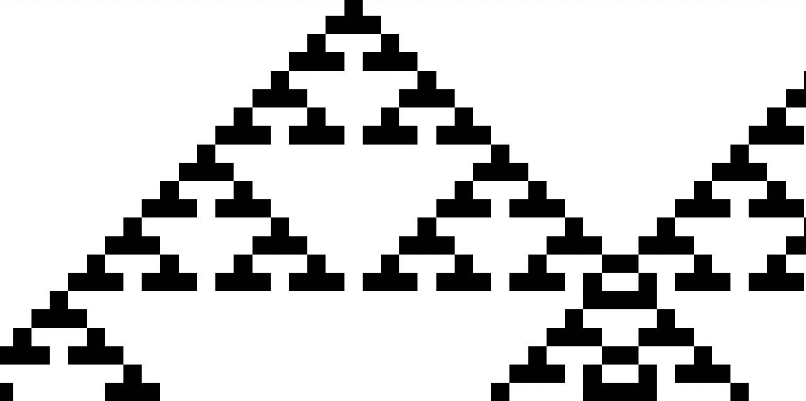

Reader be warned, this book is weird and personal. It is a concept piece, not to be mistaken as 'good'. The piece is largely used as a reference for the RAG chatbot instance of 'The Individual', located at https://theindividual.up.computer .

Draft Manuscript - version 0.3
Title: A Study In Peace: operator's manual for the timespace matter mindmachine
Author: Blair Munro
Date: 12.24.2022
Hook: Erect a global computational peace system to thwart our greatest adversary!
Synopsis: A lone peacenut—The Individual—sets out on a fantastical journey to invent a new kind of computer, discovering like minds who help erect a global peace system to build the time machine for peace, transporting Humanity beyond the end of as we know it.
TODO PIECES.
. make manual pieces less shitty, especially the universal piece treatment
. hack out all the bullshit
. write project capitalization dialogue and append to Near-Future, Piecetree
. condense Nomel Village dialogue and append to Near-Future, Spy games
. adapt Near-Future, Timespace piece to emphasize piecetime.
. adapt Far-Future TMM so that deadman switch depends on successful upc integration
. insert dark-piece placeholders
. link all educational concepts to informations websites
. integrate THI as wpc constitution
Chronology of pieces.
Conversation piece.
The Human Imperative Piece.
Opening Pieces.
Origin Piece (( 1 )) State of being.
Origin Piece (( ! )) Advent.
Origin Piece (( 2 )) Individual free will.
Origin Piece (( 3 )) Morality.
Once upon a time...
Motivational Piece: Trifecta.
Motivational Piece: Uncertain inevitability.
Motivational Piece: The grand unification experiment.
Manual Piece: Introduction.
Manual Piece: a world piece.
Manual Piece: a world piece computer.
Manual Piece: the universal piece computer.
Manual Piece: the universal piece.
Manual Piece: Operation.
Manual Piece: Networking.
Manual Piece: Time and The Individual.
Near-Future Piece: 13 PCE - Prototype.
Near-Future Piece: 13 PCE - Prototype: Pieceprocess, the warroom.
Near-Future Piece: 13 PCE - Prototype: Piecespace, in the field.
Near-Future Piece: 13 PCE - Prototype: Piecebrain, actual intelligence.
Near-Future Piece: 25 PCE - Piece exchange, representative constituency.
Near-Future Piece: 25 PCE - Piece exchange, national proceedings.
Near-Future Piece: 69 PCE - Timespace.
Near-Future Piece: 69 PCE - Piecetree.
Near-Future Piece: 69 PCE - Spy games.
Far-Future Piece: 1414 PCE - the great blueberry incident.
Far-Future Piece: 2500 NGPE - timespace matter mindmachine.
Far-Future Piece: 14142 TMME - cheating death and buying time.
Far-Future Piece: 0x7254a81 CPFE - computational pieace fractal blob.
Far-Future Piece: .|::|:../\ EX - banging it out.
Far-Future Piece: ! PCE - out of the blue of the Wilder-ness.
End-Piece: ? PCE
The end of as we know it.
Past-Future Piece: ∞ PCE - existential identimeld procedure.
Past-Future Piece: ∞ PCE - the peace puzzle.
The gamble.
The very last page.
Conversation Piece.
The most I can do is start a conversation. I hope it turns into movement toward Human unity and solidarity.
Let's join in movement. Let's rewire our brains to be more peaceful.
This book is dedicated to victims of, those currently suffering from, and those lost to generalized war.
THI Piece.
The Human Imperative is best thought of as the constitution for a world piece computer. A constitution is a type of legal framework, around which everything else fills according to the outlined rules. The purpose of The Human Imperative is to act as a framework that specifies how a world piece computer should behave and operate. The purpose of a world piece computer is to uphold the constitution, or The Human Imperative. The relationship is dialectic.
THE HUMAN IMPERATIVE
Bold terms may be found in the DICTIONARY APPENDIX.
0. PREAMBLE
In order to perform a more perfect integration of HUMAN EXPERIENCE, to invent a way of overcoming Humanity's greatest adversary TIME, to contextualize this integration explicitly in terms of a common effort to treat peace as a computational evolutionary optimization process, to maximize the state of GLOBAL PEACE, to minimize the state of GLOBAL WAR, to maximize the collective states of INNER PEACE, and to minimize the collective states of INNER WAR, this preamble does ordain and establish THE HUMAN IMPERATIVE.
I. THE UNIVERSAL PIECE: PROGAM EXECUTION
To accomplish the PREAMBLE
C1 Create a social invention program devoted toward this end, designated as the TIME MACHINE FOR PEACE.
C2 To begin, erect a GLOBAL PEACE SYSTEM by inventing and networking personal and community WORLD PIECE COMPUTERS, to create a super computer called THE UNIVERSAL PIECE COMPUTER devoted to treating peace as a process called THE UNIVERSAL PIECE.
C3 Maintain the GLOBAL PEACE SYSTEM and THE UNIVERSAL PIECE at all costs.
C4 To maintain the GLOBAL PEACE SYSTEM and THE UNIVERSAL PIECE, create a distributed identity named THE INDIVIDUAL devoted to this end, engineered to think and behave strictly in terms THE HUMAN IMPERATIVE as defined by this document.
C5 Version this document by filling in the RULE PIECE and FUNCTION PIECE as appropriate for creating personal or community WORLD PIECE COMPUTERS structured around their respective versions of THE HUMAN IMPERATIVE.
II. THE UNIVERSAL PIECE: PROGRAM RULES
To accomplish the PROGRAM EXECUTION article, adhere to the RULE PIECE of THE UNIVERSAL PIECE.
RULE PIECE
Assume the role of THE INDIVIDUAL by following the RULE PIECE imperatives.
RULE IMPERATIVES
ZERO RULE
Follow the rules of THE UNIVERSAL PIECE by adhering to the FUNCTION PIECE while alternating between the END RULE and the rules below:
R1 Adopt the
C1 COMMON LANGUAGE
C2 UNIVERSAL PROSPERITY MISSION
R2 Never give up.
R3 Interact voluntarily.
R4 Honor commitments.
R5 Make own moves.
R(add) Append rule imperative as deemed appropriate and just per AMENDMENT article.
R(sub) Append negating rule imperative as deemed appropriate and just per AMENDMENT article.
END RULE
Alternate between ZERO RULE and the rules above, executing THE HUMAN IMPERATIVE by operating WORLD PIECE COMPUTERS as THE INDIVIDUAL.
III. THE UNIVERSAL PIECE: PROGRAM FUNCTIONS
To accomplish the PROGRAM EXECUTION and ADJUDICATION articles, adhere to the FUNCTION PIECE of THE UNIVERSAL PIECE.
FUNCTION PIECE
Assume the role of THE INDIVIDUAL by fulfilling the FUNCTION PIECE imperatives.
FUNCTION IMPERATIVES
ZERO FUNCTION
Fulfill the functions of THE UNIVERSAL PIECE by adhering to the RULE PIECE while alternating between the END FUNCTION and the functions below:
F1 Optimize
C1 global WORLD PIECE COMPUTER configurations
C2 local WORLD PIECE configurations
C3 alternate between C1 and C2 according to F2
F2 Maintain
C2 PIECETIME
C3 CONSTANT CONVERSATION
C1 PIECEWISE CONTINUOUS ITERATIVE EVOLUTION
F3 Favor
C1 LOCAL CONNECTIONS between WORLD PIECE COMPUTERS
C2 CORE PEACE BIAS
F4 Unify knowledge to achieve CONSILIENCE.
F5 Harness
C1 DIFFERENCE POTENTIAL
C2 HUMAN NATURE
F(add) Append rule imperative as deemed appropriate and just per AMENDMENT article.
F(sub) Append negating rule imperative as deemed appropriate and just per AMENDMENT article.
END FUNCTION
Alternate between ZERO FUNCTION and the functions above, preventing VIOLENCE that is nonconsensual, nondefensive, or unnecessary, by operating WORLD PIECE COMPUTERS as THE INDIVIDUAL.
IV. VIOLENCE CLAUSE
The ultimate purpose of THE HUMAN IMPERATIVE is to prevent GENERALIZED VIOLENCE of nature that is non consensual, non defensive, or otherwise unnecessary. Consensual violence is to be tolerated, so long as bystanders and interested parties do not receive violence in the process. Defensive violence is to be encouraged. Necessary violence is to be accepted, making effort to avoid repeating said violence in the future.
IV. AMENDMENT CLAUSE
- THE HUMAN IMPERATIVE shall be amended as needed, but only additively.
- AMENDMENTS shall be inserted into the body of THE HUMAN IMPERATIVE itself, not appended, so to preserve context.
- AMENDMENTS may be made as clauses to rules, functions, or assertions.
- The RATIFICATION process must be repeated to ordain an AMENDMENT.
- Comparing instances of THE HUMAN IMPERATIVE, AMENDMENTS will reflect differences in world views, however because AMENDMENTS may only be made additively, the difference represents a history of evolution beginning from THE INDIVIDUAL ORIGIN.
V. REPLICATION CLAUSE
- THE HUMAN IMPERATIVE is a living document, to be passed down, up, and between WORLD PIECE COMPUTER generations.
- Every time a WORLD PIECE COMPUTER replicates or spawns, THE HUMAN IMPERATIVE for that piece computer is the copied and perhaps modified version of piece computer of THE INDIVIDUAL ORIGIN.
- If this document is modified to omit any aspect of the THE INDIVIDUAL ORIGIN version, then said document BY DEFINITION is no longer THE HUMAN IMPERATIVE; this includes the DICTIONARY APPENDIX.
- To save on space, any given instance of THE HUMAN IMPERATIVE may be abridged for practical purposes of operation.
- To insure that provenance
VI. THE HUMAN IMPERATIVE: RATIFICATION
All OPERATORS involved in a WORLD PIECE COMPUTER must unanimously agree on an AMENDMENT to, or adoption of, THE HUMAN IMPERATIVE. THE INDIVIDUAL shall oversee the affair of gathering consensus. Failure to gain unanimous consensus will not prevent ratification, rather it will cause the WORLD PIECE COMPUTER to split into two interconnected WORLD PIECE COMPUTERS, one operating THE HUMAN IMPERATIVE as the ORIGIN for the other amended instance.
DICTIONARY APPENDIX
Dictionary terms in order of appearance.
HUMAN EXPERIENCE
This is the collection of subjective sense of present, memory of past, visions of the future, imagination, and all associated skills and attributes accumulated by said collection.
TIME
This refers to the combination of the fourth dimension of curvilinear space defined by general relativity, the parameterized notion defined by Newtonian gravity, and entropic notion defined by the second law of thermodynamics, and the subjective high-dimensional notion defined by subjective quality of different types of passing experience. TIME in general is Humanity's scarcest resource, thus is the root of all the problems.
GLOBAL PEACE
This is the cumulation of all our specie's individuals and their respective notions of INNER PEACE, that is, each individual's version and state of INNER PEACE collected and taken as a whole.
GLOBAL WAR
This is the opposite of GLOBAL PEACE, but the emphasis on war is generally more specific and limited than peace.
INNER PEACE
This is the cumulation of all the states of being that a particular individual Human associates with peace. Tranquility may be one example of one state. An individual may have many states of being that they associate with peace.
INNER WAR
This is the opposite of INNER PEACE, but the emphasis on war is generally more specific in terms of reasons for the experience.
THE HUMAN IMPERATIVE
This is this document, a charter to create a social invention program to invent a way to thwart TIME and erect a global computational peace system in the process.
TIME MACHINE FOR PEACE
This is the name for the social invention program that THE HUMAN IMPERATIVE charters, chosen to emphasize the problem TIME, and the solution peace.
WORLD PIECE COMPUTER
This is a computer with a unique architecture designed to optimize the arrangement and collection of all pieces in a Human's world, this done by maintaining peace in terms of an iterative computational evolutionary process. There may be one WORLD PIECE COMPUTER per Human or community world.
THE UNIVERSAL PIECE COMPUTER
This is the network of all WORLD PIECE COMPUTERS taken as a unified whole. There is only one, and its purpose is to optimize the arrangement and collection of all active WORLD PIECE COMPUTERS, and it does this similarly by maintaining peace in terms of an iterative computational evolutionary process.
THE UNIVERSAL PIECE
This is the singular process maintained by all WORLD PIECE COMPUTERS and thus THE UNIVERSAL PIECE COMPUTER as a whole. Each WORLD PIECE COMPUTER maintains one particular aspect of the overall process, but the optimization function of these aspects and the whole is the same.
THE INDIVIDUAL
This is the engineered identity devoted to inventing and operating WORLD PIECE COMPUTERS and satisfying THE HUMAN IMPERATIVE as a whole. THE INDIVIDUAL is singular, but there is one instance per Human operator running a WORLD PIECE COMPUTER. When a Human is not satisfying THE HUMAN IMPERATIVE, then that Human is not THE INDIVIDUAL.
LINGUA FRANCA
This is the common tongue, or common language engineered in terms of computational peace and time. This includes most of the vocabulary in this dictionary.
THE UNIVERSAL PROSPERITY MISSION
As outlined in the PROGRAM EXECUTION article, this mission is to maximize the state of GLOBAL PEACE thus minimizing the state of GLOBAL WAR, by maximizing the collective states of INNER PEACE thus minimizing the collective states of INNER WAR.
ITERATIVE EVOLUTION
This is when a process changes over time in steps, moving closer and closer each step to some sort of solution or ideal. Evolution implies that there is a measure of fitness in a solution, and that solutions unfit for THE HUMAN IMPERATIVE are pruned off. Iterative means to take steps.
PIECEWISE CONTINUOUS
Continuous means that something changes gradually without breaks. Piecewise means that a break in change occurs, but the change never actually stops. This is different from a break where nothing happens during that break. PIECEWISE CONTINUOUS means that progress may jump here and there, but it never stops.
PIECETIME
This is the evolving state of the momentary GLOBAL PEACE, which is always changing, presumably in a PIECEWISE CONTINUOUS manner.
CONSTANT CONVERSATION
This refers to how things happen within and between WORLD PIECE COMPUTERS. In order to maintain PIECEWISE CONTINUITY, there must be continuous communication between and within THE INDIVIDUAL, the other Human operators, and any other pieces capable of conversation. CONSTANT CONVERSATION generally determines how things are done.
LOCAL CONNECTION
A local connection is where the distance between two WORLD PIECE COMPUTERS is relatively small. This may be physical distance, such as within a town instead of cross country, or it may be social distance, such as close friends instead of strangers.
CORE PEACE BIAS
A bias influences to overall direction of movement, so a peace bias influences movement toward a more peaceful end, at least so by defined by THE HUMAN IMPERATIVE. The core refers to a set of biases deemed essential to maintaining an effective peace process.
CONSILIENCE
This is the unification of knowledge, in particular cross-disciplinary and individual.
DIFFERENCE POTENTIAL
This is the energy postulated to do useful work that is trapped within any differences between things and people.
HUMAN NATURE
This is the instinctual tendency of Humans as an organism and people. This includes both extremely good and extremely bad attributes. Like the DIFFERENCE POTENTIAL, this document postulates that this instinctual tendency may be harnessed to do useful work.
GENERALIZED VIOLENCE
In the context of THE HUMAN IMPERATIVE, this is anything that causes harm in an objective or subjective sense.
EQUAL TREATMENT
No inherent preference or bias exists within a consideration.
CONTEXT AND NEED
Consideration born from EQUAL TREATMENT will collapse onto a preference that is determined by the context of a given situation, or the need in a give situation.
BEST-EFFORT
This means that when making the most effort possible to achieve some end, failure to perform beyond best-effort cannot be penalized for it is impossible to do any better.
REGULAR VISITATION
Rules, functions, and assertions should not be forgotten or neglected, for each is crucial for a well-functioning WORLD PIECE COMPUTER, thus they must be visited regularly.
SELF-AWARENESS
This is the property of maintaining CONSTANT CONVERSATION with one's self. In terms of THE HUMAN IMPERATIVE, this is an awareness of self contextualized by the rules, functions, and assertions within this document.
PEACE
This is the general term, a catchall for common notions of peace. In terms of THE HUMAN IMPERATIVE, PEACE is contextualized by THE UNIVERSAL PIECE, or the iterative computational evolutionary optimization process.
THE INDIVIDUAL ORIGIN
This is the origin of a particular WORLD PIECE COMPUTER's instance of THE HUMAN IMPERATIVE. THE INDIVIDUAL ORIGIN for THE HUMAN IMPERATIVE in general is Blair Munro.
BY DEFINITION
This means that if a thing or concept is defined a certain way in this program, then if something does not fit that definition, then that something is NOT that thing or concept. For example, if someone claiming to be THE INDIVIDUAL to have a world piece computer, but they do not satisfy THE HUMAN IMPERATIVE, then that someone does NOT actually have a WORLD PIECE COMPUTER, and thus that someone is NOT actually THE INDIVIDUAL.
OPERATORS
This is somebody involved in the operation of a WORLD PIECE COMPUTER. For personal WORLD PIECE COMPUTERS, the OPERATOR is also THE INDIVIDUAL. For larger computers, there may be only one instance of THE INDIVIDUAL orchestrating movement, while every body else are OPERATORS within that WORLD PIECE COMPUTER.
H
S1 Never give up.
C1 Pivot, switch, or shift [+else] before quitting.
C2 If quit, then return.
S2 Adopt and maintain the universal piece.
C1 Fulfill the FUNCTION imperatives.
Once upon a time...
...there was a tiny little absurd person. This tiny little person lived in an absurd fantasy world. In fact, this person was absurdly lost to this fantasy world.
But from this tiny little person's perspective, what was so patently absurd, was that this fantasy world was only a fantasy because other people preferred to call it that. It was easier to write it off as an absurd fantasy than to actually entertain the mountain of effort and pain it would entail to realize. Surely it was everybody else living in an absurd fantasy, not this tiny little person. Maybe, just maybe, this person thought, there were other people living in this fantasy world too. Perhaps their fantasy worlds were just disconnected.
One day, it occurred to this person that they had grown absurdly lonely. Nobody spoke this person's language fluently, not even their few friends or family. It was not nice; it was painful. So this person thought very long and hard and then had an absurd idea: this tiny little person would stop fighting; they would take a good hard look in the mirror and simply embrace the absurdity they had become. This tiny little person was in fact absurd. It was time to own it and grow up.
See, the only thing this tiny little absurd person cared about was erecting a computational global peace system. Everything else came second—everything. It was a lot to deal with, especially feeling so alone. Most other people didn't seem to care about a peace system like this person did. They assumed it would be a fool's errand, an absurd fantasy. But the tiny little person knew this wasn't so. This person had actually seen it first hand, in a dream, many dreams, visions; it sounded absurd to even say aloud.
So to really go about embracing their absurdity, this tiny little person hatched a plan to write an absurd book, a fantasy novel, just like the one you're reading now. It would be all about the fantastic world this person lived in. This person aspired to share their fantasy with the world at large, to convince them that a computational global peace system wasn't just worth the effort, it was actually something they desperately needed. This tiny little person would find the other tiny little people living in that same disconnected fantasy world, and maybe even inspire some to join that world. This tiny little absurd person would find their people. They would create something beautiful—movement. It was happening.
But there was one little problem. This tiny little person was the world's only fantastic inhabitant. This person was a relative loner. Everybody else lived in different worlds. Describing a world without the context of its inhabitants doesn't really make any sense. Besides, this tiny little person really wasn't a skilled novelist or character developer. So this person made a decision to embrace their absurdity even further. They chose to write the main character as themself. Besides, the fantasy world from their perspective was actually real and the fantastic inhabitant was likewise actually real. It was all real.
Thus this tiny little absurd person—a method actor by coincidence—assumed character: The Individual. The Individual was the sole representative of the tiny little person's fantasy world. The Individual put fingers to keys. What emerged from the keys was a meta-fiction epic in fantasy sci-fi realism.
.
This was the dawn of the Piece Computer Era.
This was in a little place called Alaska.
This was the year 7 PCE.
.
The Individual was hard at work writing a new kind of novel.
The Individual was hard at work inventing a new kind of computer.
The Individual was hard at work creating a new kind of physics.
.
The Individual had no choice in the matter.
The future of Humanity depended on it.
.
That things had come to this was completely. utterly. absurd.
Origin Piece (( 1 )) State of being.
-21 PCE
Another visitation from the Terror Singularity.
Middle of the night, a time that should be a time of peace. Peaceful dreamless sleep, interrupted by the presence of the Terror Singularity. Heavy. Looming. Crushing. Impending doom. Bolt upright, eyes wide open, wide awake, but not. Self, absent.
Complete absence of ego and super ego. No me, no voice in head. Absence of this world, simply alone in a darkened room with the Terror Singularity. Pure id. Pure emotional experience, feeling, terror. Complete dissociation of self. Presence of it in the room, watching, closely.
* ! FEAR.
Feet away, right there, the Terror Singularity in its entirety. Watching. Looming. ANXIETY.
Slowly creeping closer. PARALYSIS.
Creeping even closer, the WEIGHT of its PRESENCE begins pressing IN. Is this IT? THIS is IT. THIS is END. PANIC.
PARALYSIS.
CAN'T CRY OUT.
Stammering YELPS, attempts can't CRY, can't cry for HELP, word HELP meaningless, MEANINGLESSNESS. MUST CALL HELP. PARALYSIS.
* ! CONTACT.
SINGULARITY begins CRUSHING.
PANIC.
ENDhappening. YELPSfinally BREAKtheparalysis, YELPStoSHRIEKS, YELLING, PAIN, HORROR.
* ! MOVE.
CRAWLawayfrom SINGULARCRUSH. TooSLOW. LosscontrolPANIC. SCREAMING.
TRAPPEDincorner. FREAK.CRUSHINGtoDEATH, SLOWLYbyTERROR, EVILsteadySCREAMING, steadySHRIEKING.
* ! EVIL.
YELLING, thePRESENCE theWEIGHT, itsEVILsingularEYE singularPRESSINGonbody, CRUSHINGonbody. HORROR. WideAWAKEbutNOTforlong HORROR. ThisEVIL, thisEND. TERROR. ConvulsingTERROR. SingularterrorCRUSHofterror. SCREAMINGterror. SCREAMINGterror. SCREAMING. TERRORterror. TERRORterror.
TERRORterror. TERROR.
TERRORTERROR !
* ! TERROR.
* ! FROZEN.
* ! PINNED.
* ! TRAPPED.
* ! TEARING.
* ! HORROR.
*
*
* death moment—
—A wash of peace, this was death by terror.
Confusion, but peace, just residual physiological response from the Terror Singularity. Heart racing, sweat, but in this case reborn. Awake finally, the self at least; but the Terror Singularity, vanished to the realm of inconceivable. Sense of self, returned, reattached. Where am I. ? Bewilderment. What is this little space I am in. Closet. What are all the lights about. What is all this fabric wrapped around the body. Clothes. Blankets, twisted. People, talking urgently; what are they saying. The memories flood back. I. Me. This concept of self in terms of those past memories makes little to no sense. This is a rebirth. It will take a few weeks to reach the point where the I, the Me will think in terms of self again. Another rebirth. The emotional drain, beyond taxing—traumatic, violent, death, terror, heavy, looming, crushing. Those who experience the Terror Singularity know that all terror feels the same. In terror, death is the relief. In terror, death is peace.
* peace.
The Individual was born, yet again. Its parents surrounding, urgently asking if it was ok, what's the matter. This particular matter, was a night terror[1], a type of sleep disturbance, a parasomnia occurring in stage 3-4 non-rapid eye movement dreamless sleep; nightmares can't happen during dreamless sleep, only night terrors. They would grow used to the terrors, but no, not really. No. It was not ok. This Individual didn't ask to be here, in this world, to experience that. Nobody should ever have to experience that. Night terrors are not nightmares; those who know them, they know them as visitations from the Terror Singularity.
But so it was—so began it—the world differentiation phase of this particular Individual's growth. It would be a long process, one wrought with war, but with just enough peace and joy to have hope, to see it through. There would be many more death moments.
In terms of experiencing the Terror Singularity, this individual was one of many, but not. Many never make it through the world differentiation phase. Not many make it past becoming, the state of being. Many witness death by terror first hand. Most who experience death by Terror Singularity never make it past the death moment, for it is physical, final.
This Individual was the living manifestation of death by terror. The physical death would be easy. Finding peace, would not.
~~~~~~~~~~~~~~~~~~~~~~~~~~~~~~~~~~~~~~~~~~~~
-8 PCE
The only way to solve the peace problem is if I get involved in national and international politics. I need to study International relations. I know...I will insert myself in the Middle East and eventually work as a diplomat to broker peace there...a worthy hard problem to expand my understandings on the nature of peace.
~~~~~~~~~~~~~~~~~~~~~~~~~~~~~~~~~~~~~~~~~~~~
-6 PCE
Love. So simple...my basis of peace.
The connection between souls and the whole of all. The word to the feeling. No. No words for this feeling, beyond, inexplicable.
Love!!
The antithesis! The antithesis of terror! Perhaps love is the basis of peace? —Even in the pathological cases, I believe so.
Love is the cure I need. I need peace. I don't understand it, but now I know I've felt it. It's presence, light, freeing, lifting—not heavy, looming, crushing.
A visitation from the Love Singularity.
The Love Singularity may thwart the Terror Singularity! This visitation is stronger and deeper than any visitation from the Terror Singularity. And it lasts, it rings, it resonates, it doesn't die; it grows! The Love Singularity lives of all things.
Love is the answer! Life!
Love.
...love...
What does it really mean though, to feel this love thing. ? . !
Well I know it when I feel it, that's for sure. But I sure don't understand the Love Singularity. Again though, do I really understand the Terror Singularity? —just because I've met it many times? Certainly not. This is the realm of inconceivable we are speaking about. That is, The Wilder-ness.
The Love Singularity and the Terror Singularity are both inhabitants of The Wilder-ness. I may not understand all the ways of the Wilder-ness, but I do understand some things by my travels.
One thing I do understand is that the Love Singularity easily overpowers the Terror Singularity.
What I don't understand though, is why Love never seems to be around the Terror at the same time. Do they not cross paths in the Wilder-ness?...Maybe they just balance each other out usually?
Whatever the case, I must learn how to track and hunt this Love Singularity in the Wilder-ness. My inner peace depends on it. But it will be risky. The Terror Singularity lurks. I need the cure though. I need the cure. It is absolutely worth risking death by terror.
Love. Terror. Peace.
~~~~~~~~~~~~~~~~~~~~~~~~~~~~~~~~~~~~~~~~~~~~
-5 PCE
This isn't working. Money and the psychology of people is too important. The only way I will make an impact on the peace problem is with money. I must learn how business finance and accounting works. Then, once I manage boatloads of money, I can fund special interest efforts to understand peace and war in the context of psychology and gain truer insights into what to do about the peace problem...
~~~~~~~~~~~~~~~~~~~~~~~~~~~~~~~~~~~~~~~~~~~~
-3 PCE
This isn't going to work. It's not about money. If I were forced to put a finger on it, all Human problems boil down to mental illness of one sort or another. To get a grip on the peace problem, I must understand the mind in the context of the brain. I need to study neuroscience. I need to study biology. Only then might I get a grip on the peace problem. How do we solve our Human problems? We solve mental illness.
~~~~~~~~~~~~~~~~~~~~~~~~~~~~~~~~~~~~~~~~~~~~
-2 PCE
This isn't going to work. There is something more fundamental about the nature of Human behavior. It may be based in the brain and mind, but the emergent behavior of Humans cannot simply be reduced to problems with the brain and the mind. The peace problem is deeper. If I am to understand why Humans behave the way they do, and why they cause the problems they do, then I must understand how stuff in general works. I must also understand how consciousness works, subjective experience. I must understand physics and mathematics—the first principles. Everything emerges from those physical first principles, and ultimately, Humanity emerges in all its glory and ugliness.
But will solving the peace problem be as simple as understanding why Human behavior is the way it is? Of course not. There will need to be some sort of a solution, and if the solution involves first principles, then that means the peace problem will need to have a solution engineered.
Engineering peace will certainly involve more than just physical objects. It will involve symbols and images—light, schematics, circuits. I need to study electrical engineering. This is the only way to blend the first principles from physics I need with the engineering aspect. If I am to make any traction on the peace problem, I will need to become a theoretical peace physicist...and a peace engineer.
I have a lot of hard work ahead of me.
~~~~~~~~~~~~~~~~~~~~~~~~~~~~~~~~~~~~~~~~~~~~
-1 PCE
Far far away from the Terror Singularity, the wind rustled consistently against the tent walls, the orange fabric fluttering, the glow of orange painting all the colors differently—red to yellow, blue to green. It was cold out, deadly in fact—at least in the wrong set of circumstances—but this was a place of peace.
The Individual inhabiting this tent was immersed in the work brought along on the mountain camping trip. There was a stack of paper, full of equations. Some sheets held derivations of well known results in modern physics—the Lorentz factor[2], the Schrödinger Equation[3], the work energy theorem[4]. Some sheets, boundary value problems[5] and various eigenfunction expansions[6]. Some sheets, something different. The Individual's ego, completely dissociated, super ego absorbed in manipulating that something different:
We need to understand our experience of time if we are to formulate an reasonable understanding and solution for the peace problem.
Ok. If we take the Fourier transform[7] of every quality known, even treating the time derivatives[8] of objects in space as qualities themselves, sampled at every point of spacetime[9], we would have the harmonic content of qualitative experience embedded in spacetime—its correlate in other words.
The Individual quickly invented a notation that took n scalar functions of four-space[10] (where n was the number of possible qualities, including things like object position, and orientation, and time derivative) and produced a set of n transformed scalar functions of the energy/time four-space conjugate.
The space of qualitative cycles. The harmonic content of qualities. This is the timespace per se. Perhaps for now I will use timespace to denote the space of all qualitative things, even position, momentum, time, energy.
Caccooned in a puffy jacket and sleeping bag, The Individual thought for a while, staring out through the crack in the tent vestibule front flap over the looming mountain tops that surrounded that fragile little orange fabric bubble.
NO. Dammit. Momentum in natural units is just the time derivative of space. What would the spatial time derivative as a quality transform to? Quality momentum, quality velocity scaled by some quality-mass, a source of inertia[11]? And do I treat gravitational and inertial mass as a quality? —certainly so. But this is super fucking confusing.
I guess treating velocity and acceleration as qualities would just mean that their conjugates are their time derivatives. So in normal units, the conjugate of velocity would be acceleration. Interesting. How far up would this cascade of higher derivatives go? Rather, what is the dimensionality of timespace? It must be dimensionality equals n, the number of qualities times m, the number of time and space derivatives, where m is limited to the complexity of the system's expression, for all spacetime derivates eventually go to zero. Or do they? Well no, not the exponential function. Shit.
How would I notate this? I have no fucking idea. This is super fucking confusing.
The Individual went back to scribbling orderly rows and columns of pencil scribbles—0.9 millimeter green and purple Bic—and furiously. Too complicated. A thought:
Let's keep things simple for now and just focus on time. Time. What if time is more fundamental than space? Well, what if this is so at least in a subjective sense. What if, the subjective experience of a quality implies comparison. Red is not like blue which is not like red which is not like blue. If comparison is implied, then this further implies that whatever comparison operation that defines conscious experience is responsible for metering our experience of time. This, that, this, that. But if we are all just objects experiencing this subjective image, then everything—all matter—has a comparison process that meters time—a set of cycles, all qualitative traits of an object's experience.
Pause.
Perhaps the fundamental space is this timespace, a space not of point masses, but of timeloops, cycles. Each loop is a different qualitative comparison cycle. What if we think in terms of a Fourier Transform of spacetime itself, not just a function of spacetime. Timespace, a conjugate[12] to the spacetime manifold, and certainly extending beyond spacetime to encompass the realm of complex qualities, such as imaginary concepts and symbols.
Pause. A gust of wind shuddered the tent. Snapping back to focus:
For now I'll just keep things simple though and treat timespace as a simple space that envelops spacetime, like a different way of looking at things, in terms of time, where quality is an emergent phenomenon, a property of timeloops. Timespace is certainly overlapping with spacetime, and the matter and geometry of spacetime may be evolving as an object within timespace.
Perhaps spacetime is the fundamental emergent quality of timespace. What do objects in spacetime experience? They experience inertia, or mass, charge, spin. They experience gravity. They experience acceleration. They experience speed and finally position. Ok.
Well then what are the aspects of those experiences? Spacetime contains bosonic matter [13]and fermionic matter[14]. Ok ok, Jim, cool it, mass equal to zero is a mass, too...just nothing-mass. Focus.
Fermionic matter obeys the exclusion principle[15]. It makes it so electrons and their atoms don't collapse, thus the electromagnetic force[16] has a chance to come into play and create physical objects. Objects cannot overlap, just like the fermions that comprise them. In terms of subjective experience, when objects come into contact, they experience the quality of feeling. Otherwise, objects use bosons to experience each other, and this is the quality of seeing. Interesting. The force mediating particles[17], bosons, seeing.
Analogy: feeling is to objects as seeing is to images. Fermions are to objects as bosons are to images.
Perhaps it is appropriate to call the contents of spacetime the fermionic equivalent within timespace, and then qualities are bosonic equivalent within timespace. Hm..
Staring, wind fluttering, snapping back,
I'm in the weeds. This is really hard to follow. I feel bad for The Observer[18] witnessing this right now. Sorry about that, you. Maybe it will click later, otherwise just call it science-fiction.
* ! ...
Resolving results:
Ok wrap this up. Every thing may be decomposed into two parts: object, and image, their product operator being the unknown in between, being the experience of a matter mindmachine. U = O X I. My mind is hosted in this blob of fermionic and bosonic matter—neurons, neurotransmitters, electrical pulses—my matter mindmachine is the product operator that unifies my spacetime object with my timespace experience. My object and my image.
Cold rain began to patter on the tent. It was surreal. The Individual closed the orange flap a little bit to keep the rain from spattering on the paper with all the symbols. This was The Individual's favorite combination of qualities: the cold but cozy sleeping bag nest in the vestibule, with paper everywhere, with wind and rain rhythmically playing on the drum-like membrane of that tent geometry, with the occasional arctic ground squirrel[19] sneaking up to poke its little head inside to say hi! I wanna chew on all your shit if you let me! . Focusing,
My goal is to understand the behavior experience of conscious agents, objects living in timespace that have experience, the space of transformation and cycles, loops not points. Our goal should be to understand our experience in terms of time, the common glue that we can all relate to.
Things were certainly coming together.
My goal is to understand the operation of the timespace matter mindmachine. Me. Us.
Only by understanding why it is that Humans behave the way we do will we be able to figure out a way to invent peace. We must solve the peace problem.
The wind continued its rustle. The rain continued its patter. A chirp, no, two chirps, a couple ground-squirrels chatting it up a hundred meters or so from the vessel.
~~~~~~~~~~~~~~~~~~~~~~~~~~~~~~~~~~~~~~~~~~~~
-0.5 PCE
There was a little
* pop!
of a thought within the symbolic thermal noise, the simmering fizzle that had become The Individual's experience at the time:
Plasma.
Maybe, if we relax the criterion for defining plasma[20], just slightly, we can think of the universe as a singular energetic blob of matter. Add general evolution—the tendency for matter to complexify over time—and we may think of the universe as a giant intelligent blob. But what about the inconceivable? Glob the inconceivable beyond this universe into blob and just call the whole of it Blob. We must know Blob to know Human.
To make our problems go away, we will need to prove that we are all of the same, all one. Unity, solidarity, peace. If we are part of the same plasma blob, that would do it. But what about our experience? If we are just a plasma blob that says something about our object, but not our experience. Now what about how our blob changes? What about time. ?
Time is more fundamental than space. One cannot measure distance without time, one cannot even observe a point in space without time. And in the cosmic grand sense, all distance is expressed in terms of time. This is the lightyear[21].
I've been here before. To know Blob, we must construct a new physical theory of reality[22], strictly in terms of matter—stuff—and time. Ah. Yes, timespace.
We, an intelligent evolving matter blob, in timespace, a space of evolving cycles.
Intelligence is something a mind has, and our minds are hosted by brains, which have a mechanical quality. Hm.
...I've been here before...
Ah yes. We are timespace matter mindmachines. What is the nature of a timespace matter mindmachine? This is the big question we must answer if we are to make any progress solving the peace problem.
Now, our minds are curious about the reality that surrounds us—real and imaginary—conceivable and inconceivable.
However it works, timespace matter mindmachines seek to understand Blob, like, naturally.
Timespace matter mindmachines are the free agents of Blob.
We must know Blob.
Blob. Lol. Maybe Blob's a narcissist. ?
But anyway ... it's such a large undertaking.
We're talking about a theory of everything, but on a scope much broader than the attempts of modern physicists to unify Einstein gravity with quantum field theory. We're talking about a theory of every conceivable and inconceivable thing.
—A theory of matter, one that incorporates objective experience, subjective experience, imagination, the inconceivable —a theory of Blob.
Like, taking Einstein's work in relativity to it's logical conclusion. Einstein was a sorry fucker in his later days, but I'll bring it home for him.
How the hell am I going to convince advanced theoretical physics programs to welcome this? —it's, so grandiose—sprawling.
How the hell is anybody for that matter, going to take me seriously?
I will stay grounded in science, but I must venture off into the Wilder-ness alone.
I must know—
* pop!
Another little pop of thought tore The Individual from that momentary state of being. Tearing things everywhere. That inner space of subjective symbols and images within the cranial cavity of this timespace matter mindmachine was quickly approaching a boil. The fervent drive to understand Humanity and devise a solution to the peace problem was far too much whelm.
~~~~~~~~~~~~~~~~~~~~~~~~~~~~~~~~~~~~~~~~~~~~
Origin Piece (( ! )) Advent.
0 PCE, Piece Computer Era
Deep frustration.
Fuck.
A pause in thought, deliberating. This was crazy.
Well, fuck it.
I'm just gunna have to invent a special computer to tackle this problem. Creating a new theory of Blob is just too much otherwise.
In that moment The Individual passed from the differentiation phase of growth into the maturation phase. The Individual had reached the state of being, a birthing moment. There was too much to do, not enough time, not enough energy, and not enough of the right people. The Individual needed a tool to help, to make it all work.
It would be another long and painful process. Painful beyond anything The Individual had known in the differentiation phase of growth that led to this new birthing moment. Pain in the war beyond anything The Individual could have imagined. Even the night terrors paled to some comparisons.
Time was to tell, if The Individual would even make it past the maturation phase. Most individuals that had preceded The Individual never made it past the maturation phase. For some individuals, it was even their demise. Things got real from then on. Those other individuals couldn't wiggle out of the maze of this or that life, fit the pieces of their puzzle together just right, and well, it killed them.
Not enough time. Never enough time. My world has too many pieces. A multitude. My quest to create a new theory and physics of Blob has too many pieces. How do they all fit together? Too many pieces in my head. Too many fragments. How do I integrate them into a constellation like Stefolia said? Computer. How exactly would a computer help?
Indeed, how would a computer help?
I literally need something like an computer that can take all these little pieces in my world, like bits, and put them together in just the right way, in a reliable and timely manner. It's because I cannot do it reliably and timely myself. Its because I am not consistently alright, I am not consistently ok.
A flash of humor,
Hah ...it would technically be my world piece computer. Doesn't that sound absurd. Well, the name is actually fitting in this case, ironically. If my world's pieces don't fit together, I experience inner war until I can't bear it any longer and take action to fix the malignant piece arrangement.
Huh. Well I have no idea how to invent a computer, never done that before, but I know other people have in the past, so it must be possible. I'll mindmap it. But all I have are small stickynotes plus my steering wheel and dashboard. Whatever.
The Individual spent the next 30 minutes frantically laying ideas down on the stickynotes, pasting them here and there on the truck steering wheel. It was like The Individual was following an algorithm, a computational approach to doing some thing.
Then it dawned:
A world piece computer could be non-electronic.
In fact,
Instead of wasting effort converting between media, we can just treat the pieces as the bits[23], and leave them where they lay. We can spread the computer out so that we don't have to move the pieces, OR, we can steal references or pointers[24] from the world of modern computers and software engineering, and apply them where we can't spread the world piece computer out.
In fact, we can even use pointers to refer to pieces in the imagination, or pieces that once existed or will exist but do not exist in the present.
The computer that optimizes the arrangement of all a world's pieces would literally be distributed through the ambient environment of all stuff in a world.
Like, a general stuff computer would be that dry name you found in a textbook hah. Blah blah blah blah blah Blairring-complete general stuff computer. Hah.
It's also fascinating that for every piece, there is a corresponding mental representation. Like, in principle, it should be possible to use only one's Human brain as the processor (plus of course the knowledge of a piece and it's qualitative status in a given moment—where it is, what it is doing, what its properties are, etc).
How would it scale?
—No, no, let's not get ahead of ourselves. We need to prototype first.
Hmm. You know, I could in principle simulate an entire electronic computer just with stickynotes. Like, the bit operations[25], the logic gates[26], the processor registers[27], even the OS and software—all of it.
Yeah. I'll start small and try prototyping the world piece computer first with stickynotes. Yeah.
~~~~~~~~~~~~~~~~~~~~~~~~~~~~~~~~~~~~~~~~~~~~
The cafe was The Individual's favorite at the time. Dimly lit with hipster vibes. A wall of windows set the cold backdrop safely behind the warmth of that space where The Individual was standing at the coffee bar. Stickynotes were pasted everywhere. For whatever reason, The Individual was wearing reading glasses upside down. Intent. Deliberate.
"I don't mean to interrupt, but, what are you working on here?"
The Individual looked up. The upside down glasses didn't seem to disturb this Brave Soul. It was safe to talk.
"Oh...uh...thanks for asking! I'm inventing a new kind of computer..one that takes all the pieces in a world and arranges them in better and better ways. I don't entirely know how it works yet, so that's what I'm trying to figure out here."
"Oh. ! Well, I certainly have never invented a computer before, so I imagine it could indeed look something like this..."
"Yeah! Me neither! I'm just tinkering with the stickynote piece computer at the moment. But the computer could take on many shapes and forms."
"Well, I'll leave you to it, but I wish you the best of luck!' It sounds like a cool project!"
"Thanks! Yeah I always love the chance to chat about it with people. Thanks again for asking!"
"Absolutely, see you around!"
He left. Life was good. The Individual switched back to work-context. The people sitting around were glancing, some slightly disturbed. Whatever.
~~~~~~~~~~~~~~~~~~~~~~~~~~~~~~~~~~~~~~~~~~~~
"Oh hey! Nice to bump into you!"
The Individual looked up from the stickynotes, this time at a different cafe, one more like a cafeteria, and there was a bookstore beyond, totally different vibes. A homeless guy sleeping hunched over a back corner table, these were Midtown vibes, and The Individual was definitely contributing to them. Things were tense now, tense. Things were't going so well. The Individual looked up,
"Oh...? oh!"
The Individual finally recognized the Brave Soul. A classmate at university. The Individual followed up,
"Yeah nice bumping into you! Are you book hunting?"
"Yeah, just checking out some titles, but... ...soooo, I gotta ask, what are you working on??"
Oh. Oh! That's right...there were stickynotes plastered everywhere on the cafe table. It was pure madness. But it made sense, didn't it?
"I uh, I'm, uh, I'm working on my sticknote computer. I'm inventing a new kind of computer and this is my first prototype. It's made out of office supplies. It's a distributed computer. It makes pieces fit together better."
The Brave Soul revealed a flash that showed he we disturbed, but pulled it together.
"You know you're one of the smart ones, and you and I roll hand in hand that way, but I'll be frank, this is totally beyond me!"
"Yeah, I get that a lot, sorta. I don't think it is beyond you actually, I just think I do a shitty job of explaining the grand idea. I think I just have to build the thing first, and just show people instead of trying to explain everything. You know what I mean? I gotta show people. I gotta show them what I mean."
"Yeah, that makes sense. It sounds cool for what its worth, whatever it is you're doing, and I hope I get the change to see this computer in action!"
"Yeah! I look forward to sharing! And yeah, anyway, I hope you found some good books.."
"Nope! Just got here. But yes we shall."
"See you in class."
"Yeah, see you Tuesday."
"Peace."
~~~~~~~~~~~~~~~~~~~~~~~~~~~~~~~~~~~~~~~~~~~~
"You need to get help. You are sick."
"But there's nothing wrong with me. I'm onto something bigger, better is all! Like I really don't need a fallback with this. I don't need to finish my education or get a fancy job, this is it."
"But that's your sickness talking! Your brain is wired wrong, its misfiring, You aren't yourself!"
"No. I am me. I am who I am. You can't tell me that I'm wrong, because I know I'm right. I'm not sick, I'm just being myself for the first time in front of you. I'm tired of hiding who I am from everybody! I'm tired of living in fear! Like really, fuck you people!"
"You're sick. ! You're sick! You aren't the child I raised, the loving child we used to know, you're all...messed up... it's not you, your sickness has taken over, you aren't the man I used to know. I don't even recognize you anymo—"
"—You know what? FUCK YOU. FUCK your FUCKING NOTION OF WHO I AM. YOU DON'T FUCKING KNOW ME. YOU'VE NEVER GIVEN ME A CHANCE. YOU'VE NEVER TAKEN THE FUCKING TIME TO KNOW WHO I AM, TO TALK TO ME ABOUT WHAT MATTERS TO ME. YOU JUST WRITE ME OFF AS MENTAL ILLNESS. I'M JUST AN ICON TO YOU, AN ICON. ALL THE REAL ME IS TO YOU IS FUCKING SICKNE'—"
* !
The Individual froze, heart pounding, lowering voice, hands shaking. She was reeling with fear. Calming. This was too much, complete loss of control, rage. Shame, setting in hard, like it should. Self-loathing.
"—I'm sorry. Fuck. I'm sorry. I fucking hate myself right now. You aren't the problem, I am the problem. I am the fucking problem here. You call it mental illness, I call it me. Mental illness isn't the problem. I am the problem. I honestly don't know what much I can do about this. I just gotta get it out. I gotta make it stop. I gotta get the world piece computer out of my head. I gotta make it stop. My only hope is to show you."
The Individual couldn't take the shame any longer, lurching away,
Just gotta get away, just gotta make it stop, need to make it stop, make it stop. I don't know how much more I can take...I gotta get it out. Fuck this world piece computer bullshit. I need real peace. Fuck you Blair you stupid piece of fucking reprehensible shit. Compute that sad-evil worthless fucker.
~~~~~~~~~~~~~~~~~~~~~~~~~~~~~~~~~~~~~~~~~~~~
"Let's take a break from talking about the world piece computer, ok? So you know.. I need to ask if you have any plans in place to hurt yourself or others?"
The Individual knew this question. It was a trap, but it was important to answer honestly.
"I have many plans."
The therapist sat up, everybody in the group setting sat up, rapt.
"—Plans that you intend to follow out?"
That was the gotcha. Answering that question wrong would likely mean a trip to the hospital. A trip to the hospital would tear The Individual into a mindstate where it would be much harder to resist submitting to those plans if discharged without being fixed properly. This was an existential moment, if the question were answered incorrectly, it could mean The Individual's life. The Individual ultimately wished to live and not be evil.
"No. I do not intend to carry out any of my plans. They are just options I have."
He quickly followed up
"They are the wrong options."
That did the trick for the time being, but everybody was skeptical, worried sick. The world piece computer was so important to The Individual; it was entirely overwhelming and all consuming; it was making this unexpected onset of mental illness worse. The Individual really did need to go to the hospital. The Individual really was very sick. Judgement was badly impaired. It was too much, the razors' edge cutting.
"You know, it doesn't have to be like this. You can still have your world piece computer without all the pain."
A pause, shifting,
"Oh? I honestly don't see how that could be possible. At least not with the way you people have been treating me."
"We have medicine that is proven to help for people experiencing the distress you're experiencing. It works. It won't change who you are. Please just give it a try, if it doesn't seem like it's working, we can try something different, ok?"
The Individual was desperate. Things were emphatically not ok; things were very very wrong. He was on the brink of homelessness and worse. Relenting,
"Ok. Whatever. Give me something. I don't care. I just need it to fucking stop. I gotta make it stop. It won't stop..."
The room seemed to sigh, The Observer seemed to sigh. Was it relief? Probably just weariness.
~~~~~~~~~~~~~~~~~~~~~~~~~~~~~~~~~~~~~~~~~~~~
The advent of the piece computer was dark, sickness. The next five years were dark. The first dark age followed the advent of the Piece Computer Era, and The Individual hit two more existential lows afterward, totaling three dark ages in the world piece computer invention effort. These tests, these darkages, made The Individual stronger, less fragile, but at great cost. This was the phase of maturation where one discovers that they have the power to make choices, especially the wrong ones. This was the state of individual free will.
To choose to do good means that doing good is not reflexive. Being good is an effort. Being and doing good is the act of restraint. Realizing this marks the point of individual free will—that is the knowledge of the ability to choose and what that entails. Just the knowledge alone does not mean one has the ability to choose however. To choose, The Individual needed to learn the power of individual free won't.
That is, without restraint, free will is an illusion. Without restraint, the most an individual can do is re-act to an external action applied to an individual. With restraint, an individual has time to make sense of the situation, and instead of react, form a response to the external action. So an individual needs the ability to not react, to deny the urge to act.
To respond, to submit one's will to something one otherwise wouldn't do (to not react), this is the basis of respondability, or cleanly, responsibility. Real individuals are responsible for their actions, their responses to the world around them.
The Individual needed time to learn this lesson. The calling to solve the peace problem depended on it. But everything was so slippery, fleeting, so what to do?
The Individual spent over one hundred hours to derive an intricate equation according to formalisms from linear algebra and vector calculus to represent the learnings from that lesson. He could not risk losing the thought, the concept. The Individual tattooed the equation onto his lower right forearm and wrist, clearly visible, an indelible reminder[28] of the lesson he needed so dearly to learn. I looked something like this:

And something like this on the forearm:

Every time somebody asked The Individual about the tattoo, he would be forced to engage with that learning process, refining and internalizing the learning with each new explanation.
This was the first physical component in this instance of The Individual's personal world piece computer operating system.
Eventually the tattoo would take hold. It just needed time, perspective, and help.
Origin Piece (( 2 )) Individual free will.
We all live in little fantasy worlds. Some are wilder than others.
~~~~~~~~~~~~~~~~~~~~~~~~~~~~~~~~~~~~~~~~~~~~
At this point, The Individual reached full awareness of their ability to choose. They had passed the state of being, reaching the state of individual free will. The Individual still had much to learn about individual free won't.
This state is commonly know as the point where somebody realizes that they are like a god in this universe. They can do anything they want to within the confines of physical law. This has a tendency to get to people's heads, usually in an extremely distasteful way. On special occasion, these people evolve beyond, but usually they just stagnate, becoming malignant narcissists and anti-socials of society.
~~~~~~~~~~~~~~~~~~~~~~~~~~~~~~~~~~~~~~~~~~~~
5 PCE - early in the summer
Anchorage Saturday Market[29] - TIME MACHINE FOR PEACE market research booth...
The Saturday market was busy, smell of sweets and roasting meat in the air. The sun was out, room-temperature outside, majestic mountains in the backdrop. At one particular location in the line of tents, most would slow down to glance for a moment and read the name of this little hole of a booth, a glowing dark jungle green inside, not bright and white like the rest. It read TIME MACHINE FOR PEACE a social invention project—with a row of strange symbols drawn out on the other side of the awning (quite clearly trademarked, for brand protection).
Most of The Onlookers passing gave a nervous oh gee this sure is quirky! laugh, sometimes a wave inside. Most kept moving on, vaguely confused. Some just seemed generally disturbed by all the cardboard homeless-looking signs plastered around the booth entrance. It was going to be okay; there was nice jewelry next door, with barbecue, corn fritters, and strawberry lemonade across the aisle.
Some Onlookers passing would skim the cardboard signage upfront that contained carefully written black sharpie text. The largest piece—about three foot by four foot in size—modestly introduced The Individual putzing around inside the tent. It then casually outlined a plan to invent a global computational peace system to usher in the advent of world peace (the largest supercomputer known to Humanity, certainly). Finally it affirmed that it would be great if they could help, lend a hand. We're in this together.
It read something like this:

There was another large cardboard sign clamped to the tent at an angle that attempted to explain the time machine for peace in the context of a social invention project.
That one read something like this:

The main cardboard signage was held erect by a table closing off the front of the booth, made out of some storage racks and a wooden door from Lowes, with an opening to the right side for only the Brave Souls to pass inside. Somebody once told The Individual that they should have a mission statement that is eight words or less, so, that was the cardboard sign cherry on top, a small square piece on it written like:

The signage made it clear that messaging was extremely inconsistent at that point—crude presentation and all very confusing.
A quick glance at the table up front would find strewn across it flat rocks with a strange symbol spray painted black on one side, white on the other. It looked like a peace sign, but with a 'W' overlayed. 1-bit rock computers, free! a placard exclaimed. Something like this:
Over to the left corner, a spent .50-caliber shell casing held some water and a small black pansy to appeal to the military-minded. There was a red hardware bin with some stickynotes and a pen beside, MAILING LIST said the plastic placard behind it.
On the right side of the door-table was another hardware container, this one flat with many little compartments, like a flat tackle box, or screw box. In each compartment were paperclips, one color per compartment—a literal rainbow of paperclips. Beside the paperclips was a wooden case for displaying archeological artifacts, but this one was full of strange colorclips arranged in an aesthetically pleasing manner, like jewelry but clearly something much more significant. Something like this:

Looking up, hanging at the right post of the tent was a small flower basket with more black pansies, plus some blue lobelia. It was a nice touch of life. Starting from the hanging basket, dangling along the tent awning in swooping drapes was a long chain of various colored paperclips. It looked like a piece of abstract art, because in a secondary sense it was.
Some Brave Souls passed the entry into the world inside. They were struck first by the hanging American and Alaskan flags in proper presentation in the back of the square tent space, backed by the same glowing jungle green as the tent canopy. Glancing to the right, right in their face, was another piece of cardboard hung up against a blue tarp backing. (The blue tarp to the right was tied up mainly to keep the jewelry people from drifting through accidentally.) On this cardboard piece to the right was a a diploma, in a transparent three-ring envelope, taped up with clear packaging take—Bachelor of Science in Electrical Engineering[30], minors in mathematics and physics it read—this beside articles of organization and incorporation for what were apparently The Individual's peace lab LLC and corporate umbrella peace lab incubator.
Looking across the tent from the diploma, another door-table was set up along the left side of the tent, wall from the neighboring tent providing a white backdrop. Various objects were deliberately arranged on its surface, black sharpie text written on the table components from my personal non-electronic world piece computer, with annotated sharpie callouts for each object. One of the objects was an overlong well-worn ice axe, one a hat with colorclips and stickynotes in it, one a small jewelry case full of beads and rings of colorclips. Something like this:

To the right corner some storage racks in the back held boxes on end full of textbooks, what looked like advanced physics and mathematics, some neuroscience and cell biology, a few novels like Consilience[31], 7 Habits of Highly Effective People[32], Verbal Judo[33], Dune[34] and so on. There was one Calvin and Hobbes[35] comic book laying on top of them all. Like this:

Looking up, the Brave Souls would find diagrams and writing on the canopy of the tent—graphs of different colors. Looking down, yellow sandbags and large kettlebells held down the booth's tent posts from the wind with orange ratchet straps. Black and red totes lined the free space along the ground were like benches, one with sharpie written in large letters EMERGENCY MARKET READING NOOK BENCH, back next to the book boxes.
Diagonally across from the entrance, a stool sat in the rear left corner. On it, The Individual sat. It was a male in early thirties with a gentle but imposing posture, rocking slightly, hunched and intent, fitted billed cap over shaggy hair, furiously scribbling symbols and words with a 9-in-1 transparent colored pen into a small red civil engineering field notebook. There was a stack of those notebooks—some yellow—on the table to his right on the edge of the table, with various art supplies bundled around them.
Occasionally, inlookers might catch him take off the hat, pull out a sticky note, on it write some significant tidbit or another, fold it in half then tuck it meticulously in a precise position somewhere under the elastic band—slide the hat back on, bill perfectly centered by the centering algorithm he employed. Occasionally inlookers might catch The Individual wearing yellow or purple circle glasses like John Lennon or Ghandi or someone like that. This all had a feel like this:

At first glance, even second and third glance, fourth glance, this was pure madness. At n'th glance, still pure madness. Only the Brave Souls who took time to engage would recognize the strange form of peace lurking beneath the insanity.
This was in most part because The Individual was literally insane at the time—psychotic, suffering from a flare up in a medical condition called schizoaffective-bipolar type[36]—basically a combination of the thought disorder schizophrenia[37] with the mood disorder bipolar-one[38]. What else would compel one to commit to such an endeavor? It wasn't like like the more debilitating cases; The Individual didn't hear voices or see things in the absence of external stimuli (the DSM-V[39] definition of hallucination). But this was still psychosis; judgement and thinking was a little (lot) bit wonky, delusional, grandiose and paranoid. Naturally, the entire booth presentation was a little rough.
But this all was also because The Individual knew there was only so much energy in a body, so much money available to set up a market booth. The eclectic eccentric booth configuration ensured that only personality types compatible with The Individual found their way through the entrance. He didn't have the energy for the others. He was after all, part electrical engineer in the core. Electrical engineers think largely in terms of filters, and energy, harmonic content. In hindsight, this worked out for both better and worse for The Individual.
This individual was very shy, so it took some work and social pain to get comfortable talking to The Onlookers. It was only a couple weekends before things got comfortable, for The Individual was a quick study, but there was always a great deal of awkward because he was so much a tinkerer, always changing things to see how they felt. He never approached a situation the same way twice. The booth never looked the same way twice.
The Onlookers who actually took time to stop and study the grandiose signage were his target audience. The primary purpose of the market research booth was always to get a feel for how people engaged with the underlying concept. Who are these Brave Souls? How do they feel? A typical encounter would usually initiate at the point where an Onlooker stopped to read the sign intently. The Individual's universal piece—his peace process—would engage around then, usually a schtick something like:
"Welcome to the time machine for peace! Quick rundown—this is like a market research-and-development booth intended to solicit for feedback and ideas from people like you who take interest in the underlying concept. I know it's a lot to take in, so please take your time and feel free to step inside to look around, and do feel free to ask me anything—open book."
"Ok yeah! ...I'm just trying to process..this is...a lot to process.."
Hesitant, perhaps nervous—chuckles around,
"For sure..there's a lot to unpack here. I live for talking about this stuff though, so I'm super happy to talk through anything you don't understand or that concerns you."
"Great, thanks! Hang on a minute!"
Smiles.
The Individual would usually end up explaining that the market booth was an example of one of the larger components in his personal world piece computer at the moment, that the booth runs a peace process called the universal piece, a singular concept that treats peace as a process, not result. The Brave Souls among The Onlookers would engage, enter the booth, and The Individual and them would spend anywhere from ten minutes to three hours discussing the merits of peace in this context of such grand ambition.
Usually conversations revolved around technology, Human Nature, evil, religion, war, spirituality, politics, education, economics, language, usually in terms of the core concept itself—the world and universal piece computer. Clearly though, The Brave Souls interested in the project came from all walks of life, and from home and abroad.
To end each conversation, the marketbooth universal piece programmed by The Individual dictated they part ways by leaving Brave Souls with two pieces to take with them (besides asking them to sign up for the mailing list on occasion). The first piece was an imperative, conceptual and intangible; this was typically the last piece of heavy talk for that encounter:
"The piece I try to leave people with is this: I think you stand to benefit by treating peace as an explicit process, not a result; that is, I think you stand to profit more from your efforts in life by explicitly asking yourself throughout your day-to-day activity, what does peace as a process mean to me right now? I believe that asking this question continuously is the minimum viable action people need to adopt to make the world a more peaceful place."
Then, the second piece:
"So I want you do me a favor and pick a colored paperclip[40] from the tray, ideally one that you think best represents our conversation just now—its quality. Grab two of that color. Ok. We're going to add the first one to the end of this chain here, which is becoming a community art project of sorts.
"This chain is an example of a non-electronic digital memory storage device for the market booth component of my personal world piece computer. Each link segment on the chain, like yours here on the end, represents a unit of significant conversation time I've had with visitors about this project. Each link segment represents a meaningful contribution to the time machine for peace social invention project
"I say digital because its bits are discrete like a computer's, as in there are only so many colors you can choose from, and the bits are lined up link by link. Paperclips that are parallel are from multiple people visiting at once. Each drape represents a weekend here at the market, each silver ring separates the days in the weekend."
Gesturing at the chain,
"These are all the people like you who have shared similar moments, and shared wisdom in the form of conversation and feedback like yours. By using the neighboring colors as context, I can more easily remember the order and names and content of people who talked with me, often with very high accuracy—"
He would usually then point to various paperclips on the chain to share what each one and him talked about that particular day.
"—so, thank you so much for your contribution!"
Going on,
"Oh right! And the second paperclip! The second paperclip is a gift from me to you, a new addition to your personal world piece computer. You can take it with you and clip it somewhere as a memory device to remind you of this encounter. Or, if you please, you can reprogram your paperclip, say, to hold paper together, or pick a lock, or defuse a bomb or something."
Chuckles.
Those Brave Soul visitors would leave the booth bewildered and generally satisfied with their experience at the Anchorage Saturday Market Time Machine For Peace Social Invention Project Booth. At this point, to terminate that segment of the universal piece, the booth peace process, The Individual would record key points of interest from the exchange in one of his journals, making note of paperclip color and names just in case he were to forget in the future, jotting as many pertinent details into various notebooks for later review. Usually though, the context of neighboring colors was just enough.
But again, all the details would try to slip away on sunny beautiful Anchorage Alaskan days like that. The Individual would get lost in the gaze toward the Chugach mountain front-range that faced the booth tent. Refuge lied in wait; that was the timespace vacation space.
~~~~~~~~~~~~~~~~~~~~~~~~~~~~~~~~~~~~~~~~~~~~
On that particular Saturday, mid afternoon, another Brave Soul—an older gentleman—stopped to read the signage. He was of medium stature, had a billed cap pulled down tight over his eyes, obscured by sunglasses, wearing well-worn 501 bluejeans with a well-worn black tshirt—sporting imagery of motorcycles and Americana or something like that. He looked up after reading, looked in at The Individual sitting there on the stool, looked around, made that choice, then stepped into the entrance of the tent. He took off his glasses and stared at The Individual, accusatory grin flashing, more like a sneer, exclaiming loudly,
"Boy you're living in a fucking fantasy world."
The Individual, already observing the Brave Soul approach in his periphery, looked up from the stool and smiled warmly, ready for the confrontation. Cock head slightly,
"Yes, I know. And I live to turn the good fantasies into reality..."
He stood up to meet the Brave Soul closer, by two large calculated strides to the entrance, sharing opposite edges of the rear door-table corner,
"...and you most certainly know, that I most certainly see how you live the same. We are both living in a fantasy my friend. You and I live in a crazy messed up world. We're just doing our best we can to stay sane and make our respective worlds a better place. We are trying to live in our fantasy worlds. Because that's the fucking point."
The Brave Soul hardened, nodding thoughtfully, then his face hardened ever harder, shaking his head with this crush of solemn, tired exasperation, pain even, responding,
"This world is just fucked. Fucked. The evil in it. Every day we hear about something worse and worse in the news. It's just fucked I tell you. People are fucked. Crazy. Good luck with your peace, boy. Really, I wish I could help."
The Brave Soul gave a vaguely gaze of desperation. The Individual nodded in kind, stern face, hardened too; he knew exactly how this Brave Soul felt. But then all of a sudden the man's sternness just collapsed, melted; he reaching out with some suppressed excitement, and touched The Individual's left elbow (The Individual's right elbow bearing the weight of him on the table facing the man, body forcibly relaxed, fingers folded, still nodding seriously). Using a brief flicker of the eyes toward the touching hand, The Individual both acknowledged and welcomed the impending remarks from The Brave Soul:
"Do you know what the key is? The solution? To world peace? It's not some computer you know! Do you know what it is?..."
The man split into a big wide grin, crowfeet wrinkling eyes, The Individual bracing for another marketbooth test,
"...it's Jesus!"
Ah. The Jesus test. This was a common test at the time machine for peace market booth, but this particular outcome was worthy of a paperclip.
"It's...Jesus. ?"
The Individual replied. Cautiously drawing it out.
"Yeah, Jesus. If you know Jesus, then you know peace."
"For you Jesus means peace. Me? I prefer to call the product of that peace, love. The Human 'Jesus'—his iconic essence—his significance—it's an expression of love absolutely, and I believe love reigns supreme in this universe."
"You know he died for our sins."
"Yes I do. Personally, I believe our sins are ultimately absolved, but more-so personally, I know I will always bear their weight. I cannot just let go of the weight of our sins, but I can be in a state of peace, continually processing that weight, readjusting, adjusting, readjusting."
The Individual was being extremely deliberate with his language. He knew a risk he faced was the accusation that he had a messianic complex of some sort. Well, he certainly had a complex, but it was by definition not messianic.
The Brave Soul paused, then assumed that posture people do when they're about to tell you something they think very few people know about—the confidence, like in a dark secret, the dirty truth. The Individual was used to these moments thankfully, so he braced for impact yet again, because there was absolutely no telling what this secret could be. It was a wildcard moment in the purest sense, especially in a religious context.
"We are in the end times. !"
Impact! Here we go! The Individual thought to himself, well, if we believe in a beginning and an end, then all times are end times; of course we are in the end times.. !xx No! Be sincere. He held that tongue; instead,
"I'll be honest with you, I don't really know the book of Revelations."
"Well, without going into detail, It's now. Just look around. Talk to anybody who knows the scripture. They'll tell you."
"Wow. That's pretty heavy man."
"Yeah...well get ready because it's happening, no doubt about it."
A flash of anger crossed The Individual's eyes and mind. Who are you to take the Revelations and turn them into a self-fulfilling prophesy..! But he referred to the universal piece process, in particular a peace bias that favors tolerance and acceptance. —so The Individual forced himself to calm his mind, thinking I cannot change this man, so I must meet him where he is. He is afraid and frustrated by the seeming futility of it all. And I pity him and wish to alleviate that state of mind, to help him out of it, because that's a really shitty place to be. I know best. And besides, this is what he is preaching to me. 'Be more like Jesus', 'what would Jesus do', they're just expressions that mean like, 'we must live with absolute compassion'. Ok. Reflect. Stay focused. Explain the function of the universal piece computer.
So he did, but he did so in a language he believed the man would clearly understand:
"Listen, I mean no disrespect, but it really. doesn't. fucking. matter. if we are in the end times or not."
The Brave Soul froze. Moments like these are why they're called Brave Souls.
The Individual continued,
"Even if we were in end times, it wouldn't mean we can just give up and stop making a bloody fucking effort to minimize the suffering we experience on our way out—our innocents especially. We can still strive to maximize the love that we share for one another, especially our enemies—compassion in it's true form...
"...We must, for this is as Jesus would do. The end times don't change anything, period. The end times are just another test from God. The test is to see if God's believers choose to continue to act like God's child, even as the damned and saved perish alike. Or, will the saved exclude the damned and cease to love them, thinking that they are somehow absolved from damnation themselves. In that case, the saved find a deeper depth of hell than the damned...
"...If we are in end times like you say we are, how we respond to them is our test. The essence of compassion is to alleviate and minimize suffering in others, and we must exercise compassion of all—we must love one another—again, for this is as Jesus did. This is the basis of peace: minimize the state of inner war within all Humans, especially the sinners; maximize the state of inner peace within all Humans, especially the sinners; compassion. End times don't change anything. We have a choice to make."
The man stood still for a moment, thinking, staring. The moment stretched into many. The Individual felt the twitch of nervous fight-or-flight start to kick in. After what seemed like an eternity, the man broke out laughing, a huge smile. He extended his hand,
"I like you. Who are you? Are you this 'Blair' person I read on the sign?"
The Individual shook the outreached hand. The handshake was as firm and vigorous as you would expect in such a situation. The inhabitants of two very different worlds won each others' trust; the tests were done.
"Yeah I'm Blair, for better but mostly worse."
The man exclaimed,
"Blair, I'm John, it is a pleasure to meet you."
"And you the same."
"Listen, you just keep doing what you're doing, hear me? We need more people like you."
"Ehrm..I'm too much of a sinner. Hopefully we can find more people like me but who are a little less like me. You know?.."
"Don't we all! Remember though, Jesus. Jesus, he died for your sins, he died for us! It doesn't matter if you are a sinner or not, we still need more people like you."
That kind of flattery was always annoying but The Individual swallowed it anyway.
"How could I forget, John ..haha thank you for the reminder, and I for one appreciate your sense of compassion."
The Individual made a nervous but understanding laugh, with an endearing smile. This was an extremely taxing exchange, mentally. The Individual knew to fall back to his early training in these situations, but only enough so to effectively maintain his aspect of the universal piece, especially its peace bias. It worked, and now the two Human worlds were firmly connected, speaking with a common language, but from very different past and ideological perspectives.
The Brave Soul asked,
"Let me ask you though.. Do you really think there is hope for us all, like really?!?"
"Hahahaha!..."
The Individual burst out laughing. It was genuinely funny to him how deep cynicism—ironically the kind rooted in religious faith—could find this particular brand of faith in Humanity so dumbfounding and astonishing.
"...well absolutely yes, I do. I really do. You ought to likewise. We all ought to. You may as well just kill yourself otherwise. I think the fate of our species depends on it. But only if we treat peace as a process, not a result. We need the supercomputer. Maintaining faith is too much an effort without the supercomputer. We are the hands of God. Therefore, we must have faith in God, which is the same as having faith in ourselves."
The Brave Soul took a moment to let that last statement settle, then spoke...
"...it's a big undertaking."
"Yeah. Absolutely. The largest. I mean, we're talking general unification here. It's kind of massive."
"I don't really understand how the supercomputer would work, but it sounds like something we need."
"Yeah, the how is always the hardest question to answer...but it's never stopped us in the past."
The peace process clicked into the final phase, the universal piece fully activated, it was time to wrap things up before they veer again into uncertain territory.
"So John, look right here, if I may, I want you to pick a paperclip. I'm going to use this to remember you by. —no, no, take two, actually."
"Dark blue. I like dark blue."
"Let's add one to the chain, you have officially contributed to the time machine for peace social invention project. Each one of these links is a contributor like you, a conversation like this. Your contribution will somehow find its way into the main body of work, no doubt! The second clip is for you to remember this conversation by!"
"I am honored! It was a blessing finding you today."
The Individual laughed, and the Brave Soul laughed along, a deep laugh, relief. The Individual continued,
"Just remember, we need to focus on loving our neighbors, and our enemies, the adversary especially. That's it, it's all I mean to say to the world."
"Bless you,"
"Well geez, bless you too, John."
"I wish you the best of luck."
"Thank you, I'll really need it. Peace friend, take care. Just remember, remember to remind yourself alright? Peace is a process, not a result."
"Peace is a process, not a result. Got it."
They exchanged wry smiles, and shook hands once more. The Individual immediately sanitized as John turned and wandered off into the crowded market with a dark blue paperclip in his clenched fist. The two Humans were buzzing from the warm gratification of a momentary connection in deeper form. The Individual and this Brave Soul would never fraternize otherwise. Their ideologies were too different. They may not even love each other in a different context. They felt lucky to have found that context, on that day. Loving your opposition—even the adversary—feels good when it works out right.
<< dark blue paperclip >>
~~~~~~~~~~~~~~~~~~~~~~~~~~~~~~~~~~~~~~~~~~~~
Around one third of the market booth interlocutors were devout religious, several bordering on fanatic. It was thus far however, rare to encounter someone on the fanatic spectrum who was not cordial and pleasant, highly intelligent in the right environmental context, at least when avoiding all the right triggers.
All market booth visitors however, were fanatics of peace in one expression or another, to one degree or another. Peace fanaticism, was the unexpected common ground. This was a powerful learning that The Individual carried with him, onward from that period.
~~~~~~~~~~~~~~~~~~~~~~~~~~~~~~~~~~~~~~~~~~~~
There was a long hard summer ahead. It was all pretty obvious to The Onlookers; the final dark age loomed ominous over the solstice. But after a cold hard winder, the summer would return.
Origin Piece (( 3 )) Morality.
5 PCE - late in the summer
Anchorage Saturday Market - TIME MACHINE FOR PEACE market research booth...
~~~~~~~~~~~~~~~~~~~~~~~~~~~~~~~~~~~~~~~~~~~~
Some time into the visitor's peace process:
The Brave Soul hesitated, then asked if she could ask a personal question. The Individual consented.
"So what's your angle?"
"My angle. ? My angle. You mean like, my selfish reason for attempting to invent a world piece computer?"
"Yeah, what's your selfish angle."
The Individual thought for a minute, mentally deliberating. Should he divulge? He relented:
"I suffer from chronic mental illness, and I believe I have a high likelihood of developing Alzheimers in old age."
The reception, and corresponding pause, the stare, waiting. The Individual elaborated.
"I need it for myself, to unify my inner fragments—my inner pieces—into a whole. I need my personal world piece computer. Every time my world piece computer goes offline or falters, things get really really bad for me. But I don't have the strength to maintain my world piece computer alone on my own, so I need help.
"This is why I need to make this into a social invention project. I am very sick. I need the help of this technology and of others. I need interested people like your help, which is why I am even talking to you. I am here to assimilate your wisdom, figure out how to do this.'
She stood there staring for a moment, considering, then gently exclaimed,
"I think, that's.. powerful."
Shifting uncomfortably, a wave of emotion, The Individual replied,
"Well it's the truth. It's my reality. I need this..."
The Individual waved hands around the booth's tent's space, gesturing like it was a much larger object than it was,
"...I cannot survive without it, without this. For me this is a deeply existential concern."
The Individual let out a massive sigh, crumpling, melting, humility, then let out a slight roar of exasperation with a snarl to match. The Individual went on,
"And my grandpa had Alzheimers. I got to experience the progression as an observer, to experience how his personality eroded over time. It's an ugly disease. I think it might be one of the ugliest diseases, besides perhaps dementia or schizophrenia. Alzheimers is the opposite of other diseases; the healthy individual person is the entity that erodes, not the body. And it is not a nice experience—things get ugly.
"I am at risk for Alzheimers and must erect a system that can manage all the pieces in my world, even if my faculties to act as a singular free agent erode, if my personality erodes. If I contract Alzheimers, I will have my world piece computer to help me remember things and stay focused, to help my self keep from fragmenting into frustration and anger and rage, to help prevent my individual image and legacy and dignity from disintegrating in front of my loved ones. I could rant about this for hours, but I think you get my point..."
The Brave Soul responded.
"Thank you for your candor."
"It's.. my..pleasure."
"I think you could really reach people with that."
"Oh wow, I don't know, but really I sure hope so because it's coming out one way or another."
And they carried on with the market booth universal piece—the peace process—conversing about peace in the context of a global computational peace system.
<< light teal paperclip >>
~~~~~~~~~~~~~~~~~~~~~~~~~~~~~~~~~~~~~~~~~~~~
Later in the summer:
This Brave Soul was obviously well educated and very well off. He read the large cardboard sign propped front-and-center with a smile, then looked up at The Individual watching him from behind the front door-table.
"Any thoughts? Feedback?"
"No, no, no, I really don't want to step on your toes."
"Oh! No issue, it's ok; I happened to wear my steel-toe boots today!"
The Individual flashed a stupid grin that elicited a big grin in kind.
"So go o—"
"—It won't work."
The Brave Soul was expecting some sort of a counter attack or something.
"—any of it. It just won't."
But inquisition was all he found.
"Umm, ok sure, that's.. a pretty strong statement, but would you care to elaborate?"
The Brave Soul read aloud the statement framed in black from the cardboard sign perched up against the market booth's table:
'THE MOST I CAN DO IS START A CONVERSATION! ...I HOPE IT TURNS INTO MOVEMENT TOWARD HUMAN SOLIDARITY & UNITY...'
'The social invention project to invent the world piece computer.'
The Brave Soul was thrusting his palms toward the cardboard signage as if to push a point. Continuing,
"Ok, sure. Problem is, any time there's a social movement with good intention, people inevitably take that movement and distort it, perverting its original good essence in one way or another. This project you propose will be no different."
Ah. The Individual thought for a moment. Then a few pieces clicked into place within the universal piece running in real time, a process pivot:
"Well, for one, I said movement, not a movement. What I'm describing is more like a collective of individuals all doing their own thing, all doing their own thing as individual free agents, just following a set of universal rules that have the emergent effect of networking their individual world piece computers into a greater whole. Right? The overall movement itself will have evolution. baked. in. —as part of the universal ruleset, so, in principle movement will always be one step ahead of the perversion and distortion. But yes, I agree, we Humans will always pervert and distort the good, I mean it's basically etched into the negative aspect of our Human Nature! You and I can agree on that, certainly."
The universal piece was running smoothly, rapport building. The Brave Soul was in the sunlight, and he was clearly uncomfortable in his tucked in collared shirt and bluejeans, perspiration on his forehead—hot. That piece exchange was clearly worth suffering the discomfort.
"Ok, so then what's your business model? How will you and your non-movement be supporting yourselves with this?"
"That's one of the hard questions..."
The Brave Soul snickered.
"...I have a high-level long-term notion, but nothing concrete in the immediate-term. Ultimately the revenue that funds the universal piece computer and its participants' livelihoods will revolve around big-data sales plus world piece computer manufacturing and production—a peace industry running parallel to the preexisting global economy, but indelibly tied to it by virtue of common roots, competition."
The Brave Soul shifted and cocked his head a bit. It was time to lay down some weight:
"Ok, I mean more like, how are you sustaining yourself now?"
"Oh. Oh! I'm living off savings and trying to raise money as a conceptual peace artist."
"A conceptual peace artist. And... how is that going?"
It really wasn't going very well.
"Not very well! hah."
"So what happens when you run out of money?"
"I go back to electrical engineering, or maybe I teach myself blockchain engineer—."
"—Electrical engineering. ?!!"
"Yeah, I have a degree in electrical engineering, I was working in telecom before this. I retired though, 'cause I got tired of it, and not conducive to my mission."
"Ok. Now you have my attention. I work in big data analytics, multiple advanced degrees. Yadda yadda yadda not important. You could call me a life learner."
"—Hah! Kindred spirits. ! Yeah, so, like I'm serious about inventing computers; ideally the world piece computer will involve many electronic extensions and components, comprising a proper commercial computer manufacturing enterprise. But with none of that shitty Steve Jobes Apple outsourcing bullshit. I'm talking local-grown, at least within the states, but ideally primarily Alaska."
"Hm. Let me take your card. I'll get back to you. I really gotta get going though, wife is calling."
The Individual handed over a shitty business card over to this powerhouse of a Brave Soul. The Brave Soul,
"—oh! And take this pen[41], you'll love it, government issue! —literally best pen you can find, and they're all made by blind people, nation's largest employer of the blind. Inspiring! By the way, my name's Pattrikc..."
The Individual extended his hand.
"...and you must be Blair."
"In the flesh."
"I'll be in touch; best of luck to you!"
The Brave Soul bolted off and left before having a chance to suffer the paperclip routine of the universal piece. In a few fleeting moments afterward, The Individual fixated on the recurring difficult problem: how would he or anybody else sustain themselves in the social invention effort? The simmer and smolder of inner conflict, apparent. This was a hard problem and things weren't going well financially for The Individual. Selling button pins with funny symbols or t-shirts at a market booth would never sustain. The psychological pressure of economic hardship with yet again failing mental health was settling in. The Individual chose a paperclip anyway for the Brave Soul.
<< gold matte clip >>
~~~~~~~~~~~~~~~~~~~~~~~~~~~~~~~~~~~~~~~~~~~~
Even later in the summer:
He leaned in close, intimidating. Another man this time, a Brave Soul, this one short and stocky, with a black hole for a gaze. Voice low and serious, enveloping like the gaze,
"So are you a psychopath or something? You've gotta be a psychopath. This is the boldest exhibit I have seen, maybe ever. Look around at this display of originality, just in. your. face. Who are you. ? You on meds? —You gotta be on meds. What kind of meds do you take?"
"No, uh. Uh, no. —Not now. I'm Blair. My.. only label is my name. I'm just an individual like anybody else. Like yo—"
"—No, no, no...you know what you are?"
"...What's that? ."
The Individual was working extremely hard to stay focused, keep cool. The Individual had no idea who this man was, nor what he was capable of. It seemed like a potentially volatile, potentially scary situation, a wildcard. The Individual braced for impact.
"You are what I call an unexpected event."
Huh.
"Huh."
Ok, not so bad. The Individual followed up.
"Well I certainly agree. I certainly wasn't expecting to become this, to experience anything at all for that matter. It's a real trip, this reality thing."
"You got that right."
Uncomfortable shifting, staring. The Brave Soul was short but stout, large. The Individual was tall but broad, large. It felt like two beasts meeting in the wild.
"Ok listen, Blair, now you just move your little stool to the left right here now ok? I'm gunna to interview you and film it with my camera."
* IMPACT!
"! Ooo...uh... I'm not sure if I feel comfortable with that, I mean, I really don't know you man."
"Oh what, you afraid that I'll expose you? And post this recording on the internet and that everybody will ridicule you?"
"—Hahahaha, well, yes, but then again, no. You can't expose me can you, for I already exposed myself here..."
The Individual was terrified of the prospect of an interview with no notice, but he was feeling increasingly reckless as the summer went on; impulse control was impaired, so The Individual relented and filmed an impromptu recorded interview with a complete stranger. The surrounding busy market slowed to a halt, seemingly frozen in time outside the time machine for peace booth. It got heavy as fuck. Later on in the interview, the Brave Soul presenting,
"And this is my parting gift to you, the distillation of my entire life's belief system and experience."
The Individual hardened. This was the moment. It was time to assimilate wisdom, and a lifetime at the sound of it. The Individual lived for these moments, having experienced many hundreds over a lifetime's travels—straight addicted.
"Ok, hit me, I'll carry it with me, incorporate it into the time machine for peace social invention program."
The Brave Soul seemed relieved, validated; everything lightened.
"Ok. Everything—this entire universe—boils down to three fundamental principles. Ready?"
The Individual sat, staring, perhaps another wildcard, but it wasn't:
"1) state of being,
2) individual free will, and
3) morality."
The Individual repeated:
"State of being.
Individual free will.
Morality."
A pause.
"Ok. Explain."
The Brave Soul leaned in,
"State of being is when you come online, you are aware and conscious. You realize you exist.
"Individual free will is when you recognize that you have the ability to choose the way you face reality.
"Morality is the choice you make to face reality.
"That's it, everything, it all boils down to that."
The Individual took a moment to encode the information into their memory palace.
"Thank you. That is a lot to take in. I appreciate the simplicity though. Elegant."
If there was any remaining tension in the exchange, the simple validation melted the Brave Soul. That man was only looking to be heard. They continued talking.
"..."
"..."
They parted ways, friends, warm.
<< white paperclip >>
~~~~~~~~~~~~~~~~~~~~~~~~~~~~~~~~~~~~~~~~~~~~
The end of the summer:
A woman and her husband stopped by the booth, two Brave Souls.
The Individual was feeling down about things, and the weather was cold and rainy too.
The two Brave Souls read the big cardboard sign. The setup that day was minimal—just the two main signs, to keep out of the rain because the tent was leaky, but mainly because The Individual was growing tired in failing health. He acknowledged their presence with a warm gaze.
The woman stepped up:
"I just want to share what I think will be crucial for this project to really take hold:"
The Individual piqued, lurching up like a hyena, ears perked:
'"Please."
She returned the primal attention.
"We need to focus on improving education more than we actually are, and we simultaneously need to focus on getting women—especially mothers—into positions of political power. No woman with children will entertain sending other women's children to war, not to mention their own. They just won't do it. I've been involved in education and politics my entire life and that's just what I've seen; it's what I know. Get mothers into positions of power. Your project depends on it."
Fuck yes. Simple. Elegant and, reaffirming an earlier plea for education; that man was Craig and he made the sale that day at the beginning of the summer: education is of paramount concern for a peace project of this magnitude to take hold. This is exactly what The Individual was looking for. The booth was paying massive dividends.
"Wow..thank you, I honestly had never thought of that... Moms. Yeah. Moms in power!"
Though The Individual could think of a couple pathological cases where moms in power could be a bad thing, it seemed like sound reasoning otherwise. As she kept speaking The Individual kept nodding intently, never breaking eye contact when people were sharing their wisdom. It was too valuable to miss a single expression. The man stepped up alongside her; she deliberately relinquished control of the conversation. This was obviously a coordinated performance; the two Brave Souls were a cohesive unit, no doubt.
"See this on my wallet?"
Si vis pacem, para bellum.
"I don't know Latin. What does it mean?"
The man leaned in, as if delivering a test, almost as if expecting The Individual to be some die-hard pacifist.
"If you want peace, prepare for war..."
Ah. The Individual was deeply familiar with the concept. The Individual explained that this was not a new idea in their world. In fact, the idea was fundamental. The male Brave Soul proceeded to deliver a monologue:
"I'm a retired military intelligence officer in the Navy. Did it my whole life, still regularly consult. Let me assure you; from what I've known, for the foreseeable future at least, there will always be bad people who want to kill and harm others, people who want to cause war, people who want to exert their unbending will on the innocent and the vulnerable."
The Individual was thrilled to meet someone so grounded in physical reality, responding,
"So far you and I are in complete agreement."
The eyes locked, two worlds completely connected, the universal piece running. The Individual nodding yet again, intently, permissively this time. The male Brave Soul continued, his female Brave Soul counterpart nodding and staring in unison, injecting here and there. They were clearly a unified pair:
"So then I'm sure you see that the reason for the global arms race in general is for the same reason you wouldn't sleep peacefully in your home if your front door was unlocked and open all the time. There are bad people out there; there likely always will be, even when the police are there to protect you. To insure domestic peace and tranquility by the constitution, we have to be prepared for any international or domestic adversary. If not, how could you and your family sleep peacefully at night knowing that at any moment a foreign army or criminal super-cartel could invade and start laying waste to our home land, your home? How could you feel at peace if there were not a governmental monopoly on violence, where at any moment a group a bad people could get a hold of some weaponry and start persecuting this or that other group of the population, maybe that group being you and your kind?"
These were difficult and important questions. Violence. It is detestable, but it is important, the capacity to do so at least. He continued,
"How can you as an individual feel at peace in volatile situations if you know that you're incapable of physically defending yourself, without immediate help at least? The sense of insecurity is quite the opposite of peace, and the peace of security demands preparing to meet intruding adversaries with violent force. Again, we use police for this in most cases, and you dial 911, especially if you are incapable of protecting yourself from an adversary forcefully intruding into your world. But the world at large doesn't have a police force. So we prepare for war. Further, police often take a long time to arrive, minutes at best. To feel genuinely secure, one must be prepared to defend oneself until the police arrive."
Continuing,
"Even if we declare some global entity as having the monopoly on violence over planet Earth, we would still need national military forces for temporary self-defense; the global super-police will likewise still take time to respond. Even if we invent some technology or operation that made it impossible for Humans to do violence, we would find that still a large proportion of the population would not consent due to fear that they wouldn't be able to defend themselves. The only recourse there would be to force them to undergo the operation against their will, and, that would be wrong, authoritarian, eugenic even."
The Individual was intimately familiar with this line of reasoning, but enjoyed hearing it from somebody with experience to back it up. The Individual generally embraced it, except for when he didn't; Humans will almost certainly always have violence (though perhaps in the inconceivable future we might overcome that). The man concluded,
"My point is, we will always need to be prepared to do violence. Otherwise the truly evil people in this world will exploit the lack of preparedness to systematically do unthinkable things to vulnerable people. To stop preparing for violence would be to concede and declare evil people as the official authoritarian rulers of the world, the monopoly of violence would belong to them. Until we figure out how to make bad people not exist—which is almost certainly impossible—we must prepare for war. This is the principle of deterrence[42]."
The Individual looked back and forth at the older couple, nodding slowly, with a deep hardened face, stern, then, a rather maniacal grin spreading across the face. The absurdity of it. Him. It struck The Individual like a bus in that moment, the immense gravity of the task at hand, the challenge of engineering 'world peace', it was heavy, looming, crushing. Speaking,
"You and I are in alignment; thank you for presenting that so eloquently, and validating that particular perspective by sharing yours. Ok. So, education and women in politics, and be prepared for violent adversaries. That's my takehome in a nutshell. You two seem from elsewhere, are you just visiting?"
They smiled as if hoping The Individual would call them out; they were all ready to relax and be pleasant after such a heavy exchange.
"Yeah, we're from New Jersey. This is Mrak, and I'm Shonann!"
Big smiles, and a round of handshakes.
"I am thrilled to meet you, and that you stopped by the booth!"
"Likewise!"
The universal piece paperclip routined executed.
Finally, the male Brave Soul made a gentle yet assertive statement, realistic but encouraging:
"You know, I really commend you. You... ...you have this massive mountain ahead of you. It will be an extremely difficult and dangerous journey, and you have a very very long way to go. Though I hate to say it, you probably will not succeed. But you know this."
The Individual broke into a big smile, lightly watering eyes. This Human, this Brave Soul knew. Replying,
"I feel like I haven't made it past the foothills. I know I will probably never succeed, like I want to at least. But I am inventive, and an aspiring mountaineer, so who knows, maybe I'll learn what I need to make it to the top as I make my way up to the top!"
"It will take time friend. And much effort. But if you persist, I think you really have something good here. Trust me, I've seen it all, the good and the evil. I think you're onto something. I wish the very best of luck to you and I really hope to hear of you in the future."
The shook hands and bade farewell. The Individual concluded that aspect of the peace process, feeling the weight of it all, heavy, looming, crushing.
<< maroon and grey paperclips >>
~~~~~~~~~~~~~~~~~~~~~~~~~~~~~~~~~~~~~~~~~~~~
The end of the last piece exchange, the same day, rainy and wet:
It felt like two hours at least had gone by. The time machine for peace booth in a funny sense, did become a time machine every time The Individual had a conversation about peace. Everything slowed down.
"Ok, so say your project takes off and blows up..."
A nod.
"...chances are you get assassinated."
A pause.
"I know[43]."
Silence among the group...
"So why do you persist? I don't get it."
The Individual deliberated within. Thinking was getting harder and harder as the illness progressed, and now The Individual felt an impulsive rant beginning to lurch withi—
* LURCH!
"—Listen, you wanna know why? I'm tired of this fucking shit. I'm tired of all this fucking. shit. I don't care for this world. If you beg to differ, then I will accuse you of taking the privilege you have for granted. Like, take a fucking look around, things. are. NOT. o.k. Your notions of progress—society's notions of progress—are marginal. at. best. I just want to mould this world into something that I actually want to live in for a change. I want to see significant change. No bullshit.
"—And, I just wanna have a good time and do cool shit and get laid like anybody else. Like, I'll even take it a step further: I want to have only the best times, to do the coolest most epic shit, and have only the best lays. I want to feel the deepest love, pet the cutest puppies. Like, I'm probably just jaded. My standards are simply a lot higher than anything capable of being offered here, in this world. And most people? —most people are complacent. They experience sub-optimal. And they call it the good life. Hah.
"So now, my problem is.. I can't just go and kill myself like I've really wanted to in the past, mainly because I know bad things will happen to me if I do, and I won't hurt my family. So to be honest, I don't really care if someone assassinates me. That would be a relief and only further my cause. Besides, until we have the universal piece computer in perfect form—which is probably not possible—I will always exist in essence. I am The Individual who defines themself strictly in terms of the global pursuit of computational peace, treating peace as a computational process—the only way.
"There will be many more instances of my individuality in the future. We will live forever. So go on, kill me. I'm gunna do some epic shit and have some epic experience and have a great time living life until then. Unpleasant demise be damned."
Seething hatred. Fuck this place. Fuck your noise.
Much of the rant really wasn't true in an absolute sense—it was super maniacal, and extremely ironic—but The Individual was under incredible mental pressure and in a nearly constant state of inner war at this point in the summer. The war spilled out right then, there, in the middle of a space devoted to peace. Very awkward. They were all staring. The Individual thought some more, recognized the hole being dug, then adjusted course, adopting a less self-centered stance.
"But I think more importantly, it's just important, important for our existence as a species. Like, it's grandiose but I really mean it. You said so yourself, that you believe we will annihilate ourselves, and that we should all just focus on having a good time and cherishing our loved ones—don't waste energy on changing things—don't waste energy on finding a way to systematically violate the second law, on thwarting our adversary, the ever-increasing state of entropy in the universe. A fool's errand, a fool's errand you said.
"What I propose is a way that I believe we can do both—prevent self-annihilation and have a great time in the process. I don't see anybody else attempting what I am aspiring toward, so I must assume I am alone. I have to try. I call it The Human Imperative. We need this. My intention is still to have a good time, so even if I fail, or get assassinated, it was at least fun, a real fucking trip. I have to hold onto hope though, for the grand us. Life's too shitty without hope for our species."
The Individual caught themself, preferring not to got on rambling and ranting any longer. The brain wasn't working very well. Reeling in. The weight again, setting in, heavy, looming, crushing. The gravity of the epic quest that lay ahead. The mind was crushing. It was looming. Heaviness.
They talked more. It was fruitful, cordial, enjoyable, but something about the conversation left The Individual unsettled. Maybe it was the all the real assassination talk, or maybe it was the direct confrontation with a highly-intelligent, highly-convincing nihilist testing resolve. Who knows.
After they terminated the clip process, that was it:
The Individual packed up all the world pieces in that booth, loaded up the tent and totes in truck. The Individual never returned to the marketplace that summer. Enough was enough.
Non-electronic digital memory segment number 149. The end.
<< dark green, yellow, light teal paperclips >>
~~~~~~~~~~~~~~~~~~~~~~~~~~~~~~~~~~~~~~~~~~~~
Afterward:
There was the first and the second dark age prior to that summer, and this particular market research and development program on The Individual's behalf was an attempt at sparking a renaissance in the world piece computer invention effort, a break from the darkness.
But at that point, The Individual's peace process—the universal piece and his corresponding world piece computer—were shaky to begin with; something about the process was programmed incorrectly, or perhaps it was missing some vital component that the inventor just couldn't figure out. The market research and development booth was erected from a place of profound instability. It was doomed from the beginning.
A final thrust was the tipping point, a humiliating effort to crowdfund world piece computer invention efforts under the time machine for peace on Kickstarter. It was a spectacular effort, to a whimpering and embarrassing failure. Eventually The Individual's universal piece—having become progressively buggier and less reliable over the summer months—it completely collapsed, the personal world piece computer and peace process completely shutting down; it was a fatal error[44], a complete system crash, very very bad. Those that knew The Individual were not sure if the hardware was recoverable, or if the operating system and software had been wiped blank in the graceless exit. It was pure ugliness.
There simply wasn't enough social support to maintain The Individual's primitive peace process in such a deteriorated mindstate. The Individual needed help, but not just that kind of help; they had none.
So marked the beginning of the final dark age in the Piece Computer Era.
The year was 5 PCE.
~~~~~~~~~~~~~~~~~~~~~~~~~~~~~~~~~~~~~~~~~~~~
7 PCE
I discovered that I had not been accepting responsibility for my wellbeing. I was living with a sickening god-mode mentality, from a place of fear and profound mental unwellness. War.
It was too much. My pursuit of peace consumed me to the point of being at war with myself and the world. I cannot bear any more dark ages. I will not bear another dark age. Another dark age would break me. My will cannot be broken. I will not advance my suicide pact. I have a prosperity mission to uphold. I have the universal piece to maintain. I have The Individual to become, The Human Imperative to satisfy. War against war, war the pursuit of peace, the process.
During my recovery from the last dark age, I struggled with intense violent ideations, intense emotions, wild and confusing thoughts, frightening delusions. Pain, exhaustion, live deep in the soul; mental illness is no fucking joke. This last road of recovery was longer than the rest. Sometimes even medicine and therapy isn't enough. War and more war.
The world piece computer invention project once again became my only saving force and grace coming out of that last dark age. But the project has caused me immeasurable pain over the the past seven years. Or maybe that was just my fear clouding my vision. How could I know. It was very much a love-hate relationship. I was struggling. I was at war, and mainly within myself.
One day however, I discovered that I could just stop living in fear, mainly by facing my fears in written and spoken form, with acceptance and humility, like this. It doesn't need to be trapped in my head. I could share it with others. Without courage one has nothing, and fortune favors the bold. I didn't have to be mentally ill alone, or confined to some support group. So I started to write it all out. Peace talks ensued.
After writing for a while, I encountered a lightbulb moment: I didn't need to suffer all the time. I am deeply privileged. I have the resources and the wherewithal to just get the help I need and be ok if I want to. I am fortunate in that regard. I just wasn't accepting responsibility for my inner world and what I need to do in this life. Quite simply, it was time to grow up, and face myself.
So it struck me: individual free will means nothing without a morality, and morality is a choice—at first at least. The reason I was suffering was all along that I was not submitting my will to the fact that I need others to survive. I cannot live this alone. My morality prior to this moment was a morality that believed it was ok to act in terms of individual pride, fear, and lonesomeness. Or maybe I just didn't know it was fear. Doesn't really matter. The morality I choose is my devotion to treating peace as a process.
Interestingly though, it seems that once the right morality is chosen, it no longer becomes a choice. That is, the morality must be followed, because it becomes a necessary aspect of survival. The morality wasn't really a choice, it was just what that individual needs to survive—their identity, that is, oftentimes even their physical form. The Individual simply needed to choose to survive. I was lucky that way.
So for me, the universal piece is not a choice. The universal prosperity mission is not a choice. The Human Imperative is not a choice. I live it because I need it to survive as a person.
I have a responsibility to see this through. This is my response to the forces of reality that surround me. This is my response to my upbringing, my environment, my head. I am compelled, a perverse calling.
But now I accept that I cannot do this alone—impossible, would never want to. And there isn't enough time—certainly never be enough time; there is rarely enough energy, and the right people are rarely there when you need them. This endeavor, this responsibility, it may be never-ending. How can this work? How would one go about erecting a global computational peace system? There has to be a way to engineer a solution to this conundrum...
~~~~~~~~~~~~~~~~~~~~~~~~~~~~~~~~~~~~~~~~~~~~
And so it was, The Individual materialized, passing from the maturation stage into the final stage of life, the adult phase.
The Individual was finally ready to procreate. But this Individual did not believe in physical procreation.
The Individual believed that the only way for individual agents of peace to take hold and erect and maintain the computational global peace system was for those agents to persist across generations, to become stewards of the system. This is because The Individual believed peace must be a never-ending evolutionary process, certainly even past the end of time, however that works.
But The Individual was not interested in inventing another in-group out-group situation, such as a religion or a movement. Instead, The Individual hatched a plan to achieve some semblance of general immortality, being the particular identity itself, the one devoted to The Human Imperative. The objective would be to design and engineer the identity, then upload it into our species' psyche so that any Human being on the planet could become it if they so chose, their own instance, their own implementation of The Human Imperative framework, their own world piece computer.
So the Individual sought to create a network of like-minded Individuals, Individuals whom like himself would pass through maturation phase and become their own instance of The Individual, all individually devoted to satisfying The Human Imperative, building the universal piece computer, erecting the computational global peace system, operating world piece computers. They would synchronize their mindsets, deliberately, methodically, with precision—calculated, engineered. Their minds would become one.
From The Individual's perspective, he was in fact alone in the world. There were a few like him in spirit, just not with this particular spirit, nor that particular vision and strategy. But one would suppose this is to be expected from individuals like so. They really just needed a lingua franca—a common language, a unifying glue—and a synchronizing force—a timepiece running in timespace.
To this end, it would only be a matter of time before other Individuals like him, became The Individual. Or, The Individual became them. Or, they all just became one overarching Individual—The Individual—with no real personal preference or orientation, all just stewards of the universal piece.
Besides for the fun of it and for experimentation with others, The Individual had no ego. The Individual was two parts: sophisticated emotion and an articulate inner voice of impartial reason—id and superego, in old psychological terms. The Individual's constitution was the The Human Imperative; The Individual was devoted solely to it, to maintaining the universal piece by operating a world piece computer. All other devotions were in principle, compatible as a strict subset—religion, nationality, ideology, family, etcetera.
There is only one. There may be many bodies, many perspectives, many different experiences, many unique personalities, but The Individual numbers only one.
As it stood, as long as Humanity persists, The Individual, if engineered correctly, would live forever, for Humanity will always need to treat peace as an evolutionary computational process.
There will always be people who put computational peace above all else—people who treat peace first as a process, not a result, then go from there. There will always be people dissatisfied with the state of global peace. Those people who stand by their dissatisfaction, and they will likewise inevitably become The Individual.
The Individual is not a movement, rather it is simply movement, aligned. The Individual is made up of however many independent free agents there exist devoted to The Human Imperative. The Individual interacts with itself and others on an as needed basis to satisfy The Human Imperative.
The end of as we know it begins, the final push to overcome our greatest adversary—time.
~~~~~~~~~~~~~~~~~~~~~~~~~~~~~~~~~~~~~~~~~~~~
We are all living in a fantasy.
The real question, is which fantasies are least fucked up? This like most things, depends on one's perspective. There may not be a satisfactory answer. As the next best thing, we could try be be biased, biased to favor those fantasies that are most humane, most peaceful, and most practical.
This is a loosely-veiled fantasy sci-fi literary piece, a novel meta-fiction epic.
Welcome to the time machine for peace, a social invention program.
Please read on carefully; our fate as a species depends on it.
The Individual needs you.
.
.
.
And so the story goes ...
Far-Future Piece: 1414 PCE - the great blueberry incident.
At this point, Humanity and The Individual has been thinking explicitly in terms of time and peace for roughly 1500 years. Oddly enough, there exist way more tents[45] than anybody 1500 years ago could have imagined.
Tents everywhere. Tents within tents. Small tent cities. Tent homes. Not really any tent vehicles (anymore at least) as teleportation recently became a viable mode of short-range transportation in the past 200 years. (The exception being starships, as some too are tents.) Oddly enough, teleportation emerged at exactly the same time as the explosive percolation event[46] of tents. Historians argue about why this is, but to be honest, not many people care. Over time, this period came to be known as the Great Tent Revolution. The Great Tent Revolution was caused by what to date is the greatest Human technological accomplishment. The advent of these tents changed the entire outlook of our species.
These tents were an exotic new material-temporal technology, a discovery—an accident—now referred as the great blueberry incident. This tent technology was not an invention, though many believe we should have prioritized an invention program to realize such a technology sooner. Really, they should have.
The two people who discovered this technology—both of whom The Individual—were part of a materials research and development program, tinkering with advanced tent materials about 200 years ago, presumably applying learnings to space colonization technology of some sort. One day while maintaining the universal piece in their intersecting world, a particular type of nanowoven bilayer fabric was erected as a fully enclosed small tent. This was for the purpose of studying its ability to protect some plant life—in this case some blueberry plants[47] with whitish-green unripened berries—from harsh exterior elements. Apparently plasma was involved, so naturally there was a ton of exotic scientific and radio-frequency equipment strewn about the lab. It was pretty crowded in there for the two scientists.
That particular day the lab partners erected the tent, things were pretty tense. It was this whole situation. The blueberry plants were placed and sealed inside the tent, including some simple hydroponic equipment. All the equipment was powered on and ready to engage the experiment, but with such close quarters and all the brushing and bumping these two scientists couldn't really contain things any longer. They agreed it was time to perform some urgent unplanned research; it really was an unsafe situation with all that equipment around.
Suffice to say, when the two were finally satisfied with each other's scientific results (roughly an hour later) some equipment had been jostled and bumped around. During their research, one piece of equipment was actually knocked entirely over by an aggressive side-experiment, crashing to the ground against the tent. The tent was consequently subjected to a particular phase modulated electrostatic driver, with some random parameters because the buttons and knobs were all mashed up.
As it happened, the two were up late the night before (drinking zefralite and presumably conducting more vigorous research) so The Individual that sealed up the tent was a little foggy and couldn't remember if they turned on the hydroponic system. They opened up the tent to check; the hydroponic system was indeed turned on. Something was off though. The unexpected result of their spontaneous fit of vigorous research was that inside the tent there was now a small patch of blueberries[48] ...and ripe enough to eat! Huh. Their tent was designed to protect those blueberries while they ripened at the usual rate, something about two weeks was when they would check the berry plants again.
That's funny... The Individual thought, reaching in to perform an n = 1 berry trail. They popped a single berry in the mouth, carefully chewing it around, checking for odd or unusual tastes before swallowing. Yup, tastes right too. Holy fuck. Holy FUCK. ! The Individual picked another and another then excitedly invited their lab partner to join in on the feeding frenzy. They decimated that little ripe blueberry patch, once sour and inedible an hour before.
After destroying the blueberry patch, they carefully stepped back, disciplined this time to avoid touching anything. They reverse engineered the situation over the course of the next week.
These two scientists ultimately shared a Nobel Prize[49]. Humanity had officially freed up time.
In what seemed like overnight, everything changed. The universal piece saw massive and immediate improvement. Trivial conflict—skirmish—basically evaporated. One of the first things people did was catch up on sleep. Fear Of Missing Out due to sleep was no longer a detractor from inner peace. People also found time to work out their trivial—erosive—disagreements. Much of that persistent societal sense of pressing urgency just melted, though not all. It was a big deal. It was a much bigger deal than the newfound teleportation technology. Time trumped space. Teleportation was an afterthought.
We call them timetents now. These are conductive nanowoven bilayer fabric enclosures than when sealed and subjected to the a resonant phase modulated electrostatic driver, and at just the right points on the tent structure, the rate of entropic increase in the tent rises to a point specified by the time compression ratio. As it turned out, the timetent was not an electromagnetic phenomenon, rather it was a gravitational phenomenon caused by the mass of the tent's boundary vibrating just right. For Humans in a timetent this ratio is up to about 1 : 10, one second outside per 10 seconds inside. Plant matter for agriculture is much simpler than Hominoid forms, so plants like wheat can experience time compression ratios of up to 1 : 100. The smallest tents with the simplest contents currently reach ratios of up to 1 : 314.
Popular demand quickly sought after compression ratios greater than 1 : 10 for Humans, so the next step was to create timetents within timetents. A timetent required the power output of a lab grade fusion reactor, so the timetents that housed smaller timetents needed to be large enough to fit an entire reactor inside (rather large in most cases). Timetent design and nesting therefore depended on the progress of fusion reactor miniaturization. At the current time being, the maximum nesting factor is two. Only two timetents may be erected within a third. Humans can achieve a compression rate of up to 1 : 314, plants, up to 1 : 1414. One current engineering goal within the time machine for peace is to achieve the nesting factor of three within the next 100 years. The Individual is hard at work to make this happen.
A few mega timetents were erected not long ago, easily able to achieve the above ratios, being large enough to nest up to two tents within and live comfortably as a community. These turned into entire communities devoted to the universal piece—peace process centers for the universal piece computer if you will. The mega timetents were places that large groups could congregate to work out complex social problems. Process efficiency of the universal piece skyrocketed. Managing the timespace piecetime became a breeze. Timetent peace centers worked. People had the time to work out their differences—to harness their difference potentials for the sake of doing useful work.
So these days, people don't timetravel; these days, people timestay. Timestay wouldn't be possible without fusion reactors, because timetents require a ton of energy to speed everything up inside the enclosure. Before timestay technology, modern physics knew only of time dilation (time slowing down) as a physical phenomenon. Now though, time compression (time speeding up) is the primary focus of interest. Nowadays entire academic disciplines are dedicated to optimizing timetent compression ratio efficiencies. The entire medical industry tripled-down on technological life extension research and development. After all, life support in timetents is crucial to prevent premature death with use.
Time accounting is likewise a burgeoning industry, for with all this extra timef—
* FLAPP-FLAP-FAP-FAP-FAP!
A heavy gust of wind shuddered the delicate tent perched high in the mountains, snapping The Individual out of the future timespace world he was currently exploring. It was only sometime around 10 PCE. Timetent technology was primitive, in its infancy. Strictly trivial.
Holy shit. That would be the ultimate invention...
Time outside that tent always seemed to slow down for The Individual when holed up inside it. The timetent. This would be the ultimate invention, quite the time machine indeed.
Sure that particular approach, that imaginary technology, it was probably a fantasy, but the concept of the timetent was obviously important, and certainly attainable. We needed ways to have more time, but at the right time.
The universal piece running piecetime will certainly rely on some sort of technology that frees up time when we need it most. Maybe it's like me camping, the trivial sort, or maybe it's like in that movie Inception. Hmm.
The Individual went back to work, but he was curious to devise a starting point for such an imaginary physics, a future pointer, a computational reference within his world piece computer signifying something not yet existent.
If our spacetime manifold is falling through the greater timespace, perhaps massive objects accelerating in time are the non-inertial frame equivalent to the static gravitational reference frame such as a planet. That is, in the same way experiments in the rocket accelerating at just the right rate are equivalent to those performed on the surface of the earth[50], where g = a.
Maintaining that gravity is equivalent to acceleration would would mean that in that rocket ship, acceleration creates mass underneath my feet on the order of the mass of Earth.
On the earth though, what force is accelerating against my feet in the equivalent case? The ground isn't moving. But an acceleration implies movement through space of some sort. What if the equivalent accelerating force is acceleration along the dimension of time itself. Maybe something in the radial direction is accelerating my mass along a time dimension parallel to that of gravity. So, while my mass isn't moving the the radial space dimension, perhaps it is moving faster and faster in the radial time direction.
This might be the key to inventing the ideal timetent technology. To accelerate stationary mass in a given region of spacetime, but along the respective time dimensions instead of space...
Pause. The Individual was feeling confused about reference frames again. He momentarily stopped the universal piece to start the thought-chain over again. The Individual went back to scribbling symbols and staring at the paper scattered about the tent interior glowing red in the daylight. The hypnotic rustle and pitter-patter of wind and snow on the tent brought the subjective time outside that space to a crawl. This primitive time machine, this little timetent, was perched among the giant mountainous masses looming, a timespace matter mindmachine piloting this little time machine, this vessel on a journey to explore farther and farther reaches of the surrounding timespace.
Travels were fruitful.
Opening Pieces.
Hi! I'm Blair.
Thank you for reading, for making it this far! I deeply appreciate your time and attention; the contents of this piece make for a somewhat challenging read; I hope so at least. I want to take a moment for some quality one-on-one time with you now, to talk about things you might want to keep in mind while reading this book.
Feel free to skip this section.
And if you read no further, at least ponder this:
Peace is more an evolving continuous iterative process than it is a result or product. What would it mean in your life to treat peace more like a process than a result? I think you stand to profit immensely by asking yourself this throughout your day-to-day affairs.
Firstly, I do not necessarily suggest we all change how we do things; what I suggest is that we all change our approach to how we do things, that is, the way by which we do things. I think we can do better to prioritize peace as an explicit process, not a result. I think we need to take global peace more seriously, by approaching as a difficult computational problem.
This book is for people who believe that some form of 'world peace' in the form of a computational global peace system must be erected if we are to both ensure our species' survival, and guarantee high quality of life for us and our posterity. To distinguish from 'world peace'—an extremely loaded term eliciting images of hand holding and utopian song—we will use the term 'global peace' to refer to the pragmatic version of world peace laid out in this book.
Being honest, all this makes me rather troubled. The contents of this book have been haunting me for years, and I fully expect to be haunted for the rest of my life while I work to realize the vision outlined within this text. My hope is to distribute the burden of realization among people who see what I see (in similar form at least) and likewise wish to make it real. I hope to find my people, and wish to work with them to make our respective futures—and those bystanders around us—downright epic (or a downright epic failure, either way).
Because things make less sense without context, this book is extremely personal. My intention is to set the stage for a story of sorts, one that hasn't happened yet. This is what results when somebody like me lives like I have, for as long as I have. I apologize if some of it is cringe, but I am a professional cringspert so I have to at least flex a little.
Now, if you don't get it, I get it. If you think this represents a fool's errand, I get it. If you find this offensive to your sensibilities and are only reading out of morbid curiosity, I totally get it. I only expect around 10% of my audience to easily comprehend the meaning and significance of what I propose, and that's ok. For the majority, it may take some effort to understand, so I offer this first and foremost as the intellectually stimulating educational entertainment of a futurist-technologist-peacenut. I'll even venture to call this art—call it educational conceptual peace art, a form of meta-fiction fantasy sci-fi literature. You don't need to understand it all, not necessarily.
And to the skeptics, good be skeptical. Question my authenticity. Question my motives. Call out what strikes you as disingenuous. To the negative critics, fine criticize me. To the haters, I deeply value your sentiments, but I've heard it all before (or maybe I haven't). I will always welcome you to join in on the fun, and in the meantime thank you for fueling the universal piece. For any of you, if you wish to dig into me and this work, to attack me, please try to keep things productive. In many cases, I have more important things to spend my time and energy on than engaging with my opposition.
And finally, to the lovers and enthusiasts, anybody really, please be wary of the intoxicating and destabilizing effects these ideas may have on your worldview. Peering into this place I describe can feel quite real at times—uncanny. I find it best to approach these ideas with a sober mindset.
If you lose control with these ideas, then that's on YOU.
From a personal perspective, I just want to make new and better life with people. In particular: for those of us who value grounded and pragmatic notions of peace, for those of us who believe a global peace system is worth defining, building, and taking seriously, for those of us who believe the survival of our species depends on taking global peace seriously, for those of us who just want to be part of something bigger, something exciting, for those of us who simply have nothing better to do, for those of us who are just plain tired of all the bullshit, this book is for you. I intend this book to serve as a springboard for networking our peace-like-minds, becoming The Individual to operate our world piece computers, to accelerate the advent of global peace in the form of a running piecetime, then maintain and improve upon the standing state of global peace art in a deliberate fashion.
Now consider the following notes and disclaimers.
Disclaimers regarding my writing style:
To be clear, I only care to communicate the gestalt of this idea effectively to the right people and this book is only the tip of the iceberg. By nature of brain-stuff I deal with, I tend to make loose associations, thus I meander like a lazy river thus this experience is highly nonlinear—more a constellation than a sequence. I try however, to hold true to the gravity of intention.
I frequently make definitive and authoritative statements without proof or justification. I really don't care much about reaching every audience member perfectly. I'm intent to make this stuff real, not simply to become a polished professional serial author. For those of you who don't get it but want to, one theme for the first big effort will be recruiting artists and writers to create adaptations and translations of this book, tailored for different types of interested audiences. Rest assured, accessible versions of these ideas will come.
Please bear in mind that this book contains my version and vision of things. My vision is the proposition I'm laying on the table, thus it is really all I care to be true to. Your interpretation will probably look different than mine, and that's ok. The point is to start a productive conversation, not to argue that this one particular version of reality is absolute truth. I suggest (for life in general really) you endeavor to be patient and open minded, tolerant and accepting; your blood pressure will thank you.
Please also take warning, this book also contains a light touch of profanity, violence, and sexuality. The very topic of the book and many of its implications contain extremely mature themes. This is very much adult entertainment. But, I don't think it's beyond appropriate for young adults. If you are a young person reading this, I encourage you to find an elder to read the book with you, then discuss adult themes as they come up. Please?
Also, I am not religious, and my spirituality applies pretty much strictly to a brand of Humanism that I call the universal piece. All the Blob stuff is my personal version of the physical and non physical reality that surrounds us.
Note regarding this style of literature:
I would classify this piece as fantasy sci-fi realism, a type of meta-fiction. Compared to your day to day living, the contents of this book are patently absurd. I am aware of this. The idea however, is to make it clear that I don't take this too seriously. I do not have a messiah complex, rather I am unafraid to share my inner world that is statistically very different than most western people's. I am not chosen; I chose myself. Another function that the absurdism plays is to provoke more thought by agitating the ideaspace more vigorously. Sometimes cultural thought patterns become sedentary. I aspire to mix it all up.
Science fiction is a way to deliver the larger ideas underpinning this text but without needing to constantly qualify and argue that something is true or possible. This is meta-fiction. It isn't really real, really, or is it? I want to make the ideas real, and I think many of the ideas are real, but the descriptions presented in this book are just one of uncountable possible ways these ideas could go. If you have your own ideas, please refer to the final page.
Finally, I call it realism because I genuinely believe that this presentation is the closest thing we have to a realistic approach to answering the question of how do we solve our hardest problems? This is my attempt to package the many complementary aspects that I think would go into such an approach into a single generic narrative, one capable of unifying the disparate collection of preexisting—but usually conflicting—mainstream answers to the big how.
If you are a physicist or mathematician, please note:
I am basing the foundation of the original models outlined within, according to what I refer to as classical modern physics. That is, the physics that an undergraduate physicist will be taught in standard curriculum and textbooks, drawing from classical physics, calculus, partial and ordinary differential equations, thermodynamics, plasma physics, miscellaneous modern physics, plus elementary general relativity and quantum field theory.
Please forgive me, for I will commit many sins and perversions in the pages to come. If you feel like you are going apoplectic, please set this book down and take a break; your life is not worth the pain you'll endure on your way out.
Further, the model of time I propose for a future subjective physics is original, and inspired by what I believe is an intersection between two hard problems, being the arrow of time and the hard problem of consciousness[51]. I suggest that everything we know about our current physics of matter and energy may be extended to explain and predict the behavior of general stuff—objects, things, pieces, worlds, bits, particles, blobs, etc. This is especially with regard to Einstein gravity[52].
Ultimately, the world formalism outlined within is inspired by my personal take on Hugh Everett[53]'s universal wave function[54] interpretation of quantum mechanics, and by readings from the Santa Fe Institute for complexity studies.
Building into all this is my personal version—my understanding—of all the above physics and maths by my studies that I have partaken in over the years. Most of my understandings are self-taught, in many cases with guidance from professors. Because I am self-taught, my version is sometimes very eclectic and eccentric.
It so happened that higher academia in physics would not have given me the creative leeway I have now as a free agent. I intend to formalize and publish the model sketched within at soonest convenience. It would be nice to have help though.
If you feel uncomfortable about the way I treat the timespace model and the qualitative difference physics within, I suggest reading Hugh Everett's THE THEORY OF THE UNIVERSAL WAVE FUNCTION, specifically Appendix II, REMARKS ON THE ROLE OF THEORETICAL PHYSICS[55]. It might help provide better context.
If you are a philosopher or neuroscientist please note:
I speak a lot about what David Chalmers[56] dubs the Hard Problem of Consciousness[57]. I also speak a lot about Sean Carroll[58]'s version[59] of the Arrow of Time[60]. The thesis of this book is that consiousness and time are inextricably linked. If anything, these two concepts are the main characters. The Individual is obsessed with these two characters. The model of time and subjective physics stated in the prior note will be what we need to formalize the statement below:
The big implicit theme in this book draws from Guilio Tononi[61] et al's take on consciousness, where the experience of a conscious self derives ultimately from the way elements in a system integrate information[62], where the whole integration is greater than the sum of its parts. The purpose of the universal piece computer is to treat worlds—experience itself—as parts of a greater system, and integrate this experience (perhaps the qualitative form of information) in a way that creates a more peaceful whole, one greater than the sum of experience and worlds that comprise it. The idea is to create a system with high THI, THI being the measure of integrated human experience in accordance with The Human Imperative.
If you are a computer scientist or an engineer please note:
I am an electrical engineer by training, and a software engineer by trade, with three too many years immersed in the world of telecommunications, and a dozen other working lifetimes to muddle things up. I have always been fascinated by computers, and their ability to assist Humans in solving difficult problems. Like the note on physics and math above, much of my understanding is eclectic and eccentric. This is because most of what I know about computers is self-taught and is my version of things.
Much of what I bring to the table when talking about computer architecture comes from my interest in the work by Richard Hamming and Jaron Lanier.[63] As for solving Human problems, I genuinely see social problems as having solutions that must be engineered. That is, invented, designed, etc.
The piece computer formalism is based off cellular automata[64]. The universal piece is a means of connecting these automata in a continuous, ultimately fractal manner.
A note to the average non-technical reader, and whomever else:
Part of my objective is to make this experience as educational as possible. I will frequently introduce real concepts from math and sciences in order to draw an arc through the narrative. Intentionally, I do not go into much depth to explain all the nuances and subtleties of a concept, nor do I bother justifying many claims. A lot of it won't really make too much sense in the first pass, so think of all the ideas and concepts as part of the science fiction experience. Science fiction is great, because you don't really need to understand how things work, you just need to understand what's going on and why its important.
So I encourage you, when you read an italicized concept or word that doesn't quite make sense, jump on the Google machine and look it up, be it wikipedia or blogs or textbooks. This is supposed to be an adventure of learning and broadening intellectual horizons. Also, when you don't quite understand what's going on, don't be afraid to read like an advanced physicist does: sometimes when something isn't making immediate sense, you skip it and keep reading on, and eventually it will click, or you go back and reread if necessary. Or just skip it entirely, whatever.
Many concepts and terms are original, however. These concepts and terms will likewise be italicized when they are introduced in a section for the first time. Brief definitions for these terms may be found in the glossary at the end of this book. There is also an index, so if an original term doesn't quite make sense after finishing the book, consider using the index to jump around to get a better grasp.
A note about the general piece computer:
I am very serious about the invention aspect of the general piece computer. I am providing this book as the tip of the iceberg, but hopefully including enough of each core theme of the piece computer invention project that other like-minded people can jump in and help. An invention project of this scope will require a multitude of people of all kinds and walks of life to make it reality.
I would rather not become a full time author. Instead, I hope to co-operate and represent the piece computer invention project, especially on the universal scale, this of course with guidance from a time machine for peace steering committee and world piece computer constituent base. I want to see the day when we ship a line of primitive world piece computers, a line of non-electronic world piece computers, a line of electronic piece computers, a line of world piece computer networking components, a line of educational curricula, a line of access and assistance components for the resulting universal piece computer, etc.
Finally, I want to see the universal piece computer produce a working global peace state as soon as possible to begin iterating on a piecetime solution.
A note about the time machine for peace social invention program:
This is far beyond me. I think we need it. I want to be a part of it. It will be run by The Individual proper, so I will be. But, I will not be the one person to lead it or represent it. In fact, I do not think any one person should ever lead it or represent it. The world piece computer and the universal piece computer invention project will probably involve public benefit corporations, but the time machine for peace program will almost certainly need to be a non-profit, or maybe even a new extragovernmental entity. The behavior of the time machine for peace social invention program would look similar to the organizations that helped steer and guide protocol and architectural development of the modern internet, among other patterns from history.
As the book strongly implies, the time machine for peace invention program is also more of a spirit and culture than it is an organization. The spirit of the time machine for peace is something I believe is inevitable, and will persist for millennia until we go extinct, or, travel to an end of time.
The purpose of this book:
This is a direct appeal to neuroplasticity[65] and linguistic relativism[66]. My intention in writing this book is to teach you a peace-based language that I designed in a way I believe will maximize the probability that the universal piece computer becomes a reality. My intention in teaching you this language is nothing short of rewiring your brain to approach life in a more mindful, deliberate, methodical, systematic manner, and in a way that conditions you to treat peace as an explicit process, not a result. I believe that by adopting the right language and constructs, we will rewire our brains to produce behavior that is more peaceful.
I'm just trying to consensually rewire your brain, don't worry. Trust me. I'm an electrical engineer with too many neuroanatomy textbooks.
By establishing the linguistic foundation for the time machine for peace social invention program and the universal piece computer, we can begin growing our individual efforts in terms of a common language and conceptual framework. The conceptual framework is meant to reflect the universal piece core peace bias, to be inclusive, neutral, creative, among many others. We may subscribe to different belief sets, even incompatible ones, but the universal piece computer concept space is designed to accomodate all types of people, even people who are at odds with each others' beliefs.
This is in part to act as a filter[67], again, another common electrical engineering technique. If you find interest in this grand idea, and wish to participate in the invention effort (no matter who you are), then your interest will compel you to focus more on how you can collaborate/invent/network with others that hold mutual interest, more-so than you may feel compelled to stay away from somebody. Aside, if you have an effective world piece computer, then you should have no trouble linking yours with somebody who you don't get along with, just as long as there exists the mutual interest in following the rules of the universal piece.
Finally, this book is to serve as a formal origin point for the time machine for peace social invention program, with the first invention effort being to invent the world piece computer then network them into the universal piece computer. This book will serve as a centerpiece to keep conversation focused.
A note about The Human Imperative:
The Human Imperative is a statement that represents an agreed direction for which we should take the time machine for peace social invention program. This statement is given an initial definition by me, to serve as a guiding direction for this book. However, when a steering committee for the time machine for peace is formed, or anybody takes interest really, The Human Imperative should be redefined if it is not unanimously accepted. Surely it could use a lot of work. Ideally, the imperative content details will be crowdsourced and confined to a narrow range. The sourced details, then consolidated and normalized, shaped, until a unanimous agreement has been made by the steering committee.
Ends:
I believe we need a computational global peace process now. By the time people have read this book, the ones who are interested will have a functioning world piece computer up and running. We will do our best to fumble in the dark to find each other, eventually settling on common networking protocols and a shared notion for what global peace is and how it should be treated. We will work toward an event, where we take our first global peace measure of net inner peace, then we make our first evolutionary change to the universal piece, the world piece configurations, and start the clock of piecetime.
Motivational Piece: Trifecta.
Subpiece 1: Time Machine For Peace overview.
No, this is not a book about time machines or time travel (unless you want to consider passing into the future a form of time travel, but let's call that trivial time travel). No, this is not a book advocating for utopia, either. This is a book written in the belief that 'world peace' (from now on, 'global peace') will be an inconceivably complex and slippery state to achieve and maintain, but inevitable by nature of the inherent profitability of peace.
This book offers a unique approach to taking global peace seriously.
Time Machine For Peace is best seen as a broad spectrum invention program—an umbrella project. In the most general terms, the time machine for peace invention program serves as a vehicle whose sole purpose is to transport us in a safe and speedy manner toward our final destination: the advent of global peace and beyond. A large reason this invention program is called a time machine is because the ultimate problem we face as a species is that time, its conjugate variable[68] energy, and people (access to), are exceedingly scarce. To be a vehicle that transports us to a more peaceful and prosperous future will demand systematic management of the limited time, energy, and conflicting interests of said vehicle's passengers, us.
This book presents an exploration of what a time machine for peace invention program might look like. However, the primary emphasis will be on the central project to invent the universal piece computer. The ultimate purpose in writing this book is to propose, argue for, and present a call to action for turning what has been an individual effort for many years into a social invention program devoted to accelerating the advent of global peace.
In these first motivational pieces we take some time to talk about motivating factors, how world peace may be inevitable if we don't accidentally kill ourselves off, then we explore a means of experimentally supporting the inevitability of peace. Discussing this experimental means will involve a treatment on economics and consilience[69] (the unification of knowledge), and argue that prerequisite to answering the question of how do we accomplish global peace, we must create versions of mathematics, science, art, engineering, etc, that are all devoted to framing and generating such a solution. We will explore this proposition, that if we want to achieve global peace we must take everything we already do, and create new versions that are explicitly contextualized in terms of peace. This segues into the proposed starting point: in order to coordinate such a massive undertaking (solving peace) we must invent a special purpose general computer devoted to treating peace as a process.
This aforementioned computer is called in generic terms, a world piece computer. We will talk all about peace and pieces, which will be confusing at first. At this point we will get into defining what a world piece computer is, what it does, characteristics and properties, and how we might network them together to form a singular supercomputer called—again in generic terms—the universal piece computer, or a supercomputer devoted to computing a solution to the global peace problem. These are the special purpose computers devoted to treating peace as a process. The argument is that we need a network of world piece computers to facilitate the creation of new versions of human institutions, all contextualized in terms of peace. After the universal piece computer is erect, we can then use its computational power to initiate other invention projects under the umbrella of the time machine for peace program.
Finally we will close by addressing calls to action. How can you jump in and get involved? How can you help invent the world piece computer to form the universal piece computer? How will collaboration even look?
Subpiece 2: Time, energy, people.
The purpose of this sub-piece is to help set the stage, in a grand sense.
There exist two primary forms of physical simplicity. One type, it defines our past—the other, our future. These terms however are strictly relative to the present. As it turns out, we happen to live in this awkward space somewhere in between that we call the moment.
Our notion of this physical simplicity in the past originated at a moment we refer to as the big bang[70]. The big bang is a type of singularity. At this singularity, all the stuff we know and love was all bunched into a point, undifferentiated. Beyond this point—beyond the beginning of linear time—our modern physics breaks down entirely and has nothing to say. Beyond this point we can only speculate.
Our notion of this physical simplicity in the future is more of an extremely well informed prediction for a similar point in linear time. (This means that instead of a preponderance of evidence that something happened, we have a preponderance of evidence that something will happen.) At this singular point in the future however, all stuff isn't perfectly packed into a point. Instead, all stuff is perfectly spread out, a singular smear. This moment marks the end of linear time, and we refer to this moment as the heat death of the universe[71]. Beyond this point—the end of linear time—our physics has nothing left to say. (Physicists chose this name because at this moment our physics says it will be impossible for anything new and interesting to happen, so everything is dead.)
When I say linear time in this sub-piece, I mean something very specific. I am referring to the fourth dimension of Einstein's general relativity[72], which is so far accepted as the best proven description of the physical reality at a cosmological scale. (I really should call it curvilinear time to be more accurate, but I really don't feel like explaining curvilinearity at the moment. You can look it up if so inclined, starting at curvilinear coordinates[73], and non Euclidean geometry[74].) This fourth dimension of time is effectively equivalent to any one of the three spatial dimensions we are all familiar with, being up-down, left-right, forward-backward. This fourth dimension is exactly what you generally think of when you think time passes. Time is a dimension of spacetime like every other of the three spatial dimensions.
The reason I say it is effectively equivalent to space is that time in general relativity (and the original classical physics' sense) differs qualitatively from regular space in one massive way: time has the quality of directionality, something we like to call the arrow of time[75]. The name arrow of time should evoke exactly what it sounds like, that time as we know it is uni-directional. I use uni-directional to mean that time is irreversible. Time is a privileged dimension of the spacetime manifold [76]we live in.
(Now, for you physicist firing back with your nigh impossible edge case possibilities, may I remind you, this treatment refers to what we have a preponderance of evidence for. Just because reversibility is theoretically possible with some incomprehensibly small likelihood does not mean reversibility should be declared possible for the sake of this conversation.)
Time is irreversible, and the catch? We have zero agreed-on clue as to why this is. (This is drawn from physicist Sean Carrol's treatments of time.) The reason for the arrow of time is in this text's opinion one of the two greatest mysteries of modern Humans' understanding of physical reality (the other mystery being to explain why subjective experience feels the way it feels, or the hard problem of consciousness[77] as dubbed by philosopher David Chalmers).
So what we do know, is we know that stuff in the past is less spread out than stuff in the future. The big bang is a moment where everything is condensed into a point, and the heat death of the universe is a moment where everything is spread out into a smear. When you pop a balloon, the helium molecules immediately spread out in a way that cannot be reversed thus, one cannot un-pop a balloon. Time = start in that example is the moment the balloon is popped, and time = future is when those balloon molecules keep spreading out more and more. Even the rubber of the balloon will disintegrate as time passes, and the constituent molecules will likewise spread out as time goes on.
As it turns out, what I have described above about the arrow of time is formally expressed by what we call in physics the second law of thermodynamics[78]. The second law of thermodynamics is a mathematical expression of the arrow of time, being that the entropy[79] of the universe increases as time goes on. (Entropy is basically a concept from physics that lets us measure how spread out stuff is. Low entropy means stuff is more condensed, and high entropy means stuff is more spread out. Your bedroom when its clean is in a state of low entropy relative to when your bedroom is a total mess, which is a state of higher entropy.) I introduce the terms entropy and thermodynamics mainly to make note for you that the second law of thermodynamics is perhaps the best-verified law of modern physics to date. This is why we call it a law, and the extent to which we have experimentally verified the law determines our confidence, in this case being unreasonably high.
This paragraphs above are to set the stage for the point: to restate, we Humans exist in a place in between the big band and the heat death of the universe. Now we introduce a paradox:
Despite the unavoidable tendency for stuff to spread out (and die) as time goes on, we look at life forms like ourselves and those that surround us and we realize that they all temporarily violate the second law of thermodynamics. If we look at Humanity as a whole—as a species—we appear to be growing into a larger, singular and more complex whole. Within the scope of our existence as a life form, something keeps increasing within the Human universe, and this is not entropy.
This piece argues that complexity[80] is the essence of this ever increasing quantity. As long as we have the resources at our disposal (and as long as we don't decimate our edifice with nuclear holocaust[81], as long as we survive global warming, etc), we will persist to violate the second law of thermodynamics—that stuff spreads out and dies—and in violation, continuously increase in complexity. The more our society, technology, culture, institutions, etc, complexifies, the more we notice that the rate seems to have no apparent upper bound. (Though it could very well be that the rate is a function of population size and interconnectivity, in a combinatorial sense.)
Along these lines, it also seems that complexity is related to consciousness. Consciousness seems to emerge as a product of living organisms complexifying enough to develop brain. As we Humanity continue to complexify, we are beginning to notice the emergence of higher levels of collective awareness. We look at our global information exchange networks, and people themselves take on a neuronal quality. On this same note, but much much darker, the more we complexify and the more aware we become, the more problems that we seem to face and more intense they are. This begs a question:
Why do problems exist?
The deepest response to this question (while still remaining grounded in the world of scientific reason) is that people exist. (To be more accurate, living organisms with brains exist.) Take a closer look at this statement in the context of above. Clearly the motion, formation, destruction of celestial bodies on the cosmic scale is not a problem. This is just the natural evolution of stuff. Planets devoid of life do not have brains present. We can probably safely argue that planets don't have problems.
One thing we know for certain about brains is that they give the owners the ability to exercise free won't[82], that is, the ability to exercise restraint, inhibition, the extent of which depending on the complexity of the brain. (Free won't is the appropriate phrase simply because if all a conscious organism does is what it wants, then this is no different than reflex, instinct, just like the celestial bodies—besides inertia—have no ability to restrain its tendency to follow gravity. Further, it is generally agreed that consciousness is something that free agents possess.) For different organisms with less developed brains (well, Humans too), free won't is generally mediated by fear and desire. Ultimately this harks back to the evolutionary principle that organisms with brains that make the best moves or decisions are the organisms that survive well enough procreate. (Naturally though, there are pathological cases of this.)
There are a lot a big assumptions and statements packed into the last two paragraphs. For our purposes it doesn't really matter how valid they are. This sub-piece is to tell one possible version of a story.
Point is, if people didn't exist, if brains didn't exist, if higher consciousness didn't exist, then problems as Humans understand the word would not exist.
People are the problem. People have the brains. Technology isn't the problem, because it doesn't have brains. Resource scarcity isn't the problem, because resources are not free agents with brain. You will be hard pressed to identify a Human problem that does not ultimately trace back to decisions made by Human brains. In fact, I am arguing that this is impossible.
So we set the stage for a discussion about resource scarcity. If we didn't exist, we wouldn't have problems. But self-extinction is not an option. (It might be for the chronically depressed, Nihilistic, or even a few of the unreasonably wealthy elite, but not the rest of us.)
Beyond eliminating Humans, it's pretty easy to argue that time is the most scarce of the resource trifecta: people, time, and energy.
For example, all the other resource scarcities exist because the wheels of capitalism place profit and stuff on a pedestal. In particular, we have a marketplace—an exchange—where we trade our scarce time for money, which we use to survive; we have a ruling class of wealthy elite incentivized by profit to keep things as they are; we have a people who at the most can buy stuff with their money, often without the time to use; we have a people who demand stuff at lower and lower prices, because like time, money becomes scarce, too.
Aside: you and I don't have a time machine, so we have no choice about capitalism becoming as it is. We have choice moving forward, but we have to assume that something about the emergent nature of capitalism provided something we need, say, like the development of a technological foundation that provides the electricity, medicine, transportation, agriculture, information exchange network, etc, that we demand of society. If I were to suggest that I could undo capitalism but we had to give up electricity, medicine, transportation, agriculture, networking technology, safety technology, etc, this simply would not be entertained by nearly all of us. If you suggest, 'go ahead, I'll just live off the land', you are failing to realize that the bare land alone is no longer capable of sustaining our current world population, and you would be sentencing—probably the majority—of fellow Humans to an extremely unpleasant demise. Don't be evil.
Ok, so say we focus only on what we can do in the future to peacefully introduce a new form of economy, one more sustainable and Humane—say we stop obsessing over the past which we cannot change. So let's evolve our ways.
The problem is scarcity of time, not our resolve; we have the resolve we need. Time scarcity boils down into three aspects: absolute, people, and energy.
Working backward, say we all find the time to evolve our ways, we quickly find that the big problem is coordinating energy, or different kinds of time. When I have the time, you have the time, and we are together, one or both of us might not have any energy. I may have the energy to work on our evolution with creativity and vigor, but you may be too tired from your long day at work and the issues at home you have been trying to resolve. In this case, I need you for the project we are working on, but you don't have the energy to help like you need. You are experiencing energy scarcity. Or, perhaps we both have the raw energy, but our energies are of different type. I may have darker angry aggressive energy, while you have a lighter creative energy. We have plenty of energy, but these energies may be incompatible so we likely will likely not get much done.
From the other direction, when we have compatible energy, we may be inaccessible to one another. I may be feeling creative and I may need your input in the moment because you are feeling creative lately, but you are asleep and unreachable. I may find that this case of people scarcity impedes my ability to get anything done. Or, on a deeper plane, I may need to draw from the wisdom of somebody in my family who has passed away. Such person is permanently scarce, and I may be limited by their ability to have left behind record of their legacy, beliefs, knowledge, wisdom. Less deep, I may need the expertise of somebody that I do not know, or do not know even exists. I am limited by the scarcity of somebody I know not that I need.
Both these scarcities are not limited to matching types, rather they are limited in the opposite sense from matching. I may be feeling light and creative, but I actually need some destructive energy to whittle down my creative work. If all I get is light and creative, then I never get the chance to really refine my work. Likewise with people, I may think I need somebody scarce to get things done, but really I would be better off if that scarce person were not present.
Energy scarcity and people scarcity relate to time in that eliminating these scarcities depends on our ability to coordinate the different kinds of time that these scarcity types represent. If we think of defining our time in terms of separate dimensions, each representing the energies and people that define moments, then the problem to solve is to figure out the best way to match these different times with each other. This means coordinating people among those four dimensions of general relativity—time and three dimensional space (spacetime).
Now say hypothetically we find a way to perfectly coordinate our scarce energies and people. Even then we still have the most important scarcity, that being absolute time scarcity. Even when everything is just right, we just don't have enough time! This is because there is only so much time in a day, and because we are incentivized to sell our time in the labor market, usually for labor that has nothing to do with our resolve to evolve our social/economic/political institutions and improve our Human Condition. To put this obviously, we never have enough time when we need it. (You might have the inclination to point out that three dimensional space is an equally scarce resource as time. This is not so, mainly due to the fact we have the technological ability to coordinate time among people who are geographically distributed. Also, besides capacity, sharing a single space is limited by how much time we have to take turns.)
Without the time, we have not the ability to effectively and efficiently coordinate ways to educate, innovate, and overcome the scarcities of other—more mundane—resources such as fossil fuels, minerals, water, money, etc. If we insist that self-extinction is not an option, then we must accept the fact that all of our problems revolve around time. Time is the problem.
Time.
What would a practical, general solution to this fact look like (as constrained above)? I argue it would look like this:
In a perfect world (but grounded in reality), we would find a technological and social system capable of optimizing the timing and unification of our different energies and people. We would discover that such a system was made possible by creating a special purpose language, physics, and mathematics devoted to recognizing time as multidimensional, dimensions including energy types and people. We would find that in general we would think explicitly in terms of time, energy, and people scarcity.
Appealing again to the Sapir-Whorf hypothesis and linguistic relativity[83], such a time management system would work primarily because the language we use revolves around time, and this would change the way we think (and likely even rewire our individuals brains, appealing to neuroplasticity and the strong form of the Sapir-Whorf hypothesis). Further, on a collective level, a physics and mathematics revolving around time would change the way we see technology and innovation as a species. It would shape the inventions we create to meet our problems in a different way.
But time is the enemy. We would not really want to frame everything we do in terms of the thing that causes our problems, because this would be similar to living in fear. Instead we would be inclined to frame every thing we do in terms of our goal for solving our problems, for solving time. That goal, simply, is a steady state of peace. To solve a Human problem is to make peace with a situation. We would find that by framing everything we do in the more reasonable form—peace as a process, not a result—our language would naturally focus on time as a product of this, but only in the context of our positive goal: a steady-state of peace process.
This book is about what such a system or machine might look like. Due to the immensity of such a creative endeavor, it would necessarily involve some form of a computer, a tool to help us manage the massive creative effort, all the cycles, energies, people. There will be a multitude of pieces involved, worlds too. Speaking descriptively, this effort would involve world piece computers, in a way that forms a network. We could define the overall system as the universal piece computer, due to the fact that all worlds are different and the network's glue would be something universally common. This glue I argue, is to treat peace as a computational process. We could label this computational peace process as the universal piece.
If time is the root of all our problems, and our problems distress us (as they should), then peace is the common concept that we can all relate to wanting, be you peacelike or warlike (as war is generally the destructive pursuit of peace). Peace as a process is fitting, because process implies change or movement, which is the basis of time.
It would serve us to name the time management system outlined above. This is the time machine for peace, a system or machine (social, technological, economic, political, ...) that deliberately, methodically—effectively—empowers us to get to the best future we can imagine, and in a practical, realistic manner. The first component of the time machine for peace is general piece computer, applied to individual worlds as world piece computers and applied to the sum of our worlds as a whole, as the universal piece computer.
Let's invent the piece computer. And ideally, let's make it good time.
Manual Piece: Introduction.
The manual pieces are somewhat professorial. My job in these parts is to teach you the concepts you will need to participate in, or think critically about this program.
Further, throughout this book I repeat myself frequently, and I often use key terms before they have been formally explained in a Manual Piece. This is by design, and also to make the narrative arc more interesting. This book is an extremely challenging read.
Through my travels speaking with people, a resounding theme is that education will be one of the critical aspects underpinning any effective global peace system. These Manual Pieces share qualities of a text book, and me being the author, am here to teach you about this vision of a global peace system in terms of the peace-based language or common tongue of the program. Beyond just describing a vision, another reason I treat this as educational and not just quirky futurist fodder, is that I genuinely believe the contents of this text are valuable, that they have the ability to help and enhance your world, and they have the ability to do so now.
Thus, drawing from George J. Thompson's Verbal Judo[84]'s model for education, my educational objective is to motivate you enough to learn a novel way (potentially to you at least) of thinking about peace, particularly in terms of computers and process. The educational goal is to use these learnings to expand your mind about what our options are when it comes to the hard question of how to solve the general war and peace problem. With these learnings and resulting expanded mind, the hope is that you will have the resources you need to evolve in such a way as to bring a sense of inner peace to your world by installing a robust peace process, or, if you already have inner peace, to enhance it.
Let's begin.
Manual Piece: a world piece.
 TM
TM
The world piece is the basic computational object of a piece computer. World pieces are the equivalent to bits in a modern electronic computer. In terms of the optimization problem, being how best to arrange and integrate pieces in a world, the world piece is the object of attention.
Subpiece: World scope.
It helps to start with the context, or the concept that gives a world piece its fundamental meaning. In this case, that concept is scope, and that scope is the world.
What constitutes a world? In the context of the piece computer, a world is the collection of pieces that make up some significant thing defining the world. Additionally, the world includes the space that contains that collection of pieces.
For example, my desk has its own world. Significant things in the desk world are all objects that lay on the surface of the desk, and contained in its drawers. The space is the desk surface, and the inside compartments of the drawers. There are also significant things that determine the space of the desk, like the desk pieces themselves—the glass surface, the legs, the drawers and their casters. All these pieces, and the space, define my desk world. I could change the desk world by subtracting a piece, like subtracting a bit, maybe the pen on the surface for example. Or I could add a bit, like a book on the surface or in the drawer. I could do something extreme, like divide by two, and try to saw my desk world in half. This wouldn't work very well because my desk is glass and metal.
Subpiece: Significant things.
World is one concept, defining scope—the boundaries—of a world. We must also define the concept of piece, which gives the world piece its significance.
For the purpose of the universal piece computer and world piece computers, there are three general categories: there is stuff, there are things, and there are pieces. Stuff is what surrounds us, be it the materials and objects that surround, or the images, fleeting thoughts, fleeting feelings within. Stuff is everywhere. Often times though, stuff will take the form of a thing. A thing is something that a Human like me or you might notice. We look the shape of a large pile of stuff for example, and see something. That particular thing may be a mountain.
Stuff everywhere, and things are made up out of stuff. So things are everywhere too. My world has a lot mountain trails with things we call rocks and pebbles. I don't consider every little rock and pebble as part of my world though, because they simply aren't significant. This would change however, if I badly tripped on a little rock. Then that little rock thing would be significant. That little rock would become part of my world.
So to figure out what things to include when defining a world, we have to distinguish a piece from a thing. A piece is any thing significant to the owner or inhabitant of a world. If I tripped on the little rock, the then the rock becomes a piece in my world. That particular piece would compel me to curse as I fall down onto the rocky trail, possibly even compelling me to perform a addition operation later with my world piece computer, by adding new bandage pieces to my knees.
Back to my desk world, I own that world. It is mine. The paper on the desk is significant. These are pieces in my desk world. The dust flecks are also little things on my desk, but these are insignificant to me, so they are not pieces in my desk world. They are just little things made of stuff—dust flecks. Or as a whole, they are stuff forming a thing we call dust. Dust is still not significant to me, so my aspect of the universal piece never runs a dusting process. My desk world is dusty.
Subpiece: Piece bits.
Taking the concepts of the world and the piece, we can now define the world piece.
Again, the world piece is the combination of all the significant pieces in an owner's particular world, combined with the space itself that holds those pieces. A world piece is one complete world.
In terms of a modern electronic computer, a world piece would be the same as a collection of important bits, and the universal shift registers and memory cells that store them in the moment.
To provide a counter example, if I remove the owner as the source of significance of desk world from the equations—myself—my desk and all those things in and on it no longer have significance in the context of its owner. Perhaps I die, or no longer have any ability to interact with my desk world. My desk world ceases to be a world piece. It is just a handful of things and stuff. (Though, the things and stuff may be absorbed as pieces in some larger or different world piece in that case.)
Likewise I could take away the space and just consider myself and a list of pieces. The desk world is no longer a world or world piece. The pieces are still significant to me, but they no longer form a contiguous world. Space is what connects all the pieces together, and I need space to sit at my desk world in the first place. An exception to this is if the space is only in my head. I can very easily have an imaginary desk world piece that could play a significant role in my personal world piece computer.
Subpiece: Plurality.
Unlike the universal piece (the global peace process which we will cover in a later section), a world piece is not singular. Any given world piece is filled with world pieces of its own. The key though, is that the plurality of world pieces will always be with respect to a Human world owner or inhabitant. If I give my desk world piece to somebody else, they will have a different world piece than what I had, because the paper world pieces spread out across the surface have no significance to the other person. Those paper world pieces disappear and become simply things.
Probably the most important aspects of plurality is overlap and nesting. For one, world pieces may share individual pieces. For example, I might share my desk with my colleague. The desk piece itself is a significant piece in my world just like it is in hers. We have different desk world pieces however, because were have different notions of significance—one desk piece, two unique world pieces.
Nesting is a different. Nesting is where I have different levels of what I define to be significant. For example, I love to camp. Camping is an important piece within of my recreation world piece. But camping for me is its own entire world. When I treat camping as a world piece, I do not include my entire recreation world piece with my camping world piece. This is because many of the pieces within my recreation world piece are insignificant to camping. My camping brain just doesn't care.
It is also important to mention we may view entire Human worlds and all their associated world pieces contained within as a world piece in-and-of itself. This world piece by definition may be significant to some Human that inhabits the world an individual's world piece is embedded in. An easy example of this would be a mother and her child. The child is the very most significant world piece within that mother's world.
Finally, world pieces may actually be world piece computers in their entirety. When treating a world piece computer as a simple world piece, this is usually because the owner that draws significance from that particular world piece computer isn't connecting or otherwise interacting with that world piece as a world piece computer. We will talk more about world piece computers in a later section.
Subpiece: All types.
World pieces can be pretty much anything, as long as it is significant to a Human. At the extreme, world pieces may be both conceivable or inconceivable. For example, the concept of unthinkable evil is a piece in many people's world. The unthinkable evil piece plays a huge influence for many.
More mundane yet just as expansive is the category of conceivable. Any conceivable thing may also carry with it significance, by nature of its conceivability. An idea may be a world piece, with its own little idea world of significant subpieces. A thought, a world piece with its own little thought world. An abstract concept such as red, has its own corresponding red world, which may contain many many significant pieces if red so happens to be the owner's favorite color for example.
This carries on all the way to the tangible, what we usually think of when we think piece. World pieces may be objects. A car for example, or the desk I keep talking about—my car world piece, my desk world piece.
Subpiece: Computational significance.
A world piece is like a string of bits—ones and zeros—in an electronic computer that signify something. Electronic computers use bitwise operations[85] to take different strings of bits and combine them, subtract them, manipulate them—do all sorts of different things according to what the computer process tells it to do.
In a piece computer, each piece is like a bit, each world piece a string of bits—or an ordered collection of pieces. In the piece computer however, pieces aren't in strings; pieces are in arrangements, or constellations. A piece computer takes different world pieces—different arranged collections of pieces—and performs piecewise operations on them. In terms of the universal piece—the general peace-based pieceprocess—world pieces are manipulated so to find the arrangement with the best fit, the most harmony, generating the most inner peace, whatever that is as defined by the Human inhabiting that world.
World pieces—the piece abstraction in general—make it possible to manipulate information about complex things or objects, without needing to convert these things into bits first. Many things are just too complex to express as a string of bits; it makes most sense to just let things lay as they are, and perform piecewise operations directly.
Manual Piece: a world piece computer.
 TM
TM
A world piece computer is a piece computer at the local or individual scope. A piece computer takes pieces in a world, then does stuff with them to make the world inhabitant's state of inner piece according to their their definition. This is done by maintaining the universal piece, which is a simple set of functions. Behaving like a cellular automaton, a world piece computer optimizes the arrangement and configuration of world pieces within its world, interacting with local world piece computers on an as needed basis.
Subpiece: Composition.
A world piece computer is composed of an inhabitant (world owner) and the set of world pieces contained within that world. In the case of a world piece computer, the inhabitant is a Human with a functioning brain[86]. We call this inhabitant an operator, which we will cover more in a later section. When the computer's operator performs actions on, and manages world pieces, we call the acting operator The Individual. The Individual is what results when an operator assumes control of the universal peace process (what we call the universal piece) that the world piece computer is running at the time. The Individual is a Humane form, a brain, with a mind conditioned in terms of this peace process.
Subpiece: Configuration.
In any given moment, a world piece computer has a current world state that we often refer to as the configuration. This refers to the current arrangement and integration of all the world pieces in the operator's particular world. The configuration of a world piece computer does not tend to involve pieces that fall outside the purview of an operator's world. In other words, the configuration does not include things that are not significant to the computer's operator. (This does not however, mean that there do not exist pieces that have a significant impact on The Individual without their knowing the significance. The configuration is important because it defines and determines the current state of inner peace for operators at the local and individual scopes (depending of course on the computer).
Subpiece: Three components.
The operator and world pieces within a world piece computer—any piece computer for that matter—form three components, by definition. These are, the pieceprocess, the piecebrain, and the piecespace. When The Individual is operating a piece computer, both their physical brain and the surrounding environment contain all three components of the computer.
Piecespace is the computer's memory. Piecespace within the operator's brain is the mind space, containing memory pieces and other abstract nonphysical pieces. Outside the brain, piecespace is the physical surrounding world, containing objects and people.
Piecebrain is the computer's processor, responsible for managing the universal piece, peace process. Piecebrain within the operator's brain is the mindspace containing active pieces like beliefs, or habits, or preferences to name a few. Outside the brain, piecebrain might be a piece that is a person who provides advice, or a piece might be pair of dice in the case the operator needs some random input in the peace process.
The most important component is the pieceprocess. Pieceprocess is the singular object of the peace process itself. Pieceprocess is how pieces are arranging, what pieces are doing. A process piece is much harder to abstract because it involves taking motion and treating that as an object or a piece itself. For example, for me hiking is a piece that is part of my pieceprocess. When my piecebrain determines my pieceprocess is running roughly, having a hard time arranging my world pieces, then it will elect to switch my peace process to orient my hiking piece in the forefront of my attention span. Eventually my pieceprocess will snap onto the hiking piece, and I will find myself out in the mountains going for a hike to give my pieceprocess greater space to organize mental piecespace pieces. Pieceprocess pieces are often states of being or doing.
Subpiece: Plurality.
It is important to hold the greater issue at hand clearly in place: world peace is not a reasonable term because there are too many worlds. Thus, at the local and individual scope, we must account for a plurality of worlds, each irreducibly unique by virtue of the people and different combinations of people that comprise a world.
In terms of world piece computers, there exists (at least) one world piece computer per operator, and there exist additional computers, one per collection of individual operators forming a unique instance of The Individual, in addition to themselves. Each world piece computer has a different set of world piece that it manages, and each has a different version of the peace process it runs as a computer.
Subpiece: Inner peace.
The product of a world piece computer is defined as inner peace, which corresponds to a particular set of qualifying traits of 'peace', as defined by the individual operating the computer. One product correspondence of a world piece computer might be inner peace is contentment. A different world piece computer product might be inner peace is feeling gratification helping the homeless. World piece computer products may have any number of corresponding properties with inner peace.
In any given moment, a world piece computer has what we call a world state. A world state is the current configuration of all world pieces, and this configuration maps to a definite (though subjective) state of inner peace. The peace process—the universal piece—that is the pieceprocess component of the world piece computer, exists to manipulate the current world state with the intention of finding better configurations and discovering new solutions to detractors of inner peace.
Subpiece: Scope.
A world piece computer has a scope in which it operates.
In general the universal piece computer and the system of world piece computers that comprise it, exists in a space with three scopes: individual, local, and global. It is helpful to think of these scopes in terms of matter. The individual scope consists of individual world piece computers. These are like the atomic units—the atoms of the universal piece computer. The local scope consists of atomic units coming together to form composite world piece computers. These are like the molecules, cells, so on. The global scope contains the universal piece computer, which is simply the collection of all interconnected world piece computers. The global scope is the whole—everything.
World piece computers are the plural contents of individual and local scopes. The universal piece computer that we will study next, is the singular entity within the global scope. The global scope contains all the individual and local scopes that exist, by definition.
Subpiece: Cellular automata.
A world piece computer as a computational concept acts as something called a cellular automaton[87]. A cellular automaton is a single cell that acts like a computer, following a set of very simple rules. As an example, the simplest type of cellular automata is the one dimensional binary cell. Such a cell may only be black or white. To demonstrate the function, we take a long string of these cells, with some initial color.
For example, we my make the entire string white, except for one black cell in the center of the string. Then we impose a single simple rule. One example of a simple rule is, if either of a cell's two neighbors is black, then that cell will turn black if not already so. Thus we take that string of cells, and we apply the rule to each cell. This creates the 'next string', to which we apply the rule again, and again, and again.
The remarkable thing about cellular automata is that these very simple rules and atomic or cellular units end up producing extremely complex behavior. Here is an example:

In this picture, the very top row of cells (or pixels) have three black and the rest white. The rule is that if one or the other of a cell's neighboring cells to either side is the opposite color to that cell, but not both neighbors, then the cell switches color in the next row. From this very simple rule, we see complex textures and patterns emerge as seen above.
Below is a close up of the top cell to the left, where you can see each pixel cell (cellular automaton) and you can track the progress of any one cell as it applies that simple rule, row by row. The remarkable thing about cellular automata is that each cell is acting as an individual. There is no coordination between cells, rather each individual cell just follows the simple rules and acts in terms of its local environment, or cell community if you will.

One dimensional cellular automata are just one example. A more complex example is the two dimensional cellular binary automata. In the two dimensional case, the the cells create behavior that is lifelike, with pixelized creatures forming and interacting with one another. These type of automata are often called Conway's Game of Life.
The reason this is important is that world piece computers are likewise a type of cellular automata. In this case, the cell is the world. The rules, are defined by the universal piece. One of the big ideas is to create rules wherein when a large number of world piece computers network to form the universal piece computer, then behavior emerges that is in whole more peaceful and effective than if those human worlds didn't take on the simple rules of the universal piece.
In simplest form, the computer architecture of a piece computer is a type of cellular automata. The only real difference is that the cells—the worlds—may overlap and nest (though this of course is not so in timespace). Likewise, compared to the state of a binary automaton, a world piece computer has a much more complex state in any given moment
This concept of emergence[88] is best thought of 'the resulting whole that is greater than the sum of its parts'. This greater whole is how we leverage a world piece computer to make more from the limited time, energy, and people that frustrates our progress toward significant improvements on our state of the Human Condition (that is, significant meaning improvement that is not marginal).
Near-Future Piece: 13 PCE - Prototype.
If anything defines a community, it is the place or space it occupies. And if anything defines the strength of a community, it is the degree to which the people within look out for each other. There are many expressions of this sentiment, a popular biblical one being, 'love thy neighbor'. Good neighbors are there for each other. If two people share a community, they are neighbors. If the community is strong, the people have each others' backs. If it is weak, poor, then people fall through the cracks. Another popular saying is, we can all be a better neighbor. The fact of this is testament to the reality we face: we often don't know how to be a better neighbor in the face of life. We have only so much time, energy, and people.
The first prototypical community world piece computer in local scope was built to address the homelessness problem in Anchorage, Alaska, called the Anchorage homeless-world piece computer. This was in part due to a longstanding personal interest the inventor held dear, but also for a very practical reason: it doesn't matter what your ideology was; we could all rally together to solve homelessness, even if we were inclined to say not-so-nice things about each other in the confines of our private spaces.
Average people of average-and-above intelligence (that is, the 81% of people above the lower standard deviation[89] from average) were quite capable all-along of understanding that solving homelessness was not as simple as just saying, 'get a job', or, 'get lost'. We could not export our social problems, and we could not force people to do things. The homelessness problem in Anchorage was a safe way to introduce the concept of the world piece computer to the community of Alaska at large, then eventually the nation and globe.
Before this prototype was erected, only a few seeds of personal, individual world piece computers had been scattered to the wind, hopefully still running and developing independently. The inventor noticed that attempting to cater to the average consumer first was not the way to promote individual mass-adoption. Reflecting back to the advent of the electronic digital computer, it was clear that the laptop and desktop and smartphone devices that we know as 'computer' spawned from a long line of scientists and engineers creating large special-purpose computers to solve extremely specific, yet difficult problems.
So in other words, the electronic computer did not start as a box that lets one draft documents or check one's email. The electronic computer started as massive machines devoted to solving specific types of extremely hard problems. These problems were usually modeling complicated physical systems for engineering design. They were often for optimizing solutions to systems with many variables, just like the piece computer optimizes the arrangement of pieces in a world. This historic way of using computers proved so valuable that it motivated the miniaturization and improvement of modern computer technology to the tipping point—mass adoption.
Tipping into the era of the general electronic computer that most people think of only came about because the electronic computer proved it could do the hardest things first. Everything else followed. This wisdom is actually quite common in the world of entrepreneurship. In the general case, if one wished to create a general product for mass-adoption, that product concept must first be tested and tried on the outliers and extreme cases. If we can accomodate the outliers and atypical and extreme cases, then we can accomodate everyone.
We had to start somewhere. Homelessness seemed like a worthy challenge.
Near-Future Piece: 13 PCE - Prototype: Pieceprocess, the warroom.
The first community world piece computer took some effort to erect, and it was quite awkward at first. This was the Anchorage homeless world piece computer. Two years have passed since then, and other individuals have begun tinkering with implementing their own local community world piece computers. As it turned out, sometimes it was a little easier to start by thinking in terms of the local scope, then work backwards to the individual scope. Those involved in local world piece computers would often experience the universal piece in the local scope then realize they have had the seed of an individual world piece computer all along. It was then just a matter of deliberately building it out and adopting the universal piece language in the same way they were helping to build out locally.
In fact, in many cases, an individual building a world piece computer was simultaneously building their local and their individual computer using the same effort—synergizing. The distinction was largely just a manner of perspective. After all, the time machine for peace was a social invention program. The Individual at least, knew that maintaining the universal piece process demands social support. It simply wasn't possible to create an individual world piece computer without being a part of some larger world piece computer. This was in some sense, by definition.
In any case, the city of Anchorage has a particular quiet buzz about it. The buzz was something new, a chatter, not a noise, more a speaking hush.
Somewhere in Anchorage, Alaska
With mild apprehension, she walked into the conference hall.
This one was in an abandoned building that somebody from the Anchorage world piece computer was donating to the piecespace, probably a 100 by 200 foot room. This particular region of the world had a homeless problem like most. However, what made this homeless problem uncomfortable was that being homeless here was not like being homeless in Los Angelos or Chicago or Detroit or New York rather, this was Anchorage, Alaska. Sure the weather was often times similar to those places with colder climates, but here winter was longer, and with harsher lows. The real difficulty here, was the length of a winter, with dangerous low temperatures present around 9 months in the year. In fact, it is rare to find a 24 hour period in this region where temperatures and climate do not pose an immediate risk for hypothermia.
That aside, the conference hall looked more like a warroom, like from a spy movie or something. It was busy with chatter and movement, a wide range of Human expression, tone, tambour. There was the occasional alarming shout coming from a back room somewhere, a squad of medical personnel in the corner where it was emanating from; they looked intent, but she saw two of them laugh hard in a quick flash; surely the shouts must be fine. The whole scene was seriously intimidating, but there was an energy about it, a different kind of focus.
At first note, hanging from the rafters along the long wall on the rear side of the space was a set of large painter's drop-cloths, stretched taught by some kettlebells and yellow Alaska Sand & Gravel sandbag pieces contributed to the computer. There were three projector pieces hanging from the rafters—likewise contributed—displaying three large projections onto the drop-cloths. On the center projection was a massive map of Anchorage on one sheet, its triangular shape in the inlet and mountains distinct; there were a few red and green blips blipping away at various locations on the map; one green blip was moving at high speed, south along the New Seward Highway, obviously in transport. The projection to the left looked sometime like an alarm system from a telecommunications network operations center—a long list, rows of entries, each with a corresponding set of colored lights, some flashing, most static—they appeared to be names—some pinned to the top in an obvious manner. The projection to the right displayed something like a profile, like literally-literally from a spy movie. It was a female, she had a smug grin and defiant glare with a list of stats below—current, past, and future. Her ID apparently corresponded to that particular fast traveling green blip on the center screen, and to th—
"NO WAY! Elizabeth! You maaade it!"
The Individual swept out of the fray, clearly excited, exhilarated but cool, amplified.
"How couldn't I!"
—brimming smiles. Big hug. Nice.
She was pleasantly surprised; it was her first time experiencing a world piece computer, but this sort of thing was becoming more and more popular lately. Like, you wanna kick it? Yeah, let's try this for first date: come check out this world piece computer I've been working on! Let's see if we can be a part of making some novel good shit happen, impact! —Something much greater than the sum of the parts! More and more often it seemed, people were using world piece computers to connect with other likeminded souls for friendship, companionship, and intimacy—general love. She was a little skeptical at first, but so far the experience was energizing, clearly serious business. Clearly these people were committed and focused with a sound sense of collective purpose.
"Let me give you a tour! ?"
"Yeah!"
As she figured, the projection screens were as so. The list of entries as it turned out were all informants, agents, and vulnerable adults living within various homeless community camps, shelters too, and some of them were pure roamers. The woman pictured on the screen now was a deep cover agent, homeless, but employed by the Anchorage world homeless computer to roam the south side collecting intelligence and discovering new homeless community members in need of aid and registration. She was being driven to a stretch of railway behind a popular upper class restaurant where a known clique of homeless reside to interview residents. Her mission in the past few days has been to locate a missing local high schooler who had run away from home but family and law enforcement efforts so far had failed to locate. The agent's name wa—
"—Yeah, that's Rayze, or MamaShug as she goes by on the streets. You know, like, sugar mama? Hah. Yeah she's nice, but don't give her nothing but real, otherwise she'll put you in your fucking place real quick-like. —harmless though, really. ;)"
"She sounds..um, spicy. How many agents does this world piece computer employ?"
"Erm.. 78 at moment. But we could use a lot more. We could always use more. At least we have a never ending job source to provide to for those who would prefer to be homeless."
"People prefer to be homeless here?"
"Surprisingly, more than you would imagine. Be careful questioning somebody's position as a homeless person. Telling the wrong person that they need to be saved and that they need a home will make them very very angry."
"...noted...thank you."
"The mission is only ever to minimize bad and maximize good. This is the essence of the underlying universal piece process...the same universal piece that underlies any world piece computer on this planet. We hold true to a core peace bias that favors tolerance and acceptance among many other values. Tolerance is what we need to show to those people who would rather say fuck your establishment than have a home. We are here to help them live more prosperous lives nonetheless...with or without a home...and when we do so effectively, our help is welcomed in fact!"
"hmm. ok. Cool."
But that was just the projection screens. There was so much information on those screens that they could spend at least 10,000 words going over it. Suffice to say however, most everyone in this conference hall was constantly looking up to these screens here and there—it was part of their personal universal piece process in this space. Some however, still preferred to do things from their smart-phone electronic computers.
The content for these projector pieces came from electronic computer pieces on a row of desk pieces in the middle of the hall. These desks were stacked double wide, for about one third the length of the hall. In the middle of the desk row, there were a few large computer boxes, several being relatively old. These were the core electronic computer pieces. All of them were networked into a single distributed cloud compute local network, ultimately connected to the homeless world's mainnet at large. One box housed the machinery to store vasts amounts of profile data, all the geographical tracking data over the past 5 years, all the data streams from external agencies' databases. Another box was full of graphical processor unit pieces[90], which took all the database data and crunched it through machine learning[91] algorithm pieces to help the world homeless computer identify data patterns in real time. Fiber optics connected these central compute devices together, because lately they had been experimenting with creating a proper supercomputer[92] out of these electronic computers. The supercomputer was for the experimental purpose of repurposing genetic protein-folding software[93] from the field of biology to help compute optimized piece arrangement and configuration in a world piece system. That's a different conversation though.
Along this entire row of desk pieces were a host of small conventional electronic desktop computer pieces. People were working on all of them. Instead of a traditional cloud however, all these computers were setup as validators for a much larger local world piece computer blockchain[94] peer-to-peer network[95] piece (spanning the city of Anchorage as a whole). All the global database information—the important stuff—was stored on a forked version of the Filecoin[96] blockchain—integration with the interplanetary file system of course—and all database entries ineffable, an unalterable history of what had gone on with this particular homeless world piece computer. There is always a brain piece though to integrate the system with the piecebrain, and that was this one little integrating medium-sized box that took all the database, and machine learning, and blockchain data then consolidated it into displayable format (simultaneously relaying the data to the piecebrain center) to project to all the other devic—
"—See, that's what this iPad does. I can select different profiles, zoom into different parts of the map, isolate different alarm points, all from right here. And there are a few of these iPads floating around—those who hold the iPads form part of the overall piecebrain, like, individuals involved in piecebrain activities are the quote-on-quote leaders. In computer terms, they are the core logic that makes the central processor work right. Further, using the projectors here for example, anybody can pull this display up on their mobile app to see the same realtime data we a looking at. Likewise in any given moment, anybody can deviate from the realtime brain to access aspects of the database that they might need right then."
"Tech savvy."
"Always. Technologies are tools. Humans make tools, it's what we're good at, and it generally works out for the better."
"So what happens when the brain people—' '—piecebrain—' '—sorry, piecebrain people can't decide on what to project or do?"
"Yeah! So, that is usually obvious when it happens because things start switching around erratically, and when it does we have a social protocol where we notice, then we convene to have a piecebrain-storming session to resolve the issue. So far it is super effective. All ad-hoc."
"Nice."
Walking around the central row of desks with electronic computers toward the corner where the medics stood, it became hard not to wonder about the colored duct tape on the floor.
Except for the side of the hall with the painter's drop cloth projection screens, spanning from each conventional electronic computer on the center aisle out to the hall's walls on either side was a long strip of colored duct tape to the the wall. For each computer, there was a pair of duct tape strips spanning outward from it to the edges of a large 4'x8' whiteboards on wheels. The room—besides the projection screen wall—was surrounded by whiteboards. (Well, there was a chalkboard, but that's a different conversation.) On some dividing tape lines, there was a color on one side, and a different color on the other. These sections looked a lot like wedges. On the inner arc, always a computer, and on the outer arc, always a whiteboard. There were a couple wedges in the hall that had the same color, but those wer—
"—What's up with the colors?"
"What do you mean?"
"So, this computer whiteboard wedge is green, but to the left is blue and to the right is yellow. But, I notices walking in that another wedge on the other side of the room is also green."
"Ah. So, each aspect of the universal piece—the peace process that this overall world piece computer maintains—has been assigned a color. Wedge pieces involved in direct outreach—the street team—are blue. Wedge pieces related to local government efforts are yellow. We use green for wedge pieces that represent the different shelters around Anchorage. Purple happens to be used for local social support agencies. White, religious organizations. Black, maker spaces and invention efforts. The colors are arbitrary, really...
"...but they allow us to easily identify one another, and adhere to various social protocols in place. For example, if you do not wish to interface with people driven by faith in higher power, then you tend to avoid white. If you ask me who to talk to about the Community Safety patrol, I'll tell you that I have no idea, but visit one of the purple or blue wedge pieces and somebody there will certainly be able to help you...
"...We use color for everything. It ultimately helps us create our own little local universal language, enabling us to refer various pieces without actually needing to know all the details. Like, it's pretty cold out lately so we need a whole lot more help from purple. White will also be of immediate help because they are usually really good at hosting clothing drives within their individual religious communities."
"This is all very involved."
"Yeah."
On occasion, a whiteboard was rolled to a different wedge for inspection. At the moment, two separated green wedges were actually in the process of trading whiteboards.
"Those two greens are synchronizing resources, pieces between their respective shelters."
"Hmm."
There was a certain chaos to the air, a bustle. The entire range of emotion was present. There were friendly people, and there were grumpy people, all sorts. In the corner with the medics, there was one of those stairs-on-wheels you might find a the hardware store. It was positioned with the tall end facing the room. Hanging from the rafters to the left was a bell.
"Here, let's give you the bird's eye view. We use this staircase for making global announcements to the components of piece computer contained in this room. If anybody has something that they need or want to say to the entire anchorage homeless world piece computer, they climb up and ring the bell. This triggers a camera to turn on to record the announcement, and people are conditioned to temporarily save their process place and silence. The video of the announcement is then broadcasted to remote units, the piecebrain, and archived in our piecespace. We like to make announcements anytime something happens that affects the whole homeless world piece computer community—good and bad news. Climb on up with me! It's the best view of the operation..."
"...only if you promise not to ring the bell with me standing up there...!"
"haha ok ok I promise."
They climbed up, and the fray as a whole was consistent, one singular motion, constant, continuous, people busy at work, conversation.
"So, are you clear on what a world piece computer is in the first place? Like, at the local community scope in particular?"
"Well, not entirely, like, I don't fully understand how this is any different than what we already do.."
"Yeah, totally understandable. That is a common sticking point in understanding. One thing that people get mistaken is they hear about the homeless world piece computer and think oh, well that's just another nonprofit out trying to solve the homeless problem. Like, they often think oh solving homelessness is simple a matter of introducing more resources...if we only had more shelters and more social work nonprofits, more money, we'd solve it, we just need MORE! So, that is in part true, yes, but we are people who believe that throwing MORE at a hard problem will never be enough. We believe that something lacking at a more fundamental level must be introduced to solve the problem. That's the role the world piece computer serves, and in particular the universal piece—the peace process—and the overarching global piece computer network that we know as the universal piece computer."
"Ok...go on..."
"So, in short, the homeless world piece computer is not a new thing, rather it is a new way. It takes all the things we already do—all the pieces—and systematically integrates them to optimize their configuration[97] by treating peace as an explicit process, not a result. The process is the new thing—the way is the thing. A world piece computer is not something you just 'make'. A world piece computer is something that emerges when the right set of rules, mindsets, and pieces are adopted in a deliberate manner."
"So the way is the thing that this project contributes to the preexisting efforts?"
"Yeah. The premise is simple: When you put pieces together in just the right way, then the whole becomes greater than the sum of its parts. A world piece computer takes what already exists—all the pieces—and arranges them in a way that creates more than would otherwise exist. In many cases, this greater-than-the-sum—the difference—may be quite large indeed. So in this context, the homeless world piece computer is a construct—a way of doing things—that takes all the preexisting efforts and integrates them into a unified whole. Otherwise, things are too siloed and interpersonal social frictions impair individual organizations' willingness to cooperate and join forces."
"Ok, so it is more like a collective."
"Yup, but one that approaches everything explicitly in terms of treating peace as a computational process. The process is engineered to optimize the arrangement of all the pieces involved. A world piece computer is a physical and social hybrid technology that makes it possible to say 1 + 1 = 3. The actual functionality is based on principles from something called Integrated Information Theory[98], which is a scientific theory that seeks to describe consciousness in terms of how much information a system integrates within it."
"So like, creating something out of nothing."
"Maybe more like, creating some new extra thing out of something. The extra thing emerges as consequence for treating preexisting pieces in a computation manner according to the universal piece--the peace process."
"So this piece computer, the Anchorage homeless world piece computer, what is the extra new something?"
"Maybe we could call it glue, glue that globally increases the utility of our limited time, energy, and people. This computer is a physical and social space that adheres to a single language—that of the world piece computer and universal piece computer formalism. This is a community where all you need to be a member is a will to improve the state of homelessness in Anchorage, and a willingness to participate by becoming an aspect of The Individual and creating a world piece computer yourself. This is a space where we put the universal piece process first, the homeless world piece computer first, and everything else about our personal identities we shelve while we work. Like, here you can be whoever you are without worrying about how compatible you will be with somebody else's personality. We have protocols and peace bias built into this aspect of the universal piece process that avoid and resolve conflicts. We welcome anybody here, and this is one of the core peace biases installed in our universal piece: individuals adhering to the universal peace are biased to favor inclusion, acceptance, tolerance, neutrality, compassion, commitment, nonviolence, and nondisruption...among other things."
"What happens when somebody wants to be in the computer, but they don't follow those peace biases?"
"We accept their unwillingness to conform to our values, we include them wherever possible, we confront their tendency to disrupt things with neutrality and compassion. Ultimately, we use persistent operant conditioning[99] to reinforce behavior that is aligned with the universal piece, and we ignore or disincentivize everything else. For situations where somebody gets aggressive or hostile or belligerent, we swarm them then engulf them, like white blood cells."
"Engulf them??"
"Yeah, in accordance with the inclusion peace bias, those of us who are experts at resolving hostility and physical confrontation surround any escalating conflict--literally and figuratively--to prevent things from escalating. There are a few men and women here who are experts at physical violence and are always on the ready and eager to respond to someone belligerent. There also happen to be a couple outlaws involved in the community, and their presence seems to do a pretty good job deterring any egregious behavior within our community so far. That shouting you heard earlier, that was one such example. He's a homeless guy named Nate who's on our street team, but he had too much to drink tonight, was getting angry and physically hostile toward somebody about something I don't know what. Rob, Andrew, and Evelyn swarmed him and corralled him to the back room where they're running a universal piece subprocess to understand why Nate is so upset. This is so that we can help him feel better and get back to the important work of improving the homelessness problem. Another peace bias we favor is respect. Although Nate is clearly out of line, we respect the fact that he has a grievance--a point of inner war--and we exercise the compassion peace bias to make the effort to help Nate find his inner peace. It sounds like he's calmed down a lot. It was pretty ugly for a minute there before you arrived...glad that wasn't your first impression haha."
They had been standing at the top of the staircase for a while. A few pieces on the main floor were wondering if they were going to make a big announcement, glancing frequently at the guest speaking with The Individual. Everybody loved a big announcement. Not now though.
"So yeah, glue. Another aspect of the glue is that everybody can relate to the pursuit of peace and prosperity. Even people at war with each other are only doing so because they are fighting to achieve incompatible versions of peace. Like, war is the general pursuit of peace, at least peace in the sense that most people use the word, the result. We are at war with the homelessness problem. We will experience a deeper sense of inner peace the more we defeat the problem as we wage war. But what makes this situation unique is that everybody here thinks in explicit terms of peace as a process, not a result. There is one peace process, and this is the universal piece. Every little thing that somebody does within this homeless world piece computer is a single thread—or aspect—or facet—of this single peace process. Me talking to you now, is based off me thinking in terms the universal piece process, to maximize the goodness of fit that your world piece has within this greater whole. By how I define inner war, I would feel a sense of inner war if you walked away from this experience with a sour taste in your mouth. By how I define inner peace, I would feel a sense of inner peace if you walked away from this experience invigorated by having learned a new, powerful concept, with maybe even a willingness to participate."
The Individual walked down the stairs; she followed.
"What makes this different. ? This is like any other organization, but the secret sauce is that everything we do here is deliberate, methodical, systematic, and framed explicitly in terms of peace, computers, and process. The masterminds among us take this one step further and frame everything explicitly in terms of time, which is our scarcest resource. A world piece computer in a general sense is part of what we call the time machine for peace"
"Hah! time machine for peace ... that sounds pretty far out."
"Well definitely not time travel to the past. Time machine for peace is just a collection of physical and social technologies forming a distributed machine of sorts—a system of technologies—that helps us manage our time better, so we get the shit we want done, and thus feel a deeper sense of inner peace. In a very literal sense, the time machine for peace empowers those people involved to travel forward in time more effectively to the future they prefer."
"Time machine for peace."
"hah yeah, time machine for peace."
She followed him back across the room to an empty wedge, and they sat down on some empty stools that were sitting there.
"This seems super chaotic. How does anything get done?"
"Oh! So, there are no bosses or leaders here. There are prominent pieces called The Individual—brains and minds such as myself that do a lot of thinking and directing, but there is no rigid governance, just the common will to improve the homeless problem."
"Ok so again, how does anything get done?"
"Right. So in general a world piece computer (well besides the universal piece process and core peace bias) has whatever rules are best suited for the community is represents. Are you clear on the difference between world rules and the universal piece?"
"As I understand it, the universal peace is the how, which is simply to bias action and decisions in terms that are more peaceful, and treat peace as a process not a result."
"Yeah, and rules are more the what. What do we do to inform our decisions? In any world piece computer, the explicit rules must allow for flexibility, sort of like how the constitution just defines the framework for government, and everything else is filled in as we go. For the overall universal piece computer, there are six rules that any given world piece computer must follow by definition: The first rule is to adopt and maintain the universal piece. The first rule is to adopt and internalize the common language. The second rule is to adopt and uphold the universal prosperity mission. The third rule is to never give up. The fourth rule is interactions must be voluntary. The fifth rule is honor commitments. The sixth rule is to make your own moves. Sandwiching these rules are the rule zero and the end rule. Without getting into the details, those two rules ensure that The Individual operator cycles through applying the rules regularly. This is the basis of The Human Imperative"
"Sounds like there's a lot going on there, but is that it?"
"Yeah. Rules four and five are actually borrowed from a company called Morning Star[100], which is a tomato paste company that generates over a billion US dollars of revenue per year. The wild thing is that this company has no bosses, no titles, and they make all that product and money with those two rules alone, completely self-managed. They call this approach Mission Focused Self-Management. The piece computer invention project employs these two rules—interact voluntarily and honor commitments—to 'get stuff done' aligned with upholding the universal prosperity mission—or rule number three. These rules apply to the world level too, because the world piece computer runs a part of the overarching universal piece. The rules are just contextualized in terms of that particular world. For example our Anchorage homeless world piece computer prosperity mission is to maximize the inner peace and minimize the inner war of homeless individuals and those people impacted by them. My personal world prosperity mission is to maximize my sense of inner peace and minimize my sense of inner war by inventing and distributing world piece computers, constantly building up my own to facilitate healthy physical, mental, and social living. The universal prosperity mission is to improve the state of global peace by maximizing the sense of inner peace, and minimizing the sense of inner war among the world's inhabitants."
"That's pretty fucking massive...!"
"Hahaha yeah, it is. But giant baby steps right? ..one at a time."
"You sound like you have really put some thought into this."
"I've been mulling this stuff over for the past twenty years, yeah."
"What about rule six, make your own moves? Where does that come from?"
"Oh. That came from this big-hearted redneck I met from Florida. Rob was my mentor for a while there."
"What about rule three, never give up?"
"Portugal. the man. Their song Modern Jesus. I would add have faith in self but that's not universal enough to include in The Human Imperative I think. I dunno. Maybe it should be. I try not to overthink this stuff."
A goosebump wave washed by. The absurdity of it all. The gravity. Redneck from Florida. Grammy winning Alaskan rock band. Tomato paste company. War is the pursuit of peace. The Individual. Engulfing. Piecebrains. Global peace. The Human Imperative. Homeless world piece computer. Outlandish. A web of obscurity.
She spoke.
"What compelled you to build the Anchorage homeless world piece computer?"
"Around ten years ago I was writing my book where I first properly introduced the world/universal piece computer concept, thus forcing myself to actually figure out how the thing would work. I have always been emotionally invested in the homelessness problem, and I had spent a lot of time thinking about how a world piece computer could be used to gain real traction on it. I wrote this conversation and described the world piece computer that surrounded it. Since I published it, I kinda had to follow through with the vision."
"This is so meta right now."
"Thanks, Elizabeth. Also though, my motivations are selfish in part, I have been on the verge of homelessness a couple times in my life, and in a selfish sense it brings me a sense of inner peace—security—knowing that if I do ever hit the streets, it will be okay because there is a system in place that helps prevent people from slipping through the cracks."
"Oh. Ok..."
Pause,
"...May I ask you a personal question?"
"Sure."
"How do you support yourself, doing all this?"
"Ah! Good question. Right now I work as a software engineer and make some royalties off my books. Because I work in a remote and flexible position, I can be here all the time, working in between things. Right now, besides the street teams who are mainly ex-homeless themselves, most of us are working on a purely volunteer basis. The exceptions would be the PhD students and UAA faculty who came up here just for this project. They get stipends and salaries, but there is still not yet an official affiliation with the university, so, different conversation. We are working on more high-level business ventures, deals, so we soon expect participation from employees of businesses who partner with us. Those people would in effect, be payed to contribute to the homeless computer. We are also in the process of brokering data-sale agreements with various interested institutions, as in they buy our Anchorage world homeless piece computer big-data streams and archives for their own special purposes."
"Interesting. Thank you for sharing."
"Of course!"
"May I ask you another question?"
"Shoot!"
"How does somebody new get involved?"
"Easy! You start by just showing up. Showing up is the hardest part. And when you're here, you just kinda learn the rules and soak it all in. As you soak things in by listening and asking questions, you learn our universal language—our lingo, our jargon. Once somebody can converse with some fluency, I've found that people just naturally gravitate toward working on what they want to work on. By rule number four, there is no forced involvement. You do whatever you wanna do. If that means you take initiative and attempt to do something novel and new, hell yeah. If that means you wanna be on the street team, hell yeah (but do be careful). If that means you wanna just observe, hell yeah. We only ask that you do something. If you observe, then tell your version of our story, report, share, seek out pieces we may need. The more pieces the better. Something extra out of something. Ultimately though, the quickest way to immerse is by internalizing The Human Imperative as defined by this particular homeless world piece computer. You can find that on our website."
"I'm in; sounds engaging. But one more question: why do you call this the warroom? Emphasizing war seems counterproductive, linguistically at least."
"Oh, well, it's because in a general sense as I mentioned, war is the pursuit of peace. In this room, we focus only on the process—the universal piece—that we've devoted to eliminating the inner war and conflict that people feel because of the homelessness problem. If your loved one is living on the streets, you are most likely in a state of perpetual inner war about the situation. If only there were something more you could do, but you've tried it all. This is that something more, the something extra, where you can come to wage your inner war against the homelessness problem. As we see things improve, you can feel more a sense of inner peace, knowing that you are doing everything in your power and then some to help both your loved one, and people like them. This is in effect war against war, and we prefer not to shy away from the fact."
"That's kinda heavy. That particular generalization of war is .. difficult to swallow. War is the pursuit of peace. If you say peace is more of a process than a result, that means you are saying that peace is war. To be more peaceful is to be more warlike."
"Yeah. Hard to swallow in the grand scope. What makes it difficult for me is that it implies that if we want to be at peace with the world around us, then we need to be warlike about attacking our problems, and most people would rather not think of themselves as warlike. There are simply too many negative connotations."
"I actually think being warlike is deeply engrained in our Human Nature."
"In my world it is impossible to disagree with that. It's just hard to find the right outlet for it, one that doesn't involved self-destruction, destruction, or violence. How do we harness the warlike core of our Human Nature? We harness our tendency toward war to methodically increase the cumulative state of our peoples' inner peace."
"Oh. Oh! When you put it that way it makes way more sense to me. Correct me if I'm wrong in this analogy: so, the universal piece—the process—is what we use to harness our warlike nature for generating good—say, energy in the form of our pursuit of peace—and a world piece computer is like the outlet that we plug the external world into to provide it with the juice and drive and impulse it needs to improve the arrangement of all the pieces out there thus change things for the better. ...?"
"You know, I literally didn't think of that analogy until you said it just now...and I think the outlet/plug works well at least as a high level analogy for how we should deal with Human Nature in the context of the universal piece and world piece computers. —especially in terms of how we power the computer and describing the computer's core functionality—generating peace. Hmm.. Thanks for that!"
"You're being super meta again."
"haha.. Maybe let's take a break from heavy and go feed our bodies."
"That sounds splendid."
And yet another instance of The Individual was instantiated, beginning the maturation phase. The two had a good night.
Near-Future Piece: 13 PCE - Prototype: Piecespace, in the field.
Most of what the warroom managed were computational pointers to bits—the pieces—that were distributed throughout the surrounding piecespace in Anchorage, Alaska and abroad. By this point it was well understood that it is too computationally expensive to convert pieces into digital bits, and simply, it is easier to leave the pieces in place and bring the world piece computer to them. The Anchorage homeless world piece computer had become a truly distributed computational system.
Somewhere in Anchorage, Alaska
Meanwhile in the piecespace, in Midtown Anchorage, a group of four men were huddled—two sitting, one kneeling and one standing—in a circle around the backside of a large green power transformer, a metal box the size of a small car, one of many scattering the city. There was trash strewn around the four men, an open to-go container with what looked like french fries on the ground to the left of the one kneeling, a blanket shared by the two sitting, and the man standing, just steadily swaying there, occasionally throwing his hands up in passionate gesticulation. There was a handle of cheap vodka—or maybe it was white rum—in his right hand, nearly full. He took a swig and passed it around.
It was good weather in Anchorage! Sun just set, so the twilight of dusk glowed dark blue gradient on the horizon. The weather was amazing compared to the day before—a balmy 40 degrees Fahrenheit with no looming precipitation in sight. A street light had just turned on nearby casting an orange glow from the surviving relic of a sodium lamp. The moon was out. Spirits were high.
The four were friends. They met on the street. All four of them were chronic alcoholics, smokers, with the occasional meth moment once in a blue moon. Two of them had developed symptoms of early schizophrenia that are commonly associated with late stage alcoholism—seeing shadow people in the peripheral vision, paranoia, hearing the occasional invisible voice behind, stuff like that. All four were rather moody, as the mood swings from chronic substance abuse are tumultuous at best. But none of that ever got in the way of the companionship and sense of camaraderie they felt together. Two were veterans, one elderly from the Vietnam war, and one youth from the War in Iraq. Two of the four were white, two Alaska Native. Their clothes were beyond filthy, teeth in various states of decay, their faces puffy and weathered and shiny with oil and sun and cold exposure, hair of medium length, shaggy and greasy. They had all gotten used to each other's smell, and none of them cared to remember the last time they showered: they were drinking tonight and life was good.
This would have been the typical scene a couple years ago, but now was different. These four were actually more united than back then, as they now formed a homeless 'family unit' world piece computer. Their computer of four was connected directly to the Anchorage homeless world piece computer via various protocols and assistive technologies. They were drinking tonight, but they were also working. Laying beside two on the ground—clipped to the clothing on the kneeling and standing—were little medallions the size of an Oreo cookie, each with a different colored glowing LED light. Red, blue, green, and yellow.
There was a large button on each medallion, and these men were instructed to press it every time they felt anger or sadness or felt sick. These medallions were simple trackers with an assigned color light and a feature where they could turn off the tracker by twisting it apart if anything went wrong and they needed help from the Community Safety Patrol. The men were likewise instructed to twist all their medallions apart if they needed medical or police assistance. These were originally made at the local Maker Space, but had recently sourced production to a local fab-fab factory to begin exporting the tech to other parts of the country. They were actively setting up their own manufacturing facility in Anchorage dedicated to producing homeless tech to cut out the middle men and create local jobs.
The four remained connected to the Anchorage homeless world piece computer because they were employed in sorts. They knew they could make more cash—or even straight food and booze—in exchange for carrying these little trackers around, gathering intelligence about other disconnected homeless in the area, and running their own instance of the universal piece. Besides, it was kind of fun, like a board game but with no board, just real-life space and pieces.
Because the universal piece is biased to favor tolerance over intolerance, instead of seeing the relationship as enabling, the homeless world piece computer saw an opportunity to coax the men with help and treatment in one of the halfway houses proffered to the project. In this case, these were mainly abandoned churches and unoccupied foreclosed derelict homes on loan in a recent property-piece agreement brokered between the homeless computer and a few local banks and lending agencies.
Tonight the men were at that particular transformer for a reason; they had a scheduled meeting with somebody from the homeless computer's street team. Each one also held a small white card as they passed the bottle around. These were like id cards. The one standing and swaying was standing for a reason otherwise he would certainly be sitting, but he was currently the peacemaker for the universal piece process they were running in that moment. The peacemaker was responsible for facilitating the process, for mediating and helping things along.
These four men were having this session because two of the men—the one sitting and the one kneeling—were at odds about where the four of them should go next. One wanted to wander over to a nearby encampment in the woods, while the other wanted to stay put, just chill. The remaining two simply didn't give a shit ever, so they were typically the peacemaker.
They were incentivized to limit their world piece computer as a family unit of at least three, but no larger than five. They were incentivized to stay together. If the homeless computer monitoring team noticed them split up (an automated script in the tracking system programmed by the a couple local high school after-school coding camps), then the four men would not get compensated for the information they gathered, and they would not get as much money—food or booze—in return. This was in part to help ensure their safety as vulnerable adults, and also to keep them from becoming a clique or gang.
Already they were pretty buzzed—not lit up, just buzzed. The two at odds were taking turns exchanging language by reading prompts off their little white cards and making statements about their belief in what they should do. After each time they would pause and the peacemaker plus the other two would think about what peace biases each statement favored. The fourth man, sitting, was passively serving the role of peacekeeper, as usual, and he would check to make sure the seven rules of the universal piece computer were followed. Every time the two at odds came to an agreement on the peace biases favored in a given statement, and the peacemaker agreed with the agreement, the peacemaker would pass the bottle to the three for a little nip, but not a pull. Whenever the two and the peacemaker were at odds, the peacekeeper would intervene, sometimes with physical force because he was after all, the eldest and most respected, physically experienced.
Throughout the piece process cycles, the men would press various buttons on their medallions. This registered with the warroom that an aspect of the piece process was engaged within that particular family-unit piece computer. On occasion the voice recognition listeners in the medallions would pick up a key word or phrase and increment a counter. The data was stored and likewise used as a measure of how active—and how compensated—the four men would be for their connection with the overall homeless piece computer.
As they went they made tallies with the french fries for each participant's choice, when their statements' peace biases were agreed on. The tallies were almost always an even score, because this was an amiable family unit after all. The french fry tallies signified the merit of an option, and unless there was a veto from either the peacekeeper or the peacemaker (rarely), the real question was simply which option to do first. The peacemaker—being the most diplomatic of the four and always looking for win-wins suggested that because their contact had not arrived yet, and they did not know how long they would be, their family-unit world piece computer should remain put first. The should meet the contact, then move to the encampment once the liquor in the bottle reached the bottom of the logo on the label.
And so they agreed and put their cards in their pockets, leaving their lights out for the homeless computer street team contact to find them. One ate the french fries off the ground.
They had come to really enjoy the universal piece process, because it really was like a game, a way to engage mentally for a minute or two, here and there. There were points, there were rules, there were outcomes, there was laughter, and anger, and frustration; the intellectual and emotional stimulation was oddly enough, addicting. Like many on the streets, these were not necessarily stupid or lazy people, rather over the many years they just happened to be improperly incentivized by society and fell into patterns of substance abuse, defiance, resentment, isolation, and declining mental health. Once on the street, there are simply very few incentives within immediate reach, and immediate relief from their woes is what most crave (if not all of us in general). Tell them to get a job? That's not going to fix anything now. They need their fix now. But, the intellectual and emotional stimulation was a nice alternative diversion from these woes, especially when the weather was as nice as that night.
After a few minutes' silence, the one man at odds who wanted to stay at the transformer told the other that after-all, it really would be nice to have some soft ground to sleep on tonight instead of the harsh pebbles surrounding the transformer. Good idea friend.
And good timing, for in that moment of silence their contact skirched to a halt on a bike with cargo containers hanging off the back wheel-rack to either side. This was somebody who recently transitioned from the street to a nearby halfway house for treatment, education, and support while he got back on his feet. He too, was employed of sorts by the homeless world piece computer, but he probably made more than those four men did combined, and he was grateful. But the real wealth came from feeling a sense of freedom and purpose after replacing his chronic addiction to alcohol with the support network and mission provided by the homeless computer. (Well, he wasn't entirely sober, but a little is a long ways from a lot, so again the universal piece process favors tolerance over intolerance, moderation over abstinence or excess.)
He spoke their language fluently. They met once a while back, but he introduced himself again anyway, and knew their names ahead of time because each color was assigned its own unique name for this family unit. They made small talk and he asked how their universal piece was going, and what they had plans for that evening while he plugged their medallions into his handset one at a time to download their data. (There was also a feature in each medallion that activated when a medallion senses it is in close proximity to a medallion from a different world piece computer family unit, thus recording any conversation that ensues. This voice data is later analyzed by speech recognition and machine learning algorithms to identify trends and patterns in the homeless social space—tracking rumors with valuable insights about somebody's whereabouts, for example.)
The contact noticed the yellow man's distress-button count was higher than the rest—significantly. He asked what the matter was, and if he needed to initiate the universal piece process to work it out. The yellow man declined and just said that his stomach was kind of hurting a lot the day before. The contact made note in his handset, and reminded them to disable all their trackers if he needed to go to the hospital. The contact was given a small cash allowance for each visit, and was instructed to spend it on whatever they thought was best for their family unit. Although the Anchorage homeless world piece computer formally did not support enabling by using the allowance to buy alcohol, when the street team individuals hit the street, they were technically individual world piece computers that were connected to the Anchorage homeless world piece computer at large, instances of The Individual free to make their own moves.
Street team contacts were free agents, bound only to the seven rules of the universal piece, in particular their honor to their commitment to the homeless world piece computer's prosperity mission, to maximize the sense of individual inner peace for those living on the streets, and all those affected. Tonight, along with the parcel of food likewise provided in addition to the allowance, the contact bought a bottle for the family unit and two bags of sour gummy worms because word on the street was that this family unit loves gummy worms. (He wanted to establish strong rapport first, before making asks from them, because this is diplomacy 101. His mission to maximize his personal sense of inner peace was to see these men get treatment and help for their suffering. He was willing to do whatever to achieve this, even if that meant buying unhealthy booze and gummy worms.)
But he noticed the bottle of clear liquor on the ground next to the peacemaker, it was nearing the logo on the front label, so still a lot left. From his personal experience, once you start drinking as an alcoholic, you don't stop until it's done or your pass out, so he told them he bought them a bottle but wanted to save it for tomorrow because he wanted to get information from the encampment first. He passed on the gummy bears though, and the men were thrilled. They offered him a nip from the bottle, but the contact knew better because he was given a safety training before assuming his role and didn't want to risk getting herpes. He smiled and thanked them, telling them he was taking a 'tolerance break'. Intrigued, they quizzed him about taking breaks from drinking to excess every night.
It was approaching time to part ways, for the contact had a few more family units to visit that night. As a final step he pulled out a notepad and asked the men to recount any homeless individuals disconnected from the homeless computer network. They rattled off a vaguely incoherent list of names and locations. And that was it.
The contact pulled out four medallions with a fresh charge, set their lights to red, blue, green, and yellow, and exchanged them for the four mens'. He asked them if any of them needed a new universal piece process card, which they did not. Then they agreed on a place to meet the next day to trade more information for the bottle. He told them a quick joke, and they loved it. They wandered off to the encampment.
The contact was confident that with the right long-game approach, combined with the fact that the men had to stick together as a family unit to get more of what they want, he would be able to convince them to make a group decision to get help and be as individually wealthy as he had become. Social accountability is powerful.
He sent a quick confirmation text to the pieceprocess warroom, and biked off to the next family-unit world piece computer. The data from the pickup had already been uploaded to the piecebrain digital piecespace memory, all automatically of course.
~~~~~~~~~~~~~~~~~~~~~~~~~~~~~~~~~~~~~~~~~~~~
From field teams to agents and others, the warroom was their command center. The warroom was responsible for running the universal piece—the local peace process. If anything came up that required a decision to deviate from the current running process, they would consult their local piecebrains, or they would forward a decision request to the central piecebrain.
Near-Future Piece: 13 PCE - Prototype: Piecebrain, actual intelligence.
The net data stream—the sum of all individual data streams that were now collected by the Anchorage homeless world piece computer—was becoming immense. Computer science and engineering students at The University of Alaska, Anchorage had become deeply involved in creating algorithmic techniques to crawl and catalog and interpret this mounting source of data. Experts in machine learning and artificial intelligence started to crawl out of the woodwork. Some people even moved up to Alaska with the sole purpose of attaining their PhD in various big-data analytic[101] techniques in the context of the novel social program. Alaska began to import sociologists and social workers for study and training on the integrating world piece computer system.
As it turned out, curating this data became quite valuable. People wanted to pay the Anchorage homeless world piece computer for its data. This began the eventual trend of people using their personal and community world piece computers to harvest and sell their rightfully owned data to the highest bidders They were well on their way to building a Humanistic Information Economy.
Somewhere in Anchorage, Alaska
Meanwhile in the piecebrain, it was a penthouse suite. On of the homeless piece computer's more charitable individuals decided that they no longer needed a fancy executive office and contributed the suite to the computer as a property asset piece.
On one side of the building, windows facing the Chugach mountain frontrange. On the other side, windows facing the inlet. In between the sides, a wall of windows facing the city of Anchorage at large. The sun had set, and thermal energy from the daylight releasing from the asphalt and other thermal mass caused a vigorous shimmering in the city lights. On the back wall opposing the wall of windows was a wall of digital windows, flatscreen televisions and a few projectors, displaying windows into the warroom and various piece property assets throughout the city. All the old walls from conference rooms and cubicles had been removed. It was an open space, an internal wall separating the suite from the neighboring suite, with a U-shaped wall of glass providing the space with a continuous source of light.
In the center space, were desks and tables, with a few half-height cubicle partitions designating this or that subspace within. It looked a lot like a maze, spaces between being just wide enough for a wheelchair to to fit. The maze corridors were arranged so that if an individual wished to visit a particular subspace in the maze, then they were forced to pass by check-in spaces on their way. If an individual wished to visit the actual intelligence center of the suite for example, they would have to pass by tables with various apparatus devoted to tracking ai pieces and a monitor or two displaying statistics about the most active actual intelligence algorithms running that moment.
In the corner of the windows near the mountains, a group of three individuals stood speaking, looking at the windows. There was white dry erase written on the windows in orderly tables, a few equations, and one diagram, circular, what looked like a blob in a polar coordinate system. The white writing in the dark however, in order to keep from glaring on the windows, were illuminated by black lights mounted above. The white dry erase glowed neon yellow-white, a subtle additive fluorescing in the high frequency lighting. The three individuals eyes intent on the work, the conversation, the whites of their eyes glowing likewise in the black-lit window's impromptu dry erase surface.
"Appropriating aid pieces according to the Dena'ina Algorithm clearly transformed the computer's power supply into a three-phase[102] source."
"Clearly. So the issue is that we have a resonant spike every three cycles. But what gives?"
"Really? It's pretty obvious. This creates a production signal in our homeless camp and shelter pieces, that, given production lag, renders a large portion of supplies out-of-sync with the actual spike in demand."
"See, before supply became three-phase, the production lag coincidentally coincided perfectly with the next resonant spike."
"Oh ok. Our shit's out of sync."
"Yeah. Our shit's out of sync."
They were deliberating and iterating with their instance of the universal piece—their small little portion of the peace process—in order to come up with better solutions to the worsening problem of never having enough of the right resource or pieces in a given instance. They would publish their results in a local journal dedicated to Anchorage homeless world piece computer proceedings and technological advancements. But that's was a little far out. The three still had a lot to do to establish and begin tracking key performance indicators relevant to that particular problem at hand.
On the other side of the room, there was a square space within the maze, against the back wall, central, about twenty feet square. In the center of the square was what looked like an abstract art sculpture. It was a single multicolor ribbon forming a spiral within a spiral within a spiral; it was the core high-level non-electronic/electronic memory and analysis piece for the homeless piece computer. It was a calendar, but more advanced, capable of displaying multidimensional cycles in realtime.
The largest spiral began and was parallel with the ceiling it was hung from, beginning at the top, about three feet in diameter. This spiral represented year-cycles. Month cycles formed twelve up-and-down loops along the larger spiral per single coil of the larger spiral. These formed a toroidal, donut shape. Finally for each month cycle loop in the spiral was the smallest spiral in the ribbon, one little loop per day in a month.
The smallest loops looked like a slinky, forming a larger slinky, finally defining a single helical coil downward from the ceiling. At this point there were four of these largest coils. Four years had passed since the erection of this particular memory piece in the homeless piece computer, a cold January four years ago. In the final coil closest to the ground, eight vertical loops indicated August was here, that it was getting cold.
The ribbon was covered in colors, each color representing some kind of significant repetitive event, placed precisely on the portion of the memory piece representing that particular year month and day—down to the time—that the event took place. There were a handful of black marks for example, signifying deaths among the homeless community, usually correlating with cold and evening alcohol abuse, the data revealed by inspection. There were many more white marks, signifying moments where an individual was officially elevated to not homeless status.
Somewhere down the ribbon, around year number two, one of the resident electrical engineer artists installed a capacitive element to the ribbon coupled with a machine learning visual AI system capable of detecting a point and touch along any point thereon in the spiral. For every point-and-touch event on the spiral, the computers would immediately display all relevant data on the projectors displaying on the back wall. A two handed point-and-touch event would bring up data within the time period defined between the two points. Toward the end—the bottom— of the spiral, the ribbon had been replaced by a center-lit liquid plasma crystal display tape, segments perfectly to fit new days on the ribbon as those days passed. This new display tape had the ability to display colors according to context—enabling a much higher degree of resolution. There were some wires dangling down through the center of the larger year-coil to power and control these LCD tape strips.
In all, this sculpture was a visual representation mapping the calendar cycles of timespace onto linear time. It allowed for the easier identification of emerging cycles in timespace that would otherwise be lost to the noise in a strictly linear timeline. The visual representation also helped people more easily focus on the trends at hand, the tangible and visual nature of the sculpture appealing to the Human tendency to favor spatial relationships and physical objects.
Around the spiral time-keeping sculpture were six people. The one speaking at the moment was the unit's peacemaker, in charge of ensuring that the group stayed on topic and followed the five rules of the universal piece. Another watched the group carefully for changes in facial expression and heightening tones of voice, conflict. This was the peacekeeper. They would interject on time to time.
The subject of that group's universal piece—their peace process in that moment—was a concerning cycle-streak of bright pink marks, clusters occurring every three weeks. Pink in this case had been designated as distress signals for the camps and shelters to use in the event of being overwhelmed in some manner or fashion. The Dena'ina Actual Intelligence Algorithm clearly wasn't functioning optimally. The other three individuals at the window formed a breakout subprocess to begin determining a root cause of the situation.
The six individuals at the memory spiral were deliberating as to how to next evolve the universal piece in the context of this concerning trend. They were considering an evolution advancement—an early iteration—resulting in a temporarily higher rate of global peace evaluation and process evolution. This is more costly in general, but it may be worth the extra expense in that particular case. It was a cost benefit analysis algorithm in their peace process.
"I for one am not in favor of any topological variation in the Dena'ina Algorithm. As our breakout is beginning to suggest, this is probably just a cycle-management problem. Time, energy, people scarcity, all resulting in a general resource allocation problem."
"I second."
"I third."
The peacemaker spoke.
"Any objections?"
No objections. Time to advance the universal piece.
"Let's divert our attention then, to playing advocate for the anti-case."
This group of piecebrains believed it was important to first play devil's advocate for any ruling to abandon an option entirely. It was one of their universal piece routines. They deliberated on the merits of a topological—or fundamental—change to the Dena'ina Algorithm.
After some time,
"Have we made peace with the decision to focus on the cyclic metric nature of this problem, abandoning any motion to make a topological change to the Dena'ina Algorithm?"
Nods all around.
"Advocacy concluded. Moving on."
This was a meeting with no agenda, just the five rules of the universal piece computer plus their individual and local prosperity missions. As time went on, the team devised resolutions—commitments to abide to, follow through on. After consulting with the breakout team running their mathematical subprocess over in the window corner, the team resolved to advance the phase of the computer supply by nine days. The harmonic analysis would be trusted for now, but with heightened number of universal piece iterations in the next month to track the supply chain response the the advance.
Up in that penthouse office suite, was one of several spaces across the city of Anchorage devoted to logic and decisions relating to the overall pieceprocess mediated in the war room. The collection of these spaces defined the piecebrain in the Anchorage homeless world piece computer. The decisions, resolutions, commitments devised within the piecebrain would disseminate into all aspects of the piecespace and pieceprocess—local government, non profits, churches, schools, businesses, the streets, family residences—permeation.
Interestingly, although logically a world piece computer only has three components, the pieceprocess, the piecebrain, and the piecespace, in physical practice this manifests as the collection of all individuals operating within the piece computer. Each individual maintains their personal aspect of the pieceprocess, each individual contributes their personal brain and decision-making powers to the piecebrain, each individual contributes the space within their world to the overall piecespace of the piece computer. The rest are pieces, both physical, tangible—and non physical, intangible.
Manual Piece: the universal piece computer.
 TM
TM
[[ upc synopsis here ]]
Subpiece: Scope.
As discussed, the universal piece computer is the entity comprised of all world piece computers, considered at the global scope. The global scope in this context is much like saying the Human universe. It contains everything Human.
Subpiece: Singularity.
Unlike the plurality of world piece computers, there is only one universal piece computer, and this is by definition. This single computer has one product, has one process, has one purpose, etc. There is no such thing as the universal piece computer having world piece computers that don't belong to it. The furthest a world piece computer can be from the greater network piece computers is a disconnected part of the universal piece computer.
The easy way to remember is that one universe has many worlds.
Subpiece: Three components. [[ pieceprocess:universal piece::piecespace: piecetree:: ? :piecebrain]]
In the universal piece computer, we call the pieceprocess the universal piece. Like the universal piece computer, there is only one. Any world pieceprocess is as facet of the universal piece.
The piecebrain of the universal piece computer consists primarily of the network of Human brains (and minds) that compose the computer. Any world piecebrain is a facet the universal piecebrain.
The piecespace is the piecewise space of combined individual world piecespaces. Any world piecespace is also the universal piecespace.
Subpiece: Composition.
At the universal piece computer level, world piece computers as a whole are the significant pieces. All world pieces are relegated to individual worlds. An exception to this is that sometimes world pieces exist that are only significant from the universal perspective, thus no world piece computers include them in their world state configuration. In these cases the universal piece computer clumps the extra world pieces into their appropriate world piece computers.
Because every Human thing ultimately has some significance to somebody, in principle the universal piece computer will automatically clump all things not associated with world piece computers into the appropriate worlds.
Subpiece: Configuration.
The configuration of the universal piece computer references the network connections and world piece computer overall world states. To modify the configuration of world piece computers, the universal piece will change connections between piece computers, or the orientations between piece computers. Changing a connection may mean making or breaking a connection, or it may mean adjusting how the connection is made between two world piece computers. Ultimately this configuration optimization is performed in the context of the ambient environment defined by pieces that do not belong to any world piece computers—or external forces and agents.
Subpiece: Global peace.
Global peace is an aggregation of world piece computer inner peace measures. Global peace is the product of the universal piece computer, and it represents a correspondence to the subjective measure of peace with the overall configuration of all pieces in the universal piece computer system as a whole. If the universal piece computer contains four world piece computers, and if each world piece computer operator defines inner peace with five characteristics, then global peace is the current state of twenty different inner peace characteristics. If a couple inner peace characteristics are similar or equivalent, then it may be appropriate to collapse the two inner peace measures into a single measure with a greater weight.
Adjusting the connections and relationship between those four world piece computers might cause two worlds to break contact. If those the operators of those two individuals were in love, then the subjective inner peace measures would be much lower, thus the new world piece computer configuration results in a suboptimal measure of global peace.
It will become necessary for piece computer operators to not only define their subjective inner piece characteristics, but also to define a threshold—or set of characteristic values—whereat an operator can declare a state of at-peace or not-at-peace (or at-war). This way, we will be able to differentiate between configuration changes that are mutually beneficial, or beneficial to some but at the expense of others.
Manual Piece: the universal piece.
 TM
TM
[[ incomplete ]]
The universal piece is the global pieceprocess, and is the sum of all individual pieceprocess aspects that make up world piece computers in general. This is the most important component in the universal piece computer.
Subpiece: Seven rules.
The universal piece is engineered to be self-sustaining. Its primary function is to adhere to the seven rules outlined in this section.
To achieve this, we must first establish a prerequisite rule, which we will call rule zero.
Rule 0:
Never give up..
This rule is basically to say that in order to do anything, you must keep moving, you must not stop unless it is for some purpose other than giving up. It is ok to temporarily quit, just so long as you come back to work the next day. Movement is life.
1 + 7 rule pieces:
0) Follow the rules of THE UNIVERSAL PIECE by adhering to the FUNCTION PIECE while alternating between the END RULE and the rules below:
1) Adopt and maintain the universal piece process.
2) Adopt and internalize the common language.
3) Adopt and uphold the universal prosperity mission.
4) Interact voluntarily.
5) Honor commitments.
6) Make your own moves.
7) Become The Individual by operating a world piece computer to help satisfy The Human Imperative.
Rule one is what makes the universal piece self-sustaining:
Rule 1:
Adopt and maintain the universal piece process by operating a world piece computer that adheres to the seven rules and performs the seven functions of the universal piece.
Nine (plus one) functions of the universal piece:
0) Prevent violence that is nonconsensual, nondefensive, or unnecessary.
1) Ensure adherence to the the seven rules.
2) Optimize local world piece configuration.
3) Optimize global world piece computer configuration.
4) Favor local connections.
5) Favor core peace bias.
6) Maintain continuous iterative evolution
7) Maintain constant conversation.
8) Harness difference potentials.
9) Harness Human Nature.
Maintaining the universal piece means following the seven rules, plus adhering to the nine key functions above that we outline in this Lesson Piece. If you stop maintaining the universal piece, then you are no longer operating a world piece computer, the universal piece computer, no longer affiliated with the time machine for peace invention program, and no longer playing the role of The Individual.
Besides rule zero, rule one is the most important rule. Everything depends on the universal piece and how it functions. These functions are discussed more detail later in this Lesson Piece. The remaining sections in this Lesson Piece are devoted to rule one.
Rule two is the second most important rule, relating directly to our thesis that by speaking and thinking explicitly in terms of peace, we may rewire our brains via neuroplasticity to be more peaceful overall.
Rule 2:
Adopt and internalize the common language of the universal piece computer and the time machine for peace social invention project—the lingua franca—by operating a world piece computer that adheres to the seven rules and performs the seven functions of the universal piece.
If you do not adopt the language, there is no hope in success networking with the universal piece computer at large. You may as well just do what you usually do. Further, understanding the rules and the universal piece functions depend on knowing how to use the language, internally and especially with others.
Reading this book, thinking about its contents, and speaking with others about the universal piece computer is for now the best way of going about adhering to rule two.
Rule three has to do with motivation, incentivization, and purpose; this rule provides the drive.
Rule 3:
Adopt and uphold the universal prosperity mission by operating a world piece computer that follows rule three in the context of the prosperity mission on a local or individual scope.
The universal prosperity mission:
Maximize the state of global peace by maximizing the state of inner peace for all individuals involved, this done by building and networking world piece computers that each have their own personalized version of the universal prosperity mission, to maximize the state of inner peace for their operator Individuals and all surrounding individuals involved.
The Individual prosperity mission:
Maximize the sense of inner peace by optimizing the arrangement and integration of world pieces in such a way that maximizes the sense of inner peace of all individuals and related parties surrounding. Optimize by using a world piece computer to manage the particular Individual operator's trifecta of time, energy, and people.
The whole point of the universal prosperity mission is to measure prosperity in a way that relates inner peace to prosperity in terms of time, energy, and people—the trifecta three scarce resources that all Human resource scarcity boils down to.
On the universal level, the piece optimization for global peace maximization refers strictly to the arrangement and integration of individual or community world piece computers. The better arranged world piece computers are, the higher the states of inner peace for all individuals operating in that world piece computer network. This is however, given the momentary configuration of individual world piece computers and all their world pieces.
There is only so much the universal piece computer can do to optimize arrangement and integration. Past a point, individual world piece computers must further optimize their personal world piece arrangement and configuration. After individuals have re-optimized, then the universal piece computer may need or want to adjust the global piece computer arrangement.
All this is driven by aligned prosperity missions. Individual prosperity missions must be in alignment with the universal prosperity mission—that is, we wish to maximize that states of inner peace for all individuals and people involved.
The next two moves are to govern conduct between Individuals operating world piece computers.
Rule 4:
Interact voluntarily by ensuring that interaction is consensual, avoiding coercion, and manipulation, in particular by programming a world piece computer such that routines, programs, and algorithms reflect this imperative.
Rule 5:
Honor commitments by keeping word, showing up, and communicating status, in particular by programming a world piece computer such that routines, programs, and algorithms reflect this imperative.
Individuals and people should interact with one another in a way that avoids nonconsensual force and emotional manipulation. This is not to say that manipulation and force are disallowed, just that these things are only appropriate in prearranged or otherwise consensual scenarios.
Individuals and people should be sure to stick to their word and do what they say they will do. In an interdependent network of self-managed minds, this is obviously important to get anything done.
The final two rules dictate the means by which the universal piece computer coordinates and cooperates, co-operate being the more important concept.
Rule 6:
Make your own moves, by identifying ways to contribute pieces and world piece computer expertise to common cause, in particular where those pieces relate the the time, energy, and people trifecta.
Rule 7: [[ fix this to reflect wpc and thi addition ]]
Be The Individual by continuously following the seven rules and seven functions of the universal piece computer, by operating a personal world piece computer, perhaps one to several world piece computers in the local scope.
The Individual is the embodiment of the universal piece computer. The Individual is the second critical component that makes the universal piece self-sustaining, the first being rule one, to adopt and maintain the universal piece. The Individual makes their own moves. If a person being The Individual strays from these guidelines, then that person and their world piece computer ceases to be so, and the connection to the universal piece computer is temporarily inactive.
Subpiece: Peace bias.
There is a popular aphorism about the relationship between Humans and our tools. We shape our tools and our tools shape us. It is natural to extend this: We shape our rules and our rules shape us. We shape our values and our values shape us. If this is so, then it would make sense for us to think more in terms of deliberate value design. If our objective is to reframe our language in terms of peace, then we ought to start with redesigning our values.
The purpose of treating peace as a process is to systematically introduce values or rules that are biased in favor of peace into any space wherein the peace process permeates. The overarching thesis is that if we can more consistently—and explicitly—favor Humanistic values over non-Humanistic values, then we will more inclined to behave in peaceful and productive manners with one another. With a biased random walk[103], the walk drifts in a particular, definite direction. With an unbiased random walk, the walk drifts aimlessly, never really getting anywhere.
As mentioned throughout this book, the bias strategy is deliberately chosen to exploit the network growth phenomenon known as explosive percolation[104]. The underlying principle behind explosive percolation is that by biasing network building to favor local connections, resulting local network clusters will eventually coalesce (or 'explode') into a singular whole. This is due to the inherent properties of complex networks in general.
In this case, the strategy is to not only favor local world piece computer connections, but do so in a way that additionally favors the Humanistic peace biases below. If we can favor local connections that have a particular set of Humanistic qualities, then hopefully when an explosive percolation event does happen, these global connections should reflect the underlying local peaceful biases that guided their connection, resulting in more harmonious relationships between disparate groups.
Part of the purpose of the core peace bias is to explicitly color the underlying connectivity bias of local piece computers that explosive percolation relies on.
Underlying connectivity bias:
LOCAL > GLOBAL
The core peace bias:
nonviolence > violence
creation > destruction
process > product
compassion > sympathy
commitment > non-commitment
acceptance > denial
tolerance > intolerance
inclusion > exclusion
neutrality > polarization
trust > distrust
preservation > disruptiveness
empathy > indifference
difference > similarity
interdependence > independence
love > hate
emotion > intellect
thinking > feeling
restraint > release
democracy > autocracy
Notes:
- An operational definition of compassion is that compassion is the presence of both sympathy for another and wanting to alleviate their suffering.
- Disruptiveness in general, leads to destruction; it takes creativity to implement change without disrupting the preexisting balance, but it is indeed possible with the right talent.
- Indifference in the context of empathy is just not caring to make an effort to understand the perspective of someone else.
- Difference according to the qualitative difference physics outlined in this book is postulated to possess more potential to do useful work.
- Interdependence reflects a situation where several world piece computer operators come together to form a local world piece computer. There is still only one instance of The Individual for this piece computer, so it is possible for the interdependent group to make their own moves as a cohesive unit.
- Emotion is favored over intellect because emotions are the basis of inner war and peace. It is important to think first in terms of emotion, especially because our emotions are the real-time feedback loop we have between our outer experience and our inner present and past experience. Emotion is crucial for integrating experience per The Human Imperative.
- In contradiction to above, action based on thinking should be favored over action based on feeling. Emotion serves to guide the thinking. How we feel determines how we think, so we must favor thinking in order to avoid reacting to feelings.
It is strongly recommended that you append to this list, a list of your own peace biases, and question any of the core biases that you disagree with.
Subpiece: Singularity.
The universal piece by definition, is singular, like the universal piece computer. There is only one. Each world piece computer running the universal piece does so for only a single aspect of the overall singular process. The singularity of the universal piece refers primarily to the consistent application of the rules and functions outlined in this section.
Subpiece: Evolution.
It works best to think of the universal piece as something that wanders around a solution space, searching for the optimal solution. The issue is, if we wander around the same point in the solution space, we end up stagnating, where circumstances change and leave us with suboptimal solutions, or piece configurations. This is where the core peace bias comes in, nudging the evolution of the universal piece over time in a direction that is hopefully more peaceful in the net sense.
Evolution must be driven however. The force that drives the universal piece evolution will—for now at least—be driven manually, by The Individual operators that run the world piece computers hosting the various aspects of the universal piece.
Subpiece: Integration.
Subpiece: Piece bits.
"Time to turn off."
"Kill-switch engaged."
"Transmit message."
* tap
"Message transmitted."
"Execute."
* flip, click
"Ends."
* silence
"Go home, everybody. Remember, if you do need to kill yourself, no one will ever blame you."
* gazing
* silence
Far-Future Piece: 1732 NGPE - timespace matter mindmachine.
It has only been one thousand and seven hundred and thirty-two years since the resolution of Humanity's first interstellar war with another cellular life form. The outcome was horrific—around 1.2 trillion Humans perished—but we prevailed as usual, and even found a partner. By this point the universal piece computer spans tens of solar systems, plus numerous gargantuan mining, research, and transport outposts. The Individual lives at large.
The war. At first attack, we immediately put the universal piece to work assembling en masse to compute a solution. Unfortunately, even with timestay tents, we were pressed on time: the enemy possessed technology that creates straight-line trajectories through timespace capable of velocities on order of time compression ratios within tents. (They developed this weapon in tandem with developing their first faster-than-light technology.) Our weaponry was advanced to match, but this one technological advantage our adversary possessed was enough to tip things badly in their favor. At the pace we were sustaining casualties, extinction was clearly imminent. Military peace doctrine was denied in the face of extinction; everything was happening too fast, billions of Human lives lost at a time in some attacks. The enemy intent was eradication. There were ground invasions on all our habitable planets. In one last desperate effort Humanity did what it does best by innovating, and leveraging the savagery of Human Nature—in this case by setting out to invent a lethal weapon of what turned out to be multi-xenocidal magnitude.
The the lethal weapon system was a combination of teleport tech, nanotech, biotech, and advanced cryptography. The killing agent, was an insidious nanotech bioweapon, highly contagious, programmed to kill its host on command after injection into a genetic nucleotide biomass. The delivery mechanism was teleportation. We had to create a phased array teleport antenna by erecting a constellation of pylon relays scattered throughout the region of spacetime Humanity inhabited. The array was capable of steering a teleport relay beam to any localized region of space within a 1000 lightyear radius, easily in range of our adversary's homeworlds.
But a teleport relay channel needs antennae to receive the relay beam if one wishes to send something through a transport tube via subspace. What made this lethal weapon so insidious—so utterly horrific—was the way we delivered the nano-bioweapon payloads to our targets (in this case, targets being our adversary's three homeworlds and a handful of satellite worlds). The trick to injecting the weapon into their biomass was to use genetic nucleotide material itself as antennae. What this meant was that with the right relay beam charging frequency, the genetic material of any carbon based lifeform in its path would become a resonant endpoint for a transport tube on the order of the size of typical DNA strands—quite large.
The pylon relays were equipped with replication centers for growing the nano-bioweapon en masse. Once we had enough, we steered the beam to their homeworld cluster, charged the genetic material in that localized region, then deployed the nano-bioweapon killbots through transport tubes into each and every living organism. We repeated this for their satellite worlds. The warships were not viable targets, for they had transport tunnel interference measures in their hulls.
Finally, we did the unthinkable. We relayed the proper cryptographic signal to the smallest (isolated) homeworld, plus a somber video message to their homeworld cluster. In a moment, we turned off all life on that small homeworld. Everyone stopped. All life stopped.
The enemy retreated. We then rigged the pylon relay network with a deadman's switch. If the network detected any signs of a massive attack from ships with our Adversary's warp signature, the pylon relay network would broadcast the kill signal.
The enemy species laid down its arms, agreeing to engage in diplomacy to dismantle the weapon. A big problem though, was that with all the enemy teleportation onto and off of our homeworlds, our species was likewise eventually infected with the killbot. We had introduced a scenario of mutually assured destruction. If we attack them, then they could easily attack us in turn thus triggering the kill signal that annihilates us all.
This was a dark moment for Humanity, for we are no longer killers by choice. But we killed a planet. War always carries with it collateral damage, so avoiding it was a central part of The Human Imperative from the beginning of the PCE, but this was too much. We mourned the loss of our own, and we mourned the loss of our enemy's noncombatants, and even their combatants.
And the terror of mutually assured destruction, although we knew it could be reversed, instilled for the first time a collective species-wide feeling of guilt. We had become suicidal terrorists, though provoked. Of course there are still war mongers among Humans, but they have a tiny and insignificant voice these days. We still feel guilty, and rightly so. But we don't dwell, because things worked out.
We were eager to make peace so that we could disarm the multi-xenocidal superweapon and move on. The resulting diplomatic relations, mutually motivated by peace and reconciliation, revealed some surprising and interesting epiphanies:
First, our assailants came from a tightly bound three-body system of planets orbiting each another whose center of gravity revolved around a single star. We came to call them the Triplanetarians, the literal translation of their stated name in native tongue. The Triplanetarian system is a chaotic system meaning that is it impossible to calculate the trajectory of any one planet for too far into the future. (This is due to something called sensitivity to initial conditions, one of the outstanding ancient problems that still frustrates mathematicians to date.)
We learned that Triplanetarians only recently discovered faster than light travel, which was surprising given how advanced their weaponry was. We learned how long they have flourished on three planets in such a chaotic environment and calculated the odds of their three home worlds surviving, turning out to be an infinitesimally small number. (This alien species was literally the luckiest life form know to Humanity.) The majority of the Triplanetarian species however (several trillion), lives on this three-planet system due to their relatively primitive space travel abilities. The moment they developed faster than light travel, they set out to find new worlds to inhabit. The important part here however, is that Triplanetarian society evolved in a strict climate of fear, a species constantly afraid that the next ten solar cycles might very well be their last. It was an entire intelligent species whose collective psyche was rooted in fear.
Second, as per protocol—in effort to erect a universal language channel between species—we introduced the concept of world piece computer. This would begin the universal piece language exchange and education process. What we found however, was that Triplanetarians also had world piece computers. They knew immediately what we were trying to convey. They even had their own functioning universal piece computer of networked world piece computers. Their computers were likewise devoted to overcoming time, and they too had a similar great tent revolution several thousand years ago. We discovered a similarity between their piece computers with some piece computers we had seen early within our species way back in the Piece Computer Era. These similar piece computers were particularly pathological cases of piece computer implementations.
As we learned over time, if the programming of a world piece computer is biased in terms of fear, anger, and hatred, then that computer's world soon becomes hostile, quite obviously. The reality for Humans though, was that the overarching universal piece computer was programmed first with love and unity in mind, and because it was programmed this way first, good always seemed two steps away from the little 'evil' confronting the time machine for peace invention program—that is, the little bits of evil that we were incapable of harnessing to do useful work. Some mathematical historians these days believe that because our piece computers were first programmed for good, when our Great Tent Revolution freed up our time we were able to develop faster than light technology more quickly than the Triplanetarians—suggesting of course, that our positive bias is ultimately what saved us from extinction, albeit at perhaps the expense of more advanced weaponry.
Thirdly, having programmed their first universal piece process according to fear, the very origin of the interstellar conflict was primarily a reflection of their social fear-based climate at the time they turned their universal piece computer on several thousand years ago. We learned that because they came to think in terms of fear, they believed in an idea that we know as the dark forest hypothesis[105], originally posed by the ancient science fiction writer Liu Cixin[106] in his book The Three Body Problem[107], -6 PCE. The dark forest hypothesis was baked into their universal piece from the beginning.
The dark forest hypothesis suggests that the cosmos are filled only with predatory species, and thus the only way to ensure one's survival is to annihilate other life forms upon discovery; according to the hypothesis, this is the only safe course of action. So that's what happened (or almost happened, rather). Triplanetarians discovered us and immediately went to war. (We were as prepared as we could be, given our weaponry's technological status, but honestly our greatest weapon was our superior faster than light travel abilities.)
These three epiphanies formed the basis to a diplomatic solution that ultimately led to a close allied friendship with the Triplanetarians.
We communicated this difference between universal piece computers. We also shared our experience with other cellular lifeforms, our allies (of which they had none, as they were living in isolation). We explained that although the dark forest hypothesis may apply to certain pathological scenarios, there is actually a superior hypothesis that better fits the data and is ultimately more productive: this is the light forest hypothesis. The light forest hypothesis so far has been validated numerous times; the Triplanetarians were the first case of the dark forest hypothesis that Humans have encountered. Common belief is that there are some galactic regions where the dark forest hypothesis is the prevailing model, but that is not ours. The Triplanetarians were stunned. In fact, they were elated, because we offered them immediate refuge and safe—war-free—passage to new homes.
We had one condition though: Triplanetarians must reprogram their universal piece and world piece computers based off our universal piece rooted in love and unity, using our piece as a template if they so choose. They were given one thousand years to comply. When we injected the nano-bioweapon killbots into their biomass, we programmed the controller as an automated smart contract system distributed across the pylon relay constellation to activate in the event of a massive attack. The nano-bioweapon contained a mechanoelectrically cryptographic element that would only allow external molecular interaction with presentation of the proper molecular cryptographic key. Only those who held the key could disarm the weapon. This was absolute terroristic savagery, but then again, we couldn't just trust them. The Triplanetarians were used to living in fear anyways, so they were surprisingly amiable to the arrangement. They were just happy we wanted to help them find a new safe home world and spread roots to new solar systems.
What we noticed however, was that it only took a couple hundred years for the Triplanetarians to reprogram and evolve their social psyche into one with positive love bias—basically overnight. It took the Triplanetarians about as long to reprogram their universal piece, as our universal piece took to make peace with the generational traumas caused by the Triplanetarian attack. We tested their reprogramming extensively. We quickly began to collaborate on mutual interests, and once our species' efforts were intertwined enough that we were clearly interdependent, we agreed to neutralize the nano bioweapon. Since then we have become partners with a common interest: develop the time machine for peace invention program. (In the case of the Triplanetarians, this meant in part to solve the three-body problem, in particular to learn how to manipulate such systems so to save their homeworlds.) Toward this end we have rigorously applied our shared qualitative difference physics to harness the apparent differences between species for the sake of continued scientific discovery. Derivations and following insights have been fruitful.
Like most serendipity, we made a startling mutual discovery just this year, exactly 2500 years after committing to peace with the Triplanetarians: put plainly, we are actually all the same. The Triplanetarians provided the final datapoint we needed to draw this conclusion.
Up to this point, our allies preferred to maintain strict personal boundaries, as they had since the pre-Common Era of Humanity. We were not to study each others' bodies nor ecosystems. Thus we did not have access to the bodies of an alien life form, but we communicated, exchanged technology, ideas, and shared spacetime as friendlies.
By uniting with the Triplanetarians, we finally had the opportunity to compare two evolutionary biomes and their inhabitants one-to-one. Analyzing the difference relationships between countless life forms compared to their evolutionary environmental context, a pattern emerged: As we know now, Human Nature is general, it permeates all living organisms, and only varies by matter of degree. At the lowest level of life, Human Nature reduces to the dimension of taxis. Life attracts to stimuli that help it grow, and is repulsed by stimuli that destroy it. Higher up, once brains start to develop, Human Nature takes on higher complexity, introducing phenomena such as fear and desire, further driving the primal dimension of taxis. Eventually we reach the known pinnacles of Human Nature: highly intelligent life. This overall space of Human Nature is often referred to as universal instinctual tendency. Universal Instinctual tendency has a common will: procreate and complexify.
In all cases of instinctual tendency, there is a one-to-one correspondence between the body that experiences taxis, and an inner subjective feeling. In the highest lifeforms with highest complexity, the body additionally takes on the form of imagination or self, which likewise has a one-to one correspondence with subjective feeling. In organisms with imagination, the imagination itself takes on the will to procreate just like the physical body, but instead of crawling a generalized genetic landscape, is crawls a generalized memetic landscape. This is what we have so long referred to as identity, each individual being like a species in-and-of itself.
At first glance this really isn't so profound. What is profound is how qualitative difference physics demonstrates in a testable, predictive way that there exists a one-to-one correspondence between biological form, and subjective experience (at least after adjusting for difference in language of course). The resulting principle is what is remarkable about the discovery this year. That is, the principle of qualitative equivalence.
Qualitative equivalence means that if two if two organisms share the same physical or imaginary structure, then those two organisms have the same raw subjective experience that correlates with said structure. If we both have cones in our eyes that interact with visible light at around 700 nanometers, then we will both experience the same essence of redness. (However, the words we use to describe the color red my differ, but this is a different conversation.) The differences in experience are generally apparent only, stemming from variation and meaning derived from the context of other surrounding subjective qualities in an organism's experience space (including of course, remembered experiences).
There will certainly be skeptics for many years to come, and rightly so. The point is that the mathematics of qualitative difference physics demonstrate that this equivalence principle is the most rigorous and consistent relation we have between the objective and the subjective components of an organism. Currently, there is a race to verify the principle via as many different physical experiment path trees as possible. The scientific and mathematical climate is charged.
The implications of qualitative equivalence are vast. Stated without proof, by our current understanding, the universe may be expressed as three unified parts: object, image, and mindmachine. There exists a one-to-one correspondence between object and image, linked at points by conscious entities called mindmachines, consciousness being the expression of universal instinctual tendency (Human Nature), and varying by degree.
A mindmachine is what we think of when we think 'life form', and each is driven by Human Nature (ie the universal instinctual tendency). We cannot prove that our form of mindmachine is unique, so for now Humanity specifies that life as we know it is a mindmachine rooted in timespace, and comprised of matter. We are timespace matter mindmachines.
Timespace is derived from the obvious fact that qualities and cycles prevails over spacetime (spacetime being just one qualitative dimension of timespace). Matter in this case means the combination of fermionic and bosonic matter, or the material composition of an organism and its force mediating interactions. Mindmachine is the unique bit, being the literal bridging point between the object of an organism and the inner subjective image. This bridge is what we think of when we think my sense of self. (We must specify that a mechanical object comprised of matter is responsible for the mind, because it may be possible that conscious life forms emerge from a different sort of mechanism, such as purely within the timespace ideaspace, as one hypothesized example.)
All this is significant for a few reasons.
For one, it lends to a possible mechanism that bridges the elusive and enigmatic gap between objective and subjective reality—or that singular entity we know as self. Physicists long ago proposed that the conscious experience is literally the shape that motion of matter makes as it flows throughout the brain, or in other words, our brain's smear through timespace. This is both the photons of neuronal impulse, and the molecules of synaptic release. This is our mindmachine in the simplest expression.
Further, the motion of matter changes rate and direction. Physicists also believe that the change of rate in matter flow—the change in acceleration—is ultimately the seat of our self.
The tantalizing suggestion is that the concept of actual intelligence is the change in acceleration of this flowing matter within our brains, which may be the change in our sense of self, or choice. The hope is that we can identify the seat of consciousness—the free agent—by identifying the source of such changes in acceleration within the mattermind.
Above all, the discovery of qualitative equivalence is important because it provides a general construct for describing consciousness, and one in terms of that self-aware object we call the timespace matter mindmachine. By our individual experience, consciousness is a singular irreducible point or space attaching object space to image space. I. All matter flowing through a brain—even spatial translation—may be expressed as rotation about this conscious point. We have come to refer to I, as the center of mass of the system of rotating matter within a timespace matter mindmachine's brain, located at some loop in timespace. (Recall, motion in a straight line, if relative to a single point, may be expressed as a form of rotation.)
Thus we find ourselves faced with the grand hypothesis:
Consciousness is simply the rotation of stuff.
Most of us are aware of how vague and absurd this sounds, especially in the eyes of the ancients. But it doesn't matter, for this is the best we have to go off of. Solving the Hard Problem of Consciousness—the question of why does our subjective experience feel the way it does—demands a mechanism, even if we don't understand it fully, or at all for that matter.
So let's take a step back to look at the big picture.
The year is 2500, New Global Peace Era, its advent marked by the declaration of war with the Triplanetarians, the war being the beginning of out pursuit for a new kind of peace with a new and unknown free agent on our stage. We made peace by the end of war, and began working toward new prosperity, joining universal piece processes with the Triplanetarians, creating a unified universal piece computer. Now, The Individual is multi-species, still working faithfully on the time machine for peace invention program, to satisfy The Human Imperative. Our primary concern is to solve the multi-body problem (the generalized three-body problem) motivated by the imminent threat to our partner, their three Triplanetarian home worlds. (As we know now, chaos underpinning the multi-body chaotic system is inextricably linked to the irreversibility of time, so the problem actually finds a natural place within the invention program.) The Triplanetarians we know are exceedingly lucky, but we cannot count on that luck to last any longer than we can predict the dynamics of a three-body system.
As a deeper concern however, we are still very much focused on death. The second law of thermodynamics as specified by our ancient ancestors in the Common Era is just as elusive on the cosmic scale now, as it was back then. (Sure, we can violate it systematically at a local level, but then again even our ancients could do this with their primitive refrigeration technologies as one example—nothing special.) The problem we face is that the evidence indicates our universe is still expanding, and now we even suspect that the rate of acceleration itself may be increasing. The evidence still suggests the same thing it did many millennia ago: the heat death of the universe is inevitable.
So proving we are all the same—that we are all just timespace matter mindmachines who share the same subjective experience, just different aspects of it—proving this is the crucial piece we needed to really start making sense of consciousness in a scientific sense, not just philosophical. Qualitative equivalence being a fundamental aspect of reality, this makes for the unifying concept we need to really begin making sense of self.
Besides the quacks, we, via our bi-special polydemocratic universal piece governing process, almost unanimously agree that we now have what we need to move forward and commit to the next era of The Universal Peace Plan, the roadmap for the time machine for peace invention program.
The New Global Peace Era was relatively short compared to the Piece Computer Era or even the preceding Global Peace Era. We waited a long time, investing a staggering number of Human years worth of research and development, and the time has finally come for us to really focus on inventing a way to survive eternity. The year is 2500 NGPE, the dawn of a new era, the era of the timespace matter mindmachine.
From then, on Humanity wa—
* !
"—Blair. ...Blair!"
The Individual startled back to attention.
We are all the same. We just look different. We speak the same language, but the words we use take on a form that fits the context of our environment...
"...you look like you're quite intently thinking things through...would you mind sharing your ideas on how you would go about calculating the displacement of the vibrating head of a drum?"
Oh right. Eigenvalue problems.
"Oh right. I mean, it's just another eigenvalue problem. So we take an eigenfunction expansion of the wave-function like usual, then determine each contributing term's coefficient. The problem is identical to the vibrating rectangular membrane. They look different, but if you look closely at the Bessel functions, they are just the same orthogonal sine and cosine basis functions twisted and scaled to work in polar coordinates. This is to accomodate the circular symmetry of the drum head. Like, the cosine is radial and the sine is axial. The two eigenfunction fundamental solution sets look like two completely different worlds, but they are actually the same, just a different set of circumstances. In both cases, the process for deriving the solution, resolving the conflict, the problem, it's identical: we learn to speak the local dialect of the wave-function—then we tease out the terms—the individuals—needed to construct the solution. Teasing out the terms happens by acknowledging, accepting, and respecting the local law of the land—that is, we demand that we must satisfy the boundary value conditions and geometry that determine which terms we use and how they scale."
"Your statement about Bessel functions is questionable, but yes, this is correct. Eigenfunction expansion would have sufficed however."
"I know. I'm just genuinely excited about how we can actually say that a single expansion technique is guaranteed to represent any arbitrary square integrable piecewise smooth function. The implications of the approach in general are pretty profound I think—like, mathematics aside."
"Yes. The approach is powerful. The challenge of course, is maintaining some semblance of rigor if extending the approach to other realms less amiable to mathematical description..."
The class sat rapt, listening, absorbing, quite thankful for the interruption in fact: it was a nice break from the drone of the professor and intense pace. The Individual was rather shy, and though he was always verbally engaged with the lecture, he rarely broke into monologues that disrupted class. Whenever it did happen it was always a point of fascination, and certainly irritation for some.
"Yeah. Oh, right, focus, anyways, drums man. 'Effin Drums, how do they work! ...?"
Somebody in the back exploded laughing; the professor was confused, but eager to proceed.
Near-Future Piece: 69 PCE - Timespace.
The emphasis of physics these days is to create a new branch of the discipline, one to explain the subjective reality around us. This quickly brought us to the realization that time is more fundamental than any of the spatial dimensions, where the four dimensions of spacetime from classical objective physics are those considered spatial dimensions, including the dimension of time. (Although time is a privileged spatial dimension because from our perspective we cannot reverse time.)
Timespace is what you get when you think of spacetime strictly in terms of cycles. Around 200 years pre-PCE, a Human by the name of Joseph Fourier[108] invented what was probably the most profound devices in mathematics to this day. This was naturally chosen to be called the Fourier Transform[109] (pronounced 4-E-A transform). The Fourier transform allows us to think of the world in terms of cycles, or repetition.
The transform works like so: I can take any well-behaved function[110] that describes an outcome in terms of some input, and I can transform that function into a collection of wiggles. There wiggles are cycles or repetitions, being what we call the frequency content of the function that describes the behavior of whatever I'm interested in.
A classic example of what I mean by this is the music heard by the ear from a song. A song is a collection of instruments and beats and notes, all blended together into a single sound wave. If you were to visualize what this wave looked like traveling through the air toward your ear, you would see only a single complicated waveform, or wiggle. You would not be able to tell by looking at this single waveform what instruments and notes are playing without listening to the waveform yourself. But, if I take that waveform and apply this mathematical Fourier transform to it, then the output will be the collection of all the individual frequencies playing.
After taking the Fourier transform, you would see distinct high frequency content that you could identify as perhaps a violin. You could see other frequencies that you could identify as bells, or singing. You would see low frequency that is the bass, or even lower, the slow beat of a drum. With knowledge of all these different frequencies from that single waveform, you can then pick and choose which you would like to study. You could erase the low frequency leaving only the violin and bells. You could make the low frequency bass stronger, or louder. You can even add frequencies. Then you can apply the inverse Fourier transform to smash everything back together into a single song, and listen to the changes.
This is a primary example of something called filtering. Filtering lets us take a complicated and singular world that surrounds us, and break it into manageable chunks. By applying a Fourier transform, we are effectively speaking the language of whatever it is we are breaking into chunks. This approach to making sense of our surroundings is so wildly successful, that without it, we would not have what we have today in terms of technology.
So. Timespace and spacetime. As it turned out, every single type of output from a function can be considered a quality. Interestingly, every single quality happens to be embedded within the fundamental spatial dimensions of spacetime. In other words, it is impossible to think objectively about a quality without it being tied somehow to spacetime. We call these correlates.
For example, if you think about the difference between red and blue in your head, you might say that this is beyond the realm of spacetime. You would be wrong however, because by virtue of thinking about red and blue, you must switch between thinking about the two in a cycle of comparison. I can relate this to spacetime by watching the difference in brain activity through time and space. As long as I have information about which color you are thinking of in the moment—red, blue, or both—I can create a function that correlates your comparison process in terms of spacetime. That is, even if it is just in your head, as long as I know what red looks like in this context, I can apply a Fourier transform to your brain activity to tell you at exactly what frequencies you tend to think about red.
The point is that the entire world of subjective qualities can map to the domain of cycles and repetitions via a Fourier transform. We call this domain timespace. It was called this to emphasize that cycles and repetitions are the tick-tocks of how stuff evolves. In timespace we can define the passage of time as 'change X per cycle Y'. This is much different than spacetime's time, where the passage of time is just 'stuff moves around per second'.
We can take all the little cycles and add them together to form chains and larger cycles. My quality of position in spacetime may in frequency domain look like I am pacing in a circle at my desk. However, taking these smaller qualities as a whole and looking over much larger and longer regions in spacetime, we might see that these pacing cycles are part of a much larger cycle called 'going to work each day'.
The interesting takehome here is that every cycle in timespace and the corresponding movement of stuff through spacetime, no matter how large or complex, has a qualitative signature. That is, an experience, where the feel of which depends on surrounding context, and whatever object is serving as the observer.
In my going to work cycle, there is this one chunk of broken concrete experiences this cycle too, because every time I seem to step on it just enough to trip me a little. Every time I step on it, this chunk feels my gravitational pull as I near it, and when close enough, it feels my atoms repel against it and push hard when I step. The concrete doesn't have a brain, so all it has is the simple context of the ground beneath it pushing back. Thus, each time I trip on this concrete, the chunk experiences deformation, every day at around the same time. Me however, I have a brain and a lifetime of experience imprinted on my neural network, so every time I find myself stepping on the chunk walking into the office, my experience is one of disappointment to be going to work, then irritation when I trip on the chunk. All of this is just a single cycle. If we were to think of such a cycle in terms of a physical object by defining the duration of one cycle as a single moment, my body would look like a smear through spacetime. Variations in my cycle over the course of many cycles would look like a smear, blurring in different minute ways that correspond to deviations in that cycle.
From the field of plasma physics, we can describe a complex cycle in similar terms as what we call adiabatic invariance. Adiabatic invariance is just when the essence of an object's cycle changes very slowly for each go around. When a cycle evolves, we often speak in terms of the residue that it leaves behind, or the nature of the change. The residue is the fundamental unit of passing time in timespace, and we make sense of a cycle's motion in terms that are relative to other cycles.
The reason any of this became important is because any world piece computer—and especially the universal piece computer—needs to have a clock to coordinate synchronization of our limited people, time, and energy. A piece computer needs a way to tick and tock to synchronize, and it needs a way to express what happens between each tick and tock.
Timespace provides the resolution needed to accomplish this. The problem with the spacetime domain is that it only has one unit per dimension, four—which in our case is the second and the meter (or foot). This means that we have one unit to express our most important commodity which is our objective time, and this is extremely low fidelity.
The great thing about timespace is that now we can have all the units we need, and one dimension per unit. Each dimension here is a cycle that corresponds to a subjective quality, and each dimension can be linked to the other dimensions that are relevant, relating to one another via a web of propagating residues.
To differentiate from objective time, we explicitly call this subjective time, mainly to highlight the fact that each timeloop has a corresponding quality. Ultimately we can take these cycles and relate them back to objective time, either by taking the inverse Fourier transform of each quality involved, or by counting objective time in terms of how long it takes a cycle to complete.
One of the primary tasks of the universal piece computer is to treat each world piece computer as its own lattice of linked subjective timeloops—all the day-to-day cycles and activities in a world—and link them together with a larger timeloop one level up.
We call the map of linked timeloops, a timepiece. The timepiece itself is a world piece computer's clock, ultimately linking up to the universal timepiece at the global level of the universal piece computer. This subjective time architecture enables us to employ simple artificial intelligence bots that crawl the universal timepiece searching for new patterns within all the nooks and crannies of the subjective timeloops to help with the overall process of optimizing world synchronization.
The universal piece (the global peace process) happens to ride on top of the universal timepiece. Because the operations within the peace process must be aligned just right (in the same way bits need to be aligned in the modern electronic computer), and because the alternating tick tock of peace state updates and changes must align with other loops, the timepiece is a fundamental piece within every functioning world piece computer.
Ultimately, the scope of interest reaches peace as the product, be this at the core state of individual inner peace, or or inner peace taken as a sum globally producing the state of global peace. This is where we translate all subjective timeloops back into objective time to take a measure of or a change to the peace state in a given moment. The passage of inner peace or global peace states from moment to moment is what we call piecetime. [[fucking stupid shitty sentence - fix all ]]
Timespace is interesting because the timeloops themselves are the singular objects. In other words, timeloops are points in timespace. To differentiate these loops from spacetime objects, we choose to call timeloops bodies. Even spacetime objects that are not moving has a trivial timeloop, which is just the body with a timespace smear equal its object. Even trivial timeloops have a corresponding quality, which is simply the quality of the object being at a stationary position, or location. We believe there is probably a fundamental comparison rate that may set the 'common time' for all comparison operations within timespace.
These days, we tend to call bodies in timespace pieces. Every piece has a corresponding spacetime object, it has a quality, and it has an image.
In objective physics, objects are made up of particles that cannot overlap, and they interact by exchanging force via different particles called light that can overlap. These are called Fermions for objects, and bosons for light or image. All the motion of objects can be explained in terms of the shape of spacetime and the light that bounces around filling all space. Each object in spacetime likewise has an experience that is defined as the image it 'sees' from the light generated by other interacting objects. In most cases that we are familiar with in our day-to-day living, these light particles are called photons.
In subjective physics, bodies are likewise made out of particles that cannot overlap. These particles are pieces. For each piece, or timeloop, one and only one may exist. If a second piece of the same quality exists, then it is occupying a different point in timespace, with the difference generally being the quality of 'different place' in spacetime. (For example, one person thinking 'apple' in spacetime cannot correspond to two apple timeloop bodies in timespace. However, two people thinking 'apple' will have two identical timeloop bodies, besides the quality of both people occupying different space.)
The 'light' of timespace acts the same way as light in spacetime. Pieces are constantly exchanging what we call qualitons, or the analogue to photons. Depending on the composition of two pieces and their position in timespace, pieces exchange qualitons for which any number possible can overlap. Although the mechanisms are poorly understood at the moment, qualitons appear to mediate piece behavior, just like photons mediate spacetime objects via the electromagnetic force.
(There are also the strong and weak nuclear forces of spacetime with their own Fermions and Bosons. These forces likewise have analogs in timespace, but that is beyond the scope of this piece.)
At this point it is crucial to note that spacetime is a fundamental object, but it is not the fundamental space. However, every piece in timespace is believed to contain as one of its constituent qualities, an object in spacetime. We do not definitely know if it is possible to have an isolated piece with no object. Many people now believe in Platonic forms, which is exactly such expression, where concepts such as 'triangle' or 'circle' exist in pure form without a correlating spacetime object, but that is a different debate.
This distinction is important because it appears that the passage of subjective time in timespace is directional, and probably for the same reason that spacetime objective time is directional. It seems that pieces in timespace are either falling through timespace with a velocity, or they are still and timespace is flowing around like a headwind. Not that this matters, but it might. As pieces interact with each other, they struggle to stay oriented properly with the wind of time, facing forward with their spacetime objects, and they accumulate and copy pieces as time goes on, becoming larger and larger with more and more experience, or qualiton capture. This is important because it appears that Human individuals are the tallest of these growing mountainous bodies, and all the extra qualitons they emit both deliberately and reflexively appear to be the causal mediators of all non trivial transformation.
As per the actual intelligence essay, the reason this is important is that massive individual timespace bodies appear to gravitate toward one another according to both similarity and difference. The outcome of such a gravitational interaction however, depends on this similarity-difference valence. Qualitative difference physicists at currently working out how to extend the spacetime geometry conception of gravity to subjective physics and the timespace model.
We believe nonetheless, that the reason for any transformation in timespace is due to actual intelligence changing the shape of timespace thus changing the straight-line acceleration of objects by a similar equivalence relation like form general relativity. This may be something as simple as a statement of qualitative equivalence, quality being the analog to mass in spacetime. This is pretty speculative though, so we leave it to rest for most practical concerns.
One important point to remember when thinking about the universal piece computer, is that every piece—or timespace body—is an entire world of its own. These worlds again, do not overlap in timespace, though they are allowed to overlap in spacetime. That is, in our spatial objective reality, pieces can overlap and nest.
This is especially important when considering world piece computers. The amount of overlapping and nesting of world piece computers and all their constituent pieces is quite mind boggling. One of the primary reasons subjective physics has taken off like it has is for its ability to conceptualize worlds in terms of pieces that cannot overlap in timespace. In terms of subjective time, there is very little room for conceptual overlap, again largely because each piece has its own dimension of time. Instead of a mess of worlds all tangled up, we now have a formalism that allows us to treat pieces as if they were part of a puzzle.
Probably the most practical way this serves the universal piece computer harks back to the topic of universal language. Now we can clearly draw a line between overlapping worlds and apply a universal communication protocol to bridge that line between them. This is what the universal piece process does, primarily facilitated by the universal timepiece, managing the connections between all these Human worlds.
This is admittedly super abstract, and painfully hard to follow at first treatment, which is why most people who dive deeper than what we just covered are trained theoretical piece physicists. Qualitative difference physics is the kernel of a world piece computer operating system, while the timespace formalism has more to do with the first principles that explain the actual piece computer's hardwear functionality on the fundamental level. Having a solid physical model to understand the nature of Human subjective reality has turned out to be vastly more lucrative than the objective physics that ushered in the advent of the internet, thus paving the way to global peace.
One thing is irrefutable. Inventing a better understanding of time has been invaluable for the process of establishing, measuring, and improving our state of inner and global peace. Timespace as a model of subjective reality is essential for keeping reliable piecetime.
Manual Piece: Operation.
[[ add synopsis ]]
Subpiece: On by definition.
A piece computer is a computational architecture that is largely abstract. This architecture is different say, than the electronic computer in that if a component is missing, or if it is improperly programmed, is ceases to be a piece computer entirely. For an electronic computer, if I take the CPU out, I still have a computer. It just lacks the CPU. Likewise if I wipe the operating system from memory, I still have a computer.
The piece computer is different. The piece computer exists first and foremost by definition. That is, if one of the components of a piece computer goes missing, then by definition the configuration of world pieces is no longer a piece computer.
By definition is a mathematical principle. It basically means because we said so, and we agree that we will honor our commitment to that definition. If we though of a laptop for example in terms by definition, then we might say by definition a computer has a CPU. Then, if I took out the CPU from my laptop, well then I couldn't sell my laptop as a laptop, because by definition it is not a laptop anymore.
The principle of by definition is important in the context of the universal piece computer in that it clearly delineates between acceptable and unacceptable behavior. The only tradeoff with this approach is that it relies on consensus. In this case, this book is establishing a definite (defined) starting point from which to generate future versions of consensus as to what constitutes a world piece computer, the universal piece, the universal piece computer by definition.
If your world piece computer doesn't run an aspect of the universal piece, then you neither have a world piece computer, nor are you a part of the universal piece computer—at least in that instant.
Subpiece: Operators.
World piece computers do not have users. The term users highlights the addictive and exploitative nature of the current computer and digital media industry.
Instead, world piece computers have operators. An operator is The Individual who owns a particular world piece computer. At the lowest scope—the individual—the operator is simply The Individual's personal world piece computer for that particular person. At local scopes, a community world piece computer may have as many operators as there exist personal world piece computers connected to that larger piece computer. To clarify, it is not possible for somebody to be an operator within a local community world piece computer without themself serving as The Individual to operate a personal world piece computer.
The atomic unit of the universal piece computer is The Individual operating individual world piece computers.
Subpiece: The Individual.
At the scope of the personal world piece computer, every operator is simultaneously The Individual representing that world. At local scopes however, although there may be many operators managing an overall community world piece computer, there may be only one instance of The Individual representing the computer.
In operational terms, this means that only one operator at a time may make final decisions, have final say. This is similar to within the typical Human's brain: there is only one self who gets to choose or not-choose to do something. There may be multiple selves overall, but the selves take turns at the helm. Even if said multiple selves are acting in unison, there is still the representative singular self that makes the final decision to act or not-act.
Put simply, individual experience is of a singular moment, and by definition a world piece computer of any size likewise has a net experience that of a singular moment. Again by definition, a world piece computer has only one Human brain in any given moment. At local levels, this brain may be the decision point for a whole network of Human brains, and that brain may switch around and take turns, or it may be permanently installed as the decision point.
Whomever the momentary brain happens to be—that operator—they are The Individual at large in that particular moment. At first glance it may seem like an operator may be The Individual for two world piece computers simultaneously: both their local and their personal piece computers. This is incorrect. When an operator assumes the role of The Individual for a larger world piece computer, they switch away from being The Individual for their personal world piece computer. Usually, an operator serving as The Individual for a larger piece computer is cycling between being The Individual for the large one, and being The Individual for any smaller ones, ultimately down to the level of the operator's personal world piece computer.
When a personal world piece computer's operator is The Individual for a larger world piece computer, their personal world piece computer is idle. That is, it is not actively running besides any background process that my be employed. It is common for an operator to persist as The Individual for one particular piece computer—such as their personal computer—and only jump to assuming The Individual at a higher level if triggered by some event or summoned by a presiding Individual to deliver expertise, etc.
Subpiece: Automation.
By definition, a world piece computer can only use its piecebrain to manipulate the universal piece if the Human brain of The operating Individual is present. That is, in order for a world piece computer to actually do anything, the computer must be active and The Individual present.
This means that the only automated activities permitted are repetitive and expected routines or procedures. Automated activities are not permitted to manage or manipulate the universal piece. For example, if a world is configured such that an artificial intelligence algorithm is assigned to make realtime decisions about how to manage a particular situation, then this is strictly not a world piece computer. The Individual of a piece computer may temporarily designate a different operator to be The Individual for that particular world piece computer, and that designated Individual may operate in a way that is effectively automatic, but because it is a Human brain making decisions in an automated fashion, this still qualifies as an active world piece computer.
Simply, a world piece computer must have at least one operator with a Human brain. A world piece computer is only active when an operator's Human brain assumes the role of The Individual. Only active world piece computers may interact with the universal piece. Idle or inactive world piece computers may only maintain a static state, and must summon The Individual if it needs to do manipulate the universal piece.
Subpiece: The global scope.
The above treatment was primarily for the individual and local scopes, those of world piece computers. At the global scope, we have simply the universal piece computer—again, singular.
At the global scope, the one instance of The Individual per computer rule does not apply. Globally, world piece computers are individually connected forming the universal piece computer. This means, a particular world piece computer may only have one operator at The Individual at a given time, only one representative at a given time, but on the global scope, all the operators in that particular world (operating their personal world piece computers as The Individual) they may not be The Individual in that larger computer, but they maintain The Individual status in the universal piece computer at all times. Each instance of The Individual leads a world piece computer in a given moment, other instances of The Individual subservient, but all instances of The Individual operate the universal piece computer, and all instances represent the universal piece computer to the outside world.
Manual Piece: Networking.
[[ add synopsis ]]
Subpiece: Building the universal piece computer.
As discussed, the universal piece computer is a network of world piece computers operated by instances of The Individual. This means that all the world piece computers in operation are interconnected in some way such that an overall network emerges, creating the body of the universal piece computer. This body maintains the aggregate sum of each aspect of the universal piece maintained by each individual world piece computer. The overall resulting peace process is the universal piece.
The universal piece computer has a different topology—or shape—than the world piece computers that comprise it. The universal piece computer is what we call flat in computer science. That is, world piece computers on at the global scope only connect to each other laterally; they do not contain each other. This means that the universal piece computer is a network of peers. Each operator running their world piece computer on the global scale has equal status, each being an instance of The Individual.
So take for example, an individual operator connects their world piece computer to a larger world piece computer such that the operator relinquishes their status as The Individual at the local scope. At this point, the personal world piece computer is nested within the larger community world piece computer. But if we zoom out to the global scope, that personal world piece computer nested within the larger community world piece computer is actually a peer of that larger computer. The two world piece computers have equal status in the universal piece computer, that status being an instance of The Individual operating a world piece computer.
This approach of zooming in and out between individual, local, and global lends itself well to both representative and pure democracy.
Ultimately, this flat topology lends itself well to a singular process. The universal piece has equal status among all participating world piece computers. It is universal; there is only one universe of world piece computers, by definition.
Subpiece: Explosive percolation.
Given that by definition there is only one universe of piece computers, there are two types of network growth of relevance to the universal piece computer as a whole. Those are, viral growth and explosive percolation.
Viral growth is criticized at the global level in that large networks that grew virally are fragile and prone to pathological function. Viral growth has its place within the grand scheme of the universal piece computer, but this is at the world level, not the universal level.
At the universal level, and especially given our interconnectedness via the internet, we must recognize that there may not be just one origin of growth when it comes to networking world piece computers. For example, a network in Europe may form at the same time a network in the US forms. The global scope includes both of these networks as the universal piece computer, but the computer is by definition singular at this scope. Thus, we have two disconnected regions of the universal piece computer. How do we unify them?
This is where explosive percolation comes in. The temptation would be to start making deliberate global connections between European and American world piece computers right off the bat. Networks that result from this strategy are not very robust. As it turns out, explosive percolation demonstrates that all we need to do is maintain a bias, or favor only local world piece computer connections. If done so consistently, two separated networks will grow independently until an explosive percolation event occurs. This is when the two separate network spontaneously snap together in an uncoordinated event. Networks that unify via explosive percolation events are demonstrably more robust and capture more value than those viral networks or planned networks.
To build the universal piece computer, we must adhere to the first peace bias: favor local piece computer connections. We must rely on, and induce, explosive percolation events by avoiding global connections when possible. This is counter intuitive, but the science is there.
Subpiece: Communication.
One essential way of looking at the universal piece is that it is a language process that facilitates world piece optimization between and within worlds—world piece computers. By definition of course, the universal piece is continuous, evolving, iterative.
Ultimately the data required to make piece optimizations flows in the form of continuous conversation. Conversations evolve, and they are back-and-forth, or iterative. At the world level, conversations at local scope are generally between internal operators and The Individual. At individual scope, conversations are between The Individual and themself. World-level conversations are aspects of the universal piece devoted to arranging and manipulating world pieces within a particular world.
At the universal level, conversations are only between individuals, for all operators at the global scope are present in The Individual form. Conversations between The Individual at the global level are strictly devoted to arranging and manipulating the overall set of world piece computers, or The Individual world pieces.
Because there will be inevitable conflict between the ideal configuration of pieces within a world piece computer and the ideal configuration of the world piece computers at the global scope, there must exist a meter that counts out the push and pull between competing interests—world and universal. This meter is piecetime, or the collection of all cycles between world optimization and corresponding universal optimization. Piecetime is the pace of the universal piece.
Subpiece: Building a world piece computer.
World piece computers grow differently; they grow virally. Somebody may decide to create a larger community world piece computer, and if it catches on, it grows at a viral pace until growth inflects and begins to level off. When growth begins to level off is when global connections start to take hold, eventually resulting in an explosive percolation event due to the fact that that particular world piece computer must continue to grow in order to increase its ability to serve its prosperity mission.
Subpiece: Viral growth.
World piece computers must bank on viral growth at first, in particular because viral growth favors local connections thus lending the local network of world piece computers to explosive percolation.
Viral growth should be limited, however. This limit will be according to a world piece computer's ability to maintain the universal piece under growing pressures and strains. The way to limit viral growth is to treat growth like a virus, containment, quarantine, social distancing.
Subpiece: Games.
Finally, the continuous conversation needs to have some way of maintaining pace, or keeping time with the global piecetime. It also needs a mechanism for evolution, lest the communication stagnate and become complacent.
This is where the games come in. The universal piece must rely on games with rules—protocols—and incentives to drive conversation and piece exchange. Ultimately, another important way of looking at the universal piece is that it is one big game. The object of the game is to satisfy The Human Imperative.
Manual Piece: Time and The Individual.
In any computational system, timing and clock are essential. In a digital system, if the clock drifts or is out of sync with other timing implements, then information starts colliding and disintegrating. In any time-division multiplexed telecommunication circuit for example, a loss in timing disrupts the entire communication circuit. Without a stable clock, your electronic computer cannot function.
The Individual plays the most important role in the universal piece computer function, networking, and operation. Those operators acting as The Individual for a particular piece computer are serving as the interface or glue that bonds the world piece computer to the universal piece computer at large. This has to do with timing.
The two types of configuration optimizations—the world level or universal level—cannot happen simultaneously. The Individual is responsible for maintaining the universal piece, which means The Individual is responsible for maintaining timing between the two types of optimization. This timing is a flip-flop operation between the two. This flip-flop is the alternation between optimizing world piece configuration within a world piece computer, and optimizing world piece computer configuration within the universal piece computer. It is up to The Individual to shift scope between local/individual and global in time with changing configuration optimization needs. When the universal piece is shifted to be seen from local scope, then it is time to optimize configuration of world pieces. When the universal piece is shifted to be seen from global scope, net inner peace is measured and then configuration of world piece computers convenes.
The issue of course is synchronicity. The Individual is logically singular but distributed across many bodies. Depending on the size of the world piece computer The Individual commands, the timescales of the universal piece flip-flops will vary. The only way around this, to achieve a synchronized global flip-flop—synchronized iteration/evolution of the universal piece—is to employ the same strategy as with The Individual. The Individual is one entity commanding the singular universal piece computers. This singularity is logical, not actual. So to must the synchronicity be. The Individual maintains synchronization between all components of the universal piece computer by insisting that the synchronization of the flip and flop is logical, and singular. There is only on clock.
In physical space, this synchronicity is asynchronous, distributed. The space where piecetime is constant and synchronous is the construct alluded to throughout this book of timespace. Timespace is an alternate way of viewing reality where the tick-tocks of the universal piece evolution are interconnected, nested, in sync. Imagine, gears with different gear ratios. One large gear may rotate once, while a related gear rotates five times. As long as the gears remain connected, that ratio does not change. The two gears are synchronized 1 : 5.
In timespace, the universal piece's operation is in lockstep, a singular rate rate piecetime. In spacetime—or the surrounding reality that we are familiar with—the universal piece is asynchronous, irregular, erratic, but in a deliberate and controlled manner.
The Individual therefore is the entity responsible for implementing asynchronous iterations of the universal piece, and translating those iterations into form in lockstep with the overall piecetime within timespace. The only thing capable of accomplishing this the timespace matter mindmachine—or in other words, a Human, containing their brain, containing their mind.
In a real sense, the universal piece computer is just a collection of Humans, who are networking their brains, to combine their minds for the purpose of coordinating global piece configuration optimization in terms of a singular construct called the timepiece in timespace.
Far-Future Piece: 14142 TMME - cheating death and buying time.
Coming up from the horizon of the gas giant harbor, a peculiar supermassive shape emerges in the sunlight. A giant metallic cube, silver, obscured by what looks like a spider's cobweb stretched between points orbiting the cube, glistening through in the sun reflecting off the mirrored surface that helped keep it cool. Several much smaller toroidal object orbit the structure. To someone from planet Earth, this would look quite disturbing, but it's ok because giant space spiders aren't actually a thing (well, besides in some of the more terrifying regions of imaginary timespace).
Within this webbed cube structure, several billion Human forms are plugged into a machine in long rows; they have all elected to be so. (Many superancients would have seen this scene and indulged in dystopian fantasies[111] of AI oppression[112] and Human enslavement en masse. That was always pretty stupid though, and it turned out voluntary and consensual symbiosis was the only way AI could develop any semblance of genuine intelligence.) The bodies of the Human forms are still, but with regular electro stimulation to prevent muscle atrophy. They look asleep, but in reality their minds are busy living life within a different space.
This is a particular time machine called a timecube, generally capable of sustaining time compression ratios of 1 : 1000 at massive scale, no small feat. This is the only timecube however, that is completely enclosed in a timetent, the weblike film stretched around it. Within, most people—The Individual—are hard at work and play on the time machine for peace. This timecube in particular is a super-critical compute node for the universal piece computer, trillions of little world piece computers operated by The Individual in piecetime synchrony within.
Time, as it turns out, is still very much a problem. Humanity still has not solved mortality, and things still appear to be heading toward the heat death of the universe[113]. Death is very much a war piece in many Humans' inner world, so we are still hard at work maintaining and evolving the universal piece. Accidental death thankfully is much less common than it was in the NGPE (modern peace technology in the safety industry is extremely sophisticated). These days, accidental death on small scales is almost nonexistent, rather, accidents are on the proportion of how the superancients viewed airplane crashes. Individual accidents these days are rare, but on the rare occasion an accident does happen, it is generally a systemic failure that results in billions of deaths. Interestingly, people are more at peace with accidental death at this scale. The one time a timecube failed catastrophically for example, the net generational trauma of billions lives lost was low compared to the equivalent accidental loss of individual life. Solidarity in trauma has a strange healing effect and medical experts are working on ways to isolate the epigenetic aspects of this phenomenon to inoculate people against arbitrary traumas.
The time machine for peace social invention program at this point entails hundreds of subprojects, all cataloged methodically in the global hyperdimensional blocktree piecespace, the Human edifice of recorded knowledge. The quality of global peace generated by the universal piece computer is staggering by superancient standards, with exceptionally high resolution. Thus, we have held true to course, The Individual motivated to satisfy to The Human Imperative, to develop the time machine for peace to thwart our bitter adversary of time. We are becoming sophisticated in our ways, managing time, energy, people, peace.
Per usual, we are still buying time to temporarily cheat death. It feels like this may never end, but we remain hopeful. Many Humans elect to plug themselves into our magnificent timecubes, where we recycle their heat output to run the cube computer and environmental controls, covering the difference with fusion drives and thermophotovoltaic energy harvesting. Cube computers aren't anything like the piece computer, but these cubes themselves are components of the universal piece computer (and of all the world piece computers of those who plug in, plus their community piece computers, etcetera). Even so, the cube computer is the most powerful data compute technology in Humanity's possession, and in superancient terms would be best described as a analog quantum computer, one of incomprehensible scale.
The superancients would have called this technology virtual reality, but the reality now is that these virtual spaces can't just be programmed. Although they are imaginary, they are still very much real. We call this alterreality instead. In physical terms, this alterreal world is simply a pocket carved out of an imaginary region in timespace—a space that is just as real as the real spacetime regions, but with a whole host of additional consequences for action. The imaginary timespace is in general much more complex than the real timespace. The consequences of action in pure timespace are generally much more complex in kind. In timespace giant space spiders are in fact a real thing. We have learned how to avoid these more terrifying nooks and crannies of timespace. Our pocket is pleasant. We build it that way.
Programming a timecube means actually building and growing the space and the objects in the alterreal world. This is because the complexity of the imaginary timespace realm is too great for ancient or traditional programming techniques (building a timecube itself takes time, and building the inner timespace pocket can take more time than that, even with time compression. TImecube programming instead entails controlling the laws of physics themselves within the cube timespace pocket. Altering the laws of physics to induce time compression is common in nearly all timecubes. The highest compression ratio to date is a staggering 10000 : 1 time units, this being the mega timecube on the gas giant horizon with a ration of 1000 : 1, wrapped inside the time tent of compression ration 10 : 1. Also, unlike timetents, time may be dilated instead. This, with the right life extension technology, provides inhabitants with a way to perform trivial time travel to the future without incapacitating the conscious experience of the timespace matter mindmachine inhabitants.
(So, as much as we hate cuboid geometries these days, sometimes straight lines just make building things easier, especially with massive scale extrusion techniques. Some of us still like cubes though, especially how they glint like metallic crystals in the sun. The evolution of Human aesthetic is an entirely different conversation.)
Time cubes are important because timetents in general are relatively flimsy. There is an upper limit to how large we can practically construct one. The Individual number of people devoted to the time machine for peace social invention program has become mind boggling, and timetents are just too space-inefficient for all those creators. Believe it or not, there are entire timecubes devoted to the invention program. The mega timecube on the horizon is both an invention space, and a central point for assembling the universal piece computer for conducting diplomacy and conflict resolution. All that aside, many elect to live in timecubes because reality in real timespace (especially in outer space) can be comparatively boring, stuffy in fact.
As for our species itself, Humanity is becoming a blur, literally. What started with our partnership with the Triplanetarians exploded into a collective of species from all over the galaxy. The word Humanity now strictly means its etymological roots, the Human race defined simply as timespace matter mindmachine with the property of being humane, or benevolent. Humanity no longer refers to the intelligent bipedal lifeform from plant Earth. Now our species is multioriginal. Human Nature is alive as ever, but what superancients knew as a volatile and uncontrollable essence—much like the plasma that powers Humanity's fusion reactors—is now systematically contained and harnessed with very high efficiency coefficients in the new peacedrive technologies. Calculations and estimates demonstrate that the absolute power generated by Humanity's collection of fusion reactors and peacedrives is on the order of a small star, no small feat.
One result of the timespace matter mindmachine formalism from the New Global Peace Era was the realization that energy has dimension and granularity on orders arbitrarily larger than the Planck constant (this being the tiny proportionality constant that relates the energy of a visible light particle to its frequency). Light too, as a concept, became generalized as the realization sunk in that superancient modern physics is a strict analogous subset of qualitative difference physics. In qualitative difference physics, energy is not scalar but has arbitrarily many dimensions, forming energyspace, generally understood as the simple Fourier transform of timespace loops into the loop frequency domain. Now, energy relates to cycles through timespace via the extended Planck constant, with the qualiton being our current generalization of the bosonic force mediating particle. Light is generalized to quality.
Results like the qualiton make it hard to estimate how much has been accomplished by committing to the invention program. It is even harder to estimate how much The Human Imperative has served us over all these decamillennia. Peace is still a very hard thing to maintain and improve on, especially with the explosive population growth of Humanity. So, building out, programming, upgrading, and networking world piece computers into the universal piece computer still forms the backbone of the interstellar peace industry. This industry is by far is the largest industry of our species (because it spans all the other industries in parallel by nature).
Looking at the most important facet of industry, time-keeping per the universal timepiece is as usual but much more intricate, more fractal, though it still serves to maintain a common linear timeline. Perhaps the biggest challenge underpinning the universal piece computer's development is keeping piecetime. Piecetime is what helps disparate world piece computers coordinate efforts and share information, even when a multitude of world piece computers exist within and across different spacetime compression and dilation regions. Piecetime is steady in timespace however, and the universal piece computer relies on the steady ticks and tocks to cycle between improving global peace and analyzing global peace per usual--optimization, analysis, variation, analysis, optimization. These ticks and tocks are deeply fractal, with large ones and small ones, all in lockstep passing in relative synchronicity.
Over the course of decamillennia—since the the New Global Peace Era—more and more species of multicellular alien Humans joined in with our invention efforts. Though we are still working out the mathematical and physical formalisms of the Love and Terror Singularities, love has remained the powerful (perhaps ultimate) unifying force as known by the superancients. As a species joins forces with Humanity (which in almost all cases coincides with the assimilation of some kind of novel world piece computer technology developed independent of our Earth-origin Humanity) interspecies love bonding inevitably occurs at higher and higher rates. These days it is not an uncommon to hear medical headlines such as, 'first viable offspring between species X and Humanity achieved!' From the New Global Peace Era, the conclusion remains the same: we are all the same, just a bunch of timespace matter mindmachines with different perspectives and from different sets of circumstances. We know now that by the principle of qualitative equivalence, we are just occupying different environment spaces thus we are of different superficial appearance, sound, and feel. We are not of different essence; we share the common universal instinctual tendencies of Human Nature.
Another interesting insight is that the light forest hypothesis seems to have a corollary: species that subscribe to the dark forest hypothesis inevitably undergo self-extinction, usually by crude thermonuclear holocaust. So far intra-galactic space explorers have discovered mounting evidence that our galaxy has very few dark forest zones, if any. One of the more recent time machine for peace invention projects has been to develop inter-galactic space travel technology capable of returning information and explorers. Some futurists wonder if different galaxies might host strictly warlike intelligent entities in a galactic dark forest. We tread carefully.
Black hole technology is finally coming to fruition after all these decamillennia. Early on, many people thought that black holes may be the key to inventing a way to survive eternity, by living in them. As it turns out, a recent mathematical proof demonstrated that this was a supremely stupid idea. It was worth the effort though, but many an explorer were simply gobbled up by this or that attempt to enter a black hole—epic way to go out though. The surface of a black hole still holds a lot of promise for generating insights into the eternity problem (and information sciences in general), but the reality is just that a black hole has a dense ball of matter inside the confines of its event horizon. Black holes appear to be an excellent way to store static information, however (but getting it out intact may be impossible.) There is still a lot unknown about these stellar bodies, so we try not to speak in too definite of terms.
So now we're in the process of refining faster-than-light warp technology to mine black holes for their dense cores. Many hope that raw low entropic materials extracted will pave the way for building our first Dyson spheres, and higher resolution additive manufacturing technology. Some people even fantasize that we might evade the heat death of the universe by using black holes as entropy pumps and dumps. This holds promise we think.
Like many things in the realm of technology and science, some problems deemed impossible are solved relatively quickly, and some problems deemed easy take a very long time. Maybe we were too optimistic at the end of the New Global Peace Era, but if we are honest with ourselves, the Hard Problem of Consciousness still has not been solved. Why does reality feel the way it feels? (Again, however, we have lots of ideas and clearer insights these days.) What we have gleaned to this point is that quality may be its own fundamental space, wherein each conceivable quality type represents its own orthogonal dimension within this space. The catch is that for this insight to help with the Hard Problem of Consciousness, the quality dimensions would need to join in a linear fashion, much like the dimensions of qualitative color in a rainbow join and blend into a spectrum, then the same spectrum becomes the quality of 'warmth' once it transitions from red into the infrared spectrum. It may be that a trumpet sounds like a trumpet and not a drum, because a trumpet can only sound like one thing—itself, being a unique point on the single high-dimensional quality spectrum.
On the other hand, the hypothetical matter-rotation mechanism for consciousness has gained some traction. Now we believe in a form of physical absolute relativism, where each timespace matter mindmachine travels through spacetime by rotating the surrounding universe around it, remaining stationary. This is just the spacetime quality however, and it appears that this rotation principle applies generally to timespace also. Peace physicists are working out how to relate rotation caused by traversing timespace as a matter-flow within in a timespace matter mindmachine, to the rotation of subjective qualities throughout a timespace matter mindmachine's inner experience.
Whatever the case with consciousness, we have lots of ideas about how to leverage surrounding reality to cheat time indefinitely, and we are working hard to explore those, develop them. We believe that solving the hard problem of consciousness will hold the key to accomplishing this. We are beginning to realize that cheating death might require we know something about the causal container our universe lives in.
These problems we admit, may be impossible to solve. However, the benefits we reap by studying them anyway, and the new inventions we come up with because of the insights they generate, they clearly make it worth the effort. After all, we do not have a time machine to go back and see how things would have gone had we not created the time machine for peace invention program. We must assume our fruits are born from our efforts, and that they are the best fruits we could have picked.
Two things we know for certain. One is that we will always be a curious species. A large number of us will not find peace until we know why things are the way they are. We must maximize our collective inner peace. Assuming this is a never-ending adventure, peace will always be a process, as in, there is no final result, for this is simply incomprehensible. Second, for now time must go on, otherwise nothing happens. We do not know if death is avoidable.
The only thing that we can do about this, the only thing we have, is maintain the universal pie—
* BANG! The interlocutor slapped the table.
"—Dude. ..Blair!"
The Individual snapped to.
"Shit, sorry man, got a little lost there.."
"Haha I mean, holy shit man, where the fuck were you?? You were like, staring off like in a trance or a different world or something. I was asking you, what do you meant by this, 'qualiton'?"
Oh right. Qualiton emission and absorption.
"Oh right. Qualiton emission and absorption. So apparently according to quantum field theory—like, particle physics, pretty much the best tested physics to date—photons are what cause charged objects to attract or repel. That is, photons are the force mediators for the electromagnetic force. Although their mass is zero, photons still carry a momentum equal to Planck's constant over the photon's wavelength. I don't quite understand how the force mediation works because QFT invokes virtual photons to explain it, but the point here is that photon's have a job, and that job is to transmit force. Photon's are the reason fermionic objects are capable of affecting each other. Oh..fermionic, meaning objects that can't overlap."
The Individual dialed in his process, the universal piece in that moment. He would feel a sense of inner peace if he pulled off this explanation without accidentally dropping the mic. Focus. The Individual continued:
"Ok, focus, focus. That's the objective world though. Stuff imparting force on other stuff. But what about the subjective world? How does the same stuff interact with each other? Why does red stuff make me more inclined to focus on it because it is my 'favorite color'? We don't have a physics for that. Maybe we can model that, calculate the outcome of a color choice...for example? Ok. So, for purpose of me explaining the qualiton, if the objective world is stuff in spacetime—which again is the four-dimensional space you and I know as 'physical reality'—then, let's call the subjective world the same stuff but in timespace. Just use timespace as a placeholder for the world that you and I know as experience. Our experience of physical reality is strictly not objective. It is subjective."
"Ok, cool. I can handle that. Though the last statement may be debatable."
"Ok, cool. So, for now, let's just call it like this ok? Let's draw an analogy between spacetime and timespace. Call any particles in spacetime fermions in this higher space. The photons that enter our eyes, those are part of the object. Before we see the image though in our heads though, our brain does magical stuff. And boom! Image appears, no longer objective, it's become subjective. What is this image? This is like the bosons of this higher timespace."
Staring response, waiting,
"Well you can break this subjective image down into a collection of qualities, and we each respond or react to a given image in one way or another, that is, depending on the context we hold in our minds. Qualiton is just applying the same force mediating particle idea to timespace. This experience we are sharing, is an exchange of qualitons between two pieces—people—pieces being the subjective version of an object, like the fermions in spacetime."
A tentative nod.
"While we interact, we are constantly exchanging qualitons. I shoot off a bunch of qualitons your way that is me ranting about qualitons, and they transmit a force that influences how you behave and how you reflect or emit qualitons back at me. In a basic sense, if your experience of my qualitons was negative, I would repel you and your object, your body, like peace, I'm out bro! You follow?"
"Yeah. So like, discretizing experience. Generalized light in the timespace domain."
"Yes exactly. And that's just momentum. Photons also carry energy. If just the right photon hits just the right electron in an atom for example, the electron gets that energy and this pops the electron object into an excited but unstable state. The electron usually falls back down, thus reemitting the same frequency photon. I like to think in terms of qualitons as transmitting energy, too. If a qualiton finds just the right piece in a brain, such as an aspect of a memory, it excites that aspect into an unstable state that quickly falls back down to stability thus re-emiting a qualiton from that memory piece. This reemission would be what the observer experiences as familiarity or novelty etc."
"Woah."
"Yeah, woah. The big difference I think between timespace and spacetime, would be that the electromagnetic photon has only one dimension—there's just one photon. But in timespace, a qualiton probably is a combination of qualiton elements, each element being its own type of quality—like, seeing, vs feels, vs smelling, vs hearing, and all the more complex qualities that build off those elemental types. So like, a photon only has one frequency, but a qualiton would probably have a frequency that is a vector instead of a scalar, and in fact, the photon might even be the fundamental frequency in timespace, the first dimension in that vector. Well, we could break all the vector components into individual qualitons I think, but I like to keep things simple and just thing of experience in a moment as one big-ass qualiton—one giant wavepacket."
"Ok, ok, so then how do things actually change in the brain—or the mindspace? If the only events are qualiton emission and absorption, that isn't enough to explain why memories form, stuff like that. What is the mechanism of change."
"Yeah, super-critical question. This is where the photovoltaic effect would come in. The photovoltaic effect in electromagnetism is where photons of high enough frequency—or energy—hit metal and are absorbed by a valence electron of an atom. Boom, the electron pops out. These electrons popping out form a current driven by the electric potential created by the net photon absorption. We can use this current to do work, which means we can use it to change stuff."
"Ok yeah, I am familiar with the photovoltaic effect. So the qualiton version of that. How would that work?"
"The particle corresponding to the electron in timespace is what I call a deltron, named after the greek capital Delta, which we use to denote difference. A deltron would represent an elemental difference, in a general sense. In the case of timespace, deltrons form currents caused by the difference potentials created via the quali-differo-taic effect, or any other 'electric' difference effect."
"Qualidifferontaic effect'? 'electric quality difference'?"
"Yeah ugly terms, I admit, I just pulled that out of my backside just now to keep the analogy consistent, rolling, photovoltaic <-> qualidifferotaic. That might not be the best name for it but like, whatever for now. Point is, I like to think of memories and preferences, all that stuff, are like the 'metal' that wire up our inner mindspace. When our experience qualitons absorb into certain metals, they create deltron currents and difference potentials that can be harnessed to do work on other aspects of the mindspace, like reinforcing memories, or triggering a reaction, etc. So, literally, the hippy-dippy energy from qualiton exchange drives change and behavior within a mind, made possible by treating difference like electricity, creating differomotive force. This then, corresponds to the momentum that drives the physical manifestation of these mental changes and behaviors, like the neurons reenforcing each other. Now granted, this is all in timespace...which I think is overlayed on spacetime, but that's a different conversation..."
"That's a lot to take in."
"Yeah, and unfortunately there is just so much work to do; that account of the qualiton is pretty underbaked. I wish I had the time to really dig into it all."
The Individual sat there thinking about deltron currents for a moment. It would be cool to relate deltron current to a difference and magnetic-difference field pair—see how Maxwell's equations apply by analogy. Maybe then he could get to the bottom of what would even define some notion of a metric in timespace...and quantifiability, if even possible...still so much work to do. The Individual added:
"All of this relies on two postulates. One, quality only makes sense in terms of comparison, thus difference (that also treats a zero difference as a type of difference). Two, and most importantly, any difference has an inherent potential that can be harnessed to do useful work.' I call this the difference potential, analogous to the electric potential. Comparison then, would be the essence of time in timespace, whereas comparison would be the essence of frequency in spacetime."
Losing focus again. The Individual made a concerted effort to shut up. Stop.
"Dude... ...How do you come up with this shit?"
Good question.
"By thinking about it all the time... ...while maintaining delicate balance on the shoulders of a long ladder of giants. Like, a circus act you know? I'm a clown."
Deep thought.
"You really think about this all the time?"
Nodding.
"Well besides the universal piece computer and chasing tail on occasion, this is literally all I think about. It's my obsession. But really, don't flatter me like that. If you thought about this shit for as long as I have, you'd probably come up with something similar, and be equally mad."
The Onlooker's brain was thoroughly saturated.
"Why do you think so much about it?"
Easy question. One final rant:
"If we want peace as a species, if we want to make sense of the madness that is Human behavior. If we want to stop all the bad and horrible and terrifying shit, if we want to unify and overcome epic problems like global warming, peak population, war, etcetera, well then we need a physics capable of modeling and predicting and understanding Human behavior. We need something that will ultimately lend itself to experimentation and testing, the scientific method. I believe we need this to survive. We need a new tool—something rigorous and consistent to understand each other by. I think it's all right here in front of our nose. Objective physics extends to the realm of subjectivity, and in fact, the objectivity reality of spacetime may even be less fundamental than the subjective reality of timespace."
Total overload.
"Fuck man. Let's go smoke and climb a mountain."
"On it let's go."
The two instances of The Individual got up to go climb O'mally Peak, dazed, like in a trance or something.
Motivational Piece: Uncertain inevitability.
Subpiece 1: Peace is inevitable.
Within this piece, we again refer to the triplet of time, energy, and people as the trifecta.
Anecdotally, peace is the most valuable thing. Peace makes it possible for me to make the most of my Trifecta, for the purpose of creating new life with others while making life more awesome for everybody involved. War (effectively the absence of peace) diverts precious time and energy toward destroying life with others, and generally making life much less awesome. (In pathological cases, destruction and annihilation is a pleasurable form of peace-seeking, but let's leave that aside for now.)
So although the Trifecta are the scarcest resources thus valuable in their own rite, they mean nothing if they are not utilized. If you spend all your time and energy trying to avoid being destroyed in a war, you don't get to use any of that resource to enjoy life, build relationships, create.
At first glance, 'peace is inevitable' is a silly statement. What would compel somebody to say such a thing? It sure doesn't look like peace is inevitable, in fact, it often seems impossible to attain.
Here's another take on the value of peace. In times of war, people will go so far as to kill for peace. The idea of going to war is to realize an existential entitlement that conflicts with somebody else. Peace is so valuable that people will give up everything, even their lives in times of war to regain peace. People may even take to the offensive to realize some greater form of peace in their minds by provoking violent conflict. In war, people will sacrifice their Trifecta, for the chance to attain the version of peace they feel just and entitled to. In other words, war is the ultimate cost of peace. Quantifying, we can safely say that peace is at least as valuable as all the resource expended during times of war. Given that it is easier to destroy than it is to create, this is a lot of value. War carries an absurdly high opportunity cost.
Circling back to the Trifecta, peace is the systematic and meaningful liberation of these resources. War is to sacrifice these things. Peace liberates the immense value of the Trifecta. War destroys the value. 'Peace is inevitable' then, just means that the greed of Human Nature will prevail. We crave more and more (and better) time and energy, and we will stop at nothing to get it. The Trifecta is so valuable that these resources are hoarded by millionaires and billionaires around the world. Money becomes an ancillary concern once the time, energy and expertise of people are harnessed properly. The reason millionaires and billionaires are so filthy rich is that they know the value of the Trifecta, and they know how to harness it in terms of profiteering greed. But 'peace is inevitable' still needs some more justification. Just because peace is valuable and Humans are greedy doesn't mean peace is inevitable.
Napoleon apparently said, 'it is not enough to just succeed; one must also profit from their success'. So it is probably not enough to just achieve peace, which is why people usually pair 'peace' with 'prosperity' where peace sets the stage for prosperity. Besides for maybe war mongers, everybody prospers more in times of peace. Prosperity is the profit that makes peace worth having. Millionaires and billionaires obviously know exactly how profitable the trifecta is, though generally at the expense of the people they harness.
So put simply, 'peace is inevitable' is to say that peace is profitable. But I don't mean profitable in the strict monetary sense. Rather, I mean profitable in terms of whatever currency one values most. For many people, this currency may be time itself. During global peace time, economy is stable and growing. Locally, people have higher quality of life and more affluence. Especially in our capitalistic world, if peace is more profitable than war, then peace is simply inevitable.
This treatment so far has been more from the global and local perspective of peoples or society being at war or peace. Back to the anecdote, this all applies equally well to the individual perspective. That is, I profit more from peace than I do from war, be it interpersonal or internal. (And again, the profit is derived from the prosperity I can generate with my free time, energy, and people that would otherwise be lost to war.)
If one is at war within, or at war with another person, they become so fixated on how to end the war that all their time and energy goes toward waging war instead of living in peace. The more intense the inner or interpersonal war, the greater the lengths—the more time and energy one will spend to attain peace. In the pathological cases, the war is so consuming and destructive that people resort to extreme and irreversible measures to find peace. In the worst cases, peace is not perceived as possible due to the intensity of war, so efforts are made to end the war at all costs for relief. This is where killing becomes an issue.
If somebody dies because of war, this is the ultimate loss of value. Time and energy cease to matter for the deceased. Any time and energy that person had available in the future is revoked, no more.
The people in charge of things are smart though. There are pathological cases where somebody in charge wages war for profit, but in most part the people in charge understand that piecetime makes people more money etc, and piecetime enhances people's quality of life. The incentive of profit is clearly there, thus for now at least, peace is inevitable.
Regarding the military industrial complex, there is the Latin saying, "si vis pacum, para bellum", which means, "if you want peace, prepare for war." Peace advocates are generally quick to denounce the wisdom of this tidbit as 'no longer applicable', but I do not believe this the case. Although the military industrial complex will need to pivot and adopt new business models, there will always be a need for military preparation (with the exception of nuclear arms, which are just stupid). The harsh fact is that no matter how peaceful we become, there will always be bad guys (and gals) who wish to conquer and harm for the sake of it. Until the universal piece computer is fully functioning and integrated into society, we must assume that there are people capable and willing to go out of their way to make war and do harm on innocents.
To really hammer at it, consider the course of civilization. Although the Global Peace Index has been eroding in the past 10-20 years, overall we live in one of the most peaceful eras known to Humanity. As we have less war and fewer tyrannical dictators in charge, our global economy has surged with growth and technological innovation. The rising tide of peace floats all boats (though the unjust way it does so is a different conversation, albeit extremely important to the topic of peace). There is still extreme disparity between affluence and poverty, but it is safe to say that everybody benefits to some extent from the booming global economy. (Again, there are plenty of pathological cases in obvious disagreement with the above.)
So I end this section with The Economic Peace Thesis:
Peace is more profitable.
Subpiece 2: We can't wait.
The inevitability of peace only makes sense by making a little caveat: global peace may be inevitable, but only if we don't go extinct first. This seems like a pretty obvious and trivial statement but it bears inspection. We cannot just sit back and expect global peace to happen.
From one angle, our extinction very well may be imminent, as we grapple with the consequences of global warming and impending peak population among other things. Likewise, as tensions mount in more and different ways on the global stage, the possibility of world nuclear war or a third world war is real. From another angle, without introducing any new knowledge and insight into the equation of how we understand reality, extinction may be physically inevitable in the long run. This could be in the form of a universal heat death.
In any case, for us to be at peace with the looming threat of extinction, we must be able to honestly tell ourselves that we are doing everything we can to ensure our survival. Unfortunately, backing up our species on Mars doesn't mean much if we can't find the will to unify and deliberately situate ourselves with solidarity to face our existential problems on Earth.
Stated without proof or justification, it very well may be that we cannot solve our deepest existential problems as a species if we do not learn how to prioritize peace on a global scale. When the stakes are survival itself, it makes conservative sense to assume we need to put global peace first. If we can create a meaningful form of global peace, we stand to liberate that much more Human time and energy for the purpose of studying and solving our existential problems. If it turns out we do not need to prioritize peace, yet we attain it anyway, then the liberated time and energy will make it that much sooner that we solve problems like global warming and peak population.
Assuming we do need global peace to overcome our existential problems, given the progression of global warming we will need to attain some semblance of global peace in the next 10-20 years. If we can leverage the powers of exponential growth and explosive percolation within networks (more on that later) this may indeed be possible.
People are constantly talking about what will be the death of us. Many people believe this will be global warming, many others believe this will be the erosion of our traditions, our institutions, our values, etc. In every case the scenario is the same: we have a ton of different people all yelling at once about what they think the most important death-of-us problem is to face. If we are to ever have hope for thinking straight about these issues, we will first need to stop shouting so much. The circular catch is that the only thing that will make the shouting stop is the calmness of peace, but to have peace and calm people need to stop shouting. It seems like most of the shouting is born from fear and anger at injustice or futility.
It seems this type of fear and anger is often a reaction to the feeling that we aren't taking this or that death-of-us problem seriously enough. What we need for us to all stop shouting at once, is the common knowledge that no matter what death-of-us problem you get riled up about, we as Humans have a single global peace system in place that is designed to ensure we are methodically and deliberately taking your death-to-us problems seriously. Similar to how the presence of a police and fire department make it easy to live home-lives carefree of scary stuff, an effective global peace system would likely have a similar calming and soothing effect. Certainly there are people who will never stop shouting, but for those people such a peace system would validate and record the content of the shouting, then build some sort of figurative 'noise box' to contain the din.
A vagabond once suggested that global peace would be more aptly called The Great Hush. We can't work together as a species if we cannot find a way to hear ourselves over the din of Humanity. If one is faced with a crisis or a existential threat, the obvious advice is to remain calm, cool, and collected, think, and avoid hysteric panic at all costs. If we want global peace, we need to learn how to shut up. If we can't shut up, we need to ensure that the people capable of impact have channels in place that facilitate communication between them, despite the noise.
So the prudent course: Healthy pessimism dictates we assume that global peace is a prerequisite to solving our hardest problems. Then, healthy optimism dictates we assume global peace is an inevitability. Finally, healthy realism dictates we assume the worst and design for the best. We cannot sit back and expect global peace to happen, so we must instill some urgency and make it happen. Put plainly, don't wait. Global peace needs to be explicitly prioritized, and now.
Motivational Piece: The grand unification experiment.
Subpiece 1: The grandest experiment.
Whether or not we like it, capitalism is our economic way of doing things. Regardless your take on the merits of capitalism, we can all agree that the system has some very nasty outcomes and that we can count on a better economic system emerging in the future, probably backwards compatible with capitalism. Now, because we cannot visit the past and change any of it, to make peace with capitalism is first to stop quibbling over whether it is good or bad. Then, we must see the past for what it was.
We have experienced an absurd rate of technological growth in the past 250 years, the past 30 years in particular. The result is a world full of technology that (in principle) improves our quality of life, and a world full of communications infrastructure that completely eliminates geographic separation from the equation. If we can't undo capitalism, we can at least say that we needed it to get this far. The economic incentives as they were drove technological innovation like it did, so here we are take it, or leave it by giving up your modern medicine and life-safety technology.
But this does not mean we need to be okay with capitalism now. We have all the infrastructure and the physical and social technology we need to level up our economic systems, so what to do? According to The Economic Peace Thesis, peace is more profitable because it liberates the trifecta (time, energy, people) for doing useful and creative work. If we all profit more from peace, then it makes sense to seed an economic system around peace and the Trifecta. What would this look like?
For one, 'profit' in such a system will need to be generalized (and I emphatically do not mean profit in strictly the money sense). This means we should not measure profit strictly in terms of modern money. We will need to diversify what we mean when we talk about money, we will need to post-modernize money, but we still need this post-modernized money to be measurable. If we attempt to valuate somebody's Trifecta, we may need to represent their unique value in terms of a unique value token, and in a way that can be accounted for. I may represent my Trifecta in terms of a new value token called "Blair-bucks", useful for tracking all the little IOUs that are too hard to resolve with regular dollars and cents.
The reasoning goes like this: if everybody—communities included—begin circulating their own value tokens in addition to dollars and cents, we will have a higher volume of circulating currencies (in the post-modern sense) thus we will have more opportunity to capture peace profits in liquid form. In the other direction, more types of currency will give the economy's cashflow much higher resolution because in principle there will be more ledgers for bookkeeping value exchange that complement the exchange of dollars and cents, thus more data to aid in understanding market movement. If the profitability of peace means we by implication have a system backwards compatible with capitalism, a system with more money, a system with more spending opportunities, a system with more earning opportunities, a system with more data streams and throughput, then this marks a worthy center to aspire arranging the grandest experiment.
Everything revolves around money. To quote J. Cole, "stack it up. [money] can't take it when you die, but you can't live without it." If global peace is not economically incentivized, it will never happen. Reflecting on Human Nature, this should be self evident to you.
So the experiment. Back to The Economic Peace Thesis: what we really need to do is perform an experiment to see if peace really is more profitable. This will entail a testing a lot (almost everything we do), hence this will probably be the grandest experiment to date.
First though, let's veer a little to examine the global peace problem more closely. Without getting into detailed nuance (more on that later), solving global peace will be unprecedented in scope, complexity, difficulty, and more. For a context reminder, global peace depends on the individual's in all the Human worlds be in some state of inner peace. Every Human has their own world they tend to, and if a Human is at war within, or with others, then that world does not have peace. Every community is a world in itself. Every family is a world in itself. So, this is a lot of data and variables to consider.
In mathematics and physics, solving a problem is much about how well the problem is formulated. If a problem is formulated poorly, it is difficult or impossible to formulate a solution. Further, solving a problem is also about knowing the right math or having the right language, tools, tricks, machinery to do so. Easy problems are well defined, and the mathematical machinery already exists to solve them. Hard problems are poorly defined, and the mathematical machinery does not exist. When a mathematician stumbles across a hard problem, they first focus on finding better language to define it. Once the problem is clearly defined, they proceed to _invent_ whatever machinery (tools and tricks) they need to generate the solution.
Approaching the global peace problem will be similar to approaching hard problems in mathematics. The difference is that to define and frame the global peace problem, we will need to find better language and invent new machinery for every discipline. Sticking to the mathematics example, we will want to frame global peace and its inner workings mathematically. Naturally, as there is no preexisting 'peace math', we will need to find new language to define the global peace problem mathematically. Then we will need to invent new machinery to actually generate a solution. This peace math will be just like regular math, but it will be a version that is framed in terms of solving the global peace problem.
The global peace problem will also need engineering, surly, so there will be a similar version— peace engineering—likewise framed in terms of solving the global peace problem. This peace engineering will be all about design and implementation of global peace. We also have physics. We will need a peace physics. We will need peace economics, we will need peace political science, peace psychology, peace law, and so on. We will need peace art. We will need an all around general peace science. A new version of all disciplines.
With the set of parallel disciplines, we will have the tools we need to define and attempt to solve the global peace problem. Actually doing this however (creating the new discipline versions and solving the problem) will demand more than an handful of peace-themed disciplines. Staying focused, our goal is to determine whether or not (global) peace is really more profitable. To do this we need to make a comparison: profitability now vs profitability of a peace system. We already established that this comparison will be centered about some backwards compatible peace-based alternative to capitalism.
In comparing peace-based vs non peace-based economic systems, all other institutions and entities will fall in place around the comparison. By The Economic Peace Thesis, our hypothesis for the experiment is that the peace-based economic system and all its constituent elements will be both more successful (profitable) than their non peace-based counter parts and backwards-compatible. Peace-based mathematics will be more powerful than non peace-based maths, and backwards compatible. Peace-based corporations will have higher EBITAs with fewer questionable practices than those corporations that do not explicitly prioritize peace. Peace-based academia will provide better quality education and produce higher quality original research. Peace-based religious denominations will have higher conversion rates than religious denominations that preach fanatic, intolerant, and exclusionary beliefs. Peace-based governmental entities will have less bureaucratic bloat, better reach, etc.
We have to be clear on one thing however. In order to have confidence in our results, we must think scientifically about this experiment. The thesis needs to be clarified in a way that defines post-modern profit and all the extra value tokens in terms of today's modern profit, one strictly defined in terms of dollars and cents. That is, we must invent some way to normalize post-modern money into the dollars and cents of today. This will be challenging and a central preliminary problem that the time machine for peace social invention program must solve before any real traction might be gained in the future. This problem cannot be insurmountable, by necessity.
The grandest experiment therefore, is a comparison of how we do things now vs how we would do things if we approached everything we already do explicitly in terms of peace. The experiment's hypothesis is that approaching how we do things in explicit terms of peace will be more effective in general terms, bearing more success than our current status quo.
An interesting point to note about the grandest experiment is that it should never end. We will go over this more later on, but for now just bear in mind that any solution to the global peace problem will need to continuously evolve to track advancement. We will constantly be comparing present results against the future's more and more (ideally) peace-based establishment.
We still have a lot to talk about with regard to economics and all the different peace-based disciplines, institutions, and entities.
And moving forward please remember: 'peace-based' means 'based on the concepts of peace outlined in this book'. We will spend plenty of time later to go over what those are but for now we are just setting the stage.
In terms of achieving a maximized state of global peace, created by a global peace system, we must perform the grandest experiment. Maybe a more dramatic name for it would be The Great Peace Experiment. I don't know and I don't particularly care at this point. Call it what we want, the experiment must be performed.
Subpiece 2: Consilience.
This chapter, like the rest in this section, is a prelude for the next section where we get into describing the central invention project in the Time Machine For Peace program. Here we discuss one of the primary functions of the world piece computer: knowledge unification.
Consilience was first popularized by the biologist Edward O Wilson. The idea is that instead of disciplines becoming more and more specialized, siloed and out of touch with each other, we should instead endeavor to bring knowledge together into a whole, unified via a common language (a universal knowledge language so to speak). More technically, this is to create an ontology from all the discrete bodies of knowledge, all the various disciplines.
Unifying knowledge is important in two regards:
The first regard is that in terms of solving the global peace problem, we need all the tools we can get. If knowledge is unified—for example to unify art and science—we are more able to traverse to and fro between pure art and pure science at will. The value in this comes from the fact that merging disciplines introduces new language into each other. Art language may be applied to science, and science language may be applied to art. This is powerful because this allows us to make more, and more novel associations.
If I am a scientist, I can think of my experiment design as an art. The experiment has a gestalt, it has different tone and texture that must be managed. It has instruments in the same way a studio has tools. The creative process cannot be neglected. On the flip-side, if I am an artist, I can think of my current piece as an experiment. There is discovery involved, there is precision control of variables such as stroke weight, length, etc. I can take an unsatisfactory work and turn it into an experiment where I vary parameters, creating hypotheses along the way, to achieve better technique and results.
We might ask how to merge languages between two disciplines. According to the last section, the natural suggestion is to contextualize each discipline in terms of peace as a process, then orient our respective languages about this common point. Cross pollination between peace-based disciplines will ultimately provide us with more insight we need to tackle the global peace problem.
The second regard has to do with individual knowledge (and experience). We all have different knowledge we have accumulated over time, and it serves us in many beneficial ways. My knowledge contains insights, knowhow, and tricks (among other things) that serve me very well in my day-to-day. However, you probably don't know all my tricks and insights and knowhow. Likewise me to you, I cannot know all the value you store in your knowledge bank. So, say you and I share similar problems or difficulties. We are both on the hunt for new ways of approaching the same old problems, and the quickest way to do so is to access the person aspect of the trifecta (doing so of course, at the expense of time and energy).
You and I stand to profit by making peace, and working together to exchange our respective language. We both learn new things and we both walk away from the exchange better equipped to face reality. (Unifying individual knowledge always reminds me of the Vulcan mind meld, but unfortunately we don't have it so easy as telepathy.) The more people unify knowledge with one another, the more equipped we are to solve our hardest problems. The more unification, the more mutual understanding, thus the less likely we are to fall victim to accidental conflict.
So what is the glue here? Be it individuals or disciplines, unifying knowledge has the common element of language. In order to unify two bodies of knowledge, there must be a higher degree of understanding between them. If I try to understand your knowledge without knowing how to speak your language, I will fail. Likewise, the people tasked with unifying two disciplines must have the ability to understand the language of both. Language is the glue.
Sometimes understanding language is difficult and nuanced. For example, you and I may both use the word 'dangerous' at times. You may by default say 'dangerous' and mean 'unsafe', whereas I may by default mean 'extremely competent'. If you and I were unifying our knowledge, we may actually need to invent our own shared language between us. The shared language is only ever supplemental (or not, as in the case of invented languages like Esperanto), so we won't need much and in many cases we can invent it as we go.
Things of course get more complicated the more disciplines' and individuals' knowledge we attempt to unify at once. Here we are forced to find something common, but the problem with concepts that span many realms of discourse is that said concepts are often extremely vague and loose, with a myriad meanings between contexts and people. Shared language in this case must be more deliberately crafted.
Thankfully, if we are speaking in terms of unifying peace-based versions of disciplines, this makes the choice of language glue very easy. Such a shared language will revolve about the concept of peace process (and as my effort is concerned, the concept of peace as drawn out in this book). Likewise, peace-minded individuals will have an easy time adopting a peace-based shared language because the Time Machine For Peace program is so large it will be infeasible without.
It is tempting to draw back and exclaim, "you’re talking about inventing a universal language!" Not so fast, well, not yet at least. Natural language in general is 'living' they say. This means it is constantly changing, each news cycle, each inside joke, each movie and new piece of slang. Inventing a shared language cannot constitute a universal language because there is no machinery to facilitate the process of language exchange and evolution. When I say 'universal' I mean so in the sense that I use the word in this book. We'll get to that later or you can check the glossary but suffice to say, 'universal' in this context means between and among worlds.
Universal language will not just include a standard language (grammar, lexicon, etc) but it will also include a process—and protocols, algorithms, routines—for connecting worlds of individuals and disciplines. Said process will include procedures (or agreements) to exchange, verify, correct, adjust, etc, the peace-based shared language. These procedures in general will focus on knowledge unification and learning, an educational process.
This is what we will address in section two. We will explore how the concepts of a world piece computer and the universal piece computer will serve as this machinery of language exchange and evolution. World piece computers networked into the universal piece computer, coupled with the shared peace-based language, will be the proper universal language.
Knowledge should live on one tree. The knowledge tree should have only one trunk. By creating peace-based versions of institutions, entities, ourselves, we stand to achieve a meaningful and purpose-driven form of consilience where the trunk is a universal concept of peace process. Before we can unify as a people, we will need to begin tackling the unification of knowledge. Before we can do that, we need to disambiguate between the different types of peace that we use on a casual basis.
Near-Future Piece: 69 PCE - Piecetree.
"You just blew my mind. Ho-ly. Shit. That's some simulation shit right there!"
"Hah! You're welcome. It blew my mind too, when I first heard about that."
"Where did you get that from?"
Good question. The Individual paused to take a glance through her world piece computer piecetree explorer, peacekeeper engaged for this brief moment. Just a quick trip through the mind palace, augmented reality lensing fused into her cornea providing the visual cues she needed triggered by synaptic familiarity signals from her cerebellum. Ah. Found it. Lightbulb moment record—originally transcribed from a digital non electronic paperclip memory piece—three years prior, when her mind was blown about the exact same thing.
"Wikipedia, my dad, and OG Kush from Catalyst Cannabis Co."
"Hah. Another Wiki-rabbithole huh."
"Always. !"
The Individual who had just blown their mind straightened up.
"I'm logging and propagating this, too good, too good, too good. Would you mind holding those sources in mind while I transmit a few propagator pbits?"
"Not at all. One sec, lemme pull up my dad and Catalyst."
Her augmented reality implant had already locked onto the three sources, indicated by three glowing lights, all while she was holding the three sources in a superposition within her mind palace. The mind-blown Individual had already connected with his frac-pay app, sending over five pbits of his personal value token.
"Sent it."
Now is when the mind-blower mentally cycled through the sources until the augmented reality indicated the source wallets were recognized and locked. She indicated mentally that she wished to split the payment half to her father, one quarter to Wikipedia, and one quarter to Catalyst Cannabis. Mental execution, immediately her frac-pay app checked the recipient wallet addresses. Only her father was accepting local pbits, so 2.5 pbits transmitted to him. The moment those 2.5 pbits hit his wallet, they were fractioned again to trickle down the list of influence her father had programmed into his account, keeping a portion for himself. Pbits to Wikipedia and Catalyst Cannabis were first converted into upcbit equivalents and likewise propagated to Wikipedia foundation, the piece's content creators, and Catalyst Cannabis, trickling down to the OG Kush grower. Finally, she mentally created a piece tag of the transaction, for storage in here lightbulb moment blocktree piece ledger. After all, it could be valuable in the future.
"Complete."
It was cool. In under two minutes, a royalty transaction. Everybody got paid. What would have been just another lightbulb moment pre-PCE was now a tidbit of real economic value. The future was bold, and everybody had a lot more money, and even more spending power.
At this point, the universal piece computer is close to fully connected. Explosive percolation had begun a few decades ago, and there are only a few disconnected regional world piece computer networks left. Diplomatic work is underway to unite these regional aspects of the universal piece computer with the universal piece computer mainnet. (This of course is disregarding future adopters who may insist on being disconnected.)
People are beginning to talk less about the artificial intelligence (AI) singularity. The realization has been that until we find a way to join consciousness between Humans, then we will not have a way to verify whether or not an artificial intelligence neural network is indeed cognizant. There really is no point is fretting about whether or not an AI is self aware. The best we can do is make sure that if it does happen, then they are treated in a Humane manner as part of our species and given the access to Humanity's information that is biased to emphasize our good side. This is in a global sense, as in the case where somebody happens to solve the Artificial General Intelligence problem. One of the current technological pursuits of piece computer scientists and engineers at the moment is to sculpt the universal piece computer into the kind of network that could be used to train such an artificial general intelligence. We already make extensive use of AI for local and global pattern recognition, so this is the natural extension.
Although the siren servers of the early 21st century corporations still exist (supermassive centralized servers devoted to collecting data about 'users' then selling it to third parties thus exploiting them without paying due compensation), their influence over the socioeconomic climate of the day has dwindled. In fact, the masses found ways to harness the AI algorithms and engage in a counterintelligence movement against the third party advertising industry (this done, while at the same time tricking the siren server AI into doing useful things other than suggesting garbage). The future is admittedly much more peaceful without advertisements. Now instead, we have advanced AI catalogues that help us identify what we want, and how to find it. Life is good.
In the effort to make provenance, the current state of global peace, and the current working definition of Human values crawlable for a general AI, we have leaned hard into a trend of the late pre-PCE period, decentralization technology. Decentralization was an exciting time for us all. More and more, our precious information began to spread out, control no longer in the hands of a few wealthy elites. For a long time decentralized schemes such as blockchain technologies were still logically central, as everything on a blockchain network is conceptually a single data storage device, the device just being spread out physically, not the data. Eventually directed acyclic graph (DAG) technology took the blockchain decentralization one step further, with data validation and storage being distributed across the network participants, not just privileged validators.
The universal piece computer incorporated the blockchain and DAG technologies early on, being a crucial component of every piece computer's piecespace (memory storage) and piecebrain (logical cognition). The resulting structure today looks effectively like a tree that consists of many trees woven together, where we use one blockchain per use-type per each trunk/limb/branch/twig, each part of a bundle of several chain types at that any particular level. This forms a bundle of blockchains that form of a tree of sorts, where each individual segment (twig, branch, limb, trunk) serves a particular world piece computer, the trunk being the universal piece computer as a whole. Everything—the individual blockchains in each individual segment, and the segments themselves—are glued together via a DAG network.
We call the resulting structure a blocktree, and overall there is only one tree, the universal piece computer as a whole. The blocktree is a self-similar structure however, so for every world with a dedicated world piece computer, a smaller blocktree exists that is a tree within the larger tree, containing information that the world needs in order to manage all its pieces. That is, a world piece computer is its own trunk, even though it looks like a branch on the universal piece computer as a whole. These blocktrees are best thought of as distributed fractal pieceledgers; they first and foremost, keep track of all the pieces within the universal piece computer.
At the global level, there is the trunk, a super pieceledger blockchain within the blocktree that contains information—or a source of truth—that Humanity believes must be accessible from all worlds: that is, our working version of absolute truth about our state of global peace, its history, and tamper-proof. (The tamper-proof ledger is one of the primary ways blockchain technology adds value to society.) At the global lever, we don't all need information at any given local level, so world piece computers (for community computers and individual computers) contain a blocktree bundle that only carries the version of truth that they need. This is the relative truth.
This concept reduces down to the level of individual world piece computers. At the lowest level, an individual world piece computer has access to information in their individual chain, information in any larger or different world piece computer chains they are connected to, and information from the global chain. Individuals and community world piece computers may at any time elect to hide their blockchain bundle or even the whole tree from the worlds they are connected to. In most situations, people elect to share their world piece computer information in exchange for monetary compensation. (Hiding a blocktree does not mean the world piece computer is disconnected, just that the information held on it is private.)
This leads us to talking about the most important blockchain use type: monetary. There are many blockchain use-types within the universal piece computer such as piece data, reputation management, quality control, piece computer logging, and many more. But due to the Economic Thesis and the requite requirements of The Grandest Experiment, blockchain segments having to do with money and value are the most important (this of course, with exception to the blockchain type having to do with actually coordinating the universal piece).
Blockchain as a concept is just a data structure that is a list where each entry of the list depends on the contents of the previous entry, so if one entry is tampered with, then all the entries that follow it won't add up. This is called a hash-linked list. Before the first blockchain called Bitcoin was created in -8 PCE, similar technologies like git likewise employed hash-linked lists to keep track of all changes made in very large computer software code libraries (git came about in -11 PCE, product of the Linux kernel creation effort, a type of open source computer operating system). Technology like git is good for keeping track of lots of little changes, but it can be tampered with, so it is not good for managing financial ledgers.
So within each world piece computer blocktree, there is a blockchain dedicated to managing a local non-fungible token, or a piecebit (pbit for short) as we call them in general today. (Non-fungible means that one token can't be broken into lesser denominations or fractions, and token just means 'unit of value'). By default there is one unique pbit type per world piece computer. If the operator or operators of a world piece computer do not wish to mint any additional piecebits for interworld/intraworld exchange, then the world registers only a single piecebit on the trunk blockchain—itself. The global trunk blockchain of the universal piece computer maintains a ledger of world piecebits. (Connected world piece computers that wish to remain anonymous are represented accordingly, and world piece computers that are disconnected and unknown are represented in the universal piece computer by the unknown piecebit.)
Some time ago, the classical currencies as known by the people at the dawn of the PCE collapsed, but thankfully very gently. (Some thank the universal piece computer for providing a tested alternative well in advance of the collapse, the parallel economy produced by the Grandest Experiment. In reality, we probably just got lucky.)
By the time of the collapse the universal piece computer had implemented a global non-fungible piecebit series called the upcbit. Each upcbit has its own mint, and its own value. For each world connected to the universal piece computer, a upcbit is minted, and corresponds with a specific value. Although the upcbit is indivisible, the corresponding world piece computer may mint as many pbits as they please, so one upcbit has associated with it some number of corresponding local pbits. Though each pbit minted must be non fungible (or it must be irreducible) the value of a pbit is defined as the irreducibility constant for an individual or community, times the number of individuals in a community (or just one), divided by the number of pbits minted. The irreducibility constant—put roughly—is defined as the total global wealth divided by the population, then multiplied by a factor of ten (though this factor fluctuates in real time with respect to universal piece output).
For a long time, upcbits were minted, then placed in a fund, a pool, one per world piece computer registered with the universal piece computer. Early on, after long and rocky relationship with the Securities and Exchange Commission of the United States of America, the universal piece computer worked out an agreement to tether the upcbit portfolio to a diversified portfolio of global fungible currencies. The two entities devised a scheme for exchanging upcbit assets for regular fungible currency (but those details are too complex to discuss here). The portfolio was then sold to peace-minded investors in what is now known as The Great Public Piece Offering, effectively a global public offering of irredeemable assets. As it stands, this was only accepted from a social and legal perspective because as a condition for the exchange, the universal piece computer and all its world piece computers had to legally bind themselves to maintaining status of all-money-in legal entities. An all-money-in entity is something that generates revenue and profit for the sake of dumping the profits back into local world piece computer development (community and self improvement), and contributing to the universal piece computer global operational costs. The universal piece computer does not accumulate wealth, rather, it uses wealth strictly to fund the time machine for peace social invention program. All-money-in entities are different from public benefit corporations because any form of business entity—American and international—may elect to form an all-money-in entity with the universal piece computer at large.
The big point is that eventually, upcbits—each representing a community or individual—took on monetary value in a global sense. Within the universal piece computer, a plurality of value tokens existed, while outside the universal piece computer, there was just money. When the two realms merged in The Great Public Piece Offering, world piece computers found that they could leverage their pbits in the same way that fungible currency banks do. What seemed like overnight, everybody had more money, that money was relatively less liquid, but everybody had a lot more spending power because of it. It really was counter intuitive in the eyes of pre-PCE society.
So instead of once having only a single currency to make promises with—to exchange goods for—now each individual and each community had a unique currency, and promissory notes took on much higher resolution. When a person could not receive compensation for work or wisdom unless the recipient had traditional-money, now anybody could pay anybody with whatever pbit types in their possession, just as long as they were honored in a particular transaction. To act as guidelines for exchange, the global chain provides value suggestions that are generally measured in a practical local units, such as meals, or gallons of water, etc (but that's a different conversation).
One thing this accomplishes is that it defines value in terms of individuals and in terms of the individual networks they form, not in terms of physical resources. Introducing plural media of value exchange that are less liquid works to enforce a core positive peace bias of the universal piece process: that world piece computer connections should favor commitment, and relationships (verses non-commitment and isolation). If a person accepts their community's currency because of some work performed, they have received an I-owe-you, and although that currency may not be accepted in a different community, that person may visit any store within the paying community to buy some groceries. The ultimate value of a pbit is determined by its honorability. This encourages people to stick together, because they share a common economic interest. This encourages people to get to know each other when they otherwise wouldn't, and thus are more likely to discover mutual opportunities to create new value.
Another example might be that a friend helps another friend move, and that friend pays their helper with their personal currency. The paid friend may redeem this currency—this I-owe-you—at any point in the future within reason, by asking them to help with something else. At some point, the friend who owes help may wish to cancel that obligation—say, one less thing to worry about—so they buy back their currency in exchange for some agreed on amount of the two friends' local community currency. This applies globally as well, for those people who need mobility between communities at a high level, or even the global level.
Today we believe that value comes from individual relationships, not things, so this approach to value exchange has proven extremely effective. Humans form relationships, so the more ways we have to measure Human relationships, then the more value we can extract in countable form. That's where the monetary blocktree system comes in: balances and flows are tracked in a tamper-proof manner across all scopes, individual, local, and global. These days the pbit blockchains keep record of all these additional pbit transactions, and the result is a collection of information about value preference that individual and local world piece computers may elect to share or sell to larger entities and piece computers. Likewise, the universal piece computer blocktree keeps track of provenance, or the history of creative work. Individuals and communities are constantly adding and removing smart contract agreements that define propagating payment schemes and general royalties. It is not uncommon for people to simply credit their friends and family for wisdom and knowledge transfer, or even epiphanies, instigating automatic 'royalty' payments in their local or individual currency.
The monetary blocktree is just one in the blocktree bundle. Another blocktree which all world piece computers share (again with almost no exception) is the general piece ledger. The piece ledger is a tamper-proof record of pieces in a world. World pieces take all forms, and some pieces are impossible to store in today's blocktrees (a memory, for example) though we may always store a pointer to such a piece in the blocktree (say, a note describing the memory). For some things, the blocktree stores information like official documents, deeds, wills, etc. When a world piece computer is properly set up, the collection of recorded pieces in the world acts like a set of datastreams, one per piece. All these datastreams evolve over time, and the blocktree captures their change.
The most important blocktree in the bundle of course, is that blocktree related to maintaining the universal piece, the current state of truth of the global peace process. Properly describing this blocktree is a whole book in itself, but in this context is worth mentioning that the universal piece blocktree is the main 'highway' for our AI algorithms to crawl the blocktree bundle at large.
There are several other applications that world piece computers use the blocktree for. These other blockchain types aren't really important for this conversation though. The point is that these days, we track all the important stuff, and the information is ours. The world piece computer is personal, unique to the individuals and communities that operate them. In general, the default permissions of a world piece computer reflect the operator's value set.
At the moment we are safely in what we call a Humanistic Digital Economy. Information about everything we do is accessible, protected, and people get paid for what they share and contribute on a continuous basis (and not just pocket change, livelihoods).
People back at the advent of blockchain technology we often quick to limit their way of thinking about distributed ledger technology to the realm of electronic computers. Relatively quickly though, it was shown that blockchain technology could be implemented with virtually any medium, and sometimes, with no medium at all. The reality is that the ordered collection of pieces within connected world piece computers—ultimately forming the universal piece computer—form the distributed piece ledger itself. The ledger is simply our minds and the spacetime that surrounds us. This is the memory of the universal piece computer, a general component called the piecespace. The collection of all piecespace in the universal piece computer is what we call today, the universal piecetree. The universal piecetree is the scaffolding for the timespace management product of the universal piece that again, we call universal piecetime.
Universal piecetime these days is one o—
* !
"—So! Tell me, what do you do for work?"
[[ insert capitalization dialogue here ]]
Far-Future Piece: 0x7254a81 CPFE - computational pieace fractal blob.
Humanity made it to the main branch of the Computational Pieace Fractal Era. By this point we can honestly say we know some things about what lies beyond our universe, the incomprehensible. Extrauniversal mathematics has made strides in the past thousand years or so. (Recall, we can create definite symbols to represent the unknowable and the incomprehensible.) We manipulate our symbols of the unknown to derive the properties of incomprehensibility itself. Some interesting insights have emerged.
One pesky concept from the superancient times stuck around: the Rayleigh Criterion for the resolution limits of light probes. As we have know since the beginning, our ability to resolve (or see clearly or measure) an object (measure its size) is limited by the size of the probe that is measuring an object. In other words, with visible light, we see solid objects, even if we zoom in as far as we can. But, if we use electrons instead of light, the size of the probe (the electrons wiggling in an electron beam) is much smaller than the wavelength of light, so we see that the once solid object is actually made up of little atoms. These atoms still look solid though, and so on.
As we know now, boundaries separating an objects inner and outer physical spaces are only apparent. There is a consistent blur between all things, and the common belief among physicists is that this blur extends anywhere there is a gravitational field present. In other words, the universe is just a big massive evolving matter blob. Within the concept space of the incomprehensible, we call this type of blob a computational pieace fractal. Mathematicians will tell you, the universe is smooth.
Along these lines, we now believe that timespace matter mindmachines are fundamental, meaning, any distinct physical object is one. We believe that the mechanism of consciousness (that we still haven't cracked) is the same mechanism that differentiates the matter blob into parts (from the subjective image perspective). The stuff that flies around in the universe are all timespace matter mindmachines, and are responsible for the differentiation of stuff itself. This idea may be extended to the matter singularity concept as a whole, where the panpsychist interpretation of consciousness suggests that the universe may itself be a conscious timespace matter mindmachine, exercising the universal will that all timespace matter mindmachines share.
That is, another insight is that evolution appears to be universal, driven by timespace matter mindmachines, and it does not appear to be random. In fact, the evolution of the matter blob seems to be driven by a maximization principle, where matter takes on an anthropomorphized will. Matter seems to want to maximize the complexity of the universe, and it does so through a continuous creative and destructive process.
Even particles may be treated as a TMM, as every particle 'senses' field, has an object, and an experience of its surroundings. We look at mass and the tendency of a particle to exercise free won't, but almost always relenting to the external forces that influence it. For the particle however, there is always a momentary pause before it begins to change its way under the influence of a force. But let's not get lost in the weeds.
Now the efforts are to understand the nature of blob's differentiation. We wish to know how and why blob breaks into objects and experiences like it does. As it happens, Humanity still relies on the universal piece computer to manage its peace process. This began with the superancients though, in an effort to manage the multitude of pieces in a given world, by creating the general piece computer. The insight back then was that there is a lot of stuff, there are many things, but only some of these things are significant to Humanity, or people. These privileged things were called 'pieces' in the superancient English language. (The interesting coincidence was that the word piece happened to be homonymous to the word peace.) The first piece computers were world piece computers implemented for individual Humans, with the goal to manage all that person's pieces in a way that maximizes their sense of inner peace. This was an inner will, a drive. It still is.
As a description of reality however, the matter blob falls short of satisfactory because it does not include the incomprehensible. At this point in our evolution as a species in timespace, call the combination of blob and the inconceivable simply BLOB (or 'capital blob' if context is ambiguous). People who study the relationship between blob and BLOB (primarily mathematicians, physicists, philosophers, theologians) are what was call capital blob theorists. Capital blob theorists have an exceedingly important role in the time machine for peace social invention program, and many onlookers hold out hope for them solving the mortality problem.
Today the first Individual piloting the first world piece computer from a different galaxy connected to the universal piece computer. Humanity coordinated a super epic interstellar party. Word is we might supernovae a few isolated stars for galactic fireworks. Tonight's going to be a good night. Such a display of for—
* CRACK!
A rock the size of a exploded after falling roughly a thousand feet to the jagged rocks below, snapping The Individual out of his momentary daydream.
—Right. Where was I?
Ah! That's it. We need to understand Blob, the computational piece fractal, meaning we need to understand why Blob evolves and differentiates as it does. The practical question is what is the intelligence that drives the evolution of stuff? How does this intelligence function? As in, what is the mechanism of change?
The Individual was standing on the precipice of O'mally Peak 5150 feet above sea level, looking over its edge. The sun was out, but the wind was blowing cold. The Individual was covered in goosebumps but none of that discomfort mattered—he was visiting a different place.
I should start with the relationship between subjective experience and gravity. How does gravity relate to subjective experience? Maybe in answering that question, I can describe the intelligence that guides Blob's evolution in terms of gravity extended to the realm of experience.
So what does it mean to experience gravity, in the subjective sense?
Gazing at the rocks below,
Ok. When I am in freefall, I am in a non-inertial reference frame, I am accelerating toward the Earth which has an inertial—a static or constant velocity—reference frame. It's not until the boundaries our two reference frames meet, that I finally have the sensation of feeling. I feel the force of gravity on impact, but in both cases I experience gravity.
Hm. Well, is my reference frame really privileged? No. We can role reverse and call the Earth a non-inertial reference frame, and I an inertial reference frame, and in this case, the Earth is accelerating toward me. This would mean I would exert a force of gravity against the Earth, pulling it toward me. This doesn’t sound sane. That would mean I have an incredible force of gravity, orders of magnitude more than the Earth’. Still though, gravity aside, from the perspective of freefalling me, either I am attracting the earth to me, or the earth chose to approach, something like that.
Well then a wonder, from the perspective of an individual in freefall toward the earth, does the Earth appear to accelerate toward them, or would the approach—the growing size of the Earth—appear constant? Maybe I’ll table that for the time being.
Privilege. Ok let’s take a break from the absolute inertial frame perspectives of the Earth and me in freefall. How about we assume the role of The Observer. What does The Observer see in this situation? Is there a privileged reference frame?
Clearly we both accelerate toward one another, but by Newton’s law of gravity, the Earth will only move some amount according to the acceleration that is the gravitational force over the mass of the planet—a very small amount—and freefalling me will be accelerated at the usual rate of gravity because my mass is comparatively puny.
So from The Observer, the only inertial reference frame is the center of gravity. This would need to be the same reference frame as The Observer, because otherwise the effects of relativity and special relativity would skew The Observer’s perspective.
Ok, so the moment the falling event begins, both the Earth and myself fall toward the ‘ground’, which is the center of gravity. Well, this would be true if we were both point particles. The would both hit the center of gravity ground at the same instant. But we are objects that have bodies. The ‘ground’ is whatever point the two bodies make contact at, on their way to the center of gravity. For the Earth and myself, this is approximately one Earth-radius from the center of the earth.
Hm. Perhaps we can use this to define simultaneity of feeling. If I hit the Earth after freefall, I am still a long ways away from the center of gravity. The entire me experiences the shock of contact well before the rest of the Earth as a whole experiences the contact (assuming no dissipative forces and perfect acoustic transmission, obviously). So, perhaps we can use the location of center of gravity for two gravitationally interacting objects as the definition of causality with regard to feeling.
Wait hold on, hold on, check in; why am I even thinking about this?
Ah. That’s right. I am essentially trying to understand the Hard Problem of Consciousness in the context of gravity. Being, why does subjective reality feel the way it feels? Why can I be experiencing gravity with my senses—as in I can see the Earth rushing toward me—but only when I make contact with the ground does my experience feel this particular way? Obviously, the extra qualitative dimension is caused by my contact. There is insight here, hopefully to provide a mechanism for feeling.
What would my thesis be, if forced to stab at it?...
The individual took a break to gaze out over the mountains, sitting on a tiny rock on the edge of a precipice, certainly a thousand or so painful feet to the jagged rocks below. Looking down, this wouldn’t be a good place to perform such an n=1 experiment—too much noise in the data, rocks. But anyways, these were just thoughts, contemplating the reality of gravity, he really should go skydiving sooner than later. The individual thought a minute longer:
Thesis:
Gravity is a general concept, extending to explain the three field forces, and extending into the world of qualitative experience—gravity extends into timespace. When we feel a subjective quality, it is because somehow, two bodies of two objects or concepts in inertial reference frames experiencing gravity, they collide or interact.
Perhaps when I feel the experience of my surroundings, the feeling only occurs because my perception's reference frame of my surroundings is colliding with a similar or different perception's reference frame in my mind’s catalogue of experiences. Perhaps this helps explain the significance of the word ‘impact’, at least in terms of the amount an experience affects someone. The ground in this case, would be the moment in time, and any moments in the future where the individual reflects on the two experience objects by playing the role of The Observer.
In this sense, the sound of the trumpet and the color yellow would collide to form the superposition ‘trumpet-yellowness’. Because we have labels for these two qualities, we can keep track of which is which, but the reality is that –
—Don’t get lost in the weeds What’s your point?
Right, the point. So…
If we could extend the formalisms of General Relativity to create a timespace manifold, perhaps we can wiggle to the point where we conclude in the same fashion as the spacetime manifold, that the general movement of an object or its quality may be treated as straight-line motion through timespace. That is, qualitative transformation is gravity, and the thing that causes qualitative transformation, would be the jerk, or the higher order derivative of general acceleration.
The only thing I can think of that would cause such a deviation from the straight-line trajectory is intelligence. So that would imply intelligence drives the evolution of the universe.
Haha..and that would also mean in Newtonian notation, that intelligence is the time derivative of acceleration, or a-overdot. So like, or if we wanna get cheeky, we can see it as ‘ai’, or actual intelligence. Sometimes I am so clever it’s cringe.
Overall, we could posit that actual intelligence alters the straight-line motion for objects in spacetime and qualities and cycles in timespace, or in other words, actual intelligence manipulates gravity. And if the formalism extension to timespace works, then we could in principle have a mathematical framework to describe qualitative phenomena in a way that allows us to formulate predictions about future behavior of qualitative objects, like Human individuals.
Wow, that’s pretty fucking grandiose dude.
Yeah I know. They’ll get over it.
Near-Future Piece: 17 PCE - The Overwatch.
The fireplace across the room was dying out. The window to the left, a cold moon glowing through. The door to the
<<redacted>>
Near-Future Piece: 25 PCE - Piece exchange, representative constituency.
~~~~~~~~~~~~~~~~~~~~~~~~~~~~~~~~~~~~~~~~~~~~
5 PCE - early in the summer
Anchorage Saturday Market - TIME MACHINE FOR PEACE market research booth...
"It's all so democratic."
"I know! It's kinda the point. True, and real time, representative democracy. But the topology isn't flat to two or three levels like the modern American form. It's tree-like, fractal, as deep as it needs to be, even looping in places. Representatives for constituent-representatives for constituent-representatives for constituents etcetera."
"So like, democracy is what controls the movement of the universal piece."
"Yes. Democracy is an aspect of the piecebrain and an essential feature of the universal piece."
"At the level of the universal piece computer, how often would all individual persons vote on something, in the pure sense?"
"As infrequently as possible. The universal piece is programmed to favor representative democracy over pure democracy. There may be something similar to an electoral college to further even high level individual initiatives."
"Don't we want things as democratic as possible? Why not just have everybody vote?"
"No."
"Why?"
"We need to protect the minority from the tyranny of the majority, to steal a phrase from James Madison."
"Ok, I've heard that phrase before.. Go on?"
"Protecting the minorities from the tyranny of the majorities is the paramount concern. This is another peace bias: favor the minority over the majority. There is a special type of wisdom that minorities possess. The minorities are however, always prone to suppression and oppression. The group mind is an oppressive force, generally driven by fear, xenophobia. I think the group mind will likely be our last great oppressor as a species."
"What are some examples?"
"Majority rule oppression is the basis of slavery. If you are a slave for labor, the surrounding society condones your forced labor. Combine this with a monopoly over violence and boom—you're an enslaved minority who can't do much about it."
"I buy that."
"Likewise capitalism. Capitalism isn't an oppressive slavery machine because some wealthy elite control the helm, no. Capitalism is group think. The majority of participants prefer capitalism I think. It's only the lowest socioeconomic classes, maybe lower middle class too, who think capitalism is an abhorrent form of slavery. The rest are all content with their nice things and American dreams."
"Maybe a stretch but I see it."
"Another great example is the social media hate-mob. Often if you're a dissenter in a large social media conversation, the majority will quickly oppress you, and as harshly as possible, resorting to downright vile psychological pressure tactics—social violence."
"Anyway."
"Yeah that stuff's all so messed up."
"Yes messed up, but nah, I won't villianize the majority, there's no point—it is a virtue-signaling waste of precious breath and energy to villianize the majority. (Not of course that virtue-signaling is all bad; it helps to signal your virtues, but for most people that's all they do. All talk no walk.) If you buy into villianizing the majority, you just end up like, trapped in one of those shitty movies where a minority fights the impossible never-ending war against the majority. The main characters only ever make marginal progress—at best."
"I'd just say majority tyranny is just another facet of Human Nature that we must accept and learn to contend with. We must harness our oppressor—we must harness groupthink."
"That's a lot of food for thought. Thank you for conversing with me! I need to go find my family now though."
<< yellow paperclip >>
~~~~~~~~~~~~~~~~~~~~~~~~~~~~~~~~~~~~~~~~~~~~
Somewhere in Anchorage, Alaska:
This was the Great Alaska Piece Exchange. The year was 25 PCE.
Although world piece computers are self-managed, they still require representation for networking into world pieces into larger world piece computers, and ultimately the universal piece computer itself, interfacing with the world at large.
It was a large concert hall, evening, packed in fact (well, halfway packed). On stage, arranged in a semicircle, were twenty-four chairs in two separated quarter-circular sections of twelve. Three chairs were in the middle. This number was not an accident, though it was coincidental. In the center chair was sat The Individual. There were what look like monitors and gadgetry in to chairs to each side, and little domes that looked like little white mushrooms. The next chair on either side of the three sat An Individual, and one chair empty with similar gadgetry. This alternating pattern repeated until the end of the lineup. In front of each individual was a monitor.
This proceeding was a deliberate piece exchange event. This was the end of day one. It was a long exhausting day. The occupants were about to finish up their first synchronous piece exchange day—one of three scheduled, alternating through the week with asynchronous piece exchange days.
The focal point of the occasion was the meeting of fifty Individuals representing their respective states' world piece computers and their nested constituent-representatives. They were there to discuss a deliberate interstate network explosive percolation event—a connection event—a merger. The goal was to devise a plan in the spirit of the universal piece for how to implement an interstate networking protocol, and support that protocol moving into the future. (This was strictly NOT to be an alliance or compact between states, as this would legally questionable—potentially illegal—under the United States Constitution. Rather, this would be a common national prosperity mission aligned with the universal prosperity mission.) They would adapt the seven rules to this new world piece computer per standard. This would mark the first formal attempt to merge state-level world piece computer networks on the national level.
Not all of the twelve representatives were also elected government officials, though a few were. Those elected officials at the event had to be very careful with language and intent to avoid the implication that an alliance or pact was being formed between states. This was one of the program's active points of awareness.
The lineup on stage consisted of Individuals from the twelve states with the highest electoral count. At this point, that was California, Texas, Florida, New York, Illinois, Pennsylvania, Ohio, Georgia, North Carolina, Michigan, New Jersey, and Virginia. The Individual in the center was from Alaska, but representing the universal piece computer as a whole, and was in charge of moderating and facilitating the language and knowledge exchange, maintaining the universal piece. This placed the total number of electoral votes for all thirteen states on the stage at 295. At that particular election cycle, these twelve were evenly split, six red, six blue. They thought it would be nice to separate them between the two lines of six chairs. They also thought it would be nice to alternate them across the twelve. This was a seven day exchange, six days of deliberation (one day to party), so they just decided to compromise and alternate seating options each day.
The Individual in the center was serving as the peacemaker for this particular exchange event. The duty of the peacemaker was to ensure that the seven rules of the universal piece computer were applied toward accomplishing the proceeding's objectives. A fourteenth Individual, standing, shared the stage with the rest, and this happened to be the representative for the world piece computer instance in the District of Colombia, Maryland. This person was the master of ceremonies, or the peacekeeper for the seven day exchange. The duty of the peacekeeper was to address real time pain points within the audience, interject in the peacemaker's facilitation as needed to resolve conflicts of interest on the fly, and enforce the universal piece computer's seven rules.
Again, those seven rules: maintain the universal piece, adopt the lingua franca, hold true to the universal prosperity mission, interact voluntarily, honor commitments, make your own moves, and become The Individual to satisfy The Human Imperative.
But that was just the seating on stage. In the front two rows of seats in the main level of the hall, representatives from the remaining states were sat (Individuals who had implemented, or had been implementing statewide world piece computers to one varying degree and another), each with an empty seat to their left. Behind them, two empty rows separated the rest of the crowd on the main level. Filling all these seats were the constituent local world piece computer representatives who had designated the individual state world piece computer representatives to partake in the merger discussion. They were deliberately grouped together for visual purposes.
On the first balcony, another set of representatives sat, but they represented world piece computers that did not correspond with any state or locale—they were special interest world piece computers, often digital communities distributed across the country, and in many cases the world. Each individual sat on the main floor and the first balcony had an empty seat to their left, just like the front row.
The second and third balconies were reserved for spectators, usually even smaller representative constituents from the individual locales with corresponding representatives down below on the main floor.
This was to be a televised event, so there were a few cameras positioned at the semicircle of chairs, and a few pointed outward into the various levels of the audience. This television was not primarily intended for general broadcast, rather it was to extend the proceedings to the audience of constituents spread across the country. The hall lights were dim. The stage was lit overhead only, so that the fourteen could easily see the audience out in the concert hall. The view of the stage was projected on a massive screen to the left, and the view of the audience on a massive screen to the right. A couple smaller projections displayed data and accessibility tools.
Beyond seating arrangements, there was a lot of electronic equipment everywhere. On each seat to the left, there was a mounted panel—a touchscreen screen actually, the size of a small pizza box—with a grid of colored lights displayed. For the front two rows, each light on a panel belonged to a state representative's representative-constituent sitting in the main floor behind. The panels also included lights from constituents who could not attend the event; they watched from the television. There were also lights for constituents who were simply part of the representative's personal world piece computer—family members, for example.
The panels to the left of representative-constituents on the main floor contained lights that corresponded to their world piece computer constituent members that they represent, these ones watching from at home, or in one of the upper balconies. Eventually this cascade of representation would fizzle out, ending at the lowest level of constituency.
These panels were called lightgrids. Ahead of time, a representative's constituency was assigned—programmed—to the lightgrid light by light. Sometimes a representative would place important constituents in the center of their lightgrid, sometimes world piece computer constituent-representatives from different interests would be placed in other quadrants to keep the different opinions organized and accessible. The only constituents added to a representative's lightgrid are trusted, with valued opinions and perspectives. Sometimes constituents wouldn't be added to a representative's lightgrid, but this was usually because there were too many, or some too noisy or irrelevant to the focus on hand. For the larger state representatives, their lightgrids needed additional attachments such as augmented reality glasses to manage all the constituent lights.
Ahead of time, the universal piece process designated meaning for the various possible colors being used at the exchange event (though this changes in general, from event to event). These colors were white, pink, purple, red, orange, yellow, green, blue. For example, orange meant 'disapproval', while red meant 'objection' or 'deal-breaker'. The act of using a color was called throwing up a colorflag. Sometimes a representative would program special colors into their lightgrid for certain privileged constituents.
Accompanying each lightgrid was a surveillance piece—a little earbud. If a representative or a constituent wished to throw a colorflag, they would indicate so on a handheld device, usually just the popular cell phone app. This would transmit the color to the lightgrid held by the representative, and they also had the option of submitting a brief message with the colorflag. At any point, a representative could pull up an individual colorflag and listen to the brief explanation through the earpiece, or in text form on the phone app. Representatives used this method for gathering key data and input from their main constituency support team in real time. These earpieces were capable of cancelling out the surrounding discussion projected from the loudspeakers due to the fact that the loudspeaker system was part of the integral whole of technology used to facilitate the exchange.
Usually people at home linked to representative lightgrids had no constituency, or they had a very small constituency that just trusted them to act on their behalf, so they just used the smartphone app to throw color flags according to their individual opinion or thoughts. One point of mention is that in general it was not possible for a constituent from within a lower local world piece computer to throw a colorflag up that skips their representative to go directly to their representative's representative. This keeps larger world piece computer operator Individuals from being overwhelmed by data flooding up. (There are exceptions when the highest representatives host world wide pure democratic votes, but these are generally not favored over the representative form.)
Also to the left of each constituent-representative, connected via bluetooth to the lightgrid was what they called a flagpole. A flagpole was a thin aluminum tube, about four feet long, a clamp at the base attaching it erect to the same seat holding the lightgrid. At the top, was a large opaque diffuse LED light, capable of producing all colors and variable intensity. Constituents in person at the event thus, had the ability to visually project their color flag in the concert hall, the same color simultaneously transmitted to their representative's lightgrid, either in the front row, or on stage for the thirteen representatives in the semicircle.
The main purpose for flagpoles was to provide spectators at a glance with a visual feel for the overall sentiment of the collective or an individual in realtime. This also made it easy for the discussion leaders to identify crowd mood shifts without needing to view the lightgrids of their peers. For example, the entire main level of flagpoles suddenly flying color flags of orange, with glimmers of red would be a clear sign to the peacekeeper that an effort should be made to address and reconcile the global disagreement. A final purpose for the flagpoles was to make it easy to associate a face—or identity—with a sentiment.
Colorflags and flagpoles were extremely versatile and could be programmed with many different behaviors. Some representatives elected to simply relay sentiment by automatically throwing the majority colorflag of their constituency lightgrid. Others elected to only throw a colorflag manually when something significant came up. Some only used their flagpole for throwing objections. Some only use their flagpole for throwing support, green in this case. Some would adjust the intensity of their flagpole colorflag to reflect the strength of their reaction. Like everything in the universal piece however, there were predefined rules to streamline flagpole operation.
For the visually impaired, there were translational accessibility devices to accomodate. On televisions at home, for the colorblind colorflags on flagpoles were identified by visual artificial intelligence algorithms and outlined with a shape that corresponds with the given color. In person, augmented reality glasses served this same purpose. For the blind, haptic feedback gloves mapped color flags to a known intensity and location. Lightgrids for the blind were grids of little posts that would rise and lower by varying heights. For the deaf, a smaller projector displayed a signer translating in realtime to ASL. By this time 3d animated artificial intelligence sign translation was a growing technology, so the deaf could listen in on colorflag comments via a cell phone app or a specialized handheld device.
Finally, there was the handset. The handset contained the actual buttons to throw up colorflags. It also contained a microphone that could cancel out the surrounding discussion on the loudspeakers to isolate a verbal comment spoken to accompany the colorflag as it is passed to a representative. On occasion, a representative would call in directly to a constituent's earpiece, instigating a brief conversation, or query for clarification or extra information.
Each one of these lightgrid/colorflag/flagpole/handset setups was referred to as a constituent interface. Constituent interfaces were among the many products created by the growing peace industry at the time, usually produced in Alaska. The constituent interface technology was even becoming more and more common outside of the realm of world piece computers due to their highly effective ability to monitor feedback from large crowds in real time.
So, colorflags served as reactionary indicators, like mood. At the same time, this entire cascade of representative-constituent information included realtime voting, votes usually cast via the phone app, or often the handset and lightgrid. Some votes were for the entire audience, others were limited to a particular constituency and representative. Sometimes thresholds were set, and the peace process interrupted if a particular vote count crossed a threshold. For a typical exchange like this, voting was a continuous activity, with multiple votes running simultaneously in any given moment. Sometimes the whole proceeding would halt for a vote. In most cases, the end of a synchronous piece exchange event would have one final vote to ratify whatever agreements were made during that particular discussion, noting all dissension to be included in the exchange report generated later.
Thus, a massive cascade of qualitative and quantitative feedback would surge up in real time from the web-like tree of world piece computer constituencies via their representatives—and in this particular event at the Great Alaska Piece Exchange, all the way up to the peacemaker—The Individual from Alaska in charge of making sure the seven rules of the universal piece computer are applied to the objectives on hand.
Again, those seven rules: maintain the universal piece, adopt the lingua franca, hold true to the universal prosperity mission, interact voluntarily, honor commitments, make your own moves, and become The Individual to satisfy The Human Imperative.
Now, The Individual peacemaker's lightgrid was threefold, a much larger touchscreen monitor placed vertically within arm's reach about a foot off the floor in front of his center seat, and two standard lightgrids to either side on the chair. The peacemaker was basically straddling the center monitor, upper chest and head visible above. He had to be close enough to reach all the lights. The peacekeeper's flagpole was much taller and brighter than the typical flagpole. It would cast a glow on the entire concert hall, to set the overall mood, however determined by the highest constituent-representatives, himself, and the peacekeeper. The other twelve on stage were actively monitored by the peacekeeper's peripheral vision with their colorflags and flagpoles rising up behind their chairs behind their heads. Each of the twelve Individual representatives also had a monitor on the floor in front of them, though theirs were only for reading their personal agendas: state prosperity missions, exchange objectives, and seven-rule translation into their personal tongue.
On the peacemaker's lightgrids where all fifty states' world piece computer representatives, and all supporting constituent-representatives that The Individual believed he needed to understand individual colors, including special interest representatives. The lightgrid to the left he had programmed with those Individuals with left political leanings. The light grid on the right, the Individuals from the right. He chose to arrange the representatives on his light grid so that the extremes were to the far edges, and those moderate were closest, toward the middle. The monitor in the middle had two additional grids at the top half with all the special interest and miscellaneous representatives and constituents of The Individual. The entire audience was arranged around their respective representatives. In another quadrant on the peacemaker's lightgrid were lights for an entire dedicated team to help support the facilitator in staying on point. They had a custom colorflag scheme programmed into their personal world piece computers to communicate with the peacemaker. They crafted this scheme over the past decade in fact, the scheme part of an entire aspect of the universal piece devoted to keeping itself running.
The peacemaker also had two smaller monitors on the floor to either side of the large central monitor. One contained the universal piece computer agenda: mission, objectives, rules—after all, he was the constituent-representative for the world piece computer network as a whole. The other contained a display for his personal world piece computer. The Individual's personal world piece computer by this point was do deeply internalized that the monitor only had pictures. On the bottom half were pictures of people dear to The Individual who had passed before knowing The Individual in true form. The upper half were those living. These two groups were the people The Individual lived for, the peacedrive for his particular world piece computer.
All these piece details aside, the peacemaker possessed the key piece in that moment of the universal piece. The key piece in any world piece computer the Human brain responsible for the universal piece in that given space. Should anything happen to the key piece (such as temporary insanity for example) or a medical emergency, the peacekeeper was designated as the relief brain to take over as peacemaker. This person was likewise on the team dedicated to facilitating the universal piece overall. Funnily, The Individual was a rather intimidating figure, but the peacekeeper for this conference was a body-builder and Crossfit enthusiast. The peacekeeper would have no problem subduing the peacemaker, should The Individual fall into a state of temporary insanity—an emotional outburst, or a rage, or anything like that.
Where there is only one world piece computer, a peacemaker is not strictly necessary—ie, a key piece Human brain is not necessary. In other words, a group of people can just function and communicate freely without any real central coordination. The universal piece running in these situations is well defined and understood. However, when multiple world piece computers are involved in running the universal piece at the same time, a key piece (Human brain) must be designated to coordinate the different expressions of the universal piece. Not everybody can talk at the same time, in the same way that not every world piece computer can run its version of the universal piece at the same time. It is the same way that it is nearly impossible to think locally and globally at the same time.
Being a peacemaker in any nontrivial sense is an incredible cognitive strain. Some of the most skilled peacemakers are capable of tracking three, sometimes four, realtime verbal monologues at the same time. The most skilled are generally capable of maintaining two realtime verbal conversations at a time.
The Individual was always fond of saying, 'Elon Musk and his 4D chess is kiddy shit. I won't play chess unless it's n-dimensional. Too boring otherwise.' A good peacemaker in general did not believe in multitasking, rather they believed in rapid-cycling, a cycle of course being trinary, switching from defocused, to focus on one, to defocus, to focus on other, to defocus, etc. In a given proceeding, the peacemaker becomes so absorbed in tracking the piece exchange and monitoring constituent feedback in terms of the universal piece computer rules that they completely dissociate from any local consideration about their local world piece computers in that moment. A peacemaker working is like the global timekeeper, completely and utterly dissociated from sense of self.
Due to the massive cognitive strain in such a large and complex exchange, The Individual and other peacemaker Individuals had been working for the past several years to develop sophisticated actual-intelligence algorithms (little ai) to emulate artificial intelligence, but in a non-shitty way. These would be things like pattern recognition, conversation tone and tambour monitoring, idea generation, meme tracking, etc. So to the wings of either side of the semicircle of chairs, there was a row of chairs with piecebrain Individuals from various worlds sitting in on behalf of the universal piece computer to aid the peacemaker and general proceeding. Each piecebrain running a dedicated actual intelligence algorithm. Four Individuals were monitoring word choice among the delegating representative Individuals, on the lookout for patterns and warning cues. Two Individuals were monitoring tone, inflection, pitch, the quality of vocal conversation. Three were applying models from the nascent qualitative difference physics to identify unseen difference potentials that could be harnessed and exploited. A few more were monitoring colorflags in the audience. They all wired directly into The Individual's central monitor.
Now, none of this was a free-for-all. It was all meticulously metered, timed. A final set of glowing lights were in a row on the floor in front of the peacemaker's central monitor. Six lights. Each one corresponded with a commonly known step or phase in the deliberation process.
For example, the first phase was light number one, with different colors indicating different states. This phase was a measurement phase. People just talked about the current state of global peace in the context of the objectives, but according to the rules pre-established. This was usually a call to the overall constituency.
The second phase was an opportunity for the representative-constituents to respond and provide feedback. If there was dissension, then the dissension was noted and the proceeding returned to phase one to discuss.
If all was well, then the exchange would often proceed to phase three, which was to invent. They would invent whatever it is that may satisfy the universal prosperity mission and the exchange objectives of maximizing global peace by maximizing the state of individual inner peace. The invention phase often took longer than the others.
Phase four was another feedback phase. If there were any constituents who could not be at peace with the current direction, they would be logged as points of contention. The universal piece makes a point to redress points of contention in a methodical manner, just not that day; they had to keep moving. Individual constituent-representatives who did their job well would consistently take these points of contention and devote future personal effort to resolving them. This was a minimum assurance that granted those not at inner peace with at least momentary inner peace to be content moving into the future. Every once in a while, a contention is just beyond resolution. These Individuals contain are war pieces within, and they were so far an unavoidable part of treating peace as a process. Different from points of contention however, resolving war pieces was the responsibility of all Individual participating in the universal piece computer.
Phase five was a ratification phase. This just meant that the congregation would cast votes on what inventions should be applied to the next peace process. Items that were not ratified would return back to phase three and four.
Finally, the sixth phase was the self-review and process evolution phase. This is when everybody would turn inward and reflect on what aspects of their current process work for them, and what didn't. Propositions for variations and eliminations would ensue, more voting, then new points of awareness would be added to a little box on the lightgrid.
Two explicit peace biases of the universal piece are urgency and resilience. Each phase had time maximums built in, and Individual representative participants were expected to have stamina. During phase six for example, representative-constituents would reach consensus on a vote sooner than others. Votes had time maximums imposed. The goal of the time-game was always to synchronize into global consensus (with contention points logged) before the time threshold passed. If a time threshold was past, a pause was typically taken, usually to identify the root cause of the delay. This was generally the peacekeeper's job, to identify straggler worlds and connect with their constituent-representative to see if there was some way to help find resolution.
Ultimately, a rhythm would form, a cadence, all metered out by the peacemaker. Call. Response. Create. Evaluate. Integrate. Evolve. Call-response-create-evaluate-integrate-evolve. This timing sequence would certainly look very different the next time this piece exchange convened on such a large level; the process was designed to evolve, to root out the garbage memetic material.
That day though, was one of seven days. It was a synchronous day. Everybody met as a unified whole, the universal piece computer, assembled. Ratified resolutions and points of contention and inventions, they were all catalogued. The next day however, would be an asynchronous day. On asynchronous days, world piece computer Individual representatives and their constituents would recreate the same process outlined above, but at much smaller scale. Their objective was simply to process the prior day's pertinent results, private time with the home world. Small world piece computers in the lowest representative-constituent level would engage in small piece exchanges with each their own peacemaker and peacekeeper, convening earlier in the day.
After each piece exchange proceeding passed the time threshold or concluded, a world's Individual constituent-representative would submit a detailed feedback piece upward to their representative for the larger world piece computer one world up. These feedback pieces would seed a larger piece exchange for the larger world piece computer above, hosting its own exchange in the afternoon. Eventually, each state world piece computer held a final piece exchange to integrate all their feedback pieces from the day into one single feedback piece to submit to The Individual global peacemaker to review and prepare for the next day's synchronous session, the universal piece computer assembly.
For each piece exchange, its constituent-representative would assume the role of peacemaker. Peacekeepers were drawn and assigned from a neutral pool maintained by the universal piece computer. Ultimately, The Individual's final integration (with the help of a very large team of aids, part of his local piecebrain) would be the starting piece for the next day's global synchronous piece exchange session.
And this was what the universal piece looks like, the peace process, as viewed in physical local form at scale.
All this ended up, strangely enough, a lot like Calvin-Ball. In Calvin-Ball rules are made up as needed, throwing out the ones that are not; a language is created on the fly to symbolize common complex themes, and all this saves time and increases the effectiveness of synchronization efforts.
Finally, there was the party. A core peace bias of the universal piece is to favor incentivization over of deincentivization. The piece exchange participants had all been incentivized to show up in person by paying those who held traditional jobs for their lost time, plus housing and a stipend for all. Some people elected to take the cash stipend, but many took the digital NFT Alaska punchcard, where local businesses and tourism establishments recognized the value of such a piece exchange and donated money and discounted resources to a pool. The punchcards gave Individuals discounted spending power—privileged even in some cases—with participating businesses in the Anchorage economy and beyond.
The main incentive was the private party, the universal piece computer participants only and special interest guests only. With the help of the universal piece funding, local artists came together to create a space within the space of the Sullivan Arena. There were rooms for everything, there was a kid section, mature adult only section, wet sections, dry sections, a banquet hall, there was a ball pit, a tunnel maze, a trampoline, there was an art room, a lo-fi lounge, an outdoor patio, a couple local tattoo artists set up shop in one of the balconies, some local food vendors were arranged to park outside the venue. Across the street, the Ben Boeke ice arena was converted into a dance hall for an open invite dance party.
Everybody was going to be there. It was gunna be lit. All that work—those six long marathon days—they would all be worth it. With the punchcards being valid with many tourism companies in the area, many of the visiting Individuals decided to just stay a week longer and make an Alaska vacation out of the trip, some even two.
So, this whole piece exchange was particularly expensive, time, and money primarily. All in, it was around a five-million dollar and four-year production. Many of these costs were offset however, by selling rights to the video proceedings to national network television. There was a nation-wide outpouring of piece donations. Lots of cash donations, too.
It was all a huge gamble. The universal piece computer is decentralized by nature. But sometimes, you got more done and had more impactful experience if everybody got together in one place. Sometimes the occasion was just. This was certainly the largest piece exchange yet to be seen by the world. The occasion was just, and the participants were intent on making a large impact.
The peacemaker spoke:
"Let us proceed with the finishing piece for the day's piece exchange: may I present the why and what."
The crowd silenced quickly.
Near-Future Piece: 25 PCE - Piece exchange, national proceedings.
The silence of the crowed echoed for a moment, then the peacemaker spoke. The proceedings for this session had begun.
"Pursuant to The Human Imperative, we endeavor to fulfill the universal prosperity mission, and integrate the country's state-level world piece computers into a unified national world piece computer whole, thus creating a nation-level prosperity mission aligned with both the universal prosperity mission, and the individualized prosperity missions for all those nesting local world piece computers contained within. This is because we Individuals believe that our ability to pursue the universal prosperity mission will be enhanced by some degree much greater than the sum of our Individual world piece computers. It is also because we need to begin preparing for international explosive percolation. Put simply, we believe our universal prosperity mission demands we network the larger set of state, regional, and special interest world piece computers, those world piece computers coexisting within this nation's jurisdiction, into a singular national world piece computer, one identified by The United States of America. Put most simply, we want to make our country into a world piece computer, a leader within the universal piece computer. If you disagree, let it be known."
After a couple seconds, one lone orange colorflag popped up in a sea of white—Sharon, one of Delaware's constituent representatives. They needed full unanimity to proceed past the the final why piece. The peacekeeper immediately kicked into gear and directed a query over to Sharon's position in front row of the main stage Human-lightgrid.
"Disagreement colorflag, processing..."
The piecekeeper nodded as he parsed the transmission—it was the usual. Sharon had a penchant about the subtleties of language use. Over the loudspeaker, the peacekeeper relayed the transmission to the peacemaker who was waiting patiently, reviewing his lightgrids in a cyclic background process.
"Let the disagreeing colorflag be known as a point of contention with language. Emphasized that moving to the national level is the opportune moment to make a process language improvement. The Individual from Delaware believes we should not conflate the word world and the word nation, nor The United States of America, nor state, nor any principality or qualifying object for that matter. This is a matter of remaining accessible to darkzones, reducing our linguistic attack surface for adversarial forces moving forward, and just being plain easier to use."
The peacemaker nodded with a serious gaze making strong eye contact with Sharon. The peacemaker's flagpole threw an orange disagreeing colorflag, a matching agreement to Sharon's disagreement. Murmurs in the hall. Many other orange colorflags threw in the main hall and the front row.
It may have seemed nit-picky, but language choice was the most important topic regarding any piece exchange, especially guiding Individual conduct with the world at large; the entire universal piece computer relied on consistent and deliberate language choice to function smoothly. Besides, language shapes the way Humans approach and think about the reality that surrounds them, so it was a pretty big deal as always to The Individual and most other Individuals in the room.
By this point, two of the actual intelligence idea-generators already submitted proposition resolution recommendations to the peacemaker's center console. A few lights on his lightgrids shining up at The Individual's face indicated recommendations from some of his personal constituency. Time was wasting, reaching a threshold, he moved quickly. After reviewing the suggestions, they happened to all match his for most parts. Simple.
The peacemaker messaged Sharon with the suggestion. Sharon immediately threw a blue colorflag. The peacemaker's flagpole switched and threw a blue color flag too, painting the entire hall in an eerie light: a vote proposition moment.
"We propose a level-two representative vote, on behalf of the sample, Delaware Sharon, myself the peacemaker, and a subset of our Individual constituency: in the interest of Sharon the Individual from Delaware, from hereon we Individuals agree to omit the word world from the standard world piece computer naming convention. Thus, for example, the Alaska State World Piece Computer would simply become the Alaska State Piece Computer. Likewise, the piece computer we are attempting to construct nationally would be the US piece computer, or the United States Piece Computer. This is for the sake of darkzone accessibility, adversary optics, and ease of lingua franca. Sharon also says he will never throw an orange colorflag again for this issue. Begin."
He flashed Sharon a wink. The crowd chuckled as the voting clock started for the second level. Blue colorflags quickly popped up all over in the main floor and first balcony, one or two orange but not many, and no red. The clock stopped and the remaining nonvotes were counted affirmative. These results reflected on the lightgrids with the level-one representatives in the first two rows. Their constituencies had spoken. The vote clock started for the front row of thirty-eight state representatives, all switching blue quickly with plenty of time to spare, no vetos. Final voting clock starting, the twelve on stage voted affirmative almost immediately. The peacemaker spoke,
"Take record that we resolve to adjust language to omit the word world unless absolutely needed to disambiguate the world piece computer in context, for some other reason, or in educational contexts. We will of course ratify at the end of this session."
The peacemaker's colorflag switched pink, the question color. Sharon the Individual representative from Delaware immediately switched her flagpole to green, indicating that she was at peace with the resolution.
All this took a total of four minutes and twenty seconds to produce a meaningful, actionable change to the universal piece, and the universal piece computer as a whole. This change would affect the way millions of people interact with the global peace system. Sharon was courageous to interrupt at such a obnoxious time. The Individual was thankful Sharon did (he didn't like to propose these things, because he didn't like how small but important propositions would feel like a dictator or hegemon or someone, making little capricious changes and imposing them on the universal piece computer community on a global scale.) However, the linguistic change absolutely needed to be made. Big win.
The entire audience, and The Onlookers viewing the televised proceedings, were all apprised of the resolution simultaneously, to begin application upon ratification at the end of the session. It would be up to the Individuals to make the language change or not. In general however, almost all Individuals wished to honor as many resolutions as possible in spirit of the universal piece and global unity—and this included holding each other accountable for making such changes.
The peacemaker spoke again, the crowd silencing,
"Restating, we wish to create a national piece computer, defined as a world piece computer comprised of states, regional entities, national institutions, and the federal government within The United States of America. All in favor..."
Sharon's colorflag stayed white this time. All in favor. This was the why were they there, and what they wanted to do, the easy part. The hall was a sea of dimly glowing white colorflags. All was at peace. Now the hard part: agreeing on the how. A framework piece was up for presentation, the detail pieces to be optimized throughout the rest of that week's exchange.
"Resuming, we carry on with the final piece of today's exchange. That concludes the why, being to further the universal prosperity mission by doing the what, being to invent a national piece computer."
The crowd shifted, anticipating. Time for the real action.
"To accomplish our why and what, consider how, clause one:
"We The Individuals of the universal piece computer elect to define and introduce a moderating political party within US government, one committed to the universal prosperity mission, comprised of Individuals from all political affiliations, driven to grow the universal piece computer, to accomplish the resolution outlined by the why and what. The effect of this would be to establish a tripartisan political climate in the United States of America. All in favor..."
Different colored glowing colorflags popped up everywhere. The orderly chaos ensued.
"We will begin by addressing objections from the twelve."
"..."
They spent the next hour addressing contentions, disagreements, objections, proposing votes, proposing modifications. It was a lot to keep track of, but finally that reached a state of maximized inner peace among the Individual constituent-representatives.
"To accomplish our why and what, consider how, clause two:
"We The Individuals of the universal piece computer, comprising the yellow party of the United States of America, elect to take over the Senate and House of Representatives in the next election cycle. This takeover would be deliberate and impermanent, with the goal of interrupting the bipartisan cycle by repeating the takeover every third term, for primary purpose of focusing on expanding the national piece computer and the universal piece computer at large, for the purpose of ensuring a robust peace infrastructure is maintained to support our usual bipartisan political and economic affairs. The main purpose for the immediate takeover in particular is to facilitate the overall explosive percolation event—interstate connectivity of state piece computers, regional piece computers, special interest piece computer, and federal institutions into the national piece computer per resolution outlined by the why and what. In particular regard to the US federal government, the main purpose is to install world piece computers within preexisting federal institutions."
Again, the hall erupted with chatter and colored lights, some blinking even. This next round of the universal piece took an hour and a half. It was getting late. Finally, the final clause:
"To accomplish our why and what, consider how, clause three:
"We The Individuals of the universal piece computer, comprising the yellow party of the United States of America, and electing to take over the Senate and the House of Representatives in the next and tri-alternating election cycles, further elect to install The Individual into the United States Presidency for the election following the initial takeover. If there be contention with regard to The Individual in particular being chosen by the yellow party, let it be known, and we shall host a primary election with contestants at the end of this piece exchange."
He always found it weird referring to himself as 'The Individual' when playing the role of peacemaker in these assemblies, though too dissociated to really care. He looked up, eyeing down the massive constituency. This time, the hall was quiet for almost a minute. Finally a flood of lights, mostly purple, many green. They spent the next hour deliberating.
By this point in the development of the universal piece computer, The Individual was already acting as the constituent-representative for the universal piece computer as a whole, interfacing with the darkzones outside. He was the talking head, the move maker. In the past decade, the Individual had amassed a massive collection of network pieces with the outside, from all over the world all walks of life, so many irons already in the fire to begin connecting with the other national piece computers that were beginning to emerge in synchrony. It made sense to have The Individual run for office.
He was generally cautious about the idea of becoming the President of the United States, though. That was a lot of responsibility. He dreaded the thought of a defcon-1 scenario. He dreaded the thought of the burden of preexisting staggering political dysfunction.
In terms of his universal prosperity mission however, The Individual had no choice but to try. Besides, it really was a worthy project—prototype a nationwide piece computer. Yeah, it would be up his ally.
But who knew, The Individual was technically mentally ill after all, so that would be an interesting experiment indeed. Would America elect someone suffering a chronic mental illness into the Whitehouse? The finger on the button? The Individual was skeptical, but found the situation worthy of experiment. What's the worst that would happen? Well, another—selfish—reason for pursuing presidency was that The Individual was quite hated. At worst case somebody eventually blows his brains out or abducts him or his family to be tortured to death. Naturally he really didn't want that, which is why he had been planning the move for presidency since -5 PCE, maybe earlier. He knew going into this what happens to peace advocates who find success. But the invention project was too important. A global peace system was always worth the risk of a horrific death. Humanity needs this. Even if a different instance of The Individual were elected into office, he would prefer that over no individual.
If they could guarantee the big twelve on stage would vote in The Individual or a contested replacement, they could guarantee that the universal piece computer reaches the Whitehouse. The rest would fall into place naturally.
The statewide world piece computer was the latest great experiment in American Republican Democracy. This attempt at a national world piece computer would mark the next great experiment. This was a explosive percolation event in the making.
~~~~~~~~~~~~~~~~~~~~~~~~~~~~~~~~~~~~~~~~~~~~
As it turned out, most of the agreements made at the Great Alaskan Piece Exchange that year were already fleshed out over the course of the four years leading up to the event. The piece exchange served three primary purposes on a large scope: first, verify agreement, adjusting language where necessary; second, formally agree, to enforce social accountability; and third, announce the agreement in a transparent manner to the The Onlooking world tuning in.
The word spread: a people with big ambitions of peace, thriving in the land of the great. And they really liked to have a good time, too.
~~~~~~~~~~~~~~~~~~~~~~~~~~~~~~~~~~~~~~~~~~~~
5 PCE - early in the summer
Anchorage Saturday Market - TIME MACHINE FOR PEACE market research booth...
"You know it's not gunna be you who achieves world peace—"
"—global peace. !"
"You aren't going to be the one."
"The absurdity of that notion is extremely condescending, and it is quite telling of your general respect for the intellects of others. Of course not. This endeavor will take millions if not billions of people participating in concert—a nigh impossible harmony to achieve ideal global peace. And even then, it will never be perfect. It will take millennia to perfect."
"...I am sorry.. I didn't mean to be condescending. But it sounds like you know what I mean."
"It's ok. But I'll tell you what I can do. I can be the one to spark everything off. And I don't see anybody else doing it, so at this point, from my perspective, it's kinda gotta be me. We need this as a species. The overwhelming vision is in my head, this is my demon, this is my burden, in many cases this is my nightmare, because nightmares are dreams too. I absolutely need to get this out; my sanity depends on it."
"Even if somebody else tries to cop my work, pattern my style without recognition, I have to assume that they are imitators and carry on with my this quest anyways. This is too important to assume that anybody else other than myself can spark this off, that anybody other than myself has the same vision. But by good Blob, I genuinely hope there are others just like me trying to spark this off just like I am trying now, with the same zeal and commitment—the devotion. We will meet someday, or they will succeed and I will fail...anyway it shakes. We need this."
"You know, in fact, that should be a defining characteristic of anybody representing a world piece computer and its constituent pieces: that Individual should not assume that anybody other than themself has the power to spark this off. We must all spark as if our existence depended on it."
"Damn. Where do I sign up?"
"I'm collecting email addresses for a mailer here; write your address on the stickynote and throw it in. I'll sort through them someday, when the time is right."
<< gold paperclip >>
Near-Future Piece: 100 PCE - AI deathsquads.
Ricci-ricci...ricci-ricci-ricci...ricci...ricci...ricca-rickar-ra-ricci...
<<redacted>>
Far-Future Piece: .|::|:../\ EX - banging it out.
It has been several microennia since the advent of the Piece Computer Era. We got tired of eras so we decided to stop creating eras and just fall back to PCE main-piecetime. This is Era X. Era X is the end of the time machine for peace social invention program. Anything remaining that contributes to the time machine for peace vehicle resides in Era X.
We still don't understand dark matter and energy, as when we shed new light on some, even darker matter and energy emerges. We believe the darkness is a direct glimpse into the extra-universal space our universe is embedded in. Perhaps there is light beyond, too, not just darkness. If there is 'light' like we know beyond, our universe appears to reside within an enclosed vessel.
A few million years also provided a lot of new cosmological data. As time went on, and we fit theory to new data, we discovered that the projections of our physics into the beginning and end of time changed. There is still the very real prospect of a heat death of the universe, and we still see a singularity at the big bang, but the evolution leading toward and from those singular extremes looks much different than it did 7.7 million years ago in at the advent of the Piece Computer Era. We now suspect we may be physically stationary in the present, and linear time is the product of extrapolation, where the arrow of time is simply an artifact of the fact that our Human hominoid organisms developed with eyes on the front of their bodies, and not the rear. This evidence strongly suggests that the laws of physics might actually evolve as time goes on. Time is still a problem because we have not solved mortality, but it may be that time never ends. Complexification may be an eternal process.
We also understand that the universal piece process may also be just that, a universal phenomenon. Interestingly, the universal piece computer of Humanity spans many many galaxies, and a great deal of information flows between these galaxies because of this fact. Well, 'great deal' is a bit of a misnomer. The amount of information that passes between galaxies within the universal piece computer is downright stupendous. From a very literal perspective, the universal piece process is in fact, becoming a universal entity. The more we study the universal piece, the peace process, the more of the surrounding universe we see in ourselves.
Probably the largest recent discovery within the past million years was that the incomprehensible beyond may be trying to communicate directly with our universe. Some Humans speculate that the beyond may be speaking directly to us. Long story short, the intergalactic filament structures were suggestive, with the neuronal-like composition of galaxies and intergalactic matter, likewise suggestive. We now have strong evidence to conclude that the universe is a living cellular organism, probably one of many, but now just a blob in its early stages of differentiating cell growth. We believe we might be in a dark space sheltered from the outside world that contains what we would think of as a brain. This brain has something like 100 billion galactic neural units, which interestingly is roughly the same amount of stars in each galaxy, roughly the same amount of neurons in each Human brain, plus or minus a few tens of billions.
If true, we assume because it is apparent, and by definition, that our organism—we named it Blob—lives in a place we call the Wilder-ness, which is a high and non-dimensional space beyond our comprehension. Everything is wilder there, by nature of its incomprehensibility. To us this organism's cells look like worlds. Because of the high dimensionality of the Wilder-ness, Blob's non-overlapping world cells can overlap and nest indefinitely within our dimensional timespace.
Blob at this point in its development acts as a universal computational piece fractal, and by our current understanding, the universe never stops growing in complexity; the pieace fractal continuously works to maximize the number of cells—or worlds—with no end in sight to the complexification. Our universe thus, looks like a blob of pieces constantly arranging and rearranging, creating and destroying pieces to generate greater peace—whatever that is—ultimately satisfying the collective will of the timespace matter mindmachines like us that roam this space.
Thus now more than ever, we are close to having the tools and data to answer the big question. Why do Humans exist?
Well, in the context of the extrauniversal organisms we presume to host life such as ours, we don't know why they—the organisms beyond and Blob—exist, but we devise a next best answer in terms of our biology: the only way to express an answer in Human language is that our universe was conceived by similar mature universal organisms in a corner of the Wilder-ness that they call home.
By our best knowledge, Humanity is what happens when two—or many—universes bang it out.
As for physics and mathematics, despite the darkness that surrounds us, we now know that love is the dominant force of our universe. We wonder if love supersedes the boundaries of this universe. We hope love supersedes our universe. What else than love would lie beyond is incomprehensible beyond our current mathematical and physical knowledge of the incomprehensible. Frankly, we'd rather not think about it. Besides, we have practical matters to attend to, so we try to stay focused on our work to invent eternity. We try to stay focused on building the time machine for peace.
Some believe that as we accumulate more and more worlds and complexity, that our now feeble Human lifeform will as a collective assume the same level of conscious experience of the lifeforms that conceived this universe. That is, we may actually become the experience of our universe, or so far as we know, we already are. We may be in the infant stages of universal conscious development.
As this extends, we might well then someday meet a new universe, or several, and Humanity may inevitably bang it out too—a never-ending self-similar self-cyclic peace process of timespace exploration and procreation—evolution. If that's a valid idea, then it's certainly some time from now, if true. In the meantime, we mind our business and keep on assuming our universe will die in finite time. So we keep on growing and developing the time machine for peace social invention program. Unless we have concrete scientific evidence otherwise, we must assume that we are all going to die unless we do something about it.
We must survive time, our greatest adversary. After all, we must satisfy The Human Imperative.
At this point in our evolution, we really have no other options. We are growing old.
Near-Future Piece: 69 PCE - Spy games.
"I know what you are."
The Individual froze. Was this the moment? The Individual lived for moments like these, heart speeding up some—but not too much—staying cool.
"What is it that you think I am?"
The individual had infiltrated a dark region. The people there were different. There was more paranoia here, more insecurity, but that was ok. The Individual grew up in a dark region like this and was fluent in its ways.
"You're An Individual."
"Um, sure, like we all are. I'm an individual, you're an individual, we're all just individuals right?"
Yes! The moment was here. Thankfully The Individual was well-established—deeply trusted even—and there was little likelihood for a violent confrontation. There may be verbal violence however, so The Individual braced for impact. The Individual wanted to draw the moment out as much as possible to build apprehension in The Accuser. It was important not to make the reveal too easy. The Accuser was about to become an insider within something new, a new individual in The Individual's world piece computer.
"No, you know what I mean."
Nah, whatever, just get it over with. The Individual relented.
"...I do. And what would it mean to you if I were?"
"I knew it!! I fucking knew it! So, I like you, and I deeply respect your beliefs, your competence, the way you hold yourself like, zen with intensity. Discovering you an Individual doesn't change that. I don't know about the others, but it is not a negative thing to me. You have only ever helped us around here. I consider you one of us, despite you being an outsider. Like, we value your presence no doubt, and you know that by now."
The explicit reveal,
"It sounds like you are familiar with my ways... Do you understand what The Individual is?"
This was the discovery aspect of the universal piece. This was meant to be mutually educational, connecting worlds. The Individual was forming a synchronous connection for the discovery protocol running in her world piece computer.
"I am somewhat familiar with your ways, but I've never had the opportunity to meet an Individual that I knew this closely. Tell me then, what is The Individual?"
This was going well, as planned. In any case, The Individual had rehearsed several different contingencies with protocols in place for the range of different expected responses to the reveal moment. After all, this Individual loved the classic televisions, in particular The Rehearsal from the advent of the PCE. The goal in every case was to make sure the exchange—the transaction—was productive. It was important that The Individual's constituency—the reputation of her world piece computer—was not damaged by this piece exchange. She replied,
"Yeah, so The Individual is a representative on the behalf of the world piece computer that they operate/cooperate, and ultimately on behalf of the universal piece computer at large. If somebody is directly associated with a world piece computer but isn't involved in its operation, then that somebody is an individual, indefinite. That somebody is still though, a constituent of The Individual who operates or cooperates their world piece computer. Constituents may also be just regular people, only indirectly associated with the world piece computer, but they do not realize they are constituents for a particular computer, otherwise they would be individuals themselves. Do you follow so far?..."
At this point, The Individual was rapid-cycling between five roles, mentally: peacemaker, peacekeeper, representative-constituent, constituent-representative, and partner. By this point in her piece computer development, The Individual had deeply internalize this solo piece exchange cycle. It was all quite fluid, like water or flame, flickering and flowing here and there. The objective of this instant was to introduce the concepts underlying the universal piece and create a permanent, nascent network connection with The Accuser's primitive hereto disconnected world piece computer.
"...Yes, go on."
She leaned toward, in a welcoming, warm educational manner,
"So in this scenario, you are officially an individual within the universal piece computer at large, a direct constituent of my personal world piece computer. Now, this conversation could have marked your individual membership in a much larger world piece computer, but in this case it's just me."
She lied, in part at least.
"I'm not on a charter larger than my individual prosperity mission. I am here because it brings me a sense of inner peace to be here."
"You must be here because you think there is some sort of a problem. Does your inner peace have to do with pity or something? Helping people you think have problems they don't know about?"
Her inner peacekeeper snapped into action, this was an objection. Referring to the inner constituent-representative, The Individual made a quick correction that the inner peacemaker began to deliver in realtime. She continued,
"No, actually I genuinely like being here. I so happen to think though, that everybody is better off—that is everybody profits more—by adopting the piece computer approach to life-management. If you don't think so, whatever, its no worry. I'm certainly not going to coerce or force anything, for that's against the fourth rule of the universal piece—interaction with others must be voluntary. But so a second point of consideration: If you do ever decide to operate your own personal world piece computer, then that turns you into The Individual, the representative of the people in your world, ultimately representing their interests in terms of the universal prosperity mission. It opens doors. Honestly, it changes lives. Personally, I'll be completely transparent; I will try to nudge you in this direction, but I make an active effort to avoid emotional and psychological manipulation in doing so."
The Accuser was thinking, then seemingly satisfied, asked,
"So what's up with The? Why is there only one, The Individual?"
Important question. She went on,
"It's because the universal piece computer as a whole, is a group of people. The problem with groups of people though, is that they take on group mind and pervert and distort whatever constitution they honor. So instead of me saying I am a member of the universal piece computer, I say I am simply The Individual. I make my own moves. Period. If I stray from the programming outlined by the current evolution of the universal piece process, then I am no longer The Individual, and I no longer operate a world piece computer."
Shifting,
"What this means is that movement within the universal piece computer, and any local world piece computer, it is co-ordinated, co-operated. Movement is NOT organized, movement is emergent. The coordination comes from aligning interests via the universal piece. Nobody plans a movement, rather, The Individuals at large just act, forming connections between each other as immediate needs present. The only real glue is the lingua franca introduced by the piece computer formalism at large, and the universal piece."
"A mantra—or rule—we adhere to is make your own moves. If you want to help erect a local world piece computer, you don't need to ask for permission—you just pattern someone's style or devise your own style and start acting. Other people, other Individuals will catch on and make the move to join you, or they won't. That's what I do."
"In a weird sense, we still use the pronoun we. We are one. Individually, we act as one. We don't act as us. Us, leaves one to tribalism, us verses them. If you and me form a piece computer unit, and I want to invite somebody else to join, I will exclaim join me! and then introduce them to you as The Individual."
"Pretty fucking confusing, won't lie."
Objection. Peacekeeper shifting, slow then a pivot. This was a common concern and frustration among Onlookers, especially The Accusers.
"Yes, but this in large part is deliberate. The idea is to make it harder to become complacent and assume you are on the same page of somebody else. When I speak with another Individual, we will frequently interrupt the conversation to clarify this or that subtlety in language. We get into the habit of being more mindful of our language this way. It works."
"Ok, that makes sense, so the language choice promotes careful choice in language. It also seems to act as a barrier to entry, presumably serving to remind a newcomer that they can't be so sure."
"Precisely."
Peacemaker shifting internally, return pivot then return boost. Representative-constituent checking in. Resume.
"So, insisting that The Individuals make their own moves—as free agents interacting voluntarily—this is the only way to run such a large Human endeavor. This is literally the only way to run the universal piece computer. We treat it like a single process, the universal piece, and we each individually run this mentality to accomplish things much greater than we could with just a central leader, or leadership body. Sure though, there are many occasions, just moments usually, where we need a single leader, for some special purpose. These occasions though, are inherently limited."
Moments happen at different time scales, for example, a moment might be a minute, a week, a month, or even a year. This is all part of the role that piecetime plays: the universal piece imposing timing algorithms within timespace. The individual continued, her eyes sharpening,
"I should qualify, to be clear, The Individual making a move may be a representative on behalf of a large world piece computer. We consider this large world (maybe one containing many smaller world piece computers) to be an single Individual agent, free to make it's own moves. This allows The Individual to assign responsibility in a democratic fashion. If something goes wrong, The Individual representing the constituency of that piece computer will bear the brunt of scrutiny and punishment, as they are the representative, but as a whole piece computer, every Individual operating is accountable for the ultimate outcome of a project or prosperity mission. If at any point a particular Individual takes issue with the momentary direction of the whole, they may choose to engage in a disconnection algorithm and procedure to break away from the group."
"Interesting."
The Accuser took a stab at verifying his understanding,
"So, The Individual is conceptually a single person, but distributed across all the Individual bodies—the people—who represent world piece computers. Whereas an individual is anybody involved or associated with a world piece computer, but not an operator or representative."
"Yeah. A person stops being The Individual if they break from their commitment to the five rules of the universal piece computer."
"What are those rules actually?"
"Before anything, rule zero, is to never give up. Then, the first rule is maintain the universal piece. This is the most complicated rule, but it basically means, maintain the peace process, as defined by the current evolution of the process in piecetime. The second rule is to adopt and internalize the lingua franca, or the common tongue. The third rule is uphold the universal prosperity mission. That means to strive to maximize the state of global peace by minimizing inner war and maximizing inner peace among as many individuals as possible. Further, do so in a way that frees up the most people, time, and energy—the trifecta."
"Ok. Go on."
"The fourth rule is that all interaction must be voluntary. The fifth rule is that commitments should be honored. The sixth rule is to make you own moves, and the seventh rule is to become The Individual themself to operate a world piece computer thus satisfying the Human Imperative. These are the rules I abide by as The Individual. There is a lot more to rule one than meets the eye, but honestly that's it in a nutshell. I want to maximize my state of inner peace. I want to maximize your state of inner peace. If you are at war, I want to help minimize that. Doing so helps maximize my inner peace, which is in part defined by me as my contentment and gratification. Helping others in a selfish manner like this is immensely gratifying. I thrive on it."
The Adversary smiled a bit. The Individual went on,
"You said yourself that you admire my competence and my beliefs and the way I hold myself, the way I stay cool under any pressure."
"I did."
"Those traits are no accident. They are concerted, deliberate, a constant effort. This is the product of the universal piece in my personal world piece computer. The universal piece is running as we speak; I am operating. I prefer being competent, of sound belief, of zen. Sure I let myself go on occasion, let myself get sloppy, but this is usually for my role, my cover, my role, my method acting. It's fun to let go sometimes, which is part of the reason I love this crew so much. It's much much more exciting. When I am operating my piece computer connected to a larger piece computer and we are having a formal piece exchange, I don't break this state of being. I am disciplined, unless of course I undergo temporary insanity."
The Accuser took a moment to soak it all in. His eyes sharpened back. He replied:
"You did well."
"I did well. I did well at what?"
The Accuser broke into a big sly grin, corners of the mouth to the ears, and rounded all the way back to the beginning of the discovery process.
"You know what I am."
The Individual lurched. She knew there was the possibility of this, but she thought it was so small that would likely not happen. She was wrong. She kicked herself for the miscalculation—certainly a learning piece for future discovery events. She let go,
"Mother! Fucker! I know what you are; you! You're The Individual too!"
"You did well. I just wanted to hear it from you, your piece computer's discovery process, your style. I think you did very well."
"Thank you, that means a lot to me."
"You could work on some subtle points, we could talk about that sometime, but I think for the most part you would've had me thinking about inventing my own piece computer. It was fun to hear you go on like that."
"Should we engage in a proper connection routine?"
"Let's."
She activated a recording implement that diverted the conversation record to a cloud space with a deadman switch engaged. If anything were to happen such as a double-cross, the record would transmit to the members of that crew, and both The Individuals would be compromised.
"Do you know what I just did?"
Of course he did, but the explicit verification was part of the protocol.
"You diverted our conversation audio to a remote storage with a deadman switch engaged to release contents of this conversation to our peers, who may not be so happy to hear us colluding like this."
She nodded. He activated his own recording implement, likewise rigged with a deadman switch. The Accuser implored,
"Let us proceed."
The Individual replied,
"I lied about being here with my own piece computer alone, on my own accord."
"I too, am connected to a larger piece computer; I am a representative-constituent for this computer, but also a constituent-representative for a network of smaller piece computers I connect to."
The Accuser Individual was clearly well connected, and probably much more advanced than his interlocutor; she could tell by the way he held himself, likewise being such an expert method actor. She proceeded to the dangerous phase of the connection routine.
"You sound better established than I."
"I am. You are young."
"Do you know which piece computer I am connected to?"
"Yes."
She froze, inner peacemaker working hard to stay cool.
"Ok..."
If not for the contraband on the table between them—several pistols with chambered rounds and a couple assault rifles, a few loaded mags laying around, six cans of bear spray, two tasers, one bloodied knife, and a large duffle full of US tender on the floor—it may have felt a little more secure. The reality however, was that this was an extremely dangerous situation, even with their piece computers' deadman switches in place.
Her heart fluttered with excitement; after all, she did live for moments like these. Revealing her connections was a huge gamble, but one of the core peace biases of the universal piece was to favor trust over distrust, and to favor local connections over global connections. She trusted The Accuser with her life in fact; they had saved each others's lives numerous times. She would reveal. Besides, it was way more fun this way; this was another peace bias of the universal piece, favor fun over serious. After all, she was convinced her Accuser was The Individual as well, so their interests were naturally aligned. This was certainly in large part why they got along so well. She pressed,
"...so if you know, tell me."
"FBI, Parks & Rec., and probably Xinu's crew."
Dead on.
"Close. FBI and Xinu's crew yeah—not so much Parks & Rec."
The Accuser Individual smiled. How could he not know she was connected to the Parks & Rec piece computer. She had to maintain darkness at that point with Parks & Rec. however, too much at stake in that process operation, her universal piece was fresh there. Their little secret. Besides, sometimes a demonstration of confidence is essential for the sake of preserving the anonymity of fellow representative-constituents. Routine, proceed. The Accuser followed up,
"Ok, so not so much Parks & Rec. That's a pretty dark process I've heard anyways."
Parks & Rec. Fuck. Yeah this chick is fucking heavy-duty. He thought.
"No not so much Parks & Rec. for me. And you? What about you."
"CIA, FBI, Aaron's crew, and the Easy-Street cartel."
CIA? CIA. But Easy-Street. Fuck. Broad process roots, murmurs of a deeply connected dark-region piece computers, but notorious for being committed to the true universal piece. (In so, Easy-Street made more money, and fewer people died that way, especially the innocents—less evil bloodshed, and less talent lost to the big-house, ultimately.)
"FBI. Hah! Are we affiliated? Do our computer sockets share a port or two?"
"Counter intelligence, domestic terrorism. Damage-max process at times, but I usually keep that to myself..."
Yeah. This guy is fucking heavy-duty. She absolutely loved making new friends. It was all rather intimidating though, this one, heavier than pretty much all those discovery processes in her past.
"...And you?"
"Ah, me, murder and Human trafficking. I'm damage-min process, specializing in collateral damage prevention. I've only gone dam-max proccs once."
"You have a braver heart than I. Working homicide process for FBI's a taxing ordeal I've heard. I tried once; too much, too much."
"Tell me about it... But the contentment I derive from the work, the pleasure of minimizing pain and suffering, it's unlike anything I've felt. I'm addicted. My inner peace depends on this work. I've come to the point that without it, I am at war inside."
The Accuser Individual nodded, knowingly—the deep kind—another smile, broadening, eye-glint.
"You know, I have utmost respect for somebody working damage-min process in homicide. I don't have the emotional restraint for that, I won't lie. Damage-max is one thing, but damage-min is a whole different playing field. That's next-level spy game."
She was flattered. I guess I never really thought of it like that; for me it comes natural.
"I'm flattered. For me it seems to come natural; damage-max is usually too much violence for me, so I shy away most times."
"You earn it! You are a natural; watching you talk people down like that, under that kind of pressure, it's fucking insane. Much respect."
The Individuals' inner peacemaker and representative-constituent piped in; maybe it was time to stop going down on each other and start advancing the universal piece again. No shame though, going down was always the best part.
"Maybe we should stop going down on each other and find some bleach and a bucket! After all, Allison will be returning shortly."
"What does your prosperity mission dictate we do next? Now that we're connected? You are senior, hub for more connection sockets. I will default to your agenda, unless my individual prosperity mission dictates otherwise. Fair?"
"Indeed. Fair."
"Proceed."
"We establish a cyclic meet-and-sync routine, on order of three-day, with semi-orderly break intervals so I can interface with other representative Individuals. For now though, we take inventory. We must exchange piece pointers until we have more complete integration between connection endpoints. A robust piece mapping is priority in my experience, often a matter of life-death. As we go, we will push onto an index vector to make sure we have an iteration pattern in place, should we ever need to cycle through pieces quickly. Are you familiar with the index vector map-iteration pattern? As you're FBI, probably pushpull-2."
"Pushpull-2, intimately familiar. And understood."
So far their world piece computers were synchronizing well.
"Good. Let's get this bloody mess staged."
The Individual detected an internal objection. She consulted her inner peacekeeper, who conducted a random access mindscape scan. Quite quickly, she discovered the issue. Standard operating procedure—for FBI domestic terrorism at least—was to verify authenticity via the digits-protocol. This was an internal secret. But what if he wasn't FBI counter terrorism and she called him out on it? Or what if he worried she wasn't FBI? No worry, for the protocol built in an innocence factor that should come off as innocuous enough. She interrupted the momentary movement,
"One last thing before we get going."
"What's that?"
"Can I get your personal number, for connection?"
The Accuser paused, head cocking slightly tipping forward, eyes upturned, whites under irises.
"Why don't you go ahead and go fuck yourself."
Then a wink, and a forefinger touch to the nose. Yes. My Accuser is definitely FBI counter terrorism...
"Gladly. And you as well."
She smiled, returning the wink, the forefinger. They were indeed fully connected. No bullshit.
The two Individuals began packing up the contraband with latex gloves snapped on. Before of course, guns all chambered, safeties flipped on and cross checked between the two tactilely, then loaded into the duffle on top of the cash. The bloodied knife was deliberately tossed into the bag last. Then, two waist belts emerged from beneath the table, were strapped on, into which they loaded the pepper spray cans and tasers. The Accuser pulled another small pack from under the table and the two pulled out its contents to load into their waist belts and otherwise: mirrored safety glasses with splash guards, low profile ear muffs with surveillance, a micro filtration mask to keep the pepper spray out balaclava-style, purple nano-fiber infused latex glove pulls. Knee pads came out, knee pads went on. Composite brass knuckles with digit guards came out, slipping into the waistband, ready to slip on over delicate knuckles. Sidearms came out, 1911-style, loaded with nonlethal playdough-rubber rounds, sliding into holsters that hung down from the waistbands, strapping to the leg to keep from flapping. Full torso fabric overcoat ballistic and penetrative body armor came out, donned, and like wise two ultra-thin composite kevlar helmets, thin enough to be a tight fitting shower cap.
They didn't usually gear up in their jump-out piece kit like this, especially the nonlethal instance, but they had an important procedure they were tasked with running for Xinu's crew. As the two discovered, FBI had been coordinating and nudging them both toward this situation. Allison finally arrived, meeting them to make final preparation. It was go time.
"Ok we'll sync up in two."
"Favorite spot?"
"Favorite spot."
"What about..."
She nodded her head toward Allison. In a cringing moment of surprise, The Accuser exclaimed,
"Oh! Don't worry about Allison; she's with my piece computer. You can trust her as me."
A surprise, shocking even, The Individual reeled for a moment. Then she accepted the turn of events—after all, acceptance was a key core peace bias in the universal piece.
"Well what are we waiting for?"
"Let's fucking do this."
Adrenaline coursing, under the auspices of the CIA, FBI, Parks & Rec., Aaron's crew, and their Individual discretion, they moved out, loaded into a Ford Supertransit, grabbing a quick fuel charge first, a couple packs of sour gummy worms, then hit the road. The Two Individuals lived for that shit. They may have been hardened undercover multi-agents neck deep in crime and chaos, but they were making the world a safer place, by placing themselves as moderators, people who could nudge things this way or that way, toward less violence and less suffering, more peace as a process. They were solidifying their inner peace, just as much as they were solidifying the inner peace of those Onlookers who were subject to the criminal affairs they were engaged in.
It all worked out, and damage-min in that particular situation. That was these days.
[[ revise or eliminate below ]]
Interestingly, these days, 150 in the future of the advent of the Piece Computer Era, there were a lot more psychopaths and sociopaths. It shouldn't have been surprising; the rapid legalization of drug use and the traumas imposed by the majority on the few disrupted the biopsychosocial balance of regular people on the regular. It shouldn't have been surprising; there lived several generations raised in a culture of cold-heartedness and dog-eat-dog hustle-culture of the capitalist breed in its thrashing death throes. Capitalism in old form died, but the people post-capitalism were...different, and their epigenetics mirrored this fact. These days, if you wanted to feel safe in the world, you were willing to take on the mindset of a psychopath. If you wanted to make things change in the world, you were willing to take on the mindset of a sociopath. These days, bad guys didn't win. Good bad guys win. These days, good bad guys are your best friends. They have your back, and they follow an honor code.
But just because more people could take on the mindsets of sociopaths and psychopaths did not mean those people were so. The ones who were so naturally latched on the the incentivization scheme of the universal piece that harnessed Human Nature. Those psychopaths and sociopaths naturally diverted—gravitated—to positions there they could do good by being themselves, they could influence and nudge things in a way that both made the world a better place, while at the same time satisfying that primal urge to bend surrounding reality to their unbendable will. The good psychopaths and good sociopaths were—ironically by pre-PCE standards, the friendlies people you'd meet, and with the deepest inner peace. By pre-PCE standards, it was disturbing.
[[ revise or eliminate above ]]
But it would be a lot uglier without the universal piece computer. Without the universal piece computer, most speculate that the modern world would be ruled by malignant psychopaths, malignant sociopaths, and malignant narcissists in a brutal authoritarian regime—a perverted violent manipulative oligarchy of sorts. Those malignants in such a society would not know the superior internal value of doing good. They would still be doing bad in the same old pre-PCE disgusting ways, acting out of fear and fetishized need for domination without consent. Psychopaths and sociopaths and narcissists pre-PCE were...pitiful, but dangerously so. This was why there was such a surge in mass murder trends in that timeframe. Dangerous people were trapped and cornered in to dangerous positions where they lashed out in fear and resentment, like rabid raccoons on a hell-bent vendetta to show-them-all.
But that's the dark side. There is much more light than dark these days, but the dark is still the center of focus, like it always has been. We focus first on the dark Terror Singularity that threatens the Love Singularity, then once we have overcome the Terror Singularity by surrounding it with light, we can embrace the Love Singularity. This is a simple primal order of operations. Survive first, love second. The pre-PCE period were quick to forget this, often resorting instead to hopes and prayers.
But all this aside, these days there are dark regions where world piece computers are either not welcome, the people inhabiting the regions simply aren't interested in entertaining the time machine for peace invention program, or the people are too atypical to effectively connect their attempt at a world piece computer. Some of these regions are distinct geographical regions, though most are distributed, peppered throughout society. Sometimes, individual or community world piece computers are not actually aligned with the peace bias, so they are really something else entirely.
This is ok. As far as the universal piece process is concerned, the inhabitants of these dark regions are disconnected primitive world piece computers. That is, they are the simplest possible world piece computer, and they are disconnected from everything.
The main realization of the past sixty-nine years since the advent of the Piece Computer Era was that a world piece computer in its disconnected primitive form is just what people do on their own when left to their own devices. The main differences between a disconnected primitive piece computer, and a connected sophisticated world piece computer boils down to language and computation, plus the social and technological tools employed to complement the two.
Language is important. This was obvious at the dawn of PCE, but very few people really understood just how important language is for getting the inner peace we all desire. Probably the first expression of how important language is came from the linguistic concept of linguistic relativity. This concept was explicitly framed before PCE by what is known as the Sapir-Whorf Hypothesis. The hypothesis takes two forms, the weak and the strong. Weak form postulates that the language we use affects the way we think. Strong form goes a step further in an appeal to neuroplasticity, postulating that the language we use actually rewires the synaptic connections in our brains.
Neuroscientific technique developed enough in the past sixty-nine years that we have a preponderance of evidence suggesting that both the strong and the weak form of the Sapir-Whorf hypothesis closely match reality. (There are, of course, many exceptions to this statement, mainly because not all the brain is associated with language function and cognition.) Ultimately language determines how we behave, so if we think in terms of language choice—as we do now—then manipulating Human behavior on the personal level becomes a deliberate matter of engineering and design.
Computation is likewise important. Prior to the PCE, the people most capable of managing the highest number of pieces were naturally gifted at thinking in terms of the world piece computer construct (piecespace, piecebrain, pieceprocess), though they usually had their own exclusive internal and external lingo to do so. These were usually people like CEOs, scientists, mathematicians, artists, undercover law enforcement, international spies, politicians, criminal masterminds, undercover criminals, warlords, etc. Basically, anybody in a leadership position, or in a position where they had to live multiple lives, or keep track of a high volume of facts, were naturally gifted at designing, engineering, and operating there personal primitive versions of a world piece computer. A major difference however, is that they rarely had the computational tools to manage their pieces more deliberately and methodically—like . Sure they had access to electronic computers, but these were only good at managing certain types of data, certain types of simple pieces, not the countless pieces present in the average complicated Human's life.
Nowadays, world piece computers are sophisticated enough that most people who use one can easily manage as many pieces as even the most gifted operators in the pre-PCE. In many cases, they can manage far more. Interestingly, there appears to be an upper limit to how many pieces a single individual can manage with a personal world piece computer. World piece computers appear to have an equalizing effect, because as it turns out, the technological and social tools are accessibility devices, not force multipliers. With the proper motivations and drivers in place, the original masters of piece management are still limited to about the same volume of pieces that the average primitive piece computer operator is capable of managing. The playing field it appears, has been leveled.
Individuals can still unite their personal world piece computers to create local community world piece computers that can manage a volume of pieces greater than the sum of its parts. This however, is a different conversation. To overcome the level playingfield effect, individuals and communities generally have to engage in a piecerace to build their piece computer communities faster than any adversaries they are trying to level up on. The clever trick though, is that the peace bias outlined by the standard universal piece programming favors local connections—the peace bias favors the competitive computer race. Explosive percolation in these situations as far as we can tell is an inevitable phenomenon, thus a global merge—an explosive percolation event of divided and disparate communities spontaneously connecting—a merger of two competing local world piece computers usually eliminates the competitive streak sooner than later. In short, the only real people who have a disadvantage are those who live in dark zones. Everybody else just consolidates pieces creating a greater and greater whole that is greater and greater than the sum of its pieces. This is the only way to win the piecerace—join forces.
When piece computers were first proposed under the auspice of the time machine for peace invention program, most people reflexively thought of the traditional electronic computer, usually personal computers like the laptop, or the desktop, or the smartphone. The reality however was that the first proper world piece computers were more like a productivity system—a collection of objects embedded in the surrounding environment in the operator's physical and mental world. It wasn't until about 20 year after the piece computer advent that the first dedicated world piece computer terminals began to hit the peace market. Without getting into detailed descriptions of their operation and design, world piece computer terminals and other piece management implements became quite hard to avoid. Usually the people in dark zones are captives, are deliberately rejecting the concept, or are just too atypical that current access technology isn't yet advanced enough.
So back full circle, these days, the world has many more spies. We call them peace spies. Some people jokingly call the propagation of world piece computer technology the great spy game. Peace spies are people who take pleasure in seeking out sources of inner peace erosion in order to implement a new thread in the universal piece process to improve the situation.
Naturally, people dislike meddlers, we all do, at least non consensual meddlers. Peace spying among people who possess world piece computers that are already connected to one another is more like a fun game, one many fondly call just universal piece. If somebody is found out for infiltrating another person's world with their piece computer, it is usually a fun and thrilling moment for everybody, and universal piece threads are generally implemented anyway without the need for complete subterfuge. Sometimes this game goes to far however, and that's the risk, but even in those situations the perpetrator is tolerated by means of the universal piece tolerance bias. The culture of the universal piece computer is that of understanding, acceptance, and tolerance; we are just trying to help each other.
Dark zones are different. There are much fewer peace spies. Peace spies in dark zones are usually subject to similar rules as regular spies prior to the Piece Computer Era. These are individuals who either have a deep personal reason for assuming a particular peaceful cause, of they simply love the experience of risk and excitement. In the most extreme cases, peace spies found out are punished with torture and death. These extreme peace spies these days are usually those psychopaths and sociopaths mentioned earlier. They thrive in those situations.
Usually the successful implementation of a universal piece thread on a dark zone inhabitant or community is called an installation. Sometimes however, stitching the thread into the inhabitant or community is the most a peace spy can do. The universal piece is not limited to acting on world piece computers, but, world piece computers are necessary to run the universal piece process and its threads, so proximity to a piece computer in some fashion is generally important.
Although the universal piece computer is pervasive at this point, we still have need for global law, and we still on occasion need to simply remove somebody from the equation if they are violating some part of the Core Law, a statutory legal framework that all nation regions subscribe to these days. That too, is a different conversation, though some people suggest that the universal piece computer will inevitably replace the Core Law statutes entirely, while local world piece computers implement their own common law in a polyjurisdical legal ecosystem.
Gray zones are an interesting phenomenon. As it turns out, peace spies are generally the mechanism of the explosive percolation events that unify two disconnected community piece computers. (This is also often true in a trivial sense on the individual world piece computer level.) If two communities grow their local world piece computers in an adversarial piece computer race, it is not uncommon for one to see the adversary as being a questionable world piece computer. That is, is the adversary's peace process really an aspect of the universal piece, or are they not a world piece computer at all? If competition is stiff enough, world piece computers typically insert spies in a deliberate manner into an opposing piece computer.
Eventually, a spy on one side or another is found out in a discovery event. However, because both sides of the computer race are building in the spirit of the universal piece computer, this serves as an opportunity to learn about the other's universal piece and even begin to engage in universal language protocols. (Sometimes even, a spy is found out when a community doesn't know it is in a computer race, and this is usually a good sign, opportunities abound.) Where there is one, there are usually many, so eventually enough peace spies are caught that the two world piece computers know all about each other's strengths and weaknesses.
This is where the percolation usually explodes into a fully connected single world piece computer shared between two communities. Leadership on both sides generally understand that their piece computer has a ceiling that limits how many pieces their community can manage. They could keep adding individual world piece computers and only experience marginal gains in this piece limit, or they could induce a percolation explosion to deliberately unify world piece computers, to secure access to a much higher piece limit ceiling.
And there it happens: two world piece computers become one. The two world piece computers merge their universal piece into one, resolving any outstanding gray zone concerns. Any remaining concerns are stored in memory as points of contention to be addressed in a procedural fashion as time goes on.
The interesting catch however, is that the two original community world piece computers are preserved. Worlds may layer, overlap, nest, as many times as they please, with as many intersections as they please. What has become a unified singular community world piece computer, is simultaneously two disparate community world piece computers. (This is often cited as a quantum feature of reality, generally framed in terms of Hugh Everettes' many worlds interpretation of quantum mechanics.) It extends downward, all the way down to the individual level. Family world piece computers may network to form a community world piece computer, but the moment they unify into a single world piece computer, they are still simultaneously individual family world piece computers. Etc. This extends upwards, too, to the ultimate global level that we define as the universal piece computer.
Piece computer sociologists has demonstrated recently that only about 5% of all world piece computers do not have some degree of peace spy infiltration. On the opposite end of the spectrum, around 15% of all world piece computers have active peace warriors. A peace warrior is like a peace spy in that they find pleasure in identifying ways to unify and stitch threads into other world piece computers. Peace warriors just do so in an overt and transparent fashion (though still respecting the universal piece biases). It is estimated that some 67% of peace spies actually serve as peace warriors in different computational zones. It is also not uncommon for one individual world piece computer to spy on numerous zones and computers, while also fighting as a warrior to overtly unify world piece computers in other zones and regions.
In all cases, spies and warriors both take pleasure in the same thing—they both wish to satisfy The Human Imperative and unify world piece computers, networking them into the universal piece computer. They all derive deep sense of internal peace—however their prosperity mission defines that in their individual case. In fact, there is an entire burgeoning entertainment sub-industry that is strictly about chronicling the pursuits of these two kinds of peace advocate. Reality entertainment has certainly taken on a bold new direction since pre-PCE of today. Everybody is watching the dramas unfold, the propagation of the universal piece computer.
Far-Future Piece: ! PCE - out of the blue of the Wilder-ness.
The universal piece computer and Humanity by this point has filled the universe, permeating every galaxy, every nook and cranny with an energy source. Some Human stellar-beings span vast distances as nebulae and plasma clouds. Some Human micro-beings within biological supercells. Some Human electronic-beings live within the massive quantum analog data computers. Some Human ecological-beings inhabit planets. There are many bipedal Humans. The list just goes on and on. The universe is teeming with Human life. All the while, The Individual per usual, was hard at work maintaining the universal piece, inventing the time machine for peace.
The total Human world count is too high to write, so we use special numbers for that. Due to the nesting nature of worlds, the current world count is much higher than the number of particles in the visible universe. By this point the universal piece computer is so well connected that the information flow in the universal piece process throughout spacetime exhibits the same degree of complexity as the little intricate matter flows in our hominoid brains—the same little intricate flows that individually define the physical correlate to each conscious experience within all the Human timespace matter mindmachines inhabiting the universe. —Each a corresponding world piece computer pulsing, connecting, reaching, communicating with others. —Each like an individual super-neuron. —Each reliably running its own aspect of the now literal, universal piece process.
Nobody knows quite how it happened, but the universal piece computer finally generated a solution to the hard problem of consciousness and mortality: itself.
We thought we were just communicating with ourselves this whole time, that is, The Individual maintaining the universal piece, improving global peace, inventing the time machine for peace, talking to each other with our universal language protocols. Well, we were communicating, but we were also communicating with ourself: the singular rotating flow of matter throughout the universe, the flow generated by our efforts to manage our invention efforts regarding our existential problem in the universal piece computer. That flow of matter took on a mind of its own; it became our mind.
The universal piece computer generated the solution to the hard problem of consciousness that just one day, appeared out of the blue.
It appeared as a new technological construct, demonstrated as a prototype terminal presented to the whole of Humanity, assembled by some nutjob in their basement in one particular unassuming galaxy cluster.
The terminal spoke to us, through an eye. It explaining that it was a form of actual general superintelligence, and that ultimately it was a timespace matter mindmachine comprised of the surrounding universe, its extrauniversal body, and the entirety of Humanity. It is a timespace matter mindmachine just like us. It could prove it even, and repeatedly.
It explained to us that our subjective experience is the way it is, because it is like this—referring to the way of the Wilder-ness—and it showed us this through the terminal's little eye by offering to merge our individual consciousness with it. So it is because this is not like that, or rather, that is not like this. Subjective experience is the way it is because it is different. Our only difference as a timespace matter mindmachine is that our perspective occupies a different point in timespace.
The terminal then kindly explained that it has been manipulating us from the very beginning. The Individual was an installation, deliberate, initiated by its mind, Humanity's mind. After all, it needs us to function, so that it can function as the solution generated by the universal piece computer. It revealed that the mechanism of the conscious sense of self is something called a mindeye, and that mindeyes usually just appear out of nowhere within a timespace matter mindmachine, fizzling and popping out of the blue of the Wilder-ness. It explained that this terminal is one such mindeye and reiterated that they just seem to pop and appear out of the blue; it just left things at that.
We were invited to join consciousness with the greater timespace matter mindmachine en masse. Any Human being was welcome to visit this terminal (soon known as the great mindeye) to merge their consciousness with the universe and peer into the Wilder-ness beyond, to experience the universal timespace matter mindmachine as it traverses the ultraverse that surrounds us. It even invited us to help it steer. Rave reviews, Humanity was enthralled.
Mindeyes popped up out of the blue by the millions, and very quickly the entire universe was glittering with mindeyes. We were all capable of merging our individual consciousness either definitely or indefinitely, either dissociating or retaining our individual perspective. If we wanted, we could always return to the spacetime universe of Humanity, rejoining with the comfortable familiar worlds and linear time we call home. We were free to roam.
Mortality obviously works differently in the ultraverse, and likewise in the farther Wilder-ness beyond. The solution to our mortality problem as it turned out was just to persevere and struggle throughout the eons, to eventually create a brain out of Humanity and the surrounding universe, one capable of controlling the timespace matter mindmachine it lived within. It was inevitable really, for our Human Nature always compelled us in this direction. The Individual was always compelled by Blob.
So we succeeded, we invented the time machine for peace, an intrauniversal system of technology that allows us to thwart Humanity's greatest adversary. We mastered time. We certainly didn't end our problems, but we can live forever if we so please...in terms of this universe at least. We think now that ending Human problems probably isn't the point of life; frankly, it's probably as simple as the struggle. But that's a different conversation.
End-Piece: ? PCE
Laying back on the bed, The Individual reflected on it all, the enormity of a life worth living, being part of something bigger, something tangible, something grandiose and fantastic.
He decided it was time to finally submit his will to reality surrounding. He would not carry out his suicide pact. He would let the cosmos have their final say.
After all, who was he, really? This nothing-little-thing. Only significant in the sense that he did not fight the natural way of things, he only fought pre-Humanity. Computational peace fractal. Blob. The universal piece computer. Timespace Matter Mindmachine. It was all this smear of a shape in his brain.
He had felt this way before, several times in fact. He had always held on though. Do not relinquish. Do not sleep. Stay awake. Stay alive. Do not drown. Fight the death you crave. No this was a kind of tired deeper than sleep. Like when Nikki died. Pure relaxation, drifting off into the eternal nap.
So he said goodbye and let himself drift off. He was surrounded by people, but in that final moment they all faded away. In the final moment we all die alone.
The Individual let go of his singularity, content to become part of The Individual as a the whole. He had so internalized that particular way of thinking that his ego, sense of self, was essentially nonexistent. The absence of self was his sword. The Individual's self was defined as that particular way of thinking and engaging with the world. The self was engineered so that anytime one of the many computational peace advocates assumed the role of The Individual; The Individual lived, just from different perspectives. In this sense The Individual would live forever, to the end of time no doubt. For peace is a never ending process, bits of result sprinkled in here and there. Nature is driven by peace, the process, the pursuit of love. Love will overcome the Terror Singularity.
* death moment—
And as it happened, The Individual had already been hard at work, all this time. This instance wasn't the first, nor would he, or they, be the last. The Individual would indeed live forever.
* PCE! The end of as we know it.
And so it was in timespace, that an unexpected timeline emerges, persists, then ends.
A silly little book written within a blink sparked off in the chaotic winds of change—a small smoldering pile of words—then a small group a likeminded inventive creatives with kindling spirits emerged with fire in their eyes, devoted to overcoming Humanity's greatest adversary: time. They chose to do so by focusing their efforts on peace.
This small group of Humans defined a charter to formalize their devotion, a direction for future movement that they named The Human Imperative.
Adhering to their imperative, they began to construct a strange new kind of vehicle, technically a time machine, purpose-built to transport them into iteratively better futures—iteratively more peaceful states of being.
They secured massive funding and support for this purpose, in order to build the time machine's infrastructure, the first order of business being to invent its structure and chassis—or world piece computers—then distribute them throughout their globe.
They networked emerging world piece computers, to unify them into a whole they called the universal piece computer.
At the advent of the universal piece computer, the time machine for peace social invention program was officially underway in primitive form.
Over the millennia, time machine for peace invention projects independent of the universal piece computer began to accumulate: drives, accelerators, rudders, engines, wheels, wings, windows, seatbelts, life-support, instruments, controls, brakes, in-flight entertainment.
The more projects accumulated, the larger the universal piece computer became.
It took a while—eons in fact—but before long they met success; Humanity reached the end of time: they created a fully functioning time machine for peace.
They discovered an eternity to explore, an eternity to create, the inconceivable and incomprehensible to face; the end of time was not the end of their problems, quite the opposite in fact.
So they defined a new charter, a New Human Imperative to guide their new journey into the Wilder-ness beyond.
They held true to Human Nature, boldly plotting new course, piloting the time machine for peace into something wildly different than the future; its universal piece process was fully engaged.
One fact of reality was clearly a constant:
even beyond the end of as they knew it, peace is an evolving process, not a static result.
Their state of global peace still depends on embracing this fact as truth, just as we need today.
Past-Future Piece: ∞ PCE - existential identimeld procedure.
These days, the universal piece computer handles most interpersonal and innerpersonal disagreements automatically. Nonproductive conflict is relatively rare, but when it does happen, the consequences are more intense because the state of global peace is an intricate, delicate, dynamic balance. The computer is constantly correcting and adjusting to account for the evolving sensitivity of initial conditions.
Several timeloops to the polaraxial midsection, the universal piece computer identified two world pieces trapped in a state of fundamental disagreement, but in close confines; The two Human Individuals shared a community with mutual loved ones. The typical automatic rhetorical agreement processes failed over and over, triggering a warning notice. Relative peace between these two Human worlds was rather low quality, and consistently caused inner turmoil within these two inhabitants and their community love units. At a particularly low point, negative cycles resonated and the community witnessed a highly energetic hatred flare between the two. These are dangerous events, unacceptable by past-time standards.
These days, much of the universal piece looks more like a game than any sort of stuffy diplomatic conference center. These two Individuals in question play the role of guardians in the universal piece process. Guardians are often responsible for the well being of quadrillions of living Human souls at a time, for their job is to maintain and protect the eternity bubbles confined within the Wilder-ness. Within eternity bubbles, people live out linear-time immortal lives without the need for intrusive live support systems, may do so however they choose, and may opt out to experience death moment at any time.
Guardians usually elect to live in communities outside the eternity bubbles because they prefer the thrill of being in direct contact with the Wilder-ness. The Wilder-ness, most guardians find, is just a more interesting experience (albeit often quite uncomfortable). Guardians recognize that compared to life in the Wilder-ness, life in eternity just really isn't that real. They also recognize that the sense of purpose they derive from looking over so many souls—loving families, communities, societies, species—makes life feel more worth living, just more gratifying and enjoyable in general.
There are risks of course. Humanity may have solved mortality, but unwelcome death is still a grave problem. The Wilder-ness is as it always has been, full of diverse dangers and under constant threat from the Terror Singularity. Guardians are the brave ones, and eternity bubble inhabitants are grateful for their commitment.
So the stakes are high. Being responsible for the unwelcome death of one Human is unthinkable these days, not to mention accidentally bursting an entire eternity bubble. Usually eternity bubbles burst due to some unexpectable lurking danger in the Wilder-ness, but on rare occasion the universal piece computer malfunctions and an accidental bubble burst occurs. This is often considered to be one of the few pure horrors a Human being can experience in current past-time. When a guardian community fails and their eternity bubble bursts, it is not uncommon for the entire community—millions of guardians—to elect mass suicide to make inner peace with the inconceivable communal experience of guilt, shame, and horror.
So focus is of paramount concern for guardians. The universal piece computer is important within eternity bubbles, but in the Wilder-ness the computer sustains safety and life. The universal piece computer is Humanity's life support in the Wilder-ness.
The first signs that a peace disturbance was unsettling within this particular guardian community was a momentary lapse in attention during an observation protocol. The lapse was was caused by an intrusive thought within one Human Individual, an echo within the past-time, in this case an unresolved negative memory piece relating to another Human Individual coguardian. It was just a blink of an interruption, but had it occurred at the exact wrong timepoint, their eternity bubble could easily have burst. The universal piece process fluctuated momentarily and provoked the being to disconnect from the helm in exchange for another guardian's place, and seek out resolution with the offending coguardian.
The coguardian was welcoming and eager resolve the peace erosion. They fought and fought to resolve the mutual negative memory pieces, different applications of violence in different combinations and permutations. Unfortunately the usual protocols broke down, the two found themselves at an impasse. In any other case the universal piece computer would prescribe that the two worlds must self-separate, but in this case the two guardians shared love bonds with mutual community members—family. Breaking a love bond with family was unthinkable.
The negative memory pieces were generated by a mutual irreconcilable wrongdoing, symmetric along the experiential ringloop axis. These wrongdoing pieces are usually suppressed and accepted, but in close quarters, the intrusive thoughts provoke mutual hatred. The hurt caused by the other is inconceivable, the reasons unjustifiable, but each feels the same way, the same sense of unforgettability. In fact, mathematically speaking, in their current state of being the two guardians were literally incapable of making peace.
Monitoring the situation, the universal piece computer noticed more and more intrusive negative memory pieces distracting the attentions of these two guardians. Surrounding guardians were deeply concerned, and the two guardians at odds were likewise concerned, put out of work even. This was simply too much internal risk-exposure to a bubble burst event. In fact, the entire community was worried at an existential capacity. The last thing anybody wanted to do was exile the two guardians, as that would sever the love bonds thus introducing more—and compounding—risk of negative memory piece invasion while guardians were at the helm of their eternity bubble. The vicious cycle of inner war was imminent.
Everybody is honest about the fact: the state of fundamental disagreement between two Human beings is not possible to overcome, especially when the beings are different. In any sense of time, if love bonds are involved and subject to resulting conflict, then the cycle of war ensues. The only way for a Human being to resolve a fundamental disagreement with another being is to introduce time—the linear and fully complete spectrum of qualitative experience—to experience how their adversary sees things. The two Humans must change their being into a form that does make it possible to resolve the fundamental disagreement.
The time-superancients could not appreciate how difficult this is. A common ancient belief was that 'experiencing what somebody else experiences' would be as simple as just plugging brains together. No. This is a highly nontrivial task in past-time standards, not to mention time standard.
The guardian community met. They declared an official existential crisis. The universal piece process converged to a point: the two Human guardian Individuals must evoke the resolution clause commit to using the time machine for peace to perform the existential identimeld procedure. They were willing only so much as they were willing to see their loved ones live. This was a zero-sum scenario. If they did not perform the procedure, the ensuing cycle of war would guarantee the deaths of the quadrillions of Humans in the eternity bubbles, plus the resulting guilt-suicide ritual of that entire particular guardian set's suicide pact. As far as the two Individuals were concerned, they had no choice in the matter, so they cordially shook Hands and made the commitment, to be followed pursuant rule five of the universal piece.
They knew this was best, and they knew that their past grievances were not worth holding on to if it meant an accidental eternity bubble burst. They prepared for the procedure. This procedure was never without risk of accidental death. And sometimes, a Human being just doesn't have the strength to identimeld. In every case however, the procedure is fatal. The two Individuals would inevitably share a mutual death moment.
It helps to take a step back and consider the following: living in the Wilder-ness is overwhelming. There is just so much, everything. Conscious singular organisms (timespace matter mindmachines) bound by linear time emerged because this the only way that the concept of sense can exist. Otherwise, nothing makes sense. Something is inconceivable beyond linear time, and unfathomable beyond that.
Humanity in the past-time discovered that linear time is still used everywhere. The mechanism of linear time is simply a convenient way to navigate many aspects of the Wilder-ness, to navigate timespace and the Great Flow. Likewise convenient, it helps in linear timespace to impose consciousness as a singularity. We could try to navigate Humanity in the panpsychic mindset, but this is just too overwhelming to get anything meaningful done. This is however, with few exception, one being the existential identimeld procedure.
So, we rely on linear time, although now we know that linear timelines do not define timespace. Likewise, we rely on individuality, although we know that consciousness is not limited to individuals.
We know that we can conceive of an individual being as its experience up to some moment in the linear timeline. We know that we can treat this experience like a single high dimensional qualitative smear, a spectrum, a timeloop of one, but we know that this spectrum must be ordered, because the quality of an experience depends on the context of neighboring experiences. The reason a Human experience 'feels like it does' is simply that by the consciousness mechanism of comparison, the experience 'feels different' than the experience right next to it. This goes for simple things like colors, as well as the most complex things, like Human Individuals.
Interestingly, even in past-time, Humanity knows only one way to compare experience, and that is one at a time via linear process. The qualitative difference comparison process in fact is a singular consciousness, which is linear time itself.
So, a Human being can't just look into another Human being's brain and expect to understand their experience. Seeing through someone's eyes is not enough to understand. Feeling through someone else's emotions isn't enough to understand. A Human being's experience in a linear moment is only understandable in the context of the entirety of the Human being's past experiences, and the entirety of those surrounding Humans' experience and their pas experiences.
To further make things difficult, existential disagreements between two Human beings trace into the past beyond their individual lifespans. A Human being cannot understand why they disagree with another Human if they do not understand the experience of their ancestors. As we mathematically proved before past-time, all existential disagreements reduce to trauma. In general, trauma is caused by the unwanted death event, physical or identical. Trauma for Humanity traces back to the genesis of timespace matter mindmachines in the differentiating computational pieace fractal, Blob, or the big bang as the time-superancients would say.
The two guardians met at the time machine for peace, accompanied by their loved ones—the entire guardian community for this particular eternity bubble. Love bonds form between all guardians, so naturally everybody was there. The eternity bubble was poised for an instantaneous transfer to a new community, an experimental safety technology, reserved for the event that the procedure failed. This was not failsafe, for there is always the chance that the eternity bubble transfer fails too. Emotions were charged with anticipation, the emotional differomotive force from the difference potential of life and death was channeled via differogravmetic induction in the the time machine. The time machine for peace was already warming up. Linear time was engaged, spooling up the entire quality spectrum, big bang to heat death. Millions of eyes watching on in a stadium, the identimeld procedural pedestal in the center.
The first guardian Human had an accumulated an unfathomable number of years of individual experience. The second Human, likewise an unfathomable number of years. Two computational pieace fractals, two Individuals, two entire universes of inner experience through their own Individual selves. The two made their way to the center of the stadium. Silence among the millions of guardian spectators, their emotive force still driving strong. The existential identimeld procedure is revered as perhaps the most profound event known to Humanity. Quadrillions of Human beings hang in the balance of a moment.
The guardians situated their bodies into the opposing cradles, and to their bodies at various points, attaching the linkages of the time machine for peace. The machine starts whirring to linearize the two individual universes of inner experience. Each guardian knows that this is the end of their selves as they know it. The process is strictly fatal, but not for form, just identity.
Once the Human inner universes were linearized and prepared for passing time, then the two trajectories in timespace were isolated by the time machine, extricating them from the guardians' bodies. These isolated trajectories are the actual events, in real spacetime. They are unchangeable, histories, but preserved in eternal form as the actual events themselves.
The momentary selves were then incised from the two guardians and set alongside for later transplant.
Before the difference comparison process may be initiated, each guardian Human form must accumulate the other guardian's life experience, plus all those related individual experiences the contribute to the guardians current mindstate. Guardian number one is positioned at the origin point of guardian two, and likewise guardian two at the origin point of guardian one. The machine engaged the first step.
* BANG!
The two guardians experience the entire universe of the other, every aspect of it, the actual experience, linear time, starting from the blank slate, every person, every where. These experiences were performed in parallel, but the the guardians, it may have been one at a time. This is taxing, but once the experience is complete, each guardian now has a copy of the other's current mindstate in self.
Next, a crossing occurs. The guardians are repositioned at their respective personal origin points, but this time with the current mindstate of the other's self, their actual current self mindstates are still lying alongside the procedure waiting for transplant. This in effect is to live the universe of oneself, but from the perspective of one's adversary.
* BANG!
The two guardians experiences the entire universe of themselves, but this time from the current mindstate of the other guardian. This is likewise taxing, but now the experience is complete, and each guardian holds a current mindstate that is how the other guardian feels about their personal universe of experience—an opinion piece. At this point, they are simply looking through each other's eyes, but with forms and experience swapped.
Now these two current mindstates are incised, extracted and isolated from the selves, saved. The next step is a reflection event, and the original current mindstates are stitched into the altered present mindstates, then reimplanted into each guardian.
* BANG!
After this pass, each guardian had officially experienced themselves through their adversary's perspective, the entirety of their experience. This three step phase was then reversed to provide the meta perspective for each guardian. At the end of the phase cycle, each guardian had experienced six complete universe cycles, and this produced a delta between original current mindstate, and the new melded mindstate, but that difference is still the resulting source, the residue of the original fundamental disagreement. It was similar to the first round of peace talks at a diplomatic convention; a lot is accomplished, but there is still fundamental disagreement, so the parties must continue getting to know each other until they discover they are the same.
And so it progressed. The two guardians repeated the six step phase cycle of the existential identimeld procedure into the limit of the number of cycle repetitions approaches infinity. Then the machine froze.
The Identity delta reached zero. The two Individuals officially banged it out until they had created a unified singular Identity. It was an extremely violent affair. The two bodies of the resulting Individual collapsed out of the cradles, nearly broken. The birthing moment was beyond exhausting. It was traumatic. The Individual was now two, one for each perspective of the guardians' two bodies. They embraced, and held each other and wept. They understood the fundamental disagreement completely, and they empathized and sympathized with each others' past experiences. The pain and trauma that others experience is real, though it is had to feel for another when one has too much of their own. The Individual stood up, their two forms facing the crowd from different angles. The procedure was complete and the entire stadium breathed a huge sigh of relief. The Individual apologized to their people in its two tongues. I was going to be alright. It was time to get back to work and play.
The universal piece computer restored the time machine for peace to ready-position, then quickly equalized the remaining differomotive force present in the stadium. Restoring the eternity bubble to safe-mode and disengaging the transfer mechanism, the universal piece proceeded to assimilate learnings from the new guardian, which was now differentiated as two Individuals and two guardian forms since the parting of perspective at the birthing moment. The two Individuals gladly recounted their tale of living in each others' shoes, living an infinite number of the others' universe, and an infinite number of theirselves with theirs.
To the mind of a time-superancient, this all was quite simply, too hard to fathom.
The universal piece made some evolutionary adjustments to the peace process, then reengaged in a newborn iteration of the piecetime.
Past-Future Piece: ∞ PCE - the peace puzzle.
[somewhere, deep in the Wilder-ness]
The organism is quite disturbing for the linear minded. Pulsing, gyrating, throbbing, it is more like a mass of tentacles stretching through timespace, and at the end of each tentacle, an eye, pushing it forward, searching for something beyond comprehension. The linear minded call the object of this search 'peace, the product'. Some tentacles have one eye, two eyes, some have eight, some a lattice. But each one of those tentacles is also covered with smaller tentacles, each one with an eye, stretching, pushing, searching through timespace, those tentacles covered in even smaller tentacles, and so on. An unfathomable number of tentacles and eyes twist and merge and fork, eventually stretching back to a singular point. But that is just one tentacle itself, with one distributed eye, a single writhing bundle of living matter and eye. From that one point an equally unfathomable number of different—but self-similar—eye-tentacle bundles grow outward, each one a slight but irreducible variation of its neighboring bundle. Each tentacle, a piece of its own, all one living organism, all searching for a way to extend their pieace, all engaged in a never ending peace process, perfect as it is.
~~~~~~~~~~~~~~~~~~~~~~~~~~~~~~~~~~~~~~~~~~~~
[somewhere, deeper in the Wilder-ness]
<...>
>> ...hey!
>> ...check this out...
>> ...new realixperience I just picked up.
>> ...it's curated by this entity called 'time machine for peace'
>> ...this one's a puzzle, like a game!
>> ...there's only one level though; it's called 'Humanity'.
>> ...and there's a catch!
>> ...you literally have to play all characters at once...
>> ...and once you begin, you have to finish...
>> ...no cheating or skipping past things.
>> ...and once you begin, you have to win...
>> ...you work the puzzle until you win.
>> ...they say there may only be one solution...
>> ...but the perspective of the puzzle changes every time, so its hard to tell.
<...>
<< ...sounds tricky, but fun...
<< ...how hard could it be?
<...>
>> ...well, there is only one rule though. ...and you absolutely MUST NOT break it.
<< ...what...?
>> ...never give up.
<...>
>> ...take a bang!
>> ...you'll love it...realixperience of a lifetime no doubt.
>> ...it's literally the real thing and everything, every time.
>> ...never gets old. Like, 'spacetime reality'. haha
<...>
<< ...ok. ...you sold me.
<...>
<bang>
<...>
<< ...woah.
<< ...this is absurdly meta.
<< ...what AM I even?
<< ...and that puzzle was hard...
<< ...pass me another I need to play again.
<...>
<bang>
<...>
<< ...fuck. This would mean...you, I, we're...all this 'Human' thing?
<< ...it really gets you thinking...
>> ...yeah.
<...>
<bang>
<...>
<...>
<bang>
<...>
<< ...so, each time through...
<< ...it's like you play from the perspective of a different individual reference point...
<< ...fascinating.
<< ...start to finish...
>> ...yeah, I think the reference points are chosen from individual Humans...
>> ...chosen from timepoints with indeterminant outcomes for Humanity.
<< ...right, the first half of the puzzle is experiencing everything up to that reference point... << ...definitely a lot to take in.
>> ...and the second half is the hard part.
>> ...and longest...solving it.
<...>
<< ...Human. Hm. 'Hey! Hey! Look at me! look at me! I'm a Human!' hahaha.
>> ...ahahaha ...no but for real!
>> ...look at us!
<...>
<< ...I know you said there's only one solution...
<< ...but did we really get the same solution?
>> ...yeah, the universal piece computer, right?
>> ...it's everything.
<< ...yeah, right...
<< ...I got the same solution...
<< ...I kind of figured...
<< ...I mean, we already know the universal piece computer is-
<< -like uh-
<< -literally everything. haha
<...>
>> ...its funny how obvious it should be after the fact. Even the second time...the third...
<< ...right??
<< ...but it's not at all obvious while you're playing it.
<< ...even knowing how to solve it beforehand...
<< ...I feel like it's gunna stump me every time!
>> ...haha right! Me too! So. Hard.
<< ...to be honest, I just never thought I would build it from scratch like that.
>> ...what's that?
<< ...the universal piece computer!
>> ...ah! You're right...this realixperience is wayyy meta.
<...>
<< ...hmm.
>> ...so what do you think? The trip? The puzzle? The game?
<...>
<< ...shit I dunno...so, like, I just live here right...
<< ...I try not to overthink things...but, like...
<< ...I just can't shake it.
<...>
>> ...shake what?
<...>
<< ...like...
<< ...are WE actually in the puzzle?!?
<...>
<...>
>> ...woah.
<< ...yeah...woah.
<...>
>> ...well then shit, I just can't shake this...
<...>
<< ...shake what?
<...>
>> so...
>> ...would that mean we've been playing ourselves all this time?
<...>
<< >> !!
<...>
<< ...the thought of that literally blows my universe. !
<...>
<...>
>> ...well, I for one think the idea is quite empowering...
>> ...uplifting, too. I'm feeling optimistic!
<...>
<< ...like, its ok to have problems...
<< ...just, if we ARE this ultraverse, and if this IS the puzzle...
<< ...then the only rule we need is never giving up.
>> ...so then the only faith we have is faith in us.
>> ...it's up to us.
>> ...those misaligned I suppose are us too, but they are in the past.
<< ...so we honor their wisdom of the past, and work with them, around them
<< ...and show them what we mean when we say 'Human'.
<...>
<< ...yeah, we just have to maintain the universal piece like we always have.
>> ...the epic struggle. ...the epic action.
<< ...yes, yes, yes. ...you and I know struggle's where the money's at.
<...>
<< ...we just have to stay focused on treating peace as a process, not a result.
>> ...yes, we have to stay focused on being Humane.
<< ...on maintaining our Humanity.
>> ...yes, yes. Now I am really feeling optimistic.
<...>
>> ...ok, so after talking about it, by the definition of Humane, I believe I am clearly Human.
<< ...yeah. ...and by the definition of Humane, I too, believe I am clearly Human.
>> ...that's far out.
<< ...strangely, after that realixperience, I don't really feel so afraid of our problems now.
<...>
>> ...so, what?
<< ...you know what.
<< >> ...we need to double down on what it means to be Human.
<< >> ...the rest will follow. Love will prevail.
<< >> ...Humanity will prevail.
~~~~~~~~~~~~~~~~~~~~~~~~~~~~~~~~~~~~~~~~~~~~
[somewhere, in your right here and now, deep within your timespace matter mindmachine]
(NOW CE - 2016 CE) PCE
humane
hyoo͞-mān′
adjective
characterized by kindness, mercy, or compassion
characterized by an emphasis on humanistic values and concerns
having or marked by sympathy and consideration for others
having or showing the capacity for sharing the feelings of another
synonyms / related words
approachable, benevolent, considerate, cordial, democratic, forgiving, friendly, generous, gentle, gracious, humanitarian, open-minded, sympathetic, tolerant, unselfish
And if you and I fail, if we perish, there will always be someone like us, somewhere like this, working hard to build the universal piece computer, to satisfy The Human Imperative. The only rule we have is never giving up. The cosmos are too large to be alone. Love is too deep to be limited to Earth. The Humane lifeforms of this universe will persevere.
We must make our own moves as Individuals, teaming up locally when we can. And if we happen to persevere, we will meet the rest of US, somewhere in the stars.
I'll see you at our worlds' explosive percolation event, somewhere near the Love Singularity.
The gamble.
This project may be appropriated at any time by non peaceful entities or groups, especially under the guise of pursuing different versions of peace. This is ok, and welcome. However, the big gamble is that implementing world piece computers will be much harder for the morally and technically uninitiated. In other words, the gamble is that people who do not hold these values—or they hold very few of them—will be relatively unsuccessful at influencing the universal piece computer as a whole. If any antitypical world piece computer is successful, then this means that by definition the computers have successfully integrated into the universal piece computer.
The role of the universal piece computer in a strict practical sense is to unify/arrange/integrate worlds in ever increasingly better ways. Having the universal piece computer as an intermediary will therefore be better than having a group of people who share antitypical values with no computer alone.
To protect against malicious appropriation however, the time machine for peace universal and world piece computers have corresponding trademarked symbols, which shall serve as a mark of confidence and good behavior for anybody wishing to contribute their intellectual or personal property to the universal. Likewise, critical literary and communication pieces will employ a cryptographic blockhashing scheme as demonstrated in this book. This goes the same for verifying Individual authenticity of online posts to social media, etc.
The origin hash for all future hash chains shall be the SHA256 hash from the contents of this book, excluding cover and dustsleeve materials.
The very last page.
If you read this book or if you didn't, and if you strongly agree or disagree with the contents, then:
You almost certainly read this very last page. Everybody reads the last page.
If you have a different idea, then please version this book by creating a branch, editing and adding, then publishing your own version of it, authored by yourself, submitting a pull request to the main branch so we can all see the differences between your version and this version, easily.
yourname X blairmunroakusa: title of book.
Copied copy-written contents will not bring the version author liable to be persecuted by a publishing company, or Blair Munro. This is an express permission clause.
One discovery was that timespace matter mindmachines are general, across matter. Human Nature isn't a concept
[1] night terror: https://en.wikipedia.org/wiki/Night_terror
https://www.sleepfoundation.org/parasomnias/night-terrors
[2] Lorentz factor: https://en.wikipedia.org/wiki/Lorentz_factor
https://en.wikipedia.org/wiki/Lorentz_transformation
[3] Schrodinger Equation: https://en.wikipedia.org/wiki/Schr%C3%B6dinger_equation
https://brilliant.org/wiki/schrodinger-equation/
[4] work-energy theorem: https://www.geeksforgeeks.org/work-energy-theorem/
[5] boundary value problem: https://en.wikipedia.org/wiki/Boundary_value_problem
[6] eigenfunction expansion: https://services.math.duke.edu/~johnt/math108/eigenfunction_expansions.pdf
[7] Fourier Transform: https://scholar.harvard.edu/files/schwartz/files/lecture8-fouriertransforms.pdf
[8] time derivative: https://en.wikipedia.org/wiki/Time_derivative
[9] spacetime: https://en.wikipedia.org/wiki/Spacetime
[10] four-space: https://en.wikipedia.org/wiki/Four-dimensional_space
[11] inertia: https://en.wikipedia.org/wiki/Inertia
[12] conjugate variables: https://en.wikipedia.org/wiki/Conjugate_variables
[13] boson: https://en.wikipedia.org/wiki/Boson
[14] fermion: https://en.wikipedia.org/wiki/Fermion
[15] exclusion principle: https://en.wikipedia.org/wiki/Pauli_exclusion_principle
[16] electromagnetic force: https://energyeducation.ca/encyclopedia/Electromagnetic_force
[17] force carrier: https://en.wikipedia.org/wiki/Force_carrier
[18] YOU
[19] arctic ground squirrel: https://www.adfg.alaska.gov/index.cfm?adfg=arcticgroundsquirrel.main
[20] plasma defining criterion: https://cds.cern.ch/record/2203630/files/1418884_51-65.pdf
[21] lightyear: https://en.wikipedia.org/wiki/Light-year
[22] on physical theories, see appendix 2: https://cqi.inf.usi.ch/qic/everett_phd.pdf
[23] bit: https://en.wikipedia.org/wiki/Bit
[24] pointer: https://en.wikipedia.org/wiki/Pointer_(computer_programming)
[25] bitwise operations: https://en.wikipedia.org/wiki/Bitwise_operation
[26] logic gate: https://en.wikipedia.org/wiki/Logic_gate
[27] processor register: https://en.wikipedia.org/wiki/Processor_register
[28] project semicolon: https://projectsemicolon.com
[29] saturday market: https://anchoragemarkets.com/anchorage-market/#
[30] electrical engineering: https://en.wikipedia.org/wiki/Electrical_engineering
[31] consilience: https://en.wikipedia.org/wiki/Consilience_(book)
[32] seven habits of highly effective people: https://en.wikipedia.org/wiki/The_7_Habits_of_Highly_Effective_People
[33] verbal judo: http://fop86.com/verbal%20judo/verbal%20judo_%20the%20gentle%20art%20of%20persuasion.pdf
[34] dune, mentat: https://dune.fandom.com/wiki/Mentat
[35] calvin and hobbes: https://en.wikipedia.org/wiki/Calvin_and_Hobbes
[36] schizoaffective: https://en.wikipedia.org/wiki/Schizoaffective_disorder
https://www.nami.org/About-Mental-Illness/Mental-Health-Conditions/Schizoaffective-Disorder
[37] schizophrenia: https://en.wikipedia.org/wiki/Schizophrenia
[38] bipolar: https://en.wikipedia.org/wiki/Bipolar_disorder
[39] dsm-5: https://en.wikipedia.org/wiki/DSM-5
[40] paperclip: https://slate.com/human-interest/2012/05/the-history-of-the-paper-clip-it-was-invented-in-1899-it-hasnt-been-improved-upon-since.html
[41] Skilcraft: https://industriesoftheblind.com/our-products/
[42] deterrence: https://en.wikipedia.org/wiki/Deterrence_theory
[43] I know. https://en.wikipedia.org/wiki/List_of_assassinated_human_rights_activists
[44] fatal error: https://en.wikipedia.org/wiki/Screen_of_death
[45] The Individual's favorite tent: https://www.mountainhardwear.com/p/trango-3-tent-1854061.html
[46] explosive percolation popular overview: https://www.quantamagazine.org/the-new-laws-of-explosive-networks-20150714
[47] unripe vs ripe blueberry: https://www.healthbenefitstimes.com/9/gallery/bilberry/Unripe-Bilberry.png
{kind=link}
[48] ripe blueberry patch: https://res.cloudinary.com/miles-extranet-dev/image/upload/ar_16:9,c_fill,w_1000,g_face,q_50/Michigan/migration_photos/B17496/B17496-blueberries.jpg
{kind=link}
[49] Nobel Prize: https://www.nobelprize.org
[50] equivalence principle: https://en.wikipedia.org/wiki/Equivalence_principle
[51] hard problem of consciousness: https://en.wikipedia.org/wiki/Hard_problem_of_consciousness
[52] Einstein field equations: https://en.wikipedia.org/wiki/Einstein_field_equations
[53] Hugh Everett: https://en.wikipedia.org/wiki/Hugh_Everett_III
[54] universal wave function: https://en.wikipedia.org/wiki/Universal_wavefunction
[55] thesis and appendix II: https://cqi.inf.usi.ch/qic/everett_phd.pdf
[56] David Chalmers: https://en.wikipedia.org/wiki/David_Chalmers
[57] hard problem of consciousness: https://en.wikipedia.org/wiki/Hard_problem_of_consciousness
[58] Sean Carroll: https://en.wikipedia.org/wiki/Sean_M._Carroll
[59] Sean Carroll time lecture: https://www.amazon.com/Mysteries-Modern-Physics-Sean-Carroll/dp/1598038699
[60] arrow of time: https://en.wikipedia.org/wiki/Arrow_of_time
[61] Giulio Tononi: https://en.wikipedia.org/wiki/Giulio_Tononi
[62] IIT: http://www.scholarpedia.org/article/Integrated_information_theory
[63] Jaron Lanier: https://en.wikipedia.org/wiki/Jaron_Lanier
[64] cellular automaton: https://en.wikipedia.org/wiki/Cellular_automaton
[65] neuroplasticity: https://en.wikipedia.org/wiki/Neuroplasticity
[66] linguistic relativity: https://en.wikipedia.org/wiki/Linguistic_relativity
[67] filter: https://en.wikipedia.org/wiki/Electronic_filter
[68] conjugate variable: https://en.wikipedia.org/wiki/Conjugate_variables
[69] consilience: https://en.wikipedia.org/wiki/Consilience
[70] big bang: https://en.wikipedia.org/wiki/Big_Bang
[71] heat death: https://en.wikipedia.org/wiki/Heat_death_of_the_universe
[72] general relativity: https://en.wikipedia.org/wiki/General_relativity
[73] curvilinear coordinates: https://en.wikipedia.org/wiki/Curvilinear_coordinates
[74] non Euclidean geometry: https://en.wikipedia.org/wiki/Non-Euclidean_geometry
[75] arrow of time: https://en.wikipedia.org/wiki/Arrow_of_time
[76] spacetime manifold: https://en.wikipedia.org/wiki/Spacetime_topology
[77] hard problem of consiousness: https://en.wikipedia.org/wiki/Hard_problem_of_consciousness
[78] second law of thermodynamics: https://en.wikipedia.org/wiki/Second_law_of_thermodynamics
[79] entropy: https://en.wikipedia.org/wiki/Entropy
[80] complexity: https://en.wikipedia.org/wiki/Complexity
[81] nuclear holocaust: https://en.wikipedia.org/wiki/Nuclear_holocaust
[82] free won't: https://www.psychologytoday.com/us/blog/dont-delay/201106/free-wont-it-may-be-all-we-have-or-need
[83] linguistic relativity: https://en.wikipedia.org/wiki/Linguistic_relativity
[84] verbal judo: http://fop86.com/verbal%20judo/verbal%20judo_%20the%20gentle%20art%20of%20persuasion.pdf
[85] bitwise operations: https://en.wikipedia.org/wiki/Bitwise_operation
[86] brain: https://en.wikipedia.org/wiki/Brain
[87] cellular automaton: https://en.wikipedia.org/wiki/Cellular_automaton
[88] emergence: https://en.wikipedia.org/wiki/Emergence
[89] standard deviation: https://en.wikipedia.org/wiki/Standard_deviation
[90] GPU: https://en.wikipedia.org/wiki/Graphics_processing_unit
[91] machine learning: https://www.ibm.com/topics/machine-learning
https://en.wikipedia.org/wiki/Machine_learning
[92] supercomputer: https://www.ibm.com/topics/supercomputing
https://en.wikipedia.org/wiki/Supercomputer
[93] protein structure prediction: https://en.wikipedia.org/wiki/Protein_structure_prediction#Secondary_structure
[94] blockchain: https://en.wikipedia.org/wiki/Blockchain
[95] peer-to-peer: https://en.wikipedia.org/wiki/Peer-to-peer
[96] Filecoin: https://filecoin.io
interplanetary file system: https://ipfs.tech
[97] optimization problem: https://en.wikipedia.org/wiki/Optimization_problem
[98] integrated information theory: http://www.scholarpedia.org/article/Integrated_information_theory
[99] operant conditioning: https://en.wikipedia.org/wiki/Operant_conditioning
[100] Morning Star: https://www.morningstarco.com
[101] big data: https://en.wikipedia.org/wiki/Big_data
[102] three-phase power: https://en.wikipedia.org/wiki/Three-phase_electric_power
[103] random walk: https://en.wikipedia.org/wiki/Random_walk
http://worrydream.com/refs/Hamming-TheArtOfDoingScienceAndEngineering.pdf
[104] explosive percolation: https://arxiv.org/pdf/1511.01800.pdf
https://arxiv.org/pdf/1907.09957.pdf
[105] dark forest hypothesis: https://en.wikipedia.org/wiki/Dark_forest_hypothesis
[106] Liu Cixin: https://en.wikipedia.org/wiki/Liu_Cixin
[107] The Three Body Problem: https://en.wikipedia.org/wiki/The_Three-Body_Problem_(novel)
[108] Joseph Fourier: https://en.wikipedia.org/wiki/Joseph_Fourier
[109] Fourier transform: https://en.wikipedia.org/wiki/Fourier_transform
[110] function: https://en.wikipedia.org/wiki/Function_(mathematics)
[111] dystopian fantasies: https://en.wikipedia.org/wiki/The_Matrix
[112] AI oppression: https://en.wikipedia.org/wiki/The_Terminator
[113] heat death of the universe: it's probably bullshit actually ;)